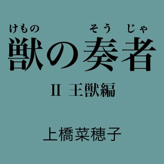
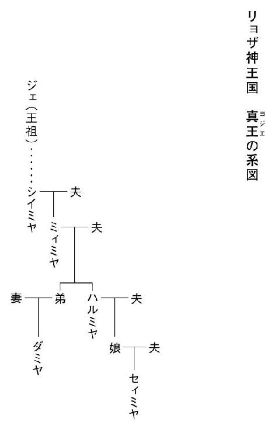

| 獣の奏者02 王獣編 | |
| 上橋菜穂子 | |
| 講談社 (2012) | |
ebpaj-guide-1.0

主な登場人物
エリン 物語の主人公。闘蛇衆の村で育った少女。母を失って村を離れ、数奇な運命を辿る。
ソヨン エリンの母。闘蛇衆と結婚してエリンを産み、獣ノ医術師として暮らす霧の民。
アッソン エリンが幼いころに死んでしまった父。闘蛇衆の頭領の息子。
ジョウン 蜂飼い。孤児となったエリンをひきとり、めんどうをみる。
アサン ジョウンの息子。
エサル ジョウンの学友。カザルム王獣保護場の学舎で、教導師長を務める女性。
カリサ カザルム学舎の寮母。
ヤッサ カザルム学舎の教導師長補佐。
ロサ カザルム学舎の教導師。
ユーヤン カザルム学舎に二人しかいない女子学生の一人。エリンの親友。
トムラ カザルム学舎で学ぶ男子学生で、エリンの先輩。
ハルミヤ リョザ神王国の王で、真王と呼ばれる、聡明でやさしい老女。
セィミヤ ハルミヤの孫で次の王となる娘。
ダミヤ ハルミヤの甥。
ジェ リョザ神王国を築いた王祖。
ナミ セィミヤの侍女。
大公 闘蛇を操る兵を持ち、リョザ神王国の国防を担う重臣。
シュナン 大公の長男。
ヌガン 大公の次男。
イアル 真王の護衛士「堅き楯」の一人。
カイル 真王の護衛士「堅き楯」の一人。
ヤントク イアルの幼馴染み。
オウリ ラザル王獣保護場の長。

夢の中でひらめいた思いつきに背を押されて、エリンは王獣舎からとびだし、真っ暗な林を通りぬけ、学舎までもどってきた。
夜が更けて、月も沈んでしまっている。星だけが、薄い雲の狭間から輝いていた。
みんな眠っているのだろう。寮の窓にはまったく灯りはなく、闇の中に建物の形だけが黒々と沈んで見えた。
裏口の戸に手をかけてみたが、しっかり鍵がかかっていて、びくともしなかった。
エリンは唇を嚙んで、考えこんだ。
まさか、この時刻に、戸を叩いて寮母さんを起こすわけにもいかない。――しかし、リランの身体のことを考えると、朝まで待つ時間さえ惜しかった。
エリンは、自分の部屋の窓がある西側の棟にまわっていった。星明かりしかないけれど、多少は物が見える。ユーヤンはもちろん眠っているのだろう。二階の窓は真っ暗だった。
北風をさえぎる防風林が寮の脇に植えられていて、木の枝が二階の窓すれすれまで伸びている。まえにユーヤンが、「わたしらがもうちょっと年頃になったら、男が登ってくるかもしれんでぇ」と笑っていたのを思いだした。
エリンは手をこすり合わせた。木登りは得意だ。下のほうには枝がないから、枝に手をかけて登ることはできないけれど、村にいたときは、男の子連中と、こういう木にも登っていた。
エリンはまず、短靴を脱いで裸足になった。それから手早く帯をほどいた。
衣の裾を結んで前がはだけないようにしておいて、帯の端を右手に巻いてしっかり握った。帯を幹にまわしてから、両端を左右の手でしっかり握って、それで身体を支え、ひょいっと両足を幹に踏んばった。
素早く帯を幹の上のほうにずらしては登り、ずらしては登り、エリンは尺取り虫のようにみるみる太い枝が伸びているあたりまで登っていった。
左手の帯を放して枝をつかむや、エリンは帯を右手にくるくると巻きつけて、右手でも枝をつかんだ。そして、太い枝の上によじのぼって、その上にまたがった。
枝の先は細くなっているから、あまり長いこと体重はかけられない。まずは、ユーヤンを起こして、窓をあけてもらわねばならなかった。
手近にある細枝を折ると、腕をいっぱいに伸ばして、枝の先で窓を叩いた。
叩くというより、葉っぱでこする感じだったけれど、三回、四回と叩くうちに、窓の内側に、影が動いた。
「......誰？」
ユーヤンの声が聞こえてきた。
答えようとエリンが口をあけた瞬間、ユーヤンが言った。
「カシュガン？」
意外な名前がとびだしてきたので、エリンは危うく枝を落としそうになった。
ユーヤンは押し殺した声で続けた。
「だめやん、カシュガン。......あんたの気持ちはうれしいけどな、わたしらは、まだ学童同士やで」
エリンは、ぽかんと口をあけて、窓の向こうの影を見つめた。
笑いの発作がこみあげてきた。あわてて口を片手でふさぎ、枝の上で身を丸くして身体をふるわせた。その拍子に、ぐらっと身体が傾いて、エリンは枝にしがみついた。ぞっとして、自分のおかれている状況を思いだした。
笑っている場合ではない。これ以上ここにいたら、枝が折れるかもしれない。
エリンは慎重に身体をずらしてすこし前に進むと、小さな声で呼びかけた。
「......ごめん、ユーヤン、わたし。窓、あけて」
そのとたん、カシュガンを説得していた声がぱたりとやんで、いきなり窓が引きあけられた。
「エリン？」
「シーッ！」
エリンはあわてて、ユーヤンを制した。
「起こしてごめん。......そこどいて。とびこむから」
ユーヤンがあわてて横にどいたのを見届けて、エリンは蛙が跳ねるような格好で枝を蹴り、両手で窓の上枠をつかんで、ひょいっと窓をくぐって部屋の中にとびこんだ。
床に両足がついたとき、かなり大きな音がした。
二人はしばらく身を縮めて動きをとめ、誰かが目をさまさなかったかと、下の音に耳をすました。
幸い、誰かが起きた気配はなかった。
「......エリン、あんた、なにやっとん？」
ユーヤンが、まじまじとエリンを見つめて、つぶやいた。
エリンは小声で謝った。
「ごめん。――どうしても、今夜中に必要なものがあってとりにきたんだけど、裏口の鍵も締まってたから」
ユーヤンは、溜めていた息を長々と吐きだした。
頰をこすりながら、ユーヤンは、さりげないふうを装って訊いてきた。
「......わたしの声、聞こえた？」
「聞こえなかったよ――カシュガンなんて言葉」
言うなり、エリンは腹を抱えた。ふるえながら声を殺して笑っているエリンの背中を、ユーヤンが蹴っとばした。
「笑うな！」
ユーヤンは真っ赤になって、エリンの背中を叩いたり蹴ったりしながら、最後にはエリンに抱きつき、二人は息もできないくらい笑い転げた。
階段をあがってくる足音が聞こえてきたかと思うと、ガラッと戸が引きあけられた。
「なにやってるの！ こんな夜中に！」
寮母のカリサが立っていた。寝床からとびだしてきたのだろう。寝巻き姿のままだった。
エリンとユーヤンは、あわてて正座した。
「......申しわけございません」
カリサはエリンを見て、眉を跳ねあげた。
「あら？ あなた王獣舎にいたんじゃないの？ 裏口も玄関も鍵をかけたはずだけど、どうやって部屋にもどったの？」
エリンは身体を縮めた。
「ごめんなさい。......どうしても、必要なものがあったので......。寮母さまを起こすのは申しわけないと思って、窓から入りました」
「窓から？ でも、あなた、ここは二階よ？」
言ってから、窓の外に見えている枝に気づいたのだろう、カリサは声を失った。
「......なんと、まあ。二十年、寮母をやっているけれど、女の子が木によじのぼって部屋に忍びこんだなんて、初めてですよ。呆れた！」
カリサは、呆れ顔でエリンを見つめた。
「おとなしい子だと思っていたけれど、認識をあらためなきゃならないわね。とんでもないことをする子だこと。今回だけはゆるしてあげるけど、二度とこんなことをしてはいけませんよ！ 枝が折れたら、大変なことになっていたのよ。わかってるの？」
「......はい。もういたしません」
ため息をついて首をふりながら、カリサはもどっていった。
二人きりになると、エリンとユーヤンは顔を見合わせた。
笑いの発作は消えて、おだやかなおかしさだけがお腹のあたりに残っていた。
「......で、なにをとりにきたん？」
ユーヤンに言われて、エリンは、はっと、自分がなにをしにきたか思いだした。あわてて立ちあがると、エリンは、私物をしまってある戸棚を引きあけた。
背後で、カチ、カチと火打ち石を打ち合わせる音がした。ユーヤンは手慣れた仕草で火口に火花を飛ばし、小さな火を熾すと、灯りを灯してくれた。
袋に入った小さな竪琴をひっぱりだすと、ユーヤンが肩ごしにのぞきこんだ。
「なにそれ。......あ、竪琴やん！」
エリンはそっと竪琴をなでた。夢中になって作った三つの竪琴のうちで一番気に入っている竪琴だった。ジョウンと暮らしていたときは、暇さえあれば弾いていたのに、この学舎に入ってからは新しい暮らしに慣れるのに精一杯で、竪琴にさわる余裕などなかったから、もうふた月近くさわっていない。
「これね、わたしが作ったのよ」
竪琴をなでながら、エリンはつぶやいた。
「え......あんたが作ったん？ すごいなぁ。あんた、竪琴も作れるん......」
「職人が作る竪琴に比べれば、ずいぶん拙いものだけど」
お気に入りの曲の出だしを爪弾くと、さわっていないあいだに、弦がゆるんでいるのが感じられた。それに、耳の奥に残っている、あの王獣の母がたてていた音とは微妙にちがう。
「いい音やぁ......」
ユーヤンはうっとりとつぶやいたが、エリンは首をふった。
「だめだわ、これじゃ......」
眉をひそめて、エリンは弦を一本一本はじいた。
王獣がたてるあの音と、似てはいるけれど、どこか違う。――これでは、リランには自分たちの言葉だとは感じられないかもしれない。
エリンが小声で、自分の思いつきを説明すると、ユーヤンは首をかしげた。
「大丈夫なんやん？ ちょっとぐらい違ってたって、わたしらだって、ほら、わたしのしゃべり方と、エリンのしゃべり方は違うけど、わかるやん」
「うーん。でもね、そうはいかないような気がする......」
言葉が、言葉として相手にわかるのは、たとえば、「エ」という音と、「リ」という音の違いを聞き分けられるからだ。
人の言葉は、音がとても多彩で、ものすごくたくさんの、はっきりとした違いがある。でも、王獣のあの鳴き声には、音程と、音の長短、ロン......と響いたあとの余韻、そして、音の続け方しか、違いがないような気がする。それも、一度聞いただけでは、同じ音にしか聞こえないくらい、ごくかすかな音の違いでしかない。
あのかすかな音の違いで意味を聞き分けているのだとすれば、わずかに音がずれても、それは意味のある言葉としては感じられないのではなかろうか。
そう言うと、ユーヤンは唸った。
「......そりゃ、やってみなきゃわからんなぁ」
エリンはうなずいた。そうなのだ。やってみなければわからない。そもそも竪琴の音を、あの音に近づけることができるかどうか......。
気の遠くなるような作業だけれど、そんなことを嘆いている暇はなかった。
エリンが立ちあがると、ユーヤンはびっくりした。
「あんた、また王獣舎にもどるん？」
「うん」
ユーヤンは顔をくもらせた。
「あんた、ほんとに、熱中したら、ほかのことが考えられなくなる性質なんなぁ......。でも、あんた、生身なんでぇ、自分の身体のことも考えぇ」
エリンは微笑んだ。
「うん。......ありがと」
エリンが王獣舎の戸をあけて中に入っても、リランはまったく動かなかった。
竪琴を持って、その黒い影の塊に向き合うと、心ノ臓が、強く脈打ちはじめた。
エリンは息をつめて竪琴の弦に指をあてた。この弦のなかではもっともあの音に近い、中低音の弦だ。
ロン......と、弦が鳴った。
突然鳴った音に眠りを邪魔されて、リランはかすかに身じろぎをしたが、目もあけず、さしたる関心は示さなかった。
二度、三度と弦を鳴らしてみたけれど、うるさそうに肩をゆするだけで、やはり目をあけなかった。
エリンは、つめていた息を吐きだして、肩を落とした。弦が鳴ったら、もっと劇的な反応をしてくれるのではないかと期待していたので、かなりがっかりした。
この弦の音と、王獣の母親が出す音は、たしかにちがうけれど、それでも、多少なりとも似た音だと思ったら、もっと反応するのではなかろうか。たとえば、異郷にいて、故郷の方言に似た言葉が聞こえてきたら、はっとして、ふり返るように。
（......的外れの思いつきだったのかな）
エリンは、しゃがみこんだ。勢いこんでいただけに、徒労感が強かった。
毛布をつかんで、エリンは竪琴を抱いたまま横になった。これまで、あまり気にならなかった床の硬さと冷たさが、肩にこたえた。
失望で疼く胸を押さえるように竪琴を抱えこんで、エリンは目を閉じた。眠りに落ちると、今度は脈絡のない夢をたくさん見た。
目がさめたときには、朝の光が王獣舎に射しこんでいた。
エリンは、ぶるぶるっとふるえた。そうだ。板を一枚外してあったから、背中とうなじが、すうすうと寒かったのだ。今夜は忘れずに、板をはめこんでから寝よう。
竪琴を抱いて寝ていたので、顎のところに跡がついてしまっていた。ぼんやりと、そこをなでながら、エリンは目をあげて、リランを見た。
リランは相変わらず、彫像のように座っている。足もとの寝藁が、ずいぶん汚れていた。なにもしてやれないのなら、掃除だけでもしてやりたい。音無し笛を吹くのはかわいそうだけれど、あのままでは、もっとかわいそうだ。
エリンは身体を起こして、いつもやっているように膝を抱いて座った。寒いので、毛布はかぶったままだった。その姿勢のまま、毛布の内側で竪琴をいじった。
あの王獣の母が出していた音は、腹か胸の中でたてている音なのだろう。澄んだ音ではなく、体内に反響しているような、くぐもった音だった。すこし弦をゆるめたら、あんな感じが出せるかもしれない。そう思いながら、弦をはじいた。
ロン......と、小さな音が響いた瞬間、ぱっとリランが目をあけた。
エリンは、ぎくっとして、リランを見つめた。リランは金色の目を瞬かせて、こちらを凝視している。
エリンは、そっと弦に指をあて、もう一度、はじいた。
リランは、やはりこちらを凝視している。それ以上の反応はしないけれど、間違いなく、こちらを気にしていた。
（なに？ ......なんで？）
昨夜は、ほとんど反応しなかったのに。いったい、なぜ、いまは反応しているのだろう？ 昨夜となにがちがうのだろう？
目をさましているからだろうか。昨夜は寝ぼけていて聞こえなかったのかもしれない。それとも......。
エリンは自分の手もとを見た。毛布の内側に竪琴がある。――うなじに鳥肌が立った。
（これかもしれない......）
毛布をかぶっているせいで、くぐもって響いた弦の音が、母が体内でたてる音に近かったのではなかろうか。
エリンは目を閉じて、もう一度、弦をはじいた。全神経を集中して、その音を聞いた。
（近い......）
たしかに、近い。あの音に似ている。――でも、やはり、どこかちがう。
リランもそう感じているのだろう。はじく音に慣れてしまうと、疲れたように目を閉じてしまった。
エリンは唇を嚙みしめた。
あの音に近づけたい。リランは、弦の音に反応したのだ。あの音が出せれば、きっと、リランは、もっとまともに反応してくれる......。
どういう形にしたら、あの音が出るだろう。毛布をかぶせて出るこの音は、くぐもっているだけだが、あの音はもうすこし反響していた。なにか、もうすこし張りがある、太鼓の内側のようなところで弦をはじいたら、近い音になるかもしれない。
エリンは毛布を肩にかけたまま、立ちあがった。
＊
「外出許可が欲しい？」
朝食を終えて、教導師長室にもどったばかりのエサルは、片手を机について、座椅子に腰をおろしながら、エリンを見上げた。
「なにをしに、どこへ行きたいの」
「街に行きたいのです。ジョウンおじさんとここへ来る途中、丘の下の街を通ったとき、楽器職人の工房を見かけました。急いで、あの工房へ行ってきたいのです」
「楽器職人の工房？」
エリンは唇を湿した。
「......試してみたいことが、あるのです」
エリンが昨日からのいきさつを話すあいだ、エサルは黙ってエリンの顔を見ていた。
自分の思いつきがエサルにどう思われるか不安なのだろう、エリンは顎のところについている赤い筋を、しきりに親指でこすりながら話している。
エリンが口を閉じると、柱時計の音がもどってきた。
エサルは、額にかかった髪を搔きあげた。
「野生の王獣が、そういう音をたてるという話は、わたしも聞いたことがあるわ。まえに王獣捕獲者に会いにいったと言ったでしょう？」
「はい」
「そのとき、ある老練な捕獲者が言っていた。幼獣のころから保護場にいる王獣はたてない音を、野生の王獣はたてると。彼も、竪琴のような音だと表現していたわ」
エリンはうなずいた。
「そうなんです。ほんとうに、そんな感じの音なんです」
エサルは、じっとエリンを見つめた。
「でもね、その音を再現できたら、王獣と話ができると思うのは、すこし短絡的すぎない？」
エリンの頰に、かすかに赤みがさした。
「......わたしは、竪琴でリランと話ができるとは思っていません。人と王獣では、考えの筋道も感じ方もちがうでしょうから、たとえ王獣の言葉がわかっても、会話などできないと思います。
でも、ごく単純な意思の疎通なら、できるかもしれないと思うんです。犬や馬とでも、意思が通じる瞬間はあります。犬に、まだ食べずに待て、と命令することも、よし、食べてもいいよ、と伝えることもできます」
エリンは一生懸命、言った。
「王獣は、とても賢い生き物だと聞いています。犬に伝えられるくらいのことは、王獣にも、伝えられるはずです」
エサルは首をふった。
「犬は群れで生きる獣よ。仲間同士の意思疎通を大切にするし、命令系統もはっきりしている。人を主人だと認めれば、その命令にも従う。信頼関係も生まれる。......でも、王獣はちがうわ。彼らは群れをつくらない孤高の獣よ。人に馴れることもない。人を信頼することもない」
「でも、野生の王獣の親子は、頻繁に鳴き交わしていました。犬や馬の親子は鳴き交わすより、触れ合っていることのほうが多いですが、王獣の親子はなにかにつけて、あの音で鳴き交わしていました」
エサルが目を細めるのを見ながら、エリンは身を乗りだした。
「教導師長さまは、保護場の王獣と野生の王獣の違いを調べろとおっしゃいましたよね。これは、ものすごく大きな違いです。この違いが、なぜ生じるのか知りたいんです。なぜ、保護場の王獣は鳴かないんでしょう？ なんで？
それに、リランはたしかに、わたしに問いかけたのです。なぜ、リランは、わたしに向かって鳴いたんでしょう？ ......わたし、それを知りたいんです」
なにを考えているのか、エサルは口もとをなでながら、ぼんやりと書棚のあたりを見ていた。それから、ついっと視線をエリンにもどした。
「......わかったわ。やってごらんなさい」
エサルは机の引き出しを引いて、中からなにか書かれている細い紙と銭袋をとりだした。
「これを使いなさい。銅貨が五十枚ぐらい入っているわ。もし、足りないようなら、この金銭保証書を渡しなさい。カザルム学舎の金銭保証書だから、小粒銀一枚ぐらいまでなら即金でなくても売ってくれるでしょう。でも、それ以上高いものは買ってはだめよ」
エリンは、うれしくて、さっと頭をさげた。
「どうもありがとうございます！」
エサルは、にこりともせずにうなずいた。
「あなたは、馬には乗れるの？ 歩いていったら、一ト（約一時間）はかかるわよ」
「大丈夫です。乗れます」
「なら、用務の誰かに頼んで、馬を借りなさい。......気をつけて行くのよ。門限までには帰ってくるように」
「はい」
手もとに影が落ちた。
「......また妙なもん、作りはじめたな。なんだ、そりゃ」
エリンは顔をあげなかった。竪琴の木枠にそって皮を片面全体にぴったりと張るべきか、木枠に湾曲させた竹をつけてから張るべきかで頭がいっぱいで、トムラの声は聞こえていても、頭の中に言葉として入ってこなかったのだ。
手に入れられた皮は、それほど多くない。判断を誤ると、また買いにいかねばならない。
手間はかかるが、湾曲させた竹を二本、木枠の上端と下端に渡して、その上に張れば、音の響きの調整ができるだろう。それに、そちらのほうが皮を広めに使うから、あとで竹枠を外すことにしても、縮めればいいわけで、皮の広さが足りなくなることはない。
「よし。......そうしよう」
エリンはつぶやいて、草地に敷いた布の上から、細く割った竹をとりあげた。
これは竹細工職人の工房で手に入れたものだ。楽器職人の工房では、まだ毛をむしっていない、太鼓の革用の牛皮と、すでに毛をむしって太鼓の胴に張って乾かしてあった革の二種類を、頼みこんで手に入れてきた。
音がよく響くのは、もちろん毛をむしって、きれいに乾燥させてある革のほうだが、エリンはまず、まだ毛がついている皮のほうを使ってみようと思っていた。
王獣舎の中だと手もとが暗いし、さすがに、お日さまの光が恋しくなっていたので、作業は王獣舎の脇の草地に布を敷いて、その上で行うことにした。
よく晴れた、うららかな日だった。日の光を浴びていると汗ばんでくるほどで、春が終わろうとしていることを感じさせる。
エリンは足の指で竹枠の下端を押さえ、上端を竪琴の木枠の上端にあてると、そこに小刀の先で印をつけた。
弦だけでなく、木枠も竪琴の音に影響する。こうやって細工をすれば音は確実に変わってしまう。もとの音は二度ともどってこないだろうと思うと、すこし惜しい気がした。
黙々と作業を続け、皮を張りおえたころには、あたりが夕焼けに染まっていた。
左側に竹で膨らみをつけた牛皮が張られている竪琴を膝に抱くと、目をつぶって、弦をはじいてみた。
ロン......と鳴った弦の響きは、皮にこもって反響し、くぐもった音に聞こえた。
エリンは目をつぶったまま、眉をひそめて、その音に耳を傾けた。
近い。――まえよりも、ずっと近い。かすかに音程がちがうけれど、響き自体は、王獣の母がたてていた音と、とても似ている。
エリンの口もとに、ゆっくりと笑みが浮かんだ。
これなら、大丈夫かもしれない。微調整をしていけば、あの音に酷似した音まで、近づけることができそうだ。
つめていた息を吐きだして、エリンは目をあけた。目がちかちかするし、後頭部が張ってしまって、かすかに頭痛がする。
エリンはあたりを見まわして、ふと首をかしげた。草原を、夕暮れの風が静かに渡っていく。なんとなく、トムラがそばに立っていたような気がしたけれど、思い違いだったのだろうか。
実際には、トムラは、なにを問いかけても生返事しかしないエリンに呆れはてて、とっくに宿舎に帰っていたのだが、エリンは、いつトムラが脇に来て、いつ帰ったのかも覚えていなかった。
座りつづけていたので、腰と膝がこわばってしまっている。エリンは痛みに顔をしかめながら立ちあがった。そして、できあがったばかりの試作品を抱いて、王獣舎のほうを見た。
リランの身体のことを考えれば、いますぐ試してみたほうがいい。そう思うのに、どうしても、足が動かなかった。
これもまた、なんの効果もなかったら......。
エリンは、ため息をついた。今日はやめよう。明日の朝、明るくなってからにしよう。どうせ、リランはそろそろ眠りにつく時刻だ。
気持ちが後ずさりしているのだとわかっているけれど、エリンは黙々と道具を片づけて、夕食を食べに宿舎にもどっていった。
＊
「エサル師！ ......エサル師！」
戸の外から呼びかける切迫したトムラの声に、エサルは書きものをしていた手をとめて顔をあげた。
「入りなさい」
答えるのとほぼ同時に、戸が乱暴に引きあけられた。とびこんできたトムラの顔は血の気がなく、頰のところだけ赤かった。
「なにごとなの？」
顔をしかめて問いただしたエサルに、トムラは唇をふるわせて答えた。
「......食べています。リランが、餌を食べています」
エサルは、目を見開いた。
「なんですって？」
「来てください。とにかく......来てください」
エサルは立ちあがり、足踏みをしかねない様子で待っているトムラを促して、部屋を出た。
裏の王獣舎が見えてきたとき、まず目にとびこんできたのは、壁に大きくあいた穴だった。エサルの視線に気づいて、トムラがあわてて釈明した。
「あ......申しわけありません。お伝えするのが遅くなりましたが、昨日、壁の穴を広げました。エリンが、そうしてほしいと言ったもので」
「あんなに大きな穴をあけて、リランは大丈夫なの？」
「はい。まったく怯えていません。いまは、光に怯えることはないです」
エサルは唇をきゅっと結んで、王獣舎の戸口に近づいた。
王獣舎の中は、ふつうの王獣舎より明るいくらいだった。ぷんと糞尿の臭いが鼻をついたが、その臭いについてなにか思うよりさきに、目の前の光景に、心ノ臓をつかまれるような衝撃を感じて、エサルは足をとめた。
エリンが、格子の向こう側にいる。
手に奇妙なものを持って、静かにロン、ロンと音をたてながら、リランに対峙している。
リランは、大きく首を上下にふっている。脚で押さえつけた肉を食いちぎっては、のみこんでいるのだ。
息をすることも忘れて、エサルは、その光景を見つめていた。
明るい初夏の光が射しこんで、汚れた藁と、リランの巨体と、その肩のあたりまでしかない小さなエリンの身体とを浮かびあがらせている。リランが頭を動かすたびに、細かな埃が、その動きにつられるように舞っていた。
エリンは無表情だった。目を半ば伏せて、ただ自分がたてている音に耳を傾けている。
リランは、肉塊の最後の一片をのみこむと、甘えるように、シャシャシャと鳴いた。
エリンは、それに応えるように、ロン、ロロン......と竪琴を鳴らしながら、ゆっくりと後ずさり、ちょっと頭をさげて、格子の戸をくぐった。
エリンは格子の戸を閉めなかった。そのまま格子のこちら側に立って、小さく、ゆっくりと弦を鳴らしている。
その音に合わせるように、かすかに首をふっていたリランの目が、やがて、眠そうな、とろんとした色に変わった。お腹がいっぱいになった幼子そのものの、安心しきった表情だった。
リランが目を閉じると、エリンはそっと竪琴を下におき、格子の戸を閉めた。
竪琴をとりあげて、こちらを向いたエリンの目に、初めて、表情が表れた。エサルを見つめているその目に、みるみる涙が盛りあがった。
声をたてずに涙を流しながら、エリンはエサルのそばへ行き、三人は黙って、王獣舎の外へ出た。
細かくふるえているエリンの腕を、エサルは、そっと握った。
「......やったわね」
それしか言えなかった。
エリンは、ぼろぼろと涙を流しながらうなずいた。
三人は王獣舎の脇の草原に、腰をおろした。
「――では、あなたが考えたとおりだったのね。この竪琴の音に、リランが反応したのね」
エリンが抱いている、手作りの皮張り竪琴に触れながら、エサルがつぶやいた。
「はい。......一昨日の朝、リランの前でこれを鳴らしてみたら、びっくりしたように、わたしを見たんです。そして、鳴き声をたてました。まるで、応えているみたいに」
「それで？ それから、どうしたの？」
「その鳴き声に、応えてみました」
エサルは眉をひそめた。
「どうやって？ ......どの音がなにを意味するのかを、あなた、知っていたの？」
エリンは涙の跡をぬぐいながら、首をふった。
「いいえ。でも、野生の王獣の母親が、よくたてていた音で、耳に残っていた音があったので、その音を再現してみたんです」
エリンは皮張り竪琴を持ち直し、ロン、ロロン、ロン......ロン、ロロン、ロン、と弾いてみせた。
「王獣の母は、巣で幼獣を胸に抱いているとき、よくこの音をたてていました。だから、とりあえず、その音をまねてみたんです。そうしたら......リランが、甘え声をたてたんです」
エサルは身を乗りだした。
「シャシャシャっていう声ね？ あんな声は初めて聞いたわ。あれは、甘え声なの？」
「そうだと思います。野生の幼獣は、母親の胸に顔をこすりつけながら、よくああいう声をたてていましたから......」
一昨日の朝から、エリンは、一日のうちに何度か、リランに皮張り竪琴の音を聞かせた。王獣の母親が子をあやしてやるように、落ちつきなさい、大丈夫よ......という気持ちをこめて。
そのたびに、リランはシャシャシャと甘え鳴きをした。そして、エリンに近づこうとするように、格子に頭をこすりつけるようになった。そうやって甘えているときに、トムラに頼んで、壁の穴を大きくしてみたのだ。
全身に光を浴びても、もはや、リランは気にしなかった。
それだけではない。エリンが食事などで王獣舎を離れて、もどってくるたびに、リランは、野生の幼獣が、母親が巣にもどってきたときにやるのとそっくりの仕草で、甘え声をたてながら翼をゆするようになったのだ。
今朝、エリンはリランが餌をねだる仕草をしているのに気づいて、呆然と立ちつくした。
いまだ。――いまなら、きっと餌を食べる。
しかし、竪琴を弾きながら、ヤスの先につけた肉塊をふるのは無理だった。迷ったが、この一瞬を逃したら、もう二度と、こんな機会は巡ってこないかもしれないと思った。
決心がつくよりさきに、身体が動いていた。格子の戸をあけて餌の新鮮な肉塊を中に入れてから、リランを落ちつかせるように竪琴を弾きながら、エリンも中に入った。
そして、いったん竪琴を脇にはさんで、肉塊をリランの目の前まで持ちあげてみせてから、すうっと、足もとにおろした。
まえと同じように、リランはつられて頭を足もとまでさげ、肉塊の匂いを嗅いだ。そして、顔をあげ、エリンを見ながら、問いかけるように、ロン、ロン、ロン......と鳴いた。
エリンは息をつめて、竪琴の弦に指をおくと、ロン、ロロン、ロン......と返した。
その瞬間、リランの目が鮮烈な光を宿した。まるで心を縛っていたなにかがはじけとんだかのようだった。そして、ものすごい勢いで肉塊にかぶりつくと、嚙み裂いて、のみこみはじめたのだった。
食い入るように話を聞いていたエサルは、ぎゅっと顔をしかめた。
「......なんということを！ 今回は奇跡的に大丈夫だったけれど、硬直していない王獣のそばに近寄るなんて、とんでもないことよ」
厳しい声で言われて、エリンは首をすくめた。
「はい。――やってしまったあとで、わたしもそう思いました。申しわけありません」
ゆっくり首をふりながら、エサルは、ため息をついた。
しばらく、誰も、なにも言わなかった。渡ってきた風が、梢を鳴らしていく音だけが、静かな草原に響いている。
「とんでもない......」
ぽつんと、エサルがつぶやいた。
また怒られるのかとエリンは身構えたけれど、エサルの表情はおだやかだった。
自分を見ているエサルの目に感嘆の色が浮かんでいるのを、エリンは不思議な思いで見ていた。
エサルは、かすれ声で言った。
「......とんでもない子だわ、あなたは」
エサルは、ささやくように言った。
「これまで、誰もやったことのないことを、あなたはやったのよ......」
ずっとあとに、エリンは何度も思ったものだ。――いったい自分はいつ、決定的な曲がり角を曲がったのだろうと。
リランを任せてくれとエサルに申しでた、あの午後だろうか。それとも、リランに応えるために、竪琴を使ってみようと思いついたあの夜だろうか。それとも......と。
そして、いつも、ひとつの思いに辿りつく。
曲がり角はひとつではなかった。運命によって強引に曲がらされた角もあり、自分で切り開いてしまった道もあったのだと。
そして、この朝、エリンは確実に、大きな運命の曲がり角を曲がってしまったのだった。
初夏の光の中へ、リランが出ていったのは、餌を口にしてから三日後のことだった。
長い絶食のあとだったから、ちゃんと肉が消化できるかどうか心配だったが、王獣の身体は頑健で、リランは餌をもどすことも、腹を下すこともなく、順調に活力をとりもどしていった。
用務の男衆の手で、格子の向こう側の、王獣用の引き戸があけられると、リランは多少おぼつかない足取りながらも、自分から草原へととびだしていった。
カザルム高地の王獣保護場は、主に草原地帯だったが、奥のほうには森林と渓流もある。王獣舎のそばの草原には、ところどころ、地下水が湧きだしている大きな池があり、王獣たちの格好の水浴び場になっていた。
エリンたちが遠巻きに見守るなか、リランはそういう池のひとつに、よたよたと向かっていった。そして、池の縁にしゃがみこんで水を飲んでから、見ているほうがぎょっとするくらいの思いきりのよさで、ジャッポンと池にとびこんでしまった。
あまりに気持ちよさそうに、盛大に水をはねあげて水浴びしているので、エリンもトムラも、エサルさえも、思わず笑顔になった。
「王獣は、きれい好きだからな。まずは、風呂ってわけだ」
トムラは笑いを含んだ声でそう言った。
「溺れないかしら......」
エリンが言うと、トムラは首をふった。
「あの池は浅いから心配ないよ」
エサルも、まぶしそうに目を細めてリランを見ていたが、ひとつうなずくと、言った。
「もう大丈夫なようね。さあ、リランが外にいるあいだに、王獣舎の掃除をなさい。わたしは会議があるから、もどるわ。なにかあったら、すぐに連絡するように」
「はい」
きびきびした足取りでエサルが林の奥へ消えるのを見送ってから、トムラはまた、リランのほうへ目を向けた。
リランがはねあげる水しぶきが、明るい日射しで、宝石の粒のように輝いている。
思う存分水浴びをしたリランは、やがて、水を滴らせながら草地にあがり、日だまりにしゃがみこんで、心地よさそうに目を閉じた。
「夢みたいだな。......リランが、お日さまの光を浴びている」
トムラは、リランをながめながら、つぶやくように言った。
「おまえは、すごいよ。おれ、素直にそう思うわ」
びっくりして、エリンはトムラの横顔を見上げた。
「ほんとに、やっちまうんだもんなあ」
トムラは眉をあげて、エリンを見下ろした。
「たとえ、霧の民の秘法を使ったんだとしても......」
「わたし、そんなもの......」
顔をしかめて言いかけたエリンを、トムラは手をあげてさえぎった。
「最後まで聞けよ。おれが言いたいのはな、おまえが、たとえ霧の民の秘法かなにかを知っていて、それを使ったんだとしても、それでも、やっぱり、おれはおまえを尊敬するってことなんだからよ」
エリンは瞬きをした。トムラは、おだやかな顔で言った。
「おれが尊敬するのは、おまえの熱意だよ。――おまえの、とんでもない熱意だよ。
この十二日間、おまえは、ただひたすら、リランのことだけを考えていたもんな。ここまでひとつのことに没頭するやつ、おれは、初めて見たよ」
苦笑しながら、トムラは言葉をついだ。
「発想もすごい。......おれ、今回つくづく思った。人にどう思われるか気にしていると、発想も縮こまるんだな。おまえは、そういうことに、信じられないくらい無頓着なんだよなあ。突拍子もないことを言いだして、笑われるんじゃないかとか、まったく考えない。だから、人が思いつかなかったことが、できるんだな」
エリンはどういう顔をしてよいかわからず、うつむくしかなかった。
トムラは大きな手で、エリンの肩を、ぽんぽんと叩いた。
「......さて、それじゃ、大掃除にとりかかるか。おれが寝藁を搔きだすから、おまえは、水を流してくれ」
驚いて、エリンは顔をあげた。
「え......あの、寝藁は、わたしが......」
トムラは笑った。
「いいよ。おれのほうが早い」
すたすたと倉庫のほうへ歩いていくトムラの、あとを追って歩きだそうとして、エリンは、ふと足をとめ、もう一度、リランをふり返った。
初夏の日射しを浴びて、うつらうつらしている幼い王獣を見ると、お腹のあたりから温かいものが湧きあがり、身体の隅々にまで広がっていくのを感じた。
リランが、お日さまの光の中にいる。......とまっていた時が、動きはじめたのだ。
エリンは笑顔になって、トムラのあとを小走りに追っていった。
＊
教導師長室は、さほど広くないので、会議のために十人の教導師が勢揃いすると、いささか息苦しい感じになる。
それでも、エサルは、だだっぴろい講義室でやるよりも、気持ちが集中できるからと、会議は必ずこの部屋で行っていた。
エサルが部屋にもどったときには、すでに教導師は全員集まっていた。急な召集に戸惑っている者が、事情を知っている教導師長補佐から説明を受けている最中だったようで、エサルが入っていくと、全員が、やや興奮した顔でエサルを見た。
「お待たせして悪かったわね」
エサルが自分の机につくと、教導師長補佐のヤッサが、声をかけてきた。
「うまく、野に出ましたか？」
「ええ。多少よたよたしていたけれど、自分から野に出て、水浴びに行ったわ」
「それはよかった！」
ヤッサが、うれしそうに微笑んだ。
エサルは皆を見まわした。
「すでにヤッサ師から説明があったと思うけれど、リランが餌を食べるようになって、順調に回復しつつあるわ。今日はそのことで、すこし話し合わねばならないことがあるので、集まってもらったのよ」
そこでいったん言葉を切り、再び口を開こうとしたエサルを、中年の教導師がさえぎった。言葉に毒があるので、学童たちから敬遠されている、ロサという男だった。
「お話をいただくまえに、ひとつよろしいですかな」
「どうぞ」
「教導師長補佐のご説明は、まだ途中だったのですが、学童たちがさかんにしている、ばかばかしい噂はご存じですか」
「どんな噂？」
「霧の民の娘が、秘法を用いてリランを治療したという噂です。
ばかばかしいと一喝しておきましたが、こういう噂が出るのも、失礼ながら、教導師長が、まだ中等二段の小娘を特別扱いされて、幼獣の世話係に抜擢したからではと愚考するのですが、いかがですか」
エサルは、片頰をゆがめて笑った。
「そうね。噂が流れているのはそのせいでしょう。でも、少なくともリランの命を救うという点では、わたしの判断は間違っていなかったわ」
口を開きかけたロサを、エサルは手をふってさえぎった。
「質問や意見はあとで聞きましょう。まず、前後関係を説明するわ」
教導師たちが、居住まいを正した。
「リランの心身の不調の原因と症状は、皆、よく知っているから、いまさら確認する必要はないでしょう。極度に光を恐れ、餌も特滋水も受けつけない状態がひと月以上続いていて、あと半月、その状態が続けば、命が危なかった。皆で何度も話し合ったけれど、結局、打開の糸口はなかった。――そうだったわね？」
全員がうなずくのを見て、エサルは続けた。
「わたしが、中等二段の学童を特別にリランの世話係に抜擢したのは、彼女の知識に、打開の糸口を見たからです。彼女が霧の民だからではなく......」
ロサを見つめながら、エサルは言った。
「彼女が、野生の王獣を観察した経験があったから」
教導師たちがざわめいた。初耳だった者が大半だったからだ。エサルが口を閉じて皆を見まわすと、教導師たちは、静まっていった。
「彼女――エリンは野生の王獣を観察した経験があった。それに、あの子を教えている者ならもう気づいていると思うけれど、長年タムユアンの教導師長を務められたジョウン師が目をかけただけあって、あの子は、とびぬけた発想力と観察力を持っているわ。通常の発想では手詰まりであるなら、あの子にやらせてみるのも悪くないと思ったのよ」
ロサは、苦虫を嚙みつぶしたような顔をしていたが、数人の教導師――エリンの指導をしたことのある教導師はうなずいていた。
「エリンはまず、リランが光に怯える理由に気づいた。
母親に抱かれて巣の中にいる幼獣にとって、光は足もとから射してくるもの。頭上からいきなり明るくなるのは、母親がいなくなった状態を意味するのではないかと気づいたのよ。
そこで、エリンは、王獣舎の壁の下側をはがしてもいいかと問うてきた。卓見だと思ったから、許可したわ。――エリンの考えはあたっていた。リランは、下から徐々に広がってくる光には、怯えなかったのよ」
教導師たちの顔に、驚きの色が浮かんだ。彼らにうなずきかけて、エサルは続けた。
「そう。このことひとつをとっても、エリンの発想力が、どのくらい優れているか、わかるでしょう。......恥ずかしながら、わたしはあの子が壁の下側をはがしたいと言いだすまで、光の角度については気にしてもいなかったわ」
エサルの目に、苦い笑みが浮かんだ。
「だけど、これは、発想力の差というより、知識の差といえるかもしれない。あの子は、野生の王獣を観察したことがあった。だから、野生の王獣の母子が、どんな巣に、どんなふうにいるのかを知っていた。......わたしたちは、そんなことすら知らなかった。真王から王獣を預かっているわたしたちが、そんなことすら、知らなかったのよ」
重苦しい沈黙が落ちた。
「しかし、それは......」
教導師長補佐のヤッサがつぶやいた。エサルは、先を聞かずにうなずいた。
「そう。それは、しかたのないことだわ。王獣の扱いに関しては、王獣規範に沿うことを、わたしたちは厳しく義務づけられているからね。
真王の王権の象徴たる王獣を人の手で保護する場合は、あの規範に沿わねばならない。餌としてなにを与え、どういう寝藁を使うかまで、あの規範は細かく定めている。特滋水を与え、近づく場合には必ず音無し笛を使うよう決められている......」
エサルは、一人一人を見つめた。
「だからこそ、わたしたちは、王獣を育てるときに、それ以外のやり方があるとは、思ってもみなかった。新しい発想など、思い浮かべる余地もなかったのよ。
でも、まだ中等二段のエリンは、王獣規範を知らない。あの子の心の中にある王獣の姿は、かつて養父のジョウンと深山に入ったときに見た、野生の王獣の姿だった。だから、あの子は、人に飼われている王獣としてではなく、野生の王獣と同じ生き物として、リランを扱ったのよ。母親といるとき、幼獣はどうやって餌をねだり、どんなふうに安心を得ているのかを考え、そこから発想していった......」
エサルは腕をさすった。
「鳥肌が立ったわ。――あの子は、音無し笛を使わずに、自分で工夫した竪琴で母親の鳴き声をまねた音を奏でて、触れられるくらいの距離で、リランに餌をやっていたのよ」
皆の顔に、驚愕の色が浮かんだ。ロサが、うわずった声をたてた。
「......まさか、そんなことが！ では、学童たちの噂は真実だったのか。やはり、あの娘は、霧の民の秘法を使って......」
「ロサ師」
エサルがうんざりした顔で言った。
「あなた、わたしの話をひとつも聞いていなかったの？」
ロサは、むっとして訊き返した。
「え？ それはどういう意味ですか」
「言ったとおりの意味よ。わたしがこれまで、エリンがどうやって発想してきたのかを詳しく話したのは、なんのためだと思っているの？ あの子がリランを癒したのは、霧の民の秘法なんかじゃなく、わたしたちのように王獣規範に囚われることなく、野生の王獣についての知識から発想していったからなのだと、説明したつもりなのだけれど？」
ロサは真っ赤になった。
「そんなことは、わかっています。しかしですな、竪琴で母親の鳴き声をまねるなど、ただ発想しただけで、できることではありますまい！」
エサルの目が、かすかにゆれた。それを目ざとく認めて、ロサは声を高めた。
「そうでしょう？ ちがいますか。特別な技を持っていなければ、できないことだ。やはり、なにかあるのですよ。霧の民が伝えているそういう技が......」
エサルは手をふって、ロサの演説をとめた。
「待ってちょうだい、ロサ師。あなたがそう思うのは、もっともだわ。......というか、そういう考え方をする人がいるだろうと思って、今日は集まってもらったのよ」
エサルは厳しい表情で皆を見つめた。
「エリンが音無し笛を使うことなく、竪琴を使って王獣と意を通じたという事実を、王宮にご報告すべきか否か、このことを、早急に話し合っておかねばならない。――そう思ったのよ」
教導師たちがざわめいた。隣の同僚と顔を見合わせ、ささやき交わす声が部屋に満ちた。そのざわめきを搔き分けるように手をふって、ロサが甲高い声で言った。
「そんなことは考えるまでもないでしょう？ これほどの重大事を、王宮に告げずにすますわけにはいきませんよ」
エサルは机を叩いて、静粛を促した。潮がひくように、ざわめきが消えていくのを待ってから、エサルは口を開いた。
「このことを王宮に告げたら、なにが起こるか、冷静に考えてみて。
これまで、王獣はけっして人に馴れぬ獣だと考えられてきた。操る術はただひとつ、音無し笛で硬直させること。それすら、ただ硬直させるだけで、意を伝えられるわけではない。
エリンは、そういう王獣についての概念を根底から覆してしまった......」
「だからこそ――」
割って入ったロサを、エサルはいきなり怒鳴りつけた。
「黙って、人の話を最後までお聞きなさい！」
その声の、あまりの激しさに、一同はびくっと背を伸ばした。
エサルは燃えるような目でロサを睨みつけながら、堰を切ったように話しはじめた。
「王宮にこの事実を告げれば、当然、大騒ぎが起きるわ。王獣規範に沿わなかったことで、わたしは厳しく断罪されるでしょう。それは甘んじて受けてもいい。釈明の方法ぐらい、最初から考えてあるわ。
わたしが一番心配しているのは、エリンのことよ。わたしたちが責任を持って預かった学童のことを心配しているのよ！」
バンッと机を叩いて、エサルは怒鳴った。
「あの子は、なんの悪気もなく、ただひたすら、リランを助けたいと思って、十二日間も王獣舎で寝起きをして、その努力の末に、素晴らしい成果をあげた。たとえようもない、素晴らしい成果だわ！
でもね、ロサ師が思ったように、多くの人は、それをあの子の努力の成果とは考えないでしょう。あの子の目の色と――霧の民の血をひいていることと結びつけて、考えてしまうにちがいないわ」
エサルの顔に、苦痛をこらえているような表情が浮かんだ。
「もし、ほかの者が、エリンと同じように竪琴を鳴らすことで、リランを操れるなら、わたしはこれほど不安になっていなかった。......でもね、わたしやトムラも試してみたけれど、同じ弦を同じ調子で鳴らしているのに、リランは耳を傾けているだけで、エリンに見せるような反応をしなかったのよ」
教導師たちの顔に、複雑な表情が浮かぶのを、エサルは右手をこめかみにあてながら見ていた。
「......そう。あなた方が、いま胸の中で思ったように、この事実を知れば、やはり、エリンは特別なのだと感じてしまう。
でもね、たぶんそうではないのよ。獣ノ医術師として冷静に考えてみてちょうだい。
リランにとって、エリンはたしかに特別な存在になっている。だけど、それは、エリンが霧の民の血をひいているからではないわ。そうではなくて、リランにとって、エリンは、母親を思わせる存在になってしまったからなのよ。
考えてみて。リランは生まれ直したようなものなのよ。呼びかけても応えてくれる母親のいない、不安な闇の中にいたリランに、母と同じように応じてくれたのが、エリンだった。安心させながら餌を食べさせてくれたのが、エリンだったのよ」
髭をなでながら、ヤッサがつぶやいた。
「一種の、刷り込みですか」
エサルはうなずいた。
「たぶん。王獣の生態に関するわたしたちの知識は限られているから、たしかなことは言えないけれど、少なくとも可能性としては、それが一番高いと思うわ」
若い教導師が、考えこみながら口を開いた。
「しかし、ほかの王獣たちも幼獣の時期に連れてこられて世話をされていますが、一度も、そういう刷り込みのような事例は報告されていませんよね」
エサルはほつれ髪を搔きあげながら、その若い教導師に目を向けた。
「あなたは、幼獣に餌をやるとき、どういう手順でやっていた？」
若い教導師は、なぜそんな当然のことを訊かれるのだろう、という表情を浮かべた。
「......幼獣が王獣舎の外にいるあいだに、王獣舎に餌をおいておきます。雨の日など、幼獣を外に出せない場合は、音無し笛を吹いて、硬直させてから、餌をおいてやります」
エサルはうなずいた。
「そうよ。幼獣の身になって想像してごらんなさい。自分がいないあいだに巣に餌がおかれている――あるいは、硬直しているあいだに、目の前に餌が現れるのよ？ 幼獣がわたしたちを、餌をくれる母親だと認識するはずがないじゃないの」
「ああ......」というつぶやきが、教導師たちの口から漏れた。
エサルは、静かな声で言った。
「わたしたちは一度として、王獣と親密な触れ合いをしていないわ。彼らを何十年も世話し、その死を看取ってきたのに、ただの一度も愛馬や愛犬と触れ合うような付き合いをしていない。......王獣規範に沿って王獣の世話をするかぎり、わたしたちは、彼らと触れ合うことはないのよ」
これまで考えたことのなかった事実が、ふいに見えてきたのだろう。教導師たちは声をなくして、呆然とエサルを見つめていた。
「王獣規範を知らなかったエリンは、犬や馬とつきあうような気持ちで、リランの世話をしようとした。その結果、この国で初めて、王獣と絆をつくるのに成功してしまったのよ」
エサルの目の奥には、哀しみの色があった。
「でも、その成果は、王宮の政治屋たちの目には、まったくちがう意味を持つものとして映るはず。――彼らは、王獣を操ることができる、という事実に狂喜するでしょう。
そして、エリンを、特別な力を持つ存在として、政治的に利用しようとするでしょう」
かすれた声で、エサルは続けた。
「ほかに代わる者がいない少女――霧の民の血をひいていると、ひと目でわかる少女を、彼らがどう扱うか......。それを考えると、わたしは恐ろしくてたまらない。
そうやって注目されれば、当然、大公側も、エリンに興味を持つでしょう。この世で唯一、闘蛇を食らう生き物である王獣は、真王が、大公より力を持つ、真の王であることを示す象徴なのよ？ ......なにが起こるか、あなた方だって想像がつくはずよ」
重い沈黙が、部屋をおおった。
エサルはつぶやいた。
「こんな突拍子もないことをあの子がやってしまうと察していたら、わたしは、あの子に、リランの世話を任せたりはしなかった。――でも、後悔しても時はもどせない。わたしにできることは、これから、どうやってあの子を守ってやるか考え、方策を見つけだすことだけ」
静かな声で、エサルは教導師たちに問いかけた。
「......もう一度、尋ねます。あなた方は、リランとエリンのあいだに起こったことを、王宮に報告すべきだと思いますか」
＊
昼間はよく晴れていたのに、日暮れごろから急に雲が広がって、夜は吹き降りになった。
王獣舎の屋根を叩く雨音を聞きながら、エリンはいつものように床にしゃがみこんで、ぼんやりと、眠っているリランをながめていた。
夕食のときに、エサルは、学童全員に向かって、エリンがどうやってリランの回復に成功したか説明した。その説明はじつに明快で、霧の民の秘法がどうとかという噂を打ち消す力を持っていた。
説明を終えると、エサルは、全員に呼びかけた。
リランとエリンの話はカザルム学舎だけの秘密にしよう。――外に漏れ、王宮の人々がこの事実を知れば、エリンとリランは、きっと、なにかしら理由をつけられて、このカザルムから、正規の王獣保護場であるラザル王獣保護場へ移されてしまうだろう。そのようなことが起きぬように、学舎の仲間と王獣を守ることを誓ってほしい、と。
その言葉を聞くと、学童たちはいっせいに立ちあがった。教導師たちも立ちあがった。そして、胸に手をおいて、これを誓ってくれた。
食堂をゆるがす声を聞きながら、エリンは生まれて初めて、仲間に守られていることを感じた。ぎゅっと握りしめてくれたユーヤンの手、うなずいてくれた学童仲間たちの顔。全身が熱くなるほど、うれしかった。
しかし、夕食を終え、エサルに呼ばれて教導師長室に行ったとき、エリンはこの誓いに隠された、もうひとつの意味を聞かされた。それは、肌寒くなるような話だった。
王獣は、闘蛇を食らう王権の象徴。そして、それを操ることができる自分は、真王にとっても、大公にとっても、大きな意味を持つ存在になってしまったのだと、エサルは言った。
リランと心を通わせることが、そんな意味を持つとは、思ってもみなかった。
まえに、エサルが、王獣は政治的な獣だと言った意味が、初めて、実感となって心に迫ってきた。エサルは、学舎の皆に、リランのことを秘密にするよう誓わせることで、自分を守ってくれたのだ......。
エリンは、手で顔をおおった。
くだらない、と思った。
王獣が闘蛇を食べるのは、馬が草を食べるのと同じ、ただ、そういうふうに生まれついているからだ。それを王権に結びつけて、うんぬんする大人たちの気が知れない。
頰をふるわせて母を罵倒し、「闘蛇のお世話をする者にとって、なにより大切なことは、大公へのゆるぎない忠誠心を持っていることだ」と怒鳴った、監察官の顔が目に浮かんだ。くだらないことを至上のこととしてふりかざし、母の命を奪った最低の男の顔が。
（お母さんは、きっと......）
祖父のように、闘蛇を大公のために育てていたのではない。そんな気持ちで育てていたのなら、音無し笛や特滋水を使うことを、厭わしく思いはしなかっただろう。
自分がリランに感じているような気持ちを、母も闘蛇に抱いていたのではなかろうか。野に生まれた獣が、野に生まれたように生きられることを願っていたのではなかろうか。
エリンは、顔からゆっくりと手を離した。湿った夜気が頰をさすった。
なにがあっても、この気持ちを貫きとおそう。真王や大公が、権力闘争のためになにを望もうとも、そんなことは知ったことではない。危険な目にあう可能性があるとしても、この気持ちは曲げない。
王獣規範とやらに、なにが書かれていようとも、野に生まれた王獣が口にするはずのない特滋水など、絶対にリランには飲ませない。音無し笛で硬直させて、世話をするようなことも、絶対にしない。
母の話はしなかったけれど、エサルにも、この気持ちだけは伝えた。エサルはなにか考えこんでいるような暗い表情をしていたが、約束だから、と了解してくれた。
なにか腹に一物ある、怖い人だと思っていたエサルの顔に、その瞬間、遠い母の面影が重なって見えたのが、不思議だった。
強い風が王獣舎をゆらし、ザーッと雨が壁に吹きつけてきた。
その音に驚いたのだろう。リランが、びくっと目をさまし、怯えたように喉を鳴らしながら立ちあがった。そして、よたよたと格子のところまで来ると、頭を格子にすりつけた。
エリンは思わず立ちあがって、格子から手を差し入れ、うんと伸びをして頰のあたりをさすってやった。初めて触れた幼獣の体毛は、思っていたよりずっとやわらかかった。
リランは気持ちよさそうに目を細め、しきりに甘え鳴きをしながら、エリンの手に自分の頰をすりつけた。
愛おしさがこみあげてきた。
リランを抱きしめてやれるくらい、大きな身体が欲しかった。......怯えているリランを抱きしめてやりたかった。
リランは、ぐんぐん成長していった。毎日、なにかしら変化に気がつくほどだった。
上の学段へ進めるかどうかを判定する〈夏ノ試し〉が近づいていたので、リランにかまってばかりいるわけにはいかなかったのだが、リランはエリンがいないと、エリンを捜して放牧場を哀しげに鳴きながら走りまわるので、おちおち学業に専念していられなかった。
カザルム学舎には、学童を余分な年月、生活させられる余財はない。落第した者は、学舎を去らねばならない。両親が裕福であれば、特別に一年分の費用を実費負担して学舎に残してもらうこともできたが、エリンはそんなことをジョウンに頼むつもりはなかった。
ユーヤンが親身になって、遅れた分をとりもどす手伝いをしてくれたが、意外なことに、トムラもずいぶん助けてくれた。
トムラは〈卒舎ノ試し〉が近づいている身で、他人の世話などしていられないはずだったが、「おれは優秀なんだ」という言葉に噓はないらしく、平然とした顔で、エリンにも教科を教えてくれた。
〈夏ノ試し〉をなんとかのりこえると、長い休暇がやってきた。
王獣たちや、近隣の牧場から預かっている病気の馬や牛などの世話の当番期間以外は、学童たちは家に帰ることを許される。学童たちにとっては、家族に会えるうれしい期間だったし、夏の草取りなど、人手がすこしでも欲しい農家の親たちも、子どもの帰りを待ちわびていた。
この時期は帰宅が許されるのだと知ったとき、ジョウンに会いに王都に行ってみようか、という思いが頭をよぎった。けれど、すでに昔の暮らしにもどっているであろうジョウンが、どんなふうに自分を迎えるだろうと思うと、実行に移す勇気が出なかった。
それに、リランのこともある。リランの世話を誰かに任せたら、音無し笛を吹かれてしまうかもしれない。
結局、エリンはジョウンに手紙を書くだけにした。学舎での暮らし、ユーヤンとのことなど、長い手紙になったけれど、リランのことは書かなかった。万が一にも、あの息子の目に触れたら大変だと思ったからだ。
ジョウンと別れてわずか数か月しかたっていないのに、二人で暮らした日々が、いまは遠い夢のように思えるのが、不思議で、哀しかった。
ユーヤンは、エリンと離れるのをしきりに寂しがりながら、遠い故郷へ帰っていった。秋には、また会えるとわかっていても、ユーヤンがいなくなると、部屋の中ががらんと広くなったようで、寂しかった。
トムラは首席で〈卒舎ノ試し〉に通り、獣ノ医術師の資格を手に入れた。秋から一年は、カザルムに残り、病気の獣たちの治療を手伝いながら、身の振り方を考えるのだと言っていた。首席の学童に与えられる特権として、教導師として学舎に残る資格もあるのだという。それも考えているのだと、淡々とした表情で話してくれた。
人が少なくなった夏の学舎はとても静かだった。カザルム高地は夏でも涼しいが、それでも盛夏になると、草原を囲む森から、暑苦しい蟬の声がひっきりなしに聞こえ、王獣舎を掃除していると、汗まみれになる。
学業から解放されたエリンは、毎日、朝早くから夜遅くまで、リランとともに過ごした。そうやって、まるで親子か姉弟のようにリランと過ごしているうちに、エリンは、ふと、とんでもないことに気がついた。
リランは、どうも、エリンの言葉を理解しているようなのだ。――もちろん、人が人の言葉を理解するように、完全に理解しているわけではない。けれど、いくつかの言葉は、間違いなく、わかっているようなのだ。
はっきりとそれに気づいたのは、王獣舎の掃除をしていたときだった。
掃除が終わらないうちに、王獣舎に入ってこようとしたリランに、なにげなく、
「入っちゃだめよ！ まだ、掃除がすんでいないんだから！」
と声をかけた瞬間、リランが戸口のところで立ちどまったのだ。
戸口から顔をのぞかせて、こちらを見ているけれど、入ろうとはしない。まさかと思いながらも、汗を拭き拭き掃除をすませて、餌用の肉塊を床におき、
「いいわよ、入って」
と言ったとたん、リランは、いそいそと戸口をくぐって入ってきた。
うなじに鳥肌が立った。――どう考えても、いまのリランの行動は、エリンの言葉を理解していたとしか思えなかったからだ。
考えてみれば、それほど不思議なことではないのかもしれない。犬だって、待て、を教えることはできるのだ。王獣にそれができても、不思議ではない。
ふいに目の前に開けてきた新しい可能性に、エリンは全身が痺れるような興奮を覚えた。
王獣は、どのくらい言葉を理解するのだろう？ 竪琴の音と、言葉と、行動を組み合わせて教えていけば、もしかしたら、リランは多くのことを理解してくれるかもしれない。
エリンは、その日から、リランに言葉を教える作業に没頭した。
やりはじめてみると、リランは、犬や馬よりもはるかに素早く、はるかに敏感にエリンの言葉を理解することがわかってきた。
それどころか、エリンがすることをじっと見ていて、まねをしようとするのだ。
エリンが、リランの思いを推し量ろうと、常にその表情や仕草、鳴き声などに気をつけていたのと同じように、リランもまた、エリンの表情や仕草、声音を気にしていたのかもしれない。
母と一対一で長い時を過ごしながら、この世での生き方を覚えていく王獣の子にとって、母の仕草や声音の意味を覚えるのは、大切なことなのだろう。――そう気づいたとき、エリンは、身がひきしまるような責任を感じた。
「......わたしが、母親代わりをしていて、いいのでしょうか」
悩んだ末にエサルに相談に行くと、エサルは真剣な表情でエリンの話を聞いてくれた。
話を聞き終えると、エサルは暗い表情になった。
「なるほどね......」
ぼんやりと顎をなでながら、エサルはしばらく黙っていたが、やがて、目をあげてエリンを見た。
「エリン。あなたが気にしているのは、あなたが母親代わりになると、リランが王獣としての生活の仕方や、意思の疎通の方法を学べずに、人と暮らすのに都合がよい方法ばかりを覚えてしまうのではないか、ということよね」
「はい。このまま続けていけば、わたしの言葉は覚えても、王獣の言葉は覚えられないことになります」
エサルの目に、哀しげな苦笑が浮かんだ。
「エリン、それは、心配する必要のないことだわ」
「え......、なぜですか？」
驚いて、エリンは問い直した。
エサルは静かに言った。
「リランは、ここで一生を終えるからよ。......あの子は、真王に捧げられた獣。野生に帰ることは、絶対にないの。そのことを、あなたは忘れているわ」
胸を叩かれたようだった。
エリンはしばらく、なにも言えずにエサルを見ていた。
自分がお辞儀をして、エサルのもとを辞したことも、廊下を歩いたことも、エリンは覚えていなかった。
強烈な夏の日射しのもとにたたずんでいるリランを見た瞬間、激しい哀しみがこみあげてきた。
音無し笛を使わなくとも、特滋水を飲ませずとも、リランは結局、野にあるようには、生きられないのだ。このまま、ここで一生を終えねばならないのだ。
涙があふれ、頰を伝った。エリンは声をたてずに、泣いた。
ジョウンに出した便りが、思いがけぬかたちで返ってきたのは、そのすこしあとのことだった。
夕刻、リランに餌をやっていたとき、用務のおじさんがやってきて、エサル師がお呼びだから、教導師長室に急いで来るようにと言った。
あわてて手を洗って教導師長室に行き、戸の外からエサルに入室の許しを請うたが、中から聞こえてきた返事は、一瞬、エサルの声ではないように思えたほど、かすれた低い声だった。
中に入ると、エサルがじっとこちらを見ていた。目と、頰骨のあたりが赤かった。
「......エリン、ここへおいで」
言われて、そばに行くと、エサルは、机にのっている大きな包みの上から、薄い封書をとりあげて、エリンに渡した。
封書の表には、黒々とした達筆でエリンの名が書かれていた。裏返すと、差出人の名はトーサナ・アサンとなっていた。それを見た瞬間、胸にひんやりとしたものが走った。
ふるえる指で封を切り、中の紙をとりだして広げた。最初の一行が目にとびこんできたとたん、頭が痺れたようになって、あとの文は、何度読んでも頭に入ってこなかった。
――昨日早朝、我が父トーサナ・ジョウンは、心ノ臓の病により、死去しました――
その文だけが、頭の中で鳴り響き、目が文字の上を滑っていく。
自分が、涙を流しているのに気づいたのは、エサルが、そっと自分の手から文をとったときだった。
「読んでもいい？」
エリンがうなずくと、エサルは、さっと文に目を通した。
「短い手紙ね。必要最小限のことしか書いていない。......心ない息子だこと」
エサルはため息をつき、手を伸ばしてエリンの肩をつかんだ。
「......しっかりなさい」
かすれた、その声を聞いたとき、ジョウンが死んだのだ、ということが、胸の底におりてきた。
ジョウンの顔が、声が、心に浮かんできた。
もう二度と、ジョウンに会えないのだ。
いつか、リランを見せて、驚かそうと思っていたのに。首席で卒舎して褒めてもらおうと思っていたのに。そのとき、わたしを拾いあげて、育ててくださって、ありがとうと、わたしは、あなたに育ててもらって幸せでしたと、言おうと思っていたのに。
大切なことは、なにも伝えていない。なにも伝えられないまま、逝かれてしまった......。
エリンは両手で顔をおおうと、声をあげて泣きはじめた。
机をまわって近寄ったエサルは、慣れぬ仕草で、エリンを抱きしめた。泣きやむまで、そうやって抱いていてくれた。
「......泣きなさんな。ジョウンは、あなたと暮らして幸せだったと言っていたわ。あなたを、とても誇りに思っていた。だから、もう、泣くんじゃないの」
そっと手を放すと、エサルは、机の上においてある大きな包みを開いて見せた。
「ごらん。ジョウンは、これをあなたに遺したのよ」
茶色の油紙の包みの中から現れたのは、かつてジョウンの棚から見つけだして、内緒で読みふけっていた、あの、数々の書物だった。
「ジョウンらしいわ。......そう思わない？」
エリンは答えられなかった。ただ、書物に額をつけて、泣きつづけた。
ジョウンの息子は、葬儀を終えてから、簡単な訃報と、父親が遺言していた書物とを、エリンとエサルに送ってきたのだった。
彼にしてみれば、父親が酔狂にも拾って育てた霧の民の娘などを背負いこみたくないのだろう。その気持ちが、ありありと伝わってくるやり方だった。それでも、エサルに対する体面があるから、訪ねていけば、それ相応のことはしてくれるだろうが、エリンは、二度と、あの息子に会うつもりはなかった。
ジョウン以外の保護者など、欲しいとは思わない。もう、幼い娘ではないのだ。
幸い、学舎を出るまでは、衣食住の心配はない。卒舎するころには、一人前の大人として生きていけるようになっているだろう。
暮れていく夏の空を見ながら、エリンは、ジョウンと過ごした夏の日々を思った。
ふいに、自分は、とても幸運だったのだ......という思いが、胸に迫ってきた。闘蛇の背に乗って流れついた場所で、あのまま誰にも見つけてもらえずに死んでいても、不思議ではなかった。拾ってくれた人が悪人であったなら、いまごろ、どれほど悲惨な暮らしをしていたかわからない。
ジョウンの笑顔が、目に浮かんだ。
ほんとうに幸せだった。あれは、なにものにも代えがたい、宝物のような日々だった。
（大人になったら、夏の小屋があったカショ山の、あの花畑へ行こう）
ジョウンが大好きだったあの花畑に寝転がって、天に向かって話そう。
どんなに、あなたに感謝しているか、どんなに、あなたに会いたいか。どんなふうに日々を過ごし、どんなふうに大人になったか話そう。......そうか、よくがんばって生きてきたなと、ジョウンに微笑んでもらえるような生き方をしよう。
空一面にたなびいている雲が、淡い菫色から群青色へ変わっていくまで、エリンは草原にたたずんでいた。
夏が過ぎ、学童たちがもどってくるころ、リランの産毛が抜けはじめた。
ほやほやとやわらかかった産毛の下には、しっかりとした光沢のある体毛が生えはじめていたが、抜けかわっている最中なので、体毛のあいだに、ところどころ産毛の塊が盛りあがっていて、ぼろくずをまとったような姿になっていた。
「ありゃりゃ、リランちゃん、なんだか、哀れな格好になったなぁ」
久しぶりに帰ってきたユーヤンは、放牧場に来るなり、そう叫んだ。
「そう言わないでよ。王獣は子どもの時期が長いんだって。完全な成獣の体毛になるには数年かかるらしいけど、もうすこしして産毛が抜けたら、すこしは見栄えのいい、きれいな娘さんに変わるはずだから」
エリンが言うと、ユーヤンは眉を跳ねあげた。
「娘さん？ リランちゃん、雌やったん？」
「うん。このあいだ、わかったばっかりだけどね」
幼獣の性別が判明するのは産毛が抜けかわりはじめるころで、エサルから、判定方法を教えてもらって、リランが雌であることを確かめたときは、さすがに感動した。
薬箱を抱えて通りかかったトムラが、口をはさんだ。
「まあ、娘は娘でも、ぼろくず娘だな」
ユーヤンが、けらけら笑った。
「ほんとやぁ。ぼろくず娘って、うまいわぁ」
たしかに、そんなふうに見える。エリンは笑いをこらえて、口をとがらせた。
「ひどいなあ」
エリンは、リランに声をかけた。
「気にしちゃだめよ。きれいになったら、見返してやろうね、リラン」
自分に声がかかったのがわかったのか、リランがぐいっと頭をあげて、こちらを見た。そして、グルグルッと喉を鳴らしながら、身体を搔きはじめた。毛が抜けかわっているときは、やはり、痒いのだろう。ぼわ、ぼわっと、産毛が宙に舞った。
「犬や馬だったら、刷毛で梳いてやれるんだがな」
トムラが言った。
「あ......そうか」
エリンはつぶやくと、くるっと踵を返して、倉庫へ走っていった。犬用の刷毛では小さすぎるが、馬用のものなら使えるかもしれないと思ったのだ。
刷毛を持ってもどってくると、トムラとユーヤンが、ぎょっとしたようにエリンを見た。
「あんた、なにする気？」
「なにするって、娘をぼろくず呼ばわりされて、黙ってられますか」
ユーヤンに、にやっと笑いかけて、エリンは柵をまたいだ。
ユーヤンとトムラが、息をのんで見つめているのを背に感じながら、エリンはリランに向かって歩いていった。リランはシャシャシャと甘え鳴きしながら、ずいぶん大きくしっかりしてきた翼を広げて、ぴょんぴょんと跳ねた。そのとたん、抜けた産毛が宙を舞って顔に近づいてきたので、エリンは思わず腕で顔をおおった。
「わ......やめて、リラン。ちょっとおとなしくして」
リランは甘え鳴きしながらも、言われたとおりに翼をたたんで、ぐっと頭をさげ、エリンの肩に頰をすりつけた。
「......信じられんわぁ」
ユーヤンが、呆然とした顔でつぶやいた。
「王獣が、あんなに馴れるなんて。......まるで、犬か猫みたいやん」
トムラがうなずいた。
「ほんとにな」
エリンは馬用の刷毛をリランの鼻先に持っていって、匂いを嗅がせた。
「これで、毛を梳いてあげるから、おとなしくしていてね」
リランは、ふんふんと刷毛の匂いを嗅いでいたが、エリンがそれで、そっと腰のあたりの産毛を梳きはじめると、気持ちがいいのだろう、うれしそうに喉を鳴らした。
「あなたの身体は、大きすぎるわね。馬用の刷毛じゃ、一日仕事になっちゃうわ。あなた用の刷毛を作らなくちゃね」
しゃべりながら腰から腹、胸へと毛を梳いていって、翼のつけねに刷毛を入れたとき、刷毛に体毛がひっかかった。鋭い痛みが走ったのだろう。リランが、うめき声をあげながら、ガッと牙を剝きだした。
あっと思うまもなく、鋭い牙が、エリンの耳たぶと肩先をかすめた。
焼けた火箸が触れたような熱さが左の耳と肩に走り、エリンは叫びながら跳びのいた。よろよろと後ずさりして、草地に膝をついた。血が顔を伝っている。目の前の草が、みるみる血に染まっていく。
混乱した頭の中に、浮かんできたことがあった。
エリンは片膝をついて、身体をねじりながら、背後にいるトムラに叫んだ。
「吹かないで！ ......音無し笛を、吹いちゃだめ！」
まさに、音無し笛をとりだそうとしていたトムラは、はっと手をとめた。
エリンは右手で耳を押さえながら、立ちあがった。左肩は、痛いというより、痺れたように感覚がない。
「絶対に、吹かないで！」
もう一度、トムラにそう叫んでから、エリンはリランに向き直ろうとした。
リランは動転していた。血の臭いと、エリンの様子に興奮して、翼をばたばたと動かしている。
リランを叱らなくては。いま、この瞬間に叱らなくては。牙でひっかいたら、人は傷つくのだということを教えなくては......。
そう思ったけれど、腕を伝ってポタポタと草に落ちていく血を見たとたん、声が出なくなった。鼓動が速くなり、目の前が、ぐらぐらゆれる。
耳鳴りが始まった。頭の中で蟬が鳴いているようだった。目の前に銀色の光が散って、冷や汗が噴きだしてきた。エリンはリランに背を向けると、ユーヤンとトムラのほうを向いて、よろよろと歩きはじめた。
二人が柵をのりこえて、こちらへ来るのが、ぼんやりと見えた。目がかすんでいく。
（......倒れたら、だめ）
倒れたら、リランが動転する。
エリンは必死に足をひきずって歩きつづけた。
ユーヤンとトムラに身体を支えられ、ほっとしたとたん、耳鳴りが激しくなり、あたりが真っ暗になった。
目をあけたとき、つかのま、エリンは、自分がなぜ、やわらかい布団の中にいるのかわからず、ぼうっと天井に視線を漂わせた。
秋の午後の透明な光が窓から射しこんでいる。左の耳と肩に、重苦しい痛みがあった。耳の痛みをこらえながらゆっくりと顔を動かすと、枕もとに誰か座っているのが見えた。
エサルの苦々しげな顔を見たとたん、どっと記憶が押し寄せてきた。
「......まったく」
エサルが、つぶやいた。
「ばかなまねをしたものね」
エリンは顔をゆがめた。
得意満面で刷毛を持ってリランに近づいていった自分の姿を思うと、いたたまれないほど恥ずかしかった。ほんとうにばかなことをしてしまった。リランはどんな気持ちでいるだろう。ユーヤンとトムラも、心配しているにちがいない。
エリンは布団を目のあたりまで持ちあげて、顔を隠した。痛いよりなにより、恥ずかしくて、涙が出てきた。
「こら、布団をかぶるんじゃありません。耳の傷にさわるでしょう！ 耳たぶを三針、肩は八針も縫ったのよ」
エサルは厳しい声で怒鳴ると、容赦なく布団をはいだ。
「恥ずかしいと思うなら、もう二度と、こんなばかなまねはしなさんな。今回は、耳と肩ですんだけれど、わずかに右に逸れていたら、頸動脈を切られていたかもしれないのよ。そうなれば命がなかった。王獣は犬や猫じゃないのよ。あなたはね、リランと仲良くなったことに浮かれて、そういう、あたりまえの危険さえ感じとれなくなっていたのよ！」
エリンは泣きじゃくりながら、うなずいた。あまり激しくしゃくりあげるので、息が苦しいほどだった。
エサルは、ため息をついた。
「わたしにも落ち度があったわね。ついつい、あなたを過信してしまった。もう、リランは成獣に近い身体つきになっているし、これからは、身体に触るようなまねはしないほうがいいわ」
エリンは目を開いて、エサルを見た。
「......それは、いやです」
エサルは、じろっとエリンを睨みつけた。
「いやだろうが、なんだろうが、だめなものはだめよ。リランに悪気がなくとも、瞬間的に牙を剝きだしただけで、あなたは首を切られて死ぬかもしれないのよ」
エリンは枕の上で、動く範囲で首をふった。
「わか......って、います。もう、けっして、油断、は、しません」
嗚咽をとめたくて、必死に息を吸いながら、エリンは言った。
「でも、わたしが、距離をとってしまったら、リランが、かわいそう、です。リランは、わたしを母親代わり、に、しています。親......離れ、するまで、は、そばに、いさせて、ください」
エサルは顔をしかめて、しばらく黙ってエリンを見ていた。それから、ため息をつくように言った。
「......あなたね、そういう思い込みでリランに接していると、いつか命を落とすわよ。獣を育てる者がよく陥ってしまう錯覚に、あなたは、どっぷり陥ってしまっている。
今回のことは偶発的な事故で、こういうことでも起きないかぎり、リランは、絶対自分を傷つけることはない。リランにとって、自分は特別な存在だから。――そう思っているでしょう、あなた？」
エリンは、すっと顔をゆがめた。それを見ながら、エサルは静かな口調で言った。
「たしかに、あなたは、リランにとっては、母親のような存在かもしれない。......でもね、獣はあくまでも、獣なのよ」
エサルは、ふいに言葉を切り、顔を手でぬぐうようにさすった。
それから、疲れがにじんでいる目でエリンを見て、問いかけた。
「あなたね、獣が他者に従うのは、なぜだかわかる？」
答えを待たずに、エサルは言った。
「獣が他者に従うのは、その他者が自分より強い――上位の存在だと感じているからよ。獣にとって一番大切なのは、相手の強さを見極めること。習ったでしょう。群で生きる獣たちは、互いの力を測り合って順位を決め、弱いものは強いものに従う。
獣の世界において、強いか弱いかは生存を左右する容赦のないものよ。弱い子どもは、親から餌をもらえず、強い兄弟に巣から蹴りだされて殺されてしまうこともある。弱い雄は、けっして自分の子を残すことができない。弱いものは、縄張りも守れない。
だからね、一対一で向かい合っている関係であれば、どちらが上であるかを測るのは、獣にとって常に、ごく自然なことなのよ」
エサルは、懐に手を入れて音無し笛をとりだし、ふってみせた。
「あなたは、これを嫌っているわね。――でもね、これは、王獣という圧倒的な力を持つ獣に、人という弱い生き物が、唯一、優位を示すことができるものなのよ」
ぽん、と、音無し笛をエリンの胸もとに放り、エサルは言った。
「リランの母親になった気でいるのなら、リランをしつけなさい。あなたという存在に、絶対に服従するよう、幼獣のうちにあなたの優位性を叩きこみなさい。......さもないと、リランが成獣になったとき、必ず、制御できない瞬間がやってくるわよ」
エサルの目には、一片の甘えも許さぬ、冷ややかな光が浮かんでいた。
「すべての生き物が共通して持っている感情は〈愛情〉ではない。〈恐怖〉よ。その事実を、骨に刻みなさい。
甘い夢を見て、心の中に錯覚を育てていけば、あなたの目は真実を見極める力を失っていくわ。その傷は、いい教訓よ。いま、この瞬間から、甘い夢は捨てなさい。そして、冷静で論理的な心で、獣との、あるべき距離と、あるべき対峙の仕方を学びなさい」
エリンは掛け布団からそっと手を出し、音無し笛をつまみあげた。
そうして、しばらく、音無し笛を見つめていたが、やがて、エサルを見上げ、笛を差しだした。
エサルは、黙ってエリンを見つめた。エリンも、黙ってエサルを見つめていた。
エサルは、ため息をつき、放り投げるように言った。
「なら、遺書を書いておきなさい」
「............」
「自分が死んでも、自分がばかなせいで、自業自得です。間違っても、教導師長の過失ではありませんと、きちんと書いて、わたしに渡しておきなさい」
そう言い捨てると、エサルは、怒った顔のまま部屋を出ていった。
エサルは腹立ちをぶつけるために、遺書を書け、と言ったのかもしれなかったが、起きあがれるようになると、エリンはほんとうに、遺書を書いた。誰かに向けてというわけではなく、ただ、自分の気持ちを書き残しておこうと思ったからだ。王獣と、手を触れることができる距離でつきあっていくつもりなら、ふいに命を落とすかもしれないのだから。
耳と肩を牙で切られた瞬間を思いだすと、胃のあたりがこわばる。あの牙が首や腹にとんできたら......。
エサルに言われるまでもない。エリンは心底、怖かった。初めて、リランを怖いと思った。それでも、リランを音無し笛でしつける気には、どうしても、なれなかった。
――いいかエリン、人と獣のあいだには大きな隔たりがあるということを忘れるんじゃないぞ。
そう言って、諭してくれたジョウンの声を思いだしながら、エリンは遺書を書いた。
――トッチは気のいい雌馬だ。おまえにも、おれにも馴れている。家族みたいなものだ。
だが、たとえば、スズメ蜂に刺されて、その痛みで動転したりすれば、暴れた拍子に、一撃でおまえを蹴り殺してしまうかもしれんのだ。
人であれば、スズメ蜂に刺されて動転したって、仲のよい子どもを蹴り殺したりはしないが、馬には、そういう配慮はないんだぞ。
人と獣のあいだには、たしかに大きな隔たりがある。自分は、ついつい、それを軽く考えてしまう悪い癖がある。蜜蜂にさわって、蜜蜂を死なせてしまったように。この怪我は、それを忘れるなと、身体に刻みこまれた印だ。けれど......。
エサルの言葉が真実だとは、思えなかった。生き物が共通して理解できる感情が恐怖だけだなんて、そんなことは、ないはずだ。
リランから伝わってくるあの感情は、もっとずっと温かい。
リランに、暴力はいけないのだと伝えるのに、音無し笛など、絶対使いたくない。鞭で叩いて仕込むように、しつけるなんて、いやだった。
正面きって手渡す気にはなれなかったので、書き終えた遺書は封をして、宛書きをし、エサルが使う下足箱の中に入れておいた。
遺書を読んだのか読まなかったのか、エサルはなにも言わなかったが、傷が癒えたあと、エリンがリランのところに行くのをとめはしなかった。
シュナンは眠りの浅い性質だった。
大公を継ぐ日が、そう遠くないことを感じている昨今はとくに、耳に入ってくるあれこれを考えていると、眠りがなかなか訪れてこないのだ。
だから、夜はよく城内の庭園を散策した。深夜までつき添わねばならぬ護衛士には気の毒だが、月にうっすらとかかる雲をながめながら歩いていると、昼間よりも思考が冴えて、物事がよく見える気がするのだ。
近年、彼の心を占めているのは、ふたつの不安だった。
ひとつは、東の大平原の諸部族を呑みながら拡大しているという騎馬の民ラーザの動向である。昔は、小さな遊牧民の一部族にすぎなかったラーザが、いまや百を超える部族を併合して、巨大な国をつくりつつある。彼らが、近年、さかんにリョザ神王国の東の国境を侵犯するのは、この国に対する野心がある証拠であった。
これまでのところ、闘蛇部隊は、騎馬兵たちをまったく寄せつけていない。しかし、闘蛇部隊の難点は闘蛇の数が少ないということで、戦が頻繁になると、闘蛇にばかり頼ることはできず、大公の臣民から、多くの兵が徴集されはじめている。
そのことが、大公領の臣民たちの不満を、ますます、つのらせていた。
これが、もうひとつの不安だった。
なぜ、自分たちばかりが、国防の矢面に立たねばならないのか。
大公領民にとって、その疑問は、国を守るために血を流している自分たちを、真王領の領民たちが、敬うどころか、真王の命を狙う野心を持つ穢れた者と蔑み、恐れていることによって、不満と怨念に変わりつつあった。
（......大公領民の不満が、真王の暗殺を試みる者を次々に生みだし、刺客が真王を襲うたびに、真王領民は我らを憎み、我らを恐れる......。これは時がたてばたつほど、根が深くなっていく悪循環だ。なんとか、これを断たねば、この国に未来はない）
しかし、たとえ悪循環であっても、断ち方を誤れば、この国の根底に、いまよりもなお深い傷をつけることになる。焦って事を起こすのは、絶対に避けねばならない。
最近、持病が悪化しつつあることを自覚している父が、心の内にある迷いに、強引に決着をつけようとしているのではないかと、シュナンは懸念していた。
父が、その蛮行をあえて行うとすれば、我欲からではなく、自分たち兄弟の将来を安泰にしようと思っているからだということは、シュナンは重々承知していた。
しかし、シュナンは、父が心に抱いている方法は、大きな間違いだと思っている。
この国をどう変えるかという、最終的な到達点のことではない。それは、シュナンも父と同じ考えである。――ただ、そこへ至る方法が問題なのだ。
父のやり方では、けっしてよい将来は訪れない。
（真王の権威など、実体のない泡のようなものだと言いながら、父上は、ご自分の心の深いところに、その権威の構造が根を張ってしまっていることに、気づいておられない）
だから、強引なやり方しか頭に浮かばないのだ。シュナンが、なにを考えているか知ったら、父は目を剝いて仰天し、ありえぬことだ、と言うにちがいない。
そう。誰もがそう思うだろう。真王とその領民たちはもちろんのこと、大公領の人々でさえ、そう思うだろう。真王に忠誠を誓い、汚れ役に徹することこそ、大公のあるべき姿だと信じている弟のヌガンなどは、それは神聖なる王権を穢す行為だと、顔を真っ赤にして反対するにちがいない。
だが、それを成し遂げて初めて――人々の心の中にある、目に見えぬからこそ強固な権威の構造を壊して初めて、この国はほんとうに、生まれ変わるのだ。
シュナンは、自分が臣下から厚い信頼を受けていることを自覚していたし、臣下の信頼に足るだけの働きはできると思っていたが、ラーザが強大な王国になれば、いずれ、大公領民だけで国を守ることはできなくなるだろう。
そのとき、この国が生き残れるかどうかは、真王領民と大公領民が力を合わせることができるかどうかにかかっている。
シュナンは、池の端で足をとめ、月を見上げた。
（ふたつの民を結び合わせる方法は、ひとつだけだ）
シュナンの思いを、あの人に、どう伝え、どう共有させるか。――シュナンはそれを、真剣に考えつづけていた。
かつて、一度だけ、思いきって思いを伝えたことがある。しかし、返答は、にべもないものだった。それは、ごく当然の反応であったが、なんとか、彼女にとっての「当然」を変えねば、この国の未来は開けない。
彼女に意を伝えようとすることは危険な綱渡りだが、やらないわけにはいかなかった。
＊
大公の居城の庭園で、シュナンが月を見上げていたころ、イアルは、王都の裏街の、細い路地にいた。
四年まえ、真王の誕生日の宴で暗殺が試みられた日から、イアルは、ひとつの疑念を心に抱き、その真相を追いつづけていた。
あのときの刺客は、ほんとうに、〈血と穢れ〉の一員だったのか。
もともと、〈血と穢れ〉は正体が特定できぬ集団だ。万が一、彼らの存在を利用して、ほかの者が真王の暗殺を試みているとしたら......。
イアルの疑念が、もし、正鵠を射ていたら、その人物は、〈血と穢れ〉とはまったく異なる目的で、真王の暗殺を目論んでいることになる。
人の気配を感じて、イアルは身構えた。路地の奥から、人影が近づいてくる。
月明かりに、かすかに輪郭が浮かびあがった顔を見て、イアルは警戒を解いた。信頼して探索を任せた部下が、イアルを認めて、さっと敬礼をした。
「......どうだった。なにか、つかめたか」
部下は、うなずいた。
「直接、あの件と関係しているかどうかは不明なのですが、あの人物と関わりがある商人などの人脈をひとつひとつ洗っていくうちに、ひとつ気になることが浮かんできました」
東から国境侵犯をくり返しているラーザの騎馬部隊との戦のために、ここ数年、野生の闘蛇の卵の需要が高まり、多くの男たちが、危険ではあるが実入りのいい、闘蛇の卵集めに手を出している。
闘蛇は穢れた獣であるし、卵を売る相手は大公なのだから、この商売に手を染めている者たちのほとんどは、大公領民なのだが、近年は、真王領民の中にも、この商売に関わる者が出はじめていた。
真王領の谷川や沼地にも、野生の闘蛇はいるのだから、高額の利益に惹かれてこの商売に色気を出す者がいても不思議ではないが、闘蛇の卵を売るためには、大公領民の闘蛇商とつなぎをつけなければならない。その橋渡し役をしている商人のなかに、イアルが疑念を抱いている人物と関わりがある者がいる、と言うのである。
「闘蛇か......」
イアルはつぶやいた。
その人物は、まず、闘蛇と結びつくはずのない者だったが、もし闘蛇を集めようとしているのだとすれば、そこには恐ろしい可能性の萌芽が見えていた。
「ありがとう。ご苦労だった。おまえは、さすがだな。短期間で、よくこんなことを見つけだせたものだ。このまま、その商人の動向を探ってくれ。卵を売るだけでなく、どこかで育てることを企んでいないか、ぜひ、探りだしてくれ」
＊
侍女のナミから、彼女の母特製の焼き菓子を受けとるたびに、セィミヤの心ノ臓は、走ったあとのように速く脈打ちはじめる。
真王のたった一人の孫娘であるセィミヤの、毒見役を務めるナミは、侍女のなかでももっとも信頼されている娘であったから、彼女が持ってくる菓子に、周囲の人々はなんの疑いも抱かないが、この小さな焼き菓子の中には、かつて一通の手紙が油紙に包まれて入っていたことがあった。
手紙入りの焼き菓子を持ってきたとき、ナミは死を覚悟していた。
セィミヤの部屋で二人きりになったとき、彼女はこの菓子をセィミヤに差しだし、蒼白な顔で、事情を説明した。
宿下がりしていたある夜、彼女のもとに、なんと、大公の長子シュナンが、たった一人で訪れたのだという。
彼は真剣な表情で、真王を暗殺の危険から救い、この国を分裂の危難から救う方法を語ったというのだ。
ナミは、血の気のない唇をかすかにふるわせて、低い声で語った。
「......シュナンさまは、わたくしがお話を理解できぬ者であったなら、殺すおつもりだったと、おっしゃいました。
わたくしは浅はかかもしれませんが、シュナンさまがお話しになったことは、たしかに、真王さまをお救いする最良の方法かもしれないと感じました。ほかの方々が耳にすれば、とんでもないと激怒なさるでしょう。でも、わたくしにとってなにより大切なのは、真王さまと、セィミヤさまのお命なのです」
小さな目に真剣な光をたたえて、ナミはセィミヤを見つめていた。
「いくら、堅き楯がお守りしているといっても、堅き楯も人。果てしなくやってくる刺客を、すべて防ぎきれるとは限りません。わ......わたくしは、恐ろしいのです。いつか、お二人が......」
ふるえているナミの腕を、セィミヤはつかんだ。
「もういいわ。あなたの気持ちは、よくわかった」
セィミヤも、血の気のない白い顔をしていた。
「......でも、これはありえぬ道。シュナンもわかっているだろうに、なぜ、こんなことを」
我が身に流れている血は、ふつうの人とはちがう。神々の山脈の彼方にある神々の国に生まれた祖先から、脈々と途切れることなく伝わってきた神聖な血だ。
この血筋ゆえに、真王は国の魂たりえる。血の神聖さを守ることこそ、真王の血筋に生まれた娘にとって、もっとも大切な務めなのだ。
叔父や従兄弟との婚姻が珍しくないのも血の神聖さを守るため。たとえ貴族といえど、神聖な血をひいていない者との婚姻をくり返せば、血の神聖さは、薄れていくだろう。
シュナンは、心惹かれずにはいられぬ若者だ。
（もし、わたしが、ただの貴族の娘であったなら......）
この文を手にしたとき、たとえようもない幸福感を味わっただろうに。
そんな思いが心に浮かび、セィミヤは唇を嚙んだ。――わずかでも自らを哀れんだ自分が、いやだった。
セィミヤは、ナミに、厳しい目を向けた。
「あなたの気持ちはわかったけれど、もう二度と、こんな手紙を持ってこないで。
それから、このことが外に漏れたら、それこそ国が分裂してしまう。絶対に人に漏れぬように」
ナミは、思いつめたまなざしで、「はい」と言った。
その日から四年たち、菓子に手紙が入っていることは二度となかったが、それでも、この菓子を見るたびに、セィミヤはシュナンの申し出を思いださずにはいられなかった。
ナミが、薄手の茶碗にお茶を注ぎはじめたとき、扉の外から、堅き楯の若者の声が聞こえてきた。
「......ダミヤさまが、おいでです。お通ししてよろしいでしょうか」
セィミヤは、顔をあげて、ナミにうなずいてみせた。ナミが扉をあけると、ダミヤが、大きな箱を抱えて入ってきた。
どこか、外から帰ってきたばかりなのだろう。ダミヤは、風の匂いをまとっていた。
心が浮き立つ匂いだった。
閉ざされた部屋に吹きこんでくる、新鮮な風。ダミヤを見るたびに、セィミヤは、その風の匂いを感じる。明るく、爽やかだけれど、どこか、行ってはならぬところへ、連れていかれそうな怖さを孕んでいる風......。
「我が愛しのセィミヤ、ご機嫌はいかがかな」
微笑んで、ダミヤは箱を机の上におこうとした。あわててナミがお茶とお菓子を脇にどけると、ダミヤは眉をあげてナミにうなずきかけ、あらためて、そっと箱を机においた。
「おじさま、なにを持っていらしたの？ ......どうせ、また、おかしなものを持っていらしたのでしょうね」
セィミヤが言うと、ダミヤは心外だという顔をしてみせた。
「おかしなもの？ わたしがいつ、そなたに、そんなものを持ってきたかね。まあ、見てごらん」
蓋をあけると、ダミヤは、箱の中を手で示した。
中をのぞきこんで、セィミヤは、思わず息をのんだ。
箱の中には、王宮があった。
森に囲まれた館と庭――自分たちが暮らしているこの王宮を、空から見下ろしたら、こんなふうに見えるのではなかろうか。作り物だとは信じられぬほど精巧な模型であった。
驚かされたことを認めたくなくて、セィミヤは、ダミヤを軽く睨んだ。
「おじさまは、いつまでも、わたしを子ども扱いなさるのね。......こんな玩具を持ってくるなんて」
と、ダミヤは、すっと手を伸ばして、セィミヤの頰に触れた。羽根が触れたような、やさしい触れ方だった。
「......子どもだと思っていたら、こんなものは持ってこないさ。これは、大人が見てこそ、意味のわかる細工物だ。これだけのものを作る才が、どれほどのものか、そなたなら、わかるだろう？」
鼓動が早鐘のように打ちはじめ、セィミヤは、ダミヤから視線を逸らした。触れられたくらいで動揺していることを悟られまいと、セィミヤは努めて平静な声を出した。
「......わかるわ」
ダミヤは、セィミヤの手をそっととって、模型の木々の先に、指をあてた。筆の先に触れたような、くすぐったい感覚に、セィミヤは身を硬くした。
「すごいだろう。このやわらかさ。――神々が天から手を伸ばして、森の木々に触れたら、きっと、こんなふうに感じるのだろうね」
ダミヤの声を聞きながら、セィミヤは、じっと、くすぐったさに耐えていた。
＊
エリンがカザルム学舎に来てから、四度目の秋が巡ってきた。
秋が訪れると、カザルム高地の縁を囲む森の葉は黄金色に色づき、彼方に見えるオノル山脈の山稜が雪をかぶるようになると、その対照的な美しさは息をのむほどだった。
高地の秋は、しかし、長くはとどまっていない。秋が足早に通り過ぎていくと、過酷な冬がやってきた。
北西から吹きつけてくる、雪を含んだ重い風は、オノル山脈にぶつかって、山脈の北側に大雪を降らせる。おかげで、山脈の東南にあたるカザルム高地には、あまり雪は降らなかったが、雪をふり落とし、身軽になって山を越えてくる空っ風の冷たさは、それこそ身を切るようだった。
そして、冬至のころには、カザルムにも雪が舞うようになり、放牧場も王獣舎も、学舎も、薄く雪におおわれた。
王獣は雨や雷は嫌うが、寒さに強い獣で、放牧場が雪におおわれても、晴天になれば、白い息を吐きながら元気よく外に出ていく。
このころには、リランはすでに、均整のとれた身体つきの、立派な成獣になっていた。
誰もが感嘆したのは、その体毛の美しさだった。
「あれほど美しい体毛をした王獣は、ラザル王獣保護場にもいませんよ」
教導師になったトムラは、しばしば、ほかの教導師たちにそう言ったが、教導師たちも、リランの体毛のみごとさを素直に賞賛した。
体毛が生えそろったリランを見たとき、エサルは、かつてエリンが、野生の王獣の体毛は日の光の加減で色が変化して見えるのだと言ったことを思いだした。その言葉どおり、リランは、夕日の中では金色に、朝日の下では白銀に輝いて見えた。
リランと、放牧場のほかの王獣たちとでは、なにがちがうのか。――考えてみれば、即座に、いくつもの要素が浮かぶ。なかでもふたつが重要な違いだろうと、エサルは思っていた。
ほかの王獣たちは、なにかあるたびに音無し笛を吹かれて硬直するが、リランは、エリンが意識して世話をするようになってからは、一度も音無し笛を吹かれていない。特滋水も飲んでいない。
（それが、リランを野生の王獣のように輝かせているのだとすれば......）
王獣規範は、いったいなぜ、王獣の体毛をくすませるような世話の仕方を、わざわざ規定しているのだろう。
それは、エサルが長いあいだ、密かに抱きつづけていた疑念だった。王獣規範には、やはり、なにか隠された意図があるのだ。
（......あの男から告げられた警告は、その隠された意図と関係しているのかしら）
はるか昔、野生の王獣を探していたとき、深山の中で行き会った背の高い男の姿と、彼の言った言葉を、エサルはずっと、誰にも打ち明けずに心の底に秘めてきた。
エリンが、野生の王獣を見たことがあると言ったとき、どきりとしたのは、その男と、エリンが関わっているのではないか、と疑ったからだ。
四年間エリンを観察してきて、エサルはその疑いは捨てた。エリンの行動を見ていて、ジョウンが話したとおり、エリンは霧の民の血をひいてはいても、彼らが守ってきたという戒律については、知らないのだと確信したからだ。
霧の民の戒律に従っているのなら、エリンは、リランを王獣規範から解放するようなことは、けっしてしなかったはずだ。
森に漂う霧のような、灰色の衣をまとった背の高い男は、エサルが王獣保護場の教導師であると知ると、「野生の王獣を探すのは、おやめなさい」と言った。
――人の手に落ちた王獣は、その瞬間から、戒律の内に入る。
戒律で縛らなければ、危険だからです。
あなたのように、王獣を縛る役目の者は、野にある王獣を見てはいけません。
なぜ、と問うたエサルに、男は冷ややかな声で答えた。
――あなたのように聡明で研究熱心で、しかも、真王の王獣を育てる立場にある方が、野にある王獣を見れば、恐ろしい災いの火種を孕むことになるからです。
信じられないでしょうが、わたしは、あなたの知らぬことを知っているのです。だから、どうか心して、わたしの警告をお聞きなさい。
悔やんでも、悔やみきれないような、恐ろしい災いを引き起こす火種に、あなたは、なりたいですか。
そう言った男の冷ややかな緑色の瞳を、いまもはっきりとエサルは覚えている。そのとき自分と男をとりまいていた森の薄暗さも、湿った苔の匂いも。
わけのわからぬ霧の民の予言などで意志を曲げたくはなかったが、そのとき感じた、冷え冷えとした恐怖は、エサルの心に深く根をおろした。霧の民は、いつも、どこかから自分を監視している。――そんな気がして、エサルは、そのとき以来、野生の王獣探しには行かなくなった。
野生の王獣を見るだけで、いったいなにが危険なのか。彼らの戒律は、なにを守るためのものなのか。そして、それが、王獣とどう関わっているのか......。
一生を王獣の保護に捧げている自分たちにさえ、知ることを許されぬ、なにかがある。それが、エサルは腹立たしかった。人を無知なままにして、なにかを守ろうとする姿勢が、エサルは吐き気がするほどに嫌いだ。判断は、事実を知ったあとにするものだ。事実を知らせずにおくということは、判断をさせぬということでもある。
誰が、自分たちを無知なままにしておこうとしているのか。
放浪していく霧の民などに、そのような力があるとは思えない。第一、王獣規範を書いたのは、真王の祖であると伝えられている。......だとすれば、王獣を扱う者たちを、無知なままにおこうとしているのは、真王なのだろうか。
答えを探る術もなく、鬱屈した日々を送っていたエサルのところに、エリンはやってきたのだった。そして、戒律や規範があることを知らぬ無邪気さで、あっさりと、掟の枠を押し破ってしまった。
リランとたわむれるエリンを見ながら、エサルは、強い不安に襲われることがあった。
（このまま、リランを野生の王獣のように育てていったら、なにか起こるのだろうか）
リランはたしかに、保護場のほかの王獣とはちがう生き物になりつつある。
このまま成長すれば、なにか危険なことが起きるのだろうか。霧の民の男が、野生の王獣を見せまいとした――彼が恐れた危険とは、いったい、なんなのだろう。
エリンに、やりたいようにやらせることで、「危険」の正体を見てみたいという気持ちがあることを、エサルは自覚していた。だが、その一方で、自分の好奇心のためにエリンを危険に向かわせることを、恐れてもいた。
すべてをエリンに話すべきなのかもしれない。話を聞いても、エリンはきっと霧の民の警告を恐れてリランの世話の仕方を変えるようなことはすまい。リランと触れ合うために、遺書まで書いた娘だから。
ただ、自分が怯えつづけてきた影が、霧の民の警告なのだということを、エリンに話すのは、気が重かった。
リランが翼を広げると、エリンの姿が、ひときわ細く、小さく見えた。
すっと背筋を伸ばして立ち、微塵も恐れを抱かずに王獣の胸に触れている娘の後ろ姿を、エサルはいつまでもながめていた。
新年の休暇が訪れ、カザルム高地が閑散とすると、エリンは心が楽になるのを感じた。
四年間リランと寄り添って過ごすうちに、エリンは、もやもやとした疑念を抱えるようになっていた。誰に話しても一笑に付されるだろうし、笑わない者は逆に、怯えるかもしれないので、ユーヤンにも打ち明けていない疑念だった。
リランのことを深く知るうちに、王獣のあまりの賢さに空恐ろしくなることがあった。
王獣には、人と酷似している部分があるのだ。
そのことに気づいてからは、リランのそういう部分が人の目につかぬよう気を遣ってきたが、二度目の春が訪れるころにはもう、リランは、ほぼ完全にエリンの言葉がわかるようになってしまっていた。
それだけではない。ロン、ロン......という、あの弦をはじくような音に多様な変化をつけてエリンが編みだした〈言葉〉をみごとに使いこなし、いまでは、エリンに自分の意思を伝えてくるようにさえなっていた。
リランが伝えてきた最初のひと言は、［背中、痒い、搔いて］という、ごく単純な〈言葉〉だったが、それでも、痒い部分が背中であること、搔いてほしいということを、仕草で示すのではなく、鳴き声を組み合わせた〈言葉〉でリランが伝えてきたのを聞いた瞬間、エリンは驚愕し、凍りついてしまった。
喜びよりさきに、ありえぬものを聞いてしまったような恐れが、こみあげてきたのだ。
背中や頭、肩、脚といった身体の部位の音は教えた。痛い、痒い、という音も教えた。触れて、搔いて、という音も教えた。......しかし、エリンは、それらを組み合わせて使ってみせたことは一度もなかった。
リランはエリンが使った音の連なりをまねたのではなく、自分で、いま感じている必要に応じて音を組み合わせて、意味を伝えてきたのだ。
犬や馬でも、ある程度、人の言葉はわかる。意思を伝えてくることもある。しかし、それは、それぞれが本来持っている吠え声やいななき、そして仕草や表情によって伝えてくるのであって、鳴き声を恣意的に組み合わせた〈言葉〉を用いるわけではない。
リランは、ただ、教えられたから〈言葉〉を使うのではなく、いつのまにか、自分で工夫をして鳴き声を組み合わせ、複雑な意思を伝えてくるようにさえなっていた。エリンが生みだした音と意味の法則を理解し、それを自分で使って、新たな言葉を生みだすようになったのである。
エリンが言葉で話しかけ、リランは弦を鳴らすような鳴き声で応える。......いつのまにか、そういうことが、自然にできるようになってしまっていた。
エリンは、開いてはならぬ扉を、開いてしまったのではないかと思うことがあった。
蜜蜂は、人の技など到底追いつかぬ、みごとに整然とした巣の組織を作りあげている。野に在る生き物は、それぞれ驚異的な能力をもって、生きる世界を築きあげている。
でも、リランがやっていることは、「野に生きる獣」の枠を超えてしまっているように思えてならなかった。
（それとも......）
野生の王獣も、こんなふうに、それぞれ鳴き声を工夫して会話をしているのだろうか。
そうだとしたら、王獣は、これまで考えられてきたよりも、ずっと人に近い思考をする生き物なのだ。――ならばなぜ、数百年も人の手で保護しながら、これまで、誰も、王獣と会話をしてこなかったのだろう？
そのことに、エリンは、なにか人為的なものを感じずにはいられない。
リランの能力を知ってから、王獣規範を読み返してみたとき、エリンは、あれを書いた初代の真王は王獣のこの能力を知っていて、王獣と会話を交わす者が現れることがないように、規範を作ったのではないかと感じた。
その瞬間、胸が冷えた。
（それが真王の真意だとすれば、わたしは、とんでもないことを、してしまっているのかもしれない......）
なぜ、真王が、王獣と会話を交わすことを禁じたのかは、わからない。しかし、それが秘められた禁忌だとすれば、こんなふうにリランと会話を交わしていることが、王宮に伝わり、真王に伝わってしまったら、どうなるのだろう。自分のこともだが、自分を守ろうとしてくれているエサルをはじめ、学舎の皆にまで、累が及ぶのではなかろうか。
それが、エリンは恐ろしかった。だから、リランと会話を交わしていることを、人に悟られぬよう、細心の注意を払うようになった。
まず、人前では口で話しかけるのを控えるようにした。竪琴の音での会話であれば、他者が耳にしても、意味はわからないからだ。その竪琴でのやりとりも、なるべく人目につかぬように、リランと一緒にいるときは、学舎から遠い森の陰や、谷川に行くようにしていた。
それでも、あまり明白に、リランを人目につかぬようにしていると、ロサあたりに、よけいな詮索をされるかもしれないので、そのへんの匙加減がむずかしかった。
だから、休暇が訪れるたびに、肩の荷がおりたような解放感を味わうのだった。
リランは毎日、外に行きたがった。
「あなたとちがって、わたしには、雪は冷たいのよ」
エリンが、ぶつぶつ文句を言っても、リランは聞こえぬふりをする。そして、ぴょい、ぴょいと跳ねるような足どりで、雪原を器用に歩いていく。リランは谷川が好きで、人けのない谷川の岩場にしゃがみこんで、川のせせらぎを聞きながら一日の大半を過ごすのだ。
しかしエリンは、革の長靴を履いて、毛皮のついた外套で身をおおっていても、雪の中に長時間いると、芯から凍えてくる。雪に足をとられるので歩きづらく、エリンはときどき立ちどまって、「うーん」と伸びをして腰と背中の凝りをほぐした。
さきに行けばよいのに、エリンがとまると、リランも律儀に立ちどまる。
親を待つ子のように、立ちどまっているリランを見るたびに、エリンは、野生の王獣の巣離れはいつなのだろう、と思った。
リランは、姿はもう立派な成獣だ。ふつう、獣は成獣になれば、親離れして、自分の領域をつくっていく。しかし、リランはいっこうに、エリンから離れるそぶりを見せなかった。
人に育てられたせいかもしれない。保護場のほかの王獣たちに比べれば、リランは、体毛の色や鳴き声など、野生の王獣に似ているように思えるけれど、それでも空を飛ぶことはないし、生殖のための発情期も迎えていなかった。
（卒舎したら......）
一度、野生の王獣を探しにいきたいと、エリンは思っていた。ゆっくりと時間をかけて野生の王獣を観察し、彼らの生態と、保護場の王獣の違いを比較してみたかった。
卒舎してもリランと離れずにいるためには、半年後に行われる〈卒舎ノ試し〉で、首席になって、カザルムに残る資格を得なければならない。リランのことがあるから、首席でなくても残れるよ、とユーヤンは言ってくれるが、そういう特別扱いではなく、誰に気兼ねすることもないかたちで残りたかった。
そんなことを考えながら雪原を歩いていくと、やがて、ゆっくりと下り坂になり、森が現れた。王獣が行き来しやすいように、用務の男衆は森の通り道の枝打ちを欠かさない。高地の南東には広葉樹の森が広がっているが、この北側は、針葉樹が多く、冬でも青々と葉を茂らせていて、地面にはほとんど雪がなかった。
森に入ると風が弱まって、暖かく感じられた。ときおり、ドサッと枝が雪をふり落とす音がする以外、鳥の声もしない。すうっとする森の匂いを感じながら、エリンはリランの後ろから、谷川に向かっておりていった。
谷川は、かなり急な崖の底にある。夏場なら下までおりていくこともできるけれど、いまは、岩に積もった雪が凍っていて、とても川まではおりていかれなかった。
リランのお気に入りの場所は、崖に張りだした岩棚だった。日当たりがいいせいか、そこは雪もなく、でっぱっている岩が風をさえぎってくれるので、たしかに居心地がよい。
そこに座っているリランの脚のあいだに、卵のように抱いてもらうと、ぬくぬくと温かい。こんなところをエサルが見たら、目を剝いて怒鳴るだろうが、リランは幼獣のころより、ずっと物事がわかっていて、エリンの身体が傷つきやすいことも理解してくれていた。
冷えきった身体が温まってくると、エリンは懐から書物を出して読みはじめた。
鞴のような音が、リランの腹から伝わってくる。リランは満ち足りた表情で、お日さまの光を浴びていた。
［......あれ、おいしい］
ふいに、リランの〈言葉〉が聞こえてきたので、エリンは顔をあげた。
「どれ？」
［あれ］
リランが見ているほうに視線を向けると、鳥が一羽、空を舞っていた。たしかに、まるまると肥えた鳥だった。
「おいしいでしょうね。でも、あなたには、獲れないわよ」
［なぜ］
「だって、あれは、空を飛んでいるじゃない」
リランは、ググッと喉を鳴らした。
［飛ぶ？］
エリンは書物を懐にしまって立ちあがると、両手を広げて、翼をはばたかせる仕草をしてみせた。
リランはぐっと翼を広げ、ばたばたとはばたいてみせたが、飛びあがりはしなかった。
［......首の後ろ、痒い。搔いて］
エリンは、ため息をついた。
「首の後ろ？ 手が届かないわ。身体をかがめてよ」
リランは、しゃがみこんで身体をかがめた。
「よじのぼるわよ。動かないでね。痛くても、わたしをふり落とさないでよ」
体毛をつかんで背によじのぼろうとすると、リランは、エリンが登りやすいように身体を傾けてくれた。
リランの背は、エリンの三倍はある。背によじのぼるたびに、エリンはなんとなく、虫になったような気分になった。
「どこ？ ここ？」
首のところに、体毛が逆立っている場所があった。搔いてやると、リランは気持ちよさそうに喉を鳴らした。
ふいに、ぐらりと身体がゆれた。
リランが身体をゆらしたのかと思ったが、すぐに、そうではないことに気づいた。
「......地震！」
木々がゆっさゆっさゆれはじめ、あちらこちらで、雪が落ちる音が響きはじめた。岩棚も軋んでいる。これまで体験したことのない、大きな地震だった。
リランは倒れまいと脚を踏んばり、翼を広げた。その首にぎゅっとしがみついて、エリンは、思わず目をつぶった。
いやな音がして、岩棚に亀裂が入った。あっと思う間もなく、リランの足もとが崩れた。
瞬時の判断だったのか、それとも、本能的な動きだったのか、その瞬間、リランは翼をはばたかせながら、岩棚を強く蹴った。
ぐうん、と身体が持ちあがるような感覚とともに、強い風で髪がはためいた。
身体の下で、リランの筋肉が逞しく上下に動いている。なにが起こっているのかわからず、エリンは目をあけようとしたが、顔に吹きつける風があまりに強くて、なかなかあけることができなかった。
うっすらと目をあけたとき、見えたのは、空だけだった。
（......まさか）
リランの首にしがみついている手に力を入れて、すこし身体をずらし、下を見て、エリンは息をのんだ。
飛んでいる！ ......空を、飛んでいる！
谷川が、細い紐のように見える。雪をかぶった森や野が、日の光を浴びて、まぶしく輝きながら、はるか視界の彼方まで広がっている。
リランの歓喜が、伝わってきた。
ありったけの力を解放して、空を搔き分けるように力強く翼をはばたかせ、ぐんぐんと飛んでいく。
リランには大気の層が見えていた。風が見えていた。どの気流に乗ればよいか、どの風を避ければよいか、考えなくともわかった。
［うれしい、うれしい、うれしい......］
歓喜の声をあげながら、リランは大空を舞った。
背にいるエリンは、しがみついているのがやっとだった。もはや、下を見る余裕などなかった。身体の下に地面がないのだと思うと、腹の底から震えがこみあげてくるので、それを考えまい、考えまいとしていた。
ビュンビュンと耳もとで風が唸る。息が苦しくて頭をあげようとしたとたん、風の力がもろに身体にかかってきた。手の力をすこしでもゆるめたら、風に身体を持っていかれてしまう。あわてて、リランの首にぴったりと身体を伏せると、とたんに楽になった。むしろ風に背を押さえつけられている感じがした。
身体がもぎ離される感覚は消えても、寒さだけはどうにもならなかった。氷のような風が背をおおっているのだ。どんどん手の感覚がなくなっていく。たえず涙がにじみでてきて、目をあけることもできなかった。
「リラン......リラン！」
ガチガチ歯を鳴らしながら、エリンは叫んだ。
「おりて！ リラン、お願い！ 寒い！」
飛翔の歓喜に酔っているリランは、なかなか応じてくれなかったが、くり返し叫ぶうちに、ようやく、ゆっくりと下降しはじめた。
放牧場の雪原にふわりと翼を広げておりていくリランの脚が、地面についたのを、エリンは全身で感じた。
エリンは、こわばった手をなんとか体毛からもぎ離し、リランの背をずるずる滑って地面に落ちた。落ちたまま、しばらく動けなかった。
身体を丸め、がたがたふるえているエリンを見て、リランは心配そうに鳴いた。
そして、幼獣を温めるように、エリンの上に慎重に身体を伏せると、すっぽりとエリンの身体をおおった。
身体が温まってきても、震えはとまらなかった。エリンは口もとを両手でおおい、がたがたとふるえつづけた。
ようやく震えがおさまっていくと、身体からすべての力が抜けていってしまったような気がした。放心したまま、エリンは長いこと、リランの温かくやわらかい腹の下で胎児のように身体を丸めていた。
リランの腹の下から出ても、しばらく、エリンは雪原にしゃがみこんで、ぼうっとしていた。しきりに話しかけてくるリランの声も耳に入らなかった。のろのろと目をあげて、リランの目を見たとき、ようやく感情がもどってきた。
［うれしい、うれしい、うれしい］
リランの目は、生き生きと輝いていた。はじけるような歓喜が伝わってきて、エリンはゆっくりと笑顔になった。
「......飛んだね」
目頭が熱くなり、涙が頰を伝った。
［飛んだ！ 飛んだ！］
リランは頭を空に向け、高々と鳴いた。
その喜びの声が、ふっと途切れた。
「......どうしたの？」
リランは首の周りの毛を逆立てて、森の縁を見つめている。そして、喉の奥で、これまで聞いたことがない音をたてはじめた。
リランが見ているほうに目をやったが、なにも見えなかった。なにを気にしているのだろう。
目を凝らして見つめるうちに、ふいに、それまで木の影だと思っていたものが、人の姿であることに気づいて、エリンはぎょっとして立ちあがった。
灰色の衣を着た、背の高い男が、木の陰に立って、こちらを見ている。
エリンが気づいたのを悟ったのか、男はゆっくりと、こちらに向かって歩きはじめた。
喉を軋ませるような声で鳴きながら、リランは毛を逆立てて、エリンをかばうように男の前に立ちふさがった。
男はリランを恐れる様子もなく、近づいてくる。目もとは灰色の頭巾の陰になって見えなかった。歩きながら懐からなにかとりだすと、男はそれを口にあてた。
エリンは、はっとした。
「だめ......！」
エリンが叫んだのと、男が音無し笛を吹いたのが同時だった。
リランの鳴き声が、断ち切られたように途切れた。牙を剝きだし、翼をわずかに開いた姿勢のまま、リランは硬直した。
彫像の脇を通り過ぎるように、男はリランの脇を抜け、エリンの前に立った。
背が高い男の顔が、いまははっきりと見えた。四十代半ばほどの、年配の男だった。
頭巾の陰の中で、緑色の目が、冷ややかに光っていた。
「......これほど似ていれば、間違いようがない。――きみは、ソヨンの娘だろう」
エリンは、呆然と男を見つめた。
男が言った。
「話がある。王獣が入れない、あの森の木々が密集しているところまで、一緒に来てほしい」
男の後ろについていきながら、エリンは、いつか見た夢の中を歩いているような、奇妙な感覚を覚えていた。
目の前にいる男は霧の民だ。母の一族の男だ。母をよく知っているらしい。もしかすると、親族なのかもしれない......。
心ノ臓が、喉のあたりまで、せりあがっているような気がした。雪を踏んでいる感触がない。視界が、ぐらぐらとゆれる。
男は、ずんずんと森の中へ入っていく。雪原からは、まったく見えないあたりまで入りこむと、男は足をとめて、ふり返った。
そして、口を開いた。
「きみは、わたしを見るのは初めてだろうが、わたしはここ数年、気づかれぬように遠くからきみを監視していた。――きみと王獣を」
エリンは、こわばった口を開いた。
「監視......？ あ、あなたは、どなたですか。なぜ、わたしとリランを監視していたのですか」
男の目に、初めて表情が現れた。
「......声も、ソヨンによく似ているな」
つぶやいて、男は、乾いた倒木に座るよう手で示し、自分も倒木に座った。
「わたしは、きみの母の一族の者だ。一族の中で育っていないきみにはわからんだろうが、きみの母の半族とは、対の半族に属している」
男の口もとに、微苦笑が浮かんだ。
「わたしたちは対の半族から伴侶を選ぶ。――ソヨンは、わたしの伴侶になるはずの娘だった」
息をしていることすら忘れて、エリンは男を見つめていた。
男は、感傷を抑えこむように、すっと表情をあらためた。
「しかし、きみを監視していたのは、きみがソヨンの娘だからではない。......四年前、精霊獣が現れて、きみのことを告げたからだ」
「精霊、じゅう？」
男は、視線を宙に漂わせた。
「神々の山脈の向こう、はるかな故地で、大いなる罪を犯して死んだ我らの祖先たちは、自分たちの罪を激しく悔い、子孫たちに自分たちの轍を踏ませぬように、自らに呪いをかけた。――魂となっても、神々の安らぐ世へは行かず、〈操者ノ技〉を使う者が現れたとき、それを警告する精霊鳥となるようにと。
精霊獣は、自らの声では、この世の者に言葉を伝えられぬ精霊鳥を体内に宿し、この世の者に言葉を伝えてくださる獣。......その精霊獣がわたしに告げたのだ。王獣の言葉を奏でる者が現れた、と」
雪の匂いのする、薄暗く凍てついた森の中に、祖霊たちが漂っているのが見えるような気がして、エリンは腕に腕を絡め、己の身体を抱きしめた。
祖霊たちが、ずっと自分を見ていたというのか。もしかすると、いまも......？
「初め、わたしたちは、ソヨンがきみに、王獣を操る〈操者ノ技〉を伝えたのかと思った。
だが、この保護場で観察をし、きみが行った〈操者ノ技〉は、一族が伝えてきた技ではないと知ったとき、一族がどんな衝撃を味わったか、きみには想像もつくまい」
男は、まっすぐにエリンを見つめていた。
「わたしたちは、二度と再び、〈操者ノ技〉が使われることのないよう――一族の者たちが過去を忘れ去って、再び〈操者ノ技〉を編みだすことがないように、幼いころから戒律とともに、〈操者ノ技〉を教えこまれる。
だが、きみは、己の才覚だけで、〈操者ノ技〉を編みだしてしまった」
男は、かすれ声で言った。
「わたしたちは、人々が噂しているような魔力を持つ民などではない。ただ、神々の山脈の向こうに、かつて栄えていた国で、行われてきた数々の技を、知識として伝えてきただけだ。特別な能力など、なにもないのだ。
それなのにきみは、まったく知識を持たぬ状態から、〈操者ノ技〉を編みだしてしまった。......わたしたちは、深い絶望感に包まれたよ」
片手で顔をおおい、男は、低い声で言った。
「人という生き物には、こんなふうに、天賦の才を持った者が生まれてしまうものなのか。過去に生みだされた技を封じても、災いは防げないのか。人はこうして、知らぬまに、大罪を犯す道へと足を踏みだしていくのかと......」
エリンは、血の気のない自分の指先が細かくふるえているのを、他人の手を見るように見つめていた。
（わたしがやってしまったことを、この人は責めているのだ。――わたしがやったことは、母の一族を絶望させるほど、悪いことなのだろうか......）
リランと話すことを、この人は〈操者ノ技〉と呼んでいるのだろう。でも、リランと意思を通じることが、大罪と言われるほど悪いことなのだろうか。
そう思ったとき、ふいに、母の声が、耳の奥によみがえってきた。指笛で、闘蛇を操る直前に母が言った、あの言葉が。
――エリン、おかあさんがこれからすることを、けっしてまねしてはいけないよ。おかあさんは、大罪を犯すのだから。
目の前に、白い光がひらめいたような気がした。
（あのとき、おかあさんは、闘蛇と指笛で話した。おかあさんは、それを、大罪だと言ったんだわ......）
針で刺されたような痛みが、心ノ臓に走った。
獣と意思を通じること――獣に己の意思を伝え、獣を動かすこと。それを母の一族は〈操者ノ技〉と呼ぶのだろう。そして、それを、大罪だと考えているのだ。
「......なぜ」
エリンはつぶやいた。
「王獣と話すことが、罪なのですか」
男は、すぐには答えなかった。節くれだった手で顔をさすりながら、言葉を探しているようだったが、やがて、ため息をついて口を開いた。
「言葉で言えば、それは、ごく簡単なことだ。――だが、神々の山脈の向こう側を見たことのないきみには、それがどれだけ恐ろしいことか、伝わらないだろう。こんなわずかなことが、そんな大事に至るはずがないと思ってしまうだろう」
目をあげて、男はエリンを見た。
「それでも、伝えるだけ伝えようと......王獣が飛翔してしまったのを見て、わたしは今日、心を決めたのだ。
後難を断つためには、わたしたちは、きみとあの王獣を殺すべきなのかもしれない。しかし、わたしたちは、どのような理由があっても、食するため以外には命を奪わぬと誓っている。
だから、わたしたちは言葉によって伝え、あとは祈るしかないのだ。きみが、よき判断をしてくれることを......」
男は自分の膝頭を、ぐっと握りしめていた。
「どうか、ソヨンの娘よ、わたしの言葉を真剣に聞いてくれ。
そして、きみが育てたあの王獣を二度と飛翔させずに、ほかの保護されている王獣たちと同じように、戒律の枠の中へもどしてくれ。それを、きみの母の一族は全身全霊をこめて願っている。――わかってくれ」
男は、語りはじめた。
そして、語り終えると立ちあがって、森の奥へ消えていった。
男が去ったあとも、長いこと、エリンは放心したように、倒木に座っていた。
静かな声で男が語ってくれた話は、たしかに恐ろしい話ではあった。けれど、男が自分で言ったように、エリンには、それは遠い昔の出来事の話としか思えなかった。
王獣や闘蛇を人が操ることで、過去にどのようなことが起きたのかは、わかった。
だが、それは、自分がリランと話をしたり、母が、たった一度、闘蛇を指笛で操っただけで生じるような災いではない。もっと多くの、複雑な要素が絡まり合わねば、生じるはずがないことだ。
霧の民は戒律を守って生きることを一族の存在意義としてきたために、その根にある出来事を、必要以上に大袈裟に考えるようになってしまったのではなかろうか。
エリンは両手で顔をおおった。
（おかあさん......あなたは、こんなことを大罪だと考えて、自分の命で償おうとしたの？
こんなことのために、わたしと生きる未来を捨てたの......？）
自分がいつ立ちあがり、どうやって森を出たのか、エリンは覚えていなかった。
木々のあいだに、まぶしい雪原が見えてきたとき、哀しげな鳴き声が響いてきた。それを聞いたとたん、周囲の物音がもどってきた。
エリンは木々のあいだを駆けぬけて、雪原にとびだした。
リランが翼を広げ、足踏みをして哀しげに鳴いている。
その大きな腹に抱きついて、エリンは泣きだした。つややかで温かい体毛に顔をうずめて、大声で泣いた。
この子と語ることが――この子が天を舞うことが、どうして罪などであろうか。
これほどの喜びを生むことが、罪であろうはずがない。
（わたしは、この子が天を舞うことを、とめたりしない。彼らがなんと言おうと、この子を戒律で縛ったりしない）
リランの温もりを頰に感じながら、エリンは心の中で叫んでいた。
できることなら、リランが飛翔したことは、秘密にしておきたかった。
けれど、驚いた拍子に、リランが飛び立ってしまって、帰ってこないような事態が起きたら、責めを負うのはエサルだ。それを考えると、黙っているわけにはいかなかった。
「なんですって？」
エリンの話を聞くや、エサルは眉を跳ねあげた。
「リランが、飛んだ？」
「はい。地震で、足もとが崩れて、それで......」
つかえながら前後の状況を説明するエリンの言葉を聞くあいだ、エサルは、口を半ば、あけたままだった。
「なんと、まあ......」
額にかかった白髪を無意識に搔きあげながら、エサルはつぶやいた。
それから、ぎゅっと表情を引きしめた。
「飼われている王獣が空を飛ぶなんて、前代未聞のことだけれど、素晴らしいことだわ。
でもね、万が一にも、リランが放牧場から逃げてしまうことがないように、手を打たなければ」
「はい。わたしも、それが心配です。自分から逃げるようなことはないでしょうし、飛びだしてももどってくると思いますけど、でも、飛んでいった先で事故にあったり、なにか起きたりしたらと思うと......」
「そうよ。そういうふうにさきのさきまで事態を考えておかねば。王獣の場合はね」
エサルは、額を指で押さえて考えこんだ。しばらく、そうして考えていたが、やがて目をあげると、エリンを見つめた。
「あなた、背に乗って飛んだと言ったわね」
「はい」
「そういうことができるのなら、あなた、これからリランの飛翔訓練をなさい」
「え？」
意外な言葉に、エリンはびっくりして訊き直した。
「飛翔訓練、ですか？」
「そうよ。リランに教えこむの。あなたを背に乗せていないかぎり、空を飛んではいけないこと。空を飛んでも、必ずここへ帰ってくること。それを、習慣になるくらいにリランの心と身体にしみこませなさい」
啞然としているエリンに、エサルは苦笑を浮かべながら言った。
「いまが、休暇中でほんとうに幸運だったわね。ほかの学童たちがもどってくるまでに、なんとか、それを成し遂げなさい」
「......あの、でも、リランの背に乗って飛ぶのは、すごく怖いんですけれど......」
エサルは、また眉をあげた。
「あら。あなたの口から、怖いなんて言葉を聞くとは思わなかったわ」
言ってから、エサルは、にやっと笑った。
「冗談よ。――もちろん、安全に飛べるよう、工夫をせねばね。馬に鞍をつけるように、革帯かなにかで、騎乗帯を作るとか。用務の人たちに、手伝うようにお願いしましょう」
努めて平静な表情を崩すまいとしているエサルの目が、内心の興奮を映して、明るく光っているのを見て、思わず、エリンも微笑んでしまった。胸の底に、わくわくする気分が広がり、霧の民の男に会ってからずっと心の中にあった重苦しいものが、薄れて消えていった。
エサルは気が短くて、思いついたらすぐに実行に移さずにはいられない。そのまま、エリンをともなって用務の男衆の控え室に行くと、炉を囲んで休憩をとっていた男衆に、事情を説明した。
早口にまくしたてるエサルの話を、啞然として聞いていた男衆は、聞き終えるや、顔を見合わせた。
「......どんなもんを作ったらいいかね」
なかの一人が、用務長に問いかけた。
用務長は、よく日に焼けた老年の男だ。手仕事が大好きで、暇があると、面白い玩具を作ってくれるので、学童たちにはとても人気があった。
彼は、短い顎鬚をさすりながら、口を開いた。
「一から、新しい騎乗具をこしらえるとなると、えらく時間をくうでしょう。学童たちがもどってくるまでに、その騎乗訓練とやらをするとなれば、そんなに悠長なことはしてられねえですな。
なにか、すでにあるものを使って作るとするなら、やっぱり馬の鞍でしょうが、ふつうの鞍だと、馬の背の形に合うようになってて、王獣の背には、はまりません。......さっきから思ってたんですが、布団鞍はどうでしょうね」
「ああ......」
その場にいた人々の顔に、納得した色が浮かんだ。
布団鞍というのは、寒冷地でよく用いられている鞍で、大きな牛革を使って、すっぽりと馬の背を包むような形になっている。布団で包んで、腹帯で留めているように見えることから、布団鞍と呼ばれていた。
「あれなら、王獣の背でも、なんとかなるでしょう。長い腹帯で留めればいいんで。
それと、あれですな。王獣がそんなもんをかけられるのをいやがるかもしれんが、腹帯を工夫して、手綱もつけられるようにしないとね。落っこちたら大変だから、鞍と、その子の帯の両方に金具をつけて、簡単に取り外しができる、頑丈な命綱をつけられるようにしてみましょう」
根っから細工物が好きなのだろう。用務長の目は、楽しげに輝いていた。
「それにしても、あれですな。まさか、王獣の鞍を作る日が来るたぁ、思ってもいませんでしたよ」
用務長たちが作ってくれた騎乗帯は、じつに頑丈で、よく工夫されたものだった。
ただ、いささか重いのが難点だった。リランはこれくらいの重さはものともしないだろうが、音無し笛を使わないとなると、エリンしか、リランに近づけないので、エリン一人で運んで装着せねばならない。
「大丈夫か。あんた一人で、王獣の背に乗せられるかね？」
ちょっとふらつきながら、騎乗帯を肩に担ぎあげたエリンを見ながら、心配そうに、用務長が尋ねた。
「大丈夫です」
内心、これを一人でリランの背に乗せられるかどうか不安だったけれど、作り直してもらう時間はないのだから、なんとかせねばならない。
騎乗帯を担いで近づいていくと、リランはぐっと顔を起こし、興味津々といった目でエリンを見た。
［なに？］
問いかけてきたリランの鼻面に騎乗帯を近づけ、まず、思う存分匂いを嗅がせてから、帯の形を見せながら、エリンは、これがなんであるかを説明した。
複雑な説明を、理解してくれるかどうか不安だったが、
「かがんで。これを背に乗せるから」
と言うと、すっと背を向けてかがんでくれた。
こういうリランの反応を目のあたりにすると、いつも、不思議な気持ちになる。
エリンはちょっと頭をふって、その気持ちをふりはらうと、騎乗帯をいったん膝の上に乗せてから、よいしょっと調子をつけて、それを持ちあげ、リランの背に広げた。
どさっと騎乗帯が背に乗ると、リランは首をねじ曲げて、自分の背に乗っているものを見ようとした。リランがそうやっているあいだに、エリンは腹の下に入りこみ、二組の腹帯をきっちりとリランの腹の下で留めた。
「背にのぼるから、動かないでね」
声をかけてから、エリンはリランの背によじのぼり、騎乗帯の上に腰を据えて、鐙に爪先を入れた。さすがは用務長で、鐙の長さはエリンの足にぴったりだった。
こうして座ると、たしかに身体が安定する。鞍壺のところについている短い命綱の先端の鉄鉤を、自分の腹に巻いている帯につけておいた金輪にカチリとかけ、リランの胸のあたりにかかっている手綱の両端を手に巻きつけると、エリンはリランに声をかけた。
「飛んで！」
息をのむまもなく、大地を蹴って、リランが空に舞いあがった。
がくん、と頭をふられて、めまいがした。
風がもろに上半身に吹きつけ、身体が後ろへ持っていかれる。あわてて、エリンは、まえにやったように、リランの背に身体をぴったりとつけた。
耳もとで、ヴヴヴ......と風が唸り、髪が乱されたが、鐙と手綱、そして、命綱があるというだけで、とても安心感があった。
リランは上昇気流を見つけては、ぐるぐると舞いあがり、うれしそうに滑空していく。下を見ると肝が縮むし、リランが降下していくと、腸がぐうっと持ちあがってくるようで気持ちが悪かったが、それでも、いま、自分は飛んでいるのだという、鳥肌が立つような快感が、しきりにこみあげてくる。
リランの背に頰をつけて、エリンは微笑んだ。温かい身体の奥から、鞴のような呼吸音が聞こえてくる。息の音とともに、はじけるようなリランの歓喜が伝わってくるようだった。
エリンを背に乗せて自在に天空を飛翔する王獣を、エサルと用務長たちは、額に手をかざして、いつまでも見つめていた。
高原の草地をおおっていた雪が解け、小鳥たちがさかんに空を舞うようになったころ、カザルム王獣保護場に、王獣を乗せた荷馬車がやってきた。
「......珍しいなぁ、成獣が捕獲されるなんて、これまで、なかったわなぁ？」
柵に手をおいて、伸びあがるようにして見ながら、ユーヤンが言った。
音無し笛で硬直させられた王獣が、用務の男衆たちの手で王獣舎へ運びこまれるのを、学童たちは皆、柵のところに鈴なりになって見ている。
エリンも、ユーヤンたちと並んで、その様子をながめていた。
「捕獲者が、失敗したらしいよ」
カシュガンが、呑気な声で言った。このところ、ユーヤンがいるところ、必ずカシュガンの姿がある。エリンはユーヤンと二人になると、そのことでユーヤンをからかったけれど、ユーヤンは涼しい顔で、「もてる女はつらいわぁ」と言ったものだ。
「幼獣を捕まえようとして、巣にいるときに、親が帰ってきてしまったんだってさ。とっさに音無し笛を吹いたら、親の王獣が崖の岩場に激突して怪我をしたんだって」
カシュガンは、まるで一緒に岩場にいたかのように、手振りを交えて話した。
王獣捕獲者は、けっして野生の王獣を殺してはならないという厳しい掟に縛られている。あの王獣のように、幼獣を捕獲する最中に、誤って親を傷つけてしまうなど、とてつもない恥だと考えられていた。
傷を負った王獣を置き去りにすることはできず、捕獲者は幼獣とともに、親も運んできたのだろう。幼獣は正規の王獣保護場に移され、傷を負った親のほうは、このカザルムに運んできたというわけだ。
「子どもを守ろうとした、お母ちゃんかぁ。......はよ、傷を治したぁって、子どものいるラザル王獣保護場へ行かせたげんとなぁ」
「いや、あれ、お父ちゃんらしいぜ」
「お父ちゃん？」
カシュガンの言葉に、ユーヤンは眉を跳ねあげた。
「うん。雄だって聞いたよ」
ユーヤンは、しげしげとカシュガンの顔を見た。
「あんた、どっから、そういう情報仕入れてくるん？」
カシュガンは照れくさそうに笑って、答えなかった。
大きな王獣用の台車に移された王獣は、傷つき、硬直していても、保護場にいる王獣とは比べものにならぬ、美しい姿をしていた。
その翌日の夜、エリンは、教導師長室に呼ばれた。
エリンが入っていくと、エサルは飲んでいたお茶の湯飲みを机において、目をあげた。
「ああ、エリン。悪かったわね、急に呼びだして」
エリンは首をふった。
「とんでもない。......なにか、わたしにご用でしょうか」
エサルは、座るように手で示した。
「昨日、成獣が運びこまれたでしょう。便宜上、エク（雄という意味）と呼んでいるんだけど、そのエクがね、音無し笛での硬直が解けるたびに暴れて、治療しても、すぐに傷が開いてしまうのよ」
「ああ......」
幼いころのリランのことを思いだして、エリンはうなずいた。あのころ、リランは、音無し笛で硬直させられたあと、激しく身食いをしていたものだ。
あの王獣もリランと同じように、音無し笛を吹かれた直後に大怪我をしている。きっと音無し笛と怪我の記憶が結びついていて、音無し笛に過激に反応してしまうのだろう。
「それでね、ふと、思ったのよ」
エサルは、ずれた老眼鏡をもどしながら言った。
「あなた、竪琴で、エクをしずめてみない？」
エリンは顔をくもらせた。......霧の民の男の言葉が頭をよぎったからだ。
しかし、すぐに、エリンは、その記憶をふりはらった。
「......できるかどうか、わかりませんが、やってみます」
エサルの目が、学問をする者らしい純粋な好奇心で輝いているのを見ながら、エリンは自分も、心が昂ぶってくるのを感じていた。
野生の王獣も、竪琴の音に応えるだろうか......。
王獣舎が近づいてくると、ズシン、ズシンと腹に響くような音が聞こえてきた。王獣が壁に身体を打ちつけているのだ。
エリンは、小脇に抱えていた竪琴を手に持ちかえると、足早に王獣舎に入っていった。格子の外側で、不安そうに、暴れる王獣を見守っていた教導師たちが、エリンを見ると、興味深げな表情を浮かべて、場所をあけてくれた。
王獣は、すさまじい有り様だった。
硬直して岩場に落ちたときに折った右脚をぶらぶらさせながら、片脚で立ち、翼を広げて均衡をとっては、身体を格子に打ちつけてくる。王獣の身体がぶちあたるたびに格子が軋み、天井から、ぱらぱらと埃が降ってきた。
「......どう？ やれそう？」
エサルがささやいた。
「わかりません。......でも、いま竪琴を鳴らしても、聞いてくれないと思います。興奮しすぎていますから」
低い声で答えながら、エリンはエサルをふり返った。
「ひと晩、時間をください。わたし、ここで夜を過ごしてみます」
エリンが言外に頼みたかったことを、エサルは敏感に察してくれた。
「わかったわ。......みんな、ここはエリンに任せて外へ出ましょう。気になるなら見ていてもいいけれど、エクを落ちつかせるためには、なるべく人がいないほうがいいでしょう。
灯りは、どうする？ 消したほうがいい？」
「消してください」
うなずいて、エサルは灯りを吹き消すと、教導師たちを促して外へ出ていった。
教導師たちが外へ出ていっても、エクはしばらく、荒れくるっていた。
エリンは壁の隅に座り、その姿を見つめていた。大きい。リランより、ひとまわり大きいのではなかろうか。
あの格子が壊れたら、一瞬で、自分は嚙み殺されてしまうだろう。......久しく感じていなかった恐れが、胃のあたりにしこっていた。
全身から発散されている怒りが、ゆっくりと薄れていくまで、エリンはなにもせずに、静かに見守っていた。
夜半過ぎに、そっとエサルがもどってきた。
王獣は、暴れ疲れたのだろう。そのころには、軽い鼾をかきながら、よく眠っていた。
エサルはエリンの脇に腰をおろしながら、毛布をエリンの肩にかけてくれた。二人は毛布にくるまって、うとうとしながら、長い夜を過ごした。
夜が明けはじめたころ、エリンは竪琴をとりだし、静かに弾きはじめた。
満足しているときにリランがよくたてている、のんびりとした音をまねて、弦をはじいていると、王獣が目をあけて、なにごとか、というように頭を持ちあげた。
エサルも目をあけていたが、声はたてなかった。
王獣は、しばらく弦の音に耳を傾けていたが、やがて、エリンがたてているより、やや高めの音を胸のあたりから響かせはじめた。
エリンは微笑んだ。
これは、放牧場でリランがほかの王獣に不用意に近づきすぎたときにたてる音だ。敵意がないことを示す音なのだろう。
逸る心を抑えながら、エリンは、応える音をたてた。そして、その音をたてながら、ゆっくりと立ちあがった。
王獣のたてる音と、エリンの竪琴の音が交差し、共鳴した。
その共鳴がゆるやかに消えていくころには、王獣は、エリンが近づいても、首筋の体毛を逆立てはしなかった。
エリンは、眠り薬の粒を仕込んである肉塊を拾いあげると、格子の戸をあけて、肉塊を中へ放った。捕獲されてから絶食していた王獣は、肉塊をあっというまに丸呑みした。
「......骨折は、二か所ですね」
眠っている王獣の脚の骨を接ぐのを手伝いながら、エリンはささやいた。
「単純骨折だわ。よかった。これなら、治りも早いでしょう」
エサルの手際はみごとで、さほど手間どらずに、添え木をあてて、王獣の骨折の治療を終えてしまった。
王獣舎の外に出ると、朝食を知らせる鐘が、学舎のほうから聞こえてきた。
学舎に向かって歩きながら、エサルが訊いた。
「あの音には、意味があるの？」
「わたしが弾いた音ですか？ ......はい。たぶん、王獣同士が、敵意がないことを伝える音だと思います。放牧場で、リランがほかの王獣に近づきすぎたとき、あの音をたてたのを聞いたことがあります」
エサルが、興味深げにうなずいた。
「面白いわね。王獣は群れで暮らす生き物ではないと教えられてきたけど、あんなふうに、ほかの個体に対して敵意の有無を確かめて、敵意がない個体ならば受け入れるのだとすれば、意外に、近接して暮らしていないだけで、広い範囲では群れのようなかたちになっているのかもしれないわね」
エリンはうなずいた。それは、エリンもずっと考えていたことだった。
「はい。わたしも、そうではないかと思っていました。リランは、なんというか、とても頻繁に、細やかに意思を伝えてくるんです。個体のみで生きるなら、あんなふうに、他者に対して意思を伝える手段を豊富に持つ必要はないはずです」
「面白いわ。......面白いわね。王獣に関しては、まだまだ、わたしたちは白紙の状態なのよ。観察すればするほど、新しいことが見えてくるはずだわ」
エリンは身体が熱くなるのを感じた。そうなのだ。学べば学ぶほど、新しい側面がどんどん見えてくる。野生の王獣が暮らす様を学ぶことができれば、もっと見えてくることがあるにちがいない。
林の向こうに、学舎が見えてきたとき、エサルが言った。
「リランのように、幼いころから刷り込みをしなくても、あなたの竪琴の音は、王獣に通じたわね」
「はい。でも、あれはほんとうに単純な音ですから。異国語でも、挨拶ぐらいは、まねごとでも通じるようなものだと思います」
エサルは、エリンを見上げた。
「わたしがやっても、通じると思う？」
「たぶん。......エクに向けて、音無し笛を吹いていなければ」
エサルは眉をひそめた。
「ああ、そうか。......わたしは吹いたわね。――それを、覚えていると思う？」
「ええ。王獣は、すごく記憶力が優れているんです。だから、自分に向かって音無し笛を吹いた相手は、きちんと覚えていると思います。
でも、リランのことを考えると、音無し笛を一、二度吹いても、その後の対応の仕方で変化があるかもしれません」
「そうね。......ともかく、試してみる価値はあるわね」
うなずいてから、エサルは、エリンを見つめた。
「わたしに、あの音の出し方を教えてくれる？」
エリンは瞬きした。
いつか、こう言われる日が来るだろうと覚悟していたが、いざ、言われてみると、即座には答えられなかった。
〈操者ノ技〉をエサルに教えれば、この技は、誰もが使える技として広まっていくだろう。それは......もしかすると、災いの端緒を開く行為なのかもしれない。
祖霊たちが、いまも自分を見ているとしたら、自分が下す判断を、霧の民に告げにいくのだろうか......。
エリンは立ちどまった。
理由も話さずに、断るわけにはいかない。霧の民から聞いた話をエサルに打ち明けるのは気が進まなかったが、〈操者ノ技〉を独り占めしたがっていると誤解されるのは、もっといやだった。
それに、エサルは、このことに無関係ではない。これからも、こういうことが起きたとき、エリンが〈操者ノ技〉を使って、王獣の治療をするのであれば、一度エサルには、きちんと相談しておかねばならない。
エリンは、エサルに向き直った。
「あの音の出し方をお教えするのは簡単ですが、そのまえに、聞いていただきたいお話があるのです」
どこからどう説明すべきか、迷いながらの話だったから、長い話になってしまったが、エサルは、ひと言も口をはさまずに聞いてくれた。
話を聞きおわると、エサルは、ため息をついた。
「......そういうことだったの」
つぶやくと、エサルは、まるで顔を洗うように、ごしごしと両手で顔をこすった。
それから天を見上げて、独り言のように言った。
「あの男が言った災いというのは、そういうことだったのね」
エリンに視線をもどし、エサルは微笑んだ。
「わたしもね、昔、霧の民の男に出会ったことがあるのよ。深い山の中で......」
エサルの話を聞くうちに、エリンの目に、光が浮かんだ。
「それで......」
エリンはつぶやいた。
「それで、わたしに、あんなことをおっしゃったんですね」
エサルは苦笑した。
「そう。早く話しておかねばと思いながら、話しづらくてね。こんなに時間がたってしまったけど、よかったわ、話せて」
エサルは王獣舎のほうをふり返って、低い声で言った。
「あなたの不安は、正鵠を射ているかもしれないわね。......〈操者ノ技〉は、あなただけが使える技だということにしておいたほうがいいのかもしれない。誰でも使える技だとわかったら、必ず王獣を使おうとする者が現れるでしょうから」
エリンに視線をもどしたエサルの目に、ふと、気遣わしげな色が浮かんだ。
「だけどね、あなたのことを考えるなら、それは、危険な道かもしれない。誰もが使える技にしてしまったほうが、危険がなくなるわよ」
エリンは、首をふった。
「......自分一人の生死ですむ話なら、わたしは、そのほうがいいです。
わたしは、母の一族からあれほど必死に頼まれたことを、無視することに決めました。
訪れるかどうかもわからない未来の災いを防ぐために、リランを、狭っ苦しい戒律の檻に閉じこめるのは、いやだったからです。でも、もし、そのわたしの判断が、彼らが信じているように災いを招く可能性があるのなら......」
声がかすれた。
「災いが芽吹いたとき、自分一人が命を捨てれば、それをくいとめられるのだ、と思うことができれば......わたしは自分の意志を貫くことができます」
エサルは、血の気のないエリンの顔を見つめた。
十八とは、とても思えぬ静けさがある、輪郭のくっきりとした娘の顔を。
そっと、エサルは手を伸ばして、エリンの手に触れた。そして、かすかにふるえているその手を、ぎゅっと握りしめた。
「......いいわ。あなたの覚悟を尊重しましょう。――あなたが〈操者ノ技〉を使えることが外に漏れないように、これからも気をつけなければね」
エサルの乾いた手の温もりが、ゆっくりと伝わってきた。
喉がつまって、言葉が出なかった。エリンは、白髪が増えたエサルの顔を見つめて、深く頭をさげた。
エクは、ぐんぐん回復し、なんと、わずか半月で完治してしまった。
野生の王獣は、これほど優れた回復力を持つのかと、治療にあたっていた教導師たちは驚きを隠せなかった。
エクの治療には音無し笛は使わず、必ずエリンがつき添い、竪琴でなだめてから、餌をやるというかたちをとった。エリンの発案で、初回以外は、即効性の眠り薬ではなく、かなり遅効性の眠り薬を使うことにしたので、エクは、餌と眠りとを結びつけて考えることはなく、もりもりと餌を食べてくれた。
エクの治療につき添ってからリランのところへ行くと、リランは必ず、しつこいくらいにエリンの身体を嗅ぎまわった。それでなにかを言うわけではなく、思う存分嗅ぐと、満足げな表情になって顔を離すのだ。
最近、リランの胸もとの体毛が、なんとなく赤みを帯びているのが気になって、エサルに相談してみたが、ほかの王獣では、そういう体毛の変化は見たことがないと言われた。
エクの完治を確認すると、教導師たちは、エクを王獣舎から草原に放そうと決めた。
もともとエクは野生の成獣で、怪我のために連れてこられただけであり、真王に捧げられた王獣ではない。完治して、死ぬ心配がなくなれば、野にもどすことが許されていた。
「エクは、ほかの王獣の倍近く食べますからな」
教導師長補佐のヤッサが言ったことは皆の本音で、ただでさえ経営が苦しいカザルムに、真王から養育費をいただけない王獣を飼う余裕はなかった。
エリンはリランのそばに立って、エクのいる王獣舎の扉があけはなたれるのを見ていた。暖かい春の日で、薄く流れている雲間から、ときおり太陽が顔をのぞかせると、朝露に濡れている草原が、きらきらと輝いて見える。
エクの姿が扉の向こうから現れた。とん、とんと跳ねるようにして草原に出てくると、いったん明るさに目を慣らすように立ちどまり、それから、翼を大きく広げた。
エクが顔をあげ、大気の匂いを嗅ぐような仕草をした瞬間、リランが翼を広げ、まったく同じように、大気の匂いを嗅ぎはじめた。
エリンは驚いてリランを見上げ、それから、放牧場にいるほかの王獣たちを見まわした。ぽつん、ぽつんとたたずんでいる王獣たちは、エクのほうを見てはいたが、リランのように大気の匂いを嗅いでいるものはいなかった。
リランの胸もとから、グッグッというような、奇妙な音が聞こえはじめた。
「あ......！」
エリンは目をみはった。それまで薄く赤らんでいた体毛が、いつのまにか、目がさめるような真紅に変わっていた。まるで血が噴きだしたように赤い色が胸全体に広がっている。
それだけではない。匂いが......甘い匂いが、リランから漂ってきた。かなり強い匂いだった。
草原の向こうで、エクが天を仰いで、ルルルル......と、高い調子で鳴きはじめるのとほぼ同時に、リランが天を仰いで、リリリリ......と、さらに高い調子で鳴きはじめた。
エクは、鳴きおわると、力強くはばたいて、天に舞いあがった。
あっと思うまもなく、リランが駆けだし、次の瞬間、天に舞いあがった。
糸で引かれているように、二頭の王獣は天の一点で交わり、上になり、下になりして、不思議な舞を舞いはじめた。
太陽を孕んで銀色に輝く雲の縁を、二頭の王獣が、硬質な光を放ちながら舞っている。リランの胸が、赤い宝石のように光って見えた。
声もなく見守っている人々の目の前で、リランは、エクと交合した。
＊
リランの妊娠が確認されると、カザルム学舎は騒然とした空気に包まれた。
「......これは、王宮に隠しておける事柄ではありませんな」
ヤッサの言葉に、エサルも、うなずかざるをえなかった。
保護場で世話をしている王獣の頭数は王宮に報告され、きちんと記録がとられている。その記録された頭数に従って、養育費用が支給されるのである。
リランが無事に子を産めば、その子どもの数を王宮に報告せねばならない。ヤッサの言うとおり、これは隠しておける事柄ではなかった。
それに、リランと交合したエクは野に帰らず、リランを守るように、かたわらにつき添うようになってしまった。エクの養育費を申請するには、その理由を伝えねばならなかった。
教導師の会議が開かれ、リランの妊娠を王宮に報告することが決定された夜、エリンはエサルの部屋に呼ばれた。
エサルはいつものように机についていたが、隠しきれぬ疲れが目もとに表れていた。
エリンは、エサルの前に正座し、頭を床につけた。
「......申しわけございません」
それしか言えなかった。これから、エサルは、大きな波をかぶらねばならない。
本来なら、それは自分がかぶるべき波なのだ。だが、たとえエリンが、監察官にすべてを自分の独断でやったことだと告白したとしても、学舎の長としてのエサルの責任は、問われずにはすむまい。
「顔をあげなさい。あなたが、謝る筋合いのことではないわ」
エサルは静かな声で言った。
「あなたがやったことはね、わたしがずっとやりたいと思っていたことなのよ」
驚いて顔をあげると、微笑んでいるエサルの顔が目に入った。
「王獣の本来の姿を知りたくて、野生の王獣を探して......、でも、結局、わたしは、様々なことを恐れて、なにもできずに若い日々を無駄に過ごしてしまった。
わたしにとってはね、エリン、あなたは、老いたわたしにもう一度天が与えてくれた機会だった。そして、あなたはみごとに、わたしがやりたかったことをやってのけてくれたのよ」
エサルの目に涙が浮かぶのを、エリンは呆然と見つめていた。
「王獣の交合をこの目で見、王獣の出産をこの目で見ることができる......。そんな日が来るとは、思ってもいなかった。あなたには、どんなに感謝しても足りないくらいよ」
語尾がふるえ、エサルはしわだらけの手で、目をぬぐった。
「あなたは、これまで誰もできなかったことをやった。賞賛されるべき偉業を成し遂げたのに、素直に喜べないなんて......わたしは、腹が煮えてしかたがないわ」
エリンはうつむいた。涙があふれて、顔をあげられなかった。
リランが、野に生きる王獣と同じように飛翔し、交合し、子を産む。――ずっと願いつづけてきたことが叶ったのに、それを素直に喜べないことが、悔しくてならなかった。
エサルが、同じ思いでいてくれている。それだけでも、ずいぶん救われる気がした。
ため息をついて、エサルは言った。
「リランの交合を見たとき、長年の謎が解けた気がしたわ。......王獣は、飛翔しながら、交合するのね」
エリンはうなずき、涙を手でぬぐって、顔をあげた。
「わたしも驚きました。脇でリランを見ていて気づいたのですが、匂いが発情を促すのかもしれません」
「ああ、エクもリランも、大気の匂いを嗅ぐような仕草をしていたわね」
「はい。あのとき、リランの胸もとの体毛が一瞬で真紅に変わり、甘い匂いが漂ってきました。あれが、発情の徴なんですね。
考えてみると、わたしがエクの世話をしてからリランのそばに行くと、リランは、必ずわたしの匂いを嗅いだんです。しつこいくらいに。リランの体毛が薄赤くなったのは、あのころからでした」
「成熟した雄の匂いで、発情が促されたわけだわね」
言ってから、エサルは、ぼんやりと視線を机に落とした。
「......ほかの王獣たちは、まったく無関心だったわね」
保護場には、リランのほかにも雌の王獣は三頭いる。彼女らも、あのとき、草原で日向ぼっこをしていた。エクの匂いを嗅いでも、まったく無関心だった彼女らの姿に、エリンも肌寒いものを覚えた。
エサルは、独り言のようにつぶやいた。
「なにが原因なのかしら。保護場の王獣たちの発情を抑制しているものは、なに？ 音無し笛？ それとも特滋水？」
「......特滋水だと思います」
エリンの言葉に、エサルは驚いたように視線をエリンにもどした。
「確信があるの？」
「複数の要因が重なっているかもしれませんから、特定はできませんが、特滋水が要因のひとつだということは、たぶん、間違いないと思います」
エリンは、低い声で言った。
「......母が、捕らえられるまえの晩、わたしに話してくれました。
闘蛇に特滋水を与えれば牙の硬度が増して、骨格も野生のものより大きくなる。でも、特滋水を与えていると、弱くなってしまう部分もあるのだと」
思いだそうとしても、もう母の顔をはっきりと思いだすこともできない。けれど、母が語ってくれた言葉だけは、はっきりと覚えていた。
「......考えてごらんなさい、と、母は言いました。
野にいる闘蛇ならば、ごくふつうに為すことで、〈イケ〉に飼われた闘蛇には、できなくなることがある。......おまえなら、きっと、自分で答えを見つけられる、と。
でも、答えを見つけても、他人に話してはいけないと言われました。なぜ、他人に話してはいけないのか、それがわかるようになるまでは、話してはだめだと......」
喉がふさがって、声が出なくなった。エリンは歯をくいしばって、にじみでてきた涙をこらえ、息を吸った。
「......リランの交合を見たとき、母がなにを言っていたのか、はっきりわかりました。
野にある獣であれば、ごくふつうに為すことなのに、人に飼われた獣には、できなくなることはなにか」
エリンは、目をあげて、エサルを見つめた。
「馬や牛は、人に飼われていても、子を産みます。でも、王獣と闘蛇だけは、人に飼われると子を産まなくなる。――特滋水を使うのは、王獣と闘蛇だけです」
部屋の中に、重い沈黙が落ちた。夜風が窓をゆらす、カタカタという小さな音だけが聞こえていた。
はるか昔、人の手で飼われている王獣と闘蛇が繁殖することがないよう、誰かが巧妙に抑制する手段を作りあげたのだ。それも、世話をする者たちでさえ気づかぬように、意図の隠蔽をはかりながら。
なぜだろう？ ――霧の民が語った、過去の災いを二度とくり返さぬよう、未然に防ぐためだろうか。
しかし、王獣規範を書いたのは、初代の真王であって、霧の民ではない。
そのとき、ふと、あることが頭に浮かび、エリンは愕然とした。あの霧の民が語ったことが事実だとすれば、霧の民は神々の山脈の向こうからやってきたのだ。――初代の真王と同じように......。
ひんやりとしたものが、胸の底に広がった。
神々の山脈の彼方からやってきた初代の真王は、霧の民と同じ惨禍を経て、同じ思いを抱えていたのかもしれない......。
目をあげると、エサルもこちらを見ていた。
「......エサル師」
エリンは、血の気のない顔でエサルを見つめて、言った。
「お願いがございます。――わたしの存在を、隠さないでください」
エサルの目が、わずかに大きくなった。
「なんですって？」
「やっぱり、自分のやったことの責任を、人に押しつけて隠れるなんて、いやです。
王獣規範を書かれた真王の真意が、霧の民の男が告げた災いを防ぐためのものであるとしたら、繁殖を許してしまったことを、真王はお怒りになるはずです。それを......」
身を乗りだすようにして言いはじめた、エリンの言葉を、エサルは手をふってさえぎった。
「エリン、ちょっと待ちなさい」
エサルの目には、微苦笑が浮かんでいた。
「生真面目なのは結構だけど、こういうところは、あなたはまだまだ、若いわね。そんなことを心配していたわけ。そんなことは、わたしはまったく心配していませんよ」
よくわからなくて、瞬きしたエリンに、エサルは言った。
「今回のことは偶然に起きたことよ。
幼獣の命を救うために、あれこれ努力をしていたら、なんと子どもが生まれてしまいました！ ......真王がこれを祝福せずに、わたしたちを叱れるはずがないじゃないの」
ぽかんと口をあけたエリンを見て、エサルの笑みが深くなった。
「わからない？ 王獣規範に沿わなかったことは、叱責を受けるかもしれない。でもね、王獣を保護する者にとって最優先すべきことは、王獣の命を救うこと。リランの命を救うためだったという大前提があるし、なにより、王獣規範の意図は、秘められているのよ。わたしたちには、知らされていないことなのよ。正面きって、叱れるはずがないでしょう」
笑いながら、そう言ってから、エサルは、ゆっくりと真顔になった。
「あなたは、表に出てはいけない。......わたしたちが心せねばならないのは、リランのことが公になったあとの動きなのだから。わかるわね」
エリンはうなずいた。
リランの妊娠が王宮に伝えられると、エサルが言ったように、王宮はこれを大変な瑞兆と捉え、祝福と賞賛を伝えてきた。
カザルム王獣保護場の名が一気に高まり、真王からの下賜金の額が大幅に増えたので、教導師たちも学童たちも喜びに沸きかえった。学童たちが、さかんに笑い合っていたように「リランが孕んでくれたおかげで、夕飯のおかずが一品増えた」のだった。
真王に捧げられた王獣が、子を孕んだという知らせは、真王に対する暗殺の企てや、外敵対策にかこつけた大公の脅威の増大など、暗い知らせばかりが続いていた真王領の人々の心を明るくし、人々は寄るとさわると、これを、なにかよいことが起こる瑞兆だと話し合っていた。
そして、王獣の妊娠を誰よりも喜び、興奮したのは、真王その人であった。
＊
王獣の妊娠期間は人よりも長い。
リランの腹の変化が目立つようになったころ、エリンは、ユーヤンやカシュガンたちとともに〈卒舎ノ試し〉を受けた。
リランのことがあって、なかなか自分の時間をとることができず、不安を抱えて試験を受けたので、首席として名を呼ばれたとき、エリンはしばらく、呆然とエサルの顔を見上げたまま、動けなかった。
ユーヤンが手をふりまわすようにして拍手をしはじめ、学友たちが拍手してくれる中を壇上へ向かっているあいだは夢の中にいるようで、歩いている実感さえなかった。エサルからカザルム学舎の教導師になることを許可する証書を渡され、その紙の感触を手で感じてようやく、喜びがこみあげてきた。
「おめでとう。よくがんばったわね」
笑顔でそう言ってくれたエサルに、エリンは、ふるえはじめた唇をぎゅっと結んで、深く頭をさげた。
暑い夏の昼下がりで、行事が行われている広い食堂の窓はすべてあけはなたれ、窓の外に立ち並ぶ木立から、蟬の声が雨のように絶え間なく聞こえていた。
その夏は、喜びと寂しさとが混じり合った季節だった。
無事に〈卒舎ノ試し〉を通った学童仲間たちは皆、六年間暮らした学舎から巣立ち、それぞれの道へと足を踏みだしていったからだ。
ユーヤンは、故郷に帰って獣ノ医術師として働くことが決まっていた。
両親と親族から送られてきた便りには、ユーヤンの帰りを待ち望んでいる思いが切々と綴られていた。都から遠く離れた山間の村には、近隣の三つの村を含めて、獣ノ医術師は一人もいないのだ。
「わたしは、待望の人なん」
ユーヤンは誇らしげに笑っていたが、いよいよ故郷へと旅立つ日が来ると、まるで今生の別れであるかのように、エリンを抱きしめて、激しく泣いた。
ユーヤンのように、あけっぴろげに感情を表にすることが下手なエリンは、なにも言えずに、ただ涙を流していたが、別れがつらいという思いは、もしかするとユーヤンよりエリンのほうが深かったかもしれない。もう、これまでのように、一緒に暮らすことはないのだと思うと、胸のどこかに、ぽっかりと穴があいて、そこから冷たい風が吹きこんでくるようだった。
ユーヤンには迎えてくれる家族がいたが、エリンには、首席をとったことを、我が事のように喜んで、誇りに思ってくれる親はいなかった。ユーヤンが去ってしまえば、もう身内のように感じられる相手はいなくなってしまう。
ジョウンおじさんが生きていたら、満面の笑みを浮かべて、抱きしめてくれただろう。いま、ここにおじさんがいてくれたら......と、思わずにはいられなかった。
ユーヤンたちが去ると、カザルムは、がらんと静かになった。
しばらく、エリンは抜け殻になったような寂しさに苦しめられたが、その夏はとても忙しくて、仕事に追いまくられるうちに、その寂しさはゆっくりと新しい生活の感覚に紛れて、消えていった。
妊娠した王獣の世話は、どの教導師も経験したことのないことだったから、エサルたちの知識に頼ることもできず、不安に思うことも多かったし、夏の終わりに行われる〈入舎ノ試し〉の準備に加えて、秋からは、教導師として学童を教えるという新しい大仕事が待っていたからだ。
教導師として正式に任命された日から、エリンは、常に、首から音無し笛をかけるようになった。それは、学童たちの命に責任を負う、教導師の義務だったからだ。
ただ、リランが気にするので、エリンは笛が外から見えぬよう、袷せ襟の内側に垂らした。エサルは目ざとくそれに気づいたようだったが、なにも言わずに黙認してくれた。
朝夕に涼風が吹きはじめるころ、緊張した面持ちの大勢の子どもたちが、カザルムへやってきた。この時期に新しい子どもたちを迎えるのは毎年のことだったけれど、学童として新入りを迎えるのと、教導師として、新しい学童を迎えるのは、まったくちがっていた。
いかにも幼く見える十二歳の子どもたちの目には、自分は教導師として映っているのだと思うと、面映いような、誇らしいような、不思議な気がした。
エリンが任されたのは、その初等の学童たちに、獣や鳥や虫たちの暮らしについて教える講義だった。
初めて教壇に立った日は、美しい秋晴れの日で、窓から射しこむ透明な光が、窓枠の影を床に落としていた。
十人の学童たちは、ぴんと背を伸ばし、じっとこちらを見つめている。
新米の教導師を興味津々で見つめているのだろうと思って、初回の講義は声がふるえるほど緊張してしまったが、落ちついて考えてみれば、子どもたちのほうも、初めての講義だったのだから、とても緊張して、こちらを凝視していただけだったのだろう。
それに、彼らにとっては、エリンが新米かどうかなど、わかりようもないのだ。ただ、ふつうの教導師の一人として、見えているのだろう。それでも、教導師として見られているということを、面映く感じる気分は、なかなか消えていかなかった。
ただ、自分でも意外だったのだが、子どもたちを教えるという仕事は、とても楽しく、やりがいのある仕事であった。
ユーヤンのように、陽気な雰囲気をたたえて話すような才能はなかったけれど、これまで学んできたこと、面白いと思ったことを、体験談を交えながら語ると、子どもたちは、案外熱心に耳を傾けてくれるのだ。
廊下を通りかかって、部屋の中にいる学童たちが、「......エリン師の講義でさ、子どものときの話をしてくれるの、あれが一番面白いよね」と言っているのを聞いたときは、思わず、跳ねあがりたくなったほどに、うれしかった。
この世に生きる、たくさんの生き物たちの営みの不思議さを感じてほしい。学ぶということの、ふるえるような興奮を感じとってほしい。教壇に立って初めて、そんな熱望が胸に芽生えてきた。
その一方で、エリンは、「教える」ということに、恐ろしさも感じた。
学んでいるあいだは、ただ考え、問いつづければよかった。自分の考えが正しいかどうかは、あとで実証できればよし、正しくなければ修正すればよい。
けれど、子どもたちに教えるときは、「これが正しい知識ですよ、安心して覚えなさい」と、自信を持って言わなくてはならない。
子どもたちを教えながら、エリンは心の中で、自分がいま教えていることは、ほんとうに真実であると断定できるだろうかと、絶えず、考えずにはいられなかった。
「......教えていく知識は常に、その時代での真実にすぎないわ」
心の葛藤を打ち明けると、エサルは、そう言った。
「真実であると考えられていたことが、後世の人の発見によって、誤りであるとわかる。そうやって人の知識は更新されてきた。......そのことを、常に子どもたちに伝えなさい。
よい教導師は、迷いのない教導師ではない。迷いを心に持ちながらも、常に学んでいく姿勢を子どもたちに伝えられる教導師こそ、よい教導師なのだと、わたしは思うわ」
こうして、新米教導師としての日々は飛ぶように過ぎていったが、春が近づくと、リランの世話と講義とを両立させるのが、次第にむずかしくなってきた。
睡眠不足が重なって、エリンの顔色が悪いことに気づいたエサルは、リランが産み月を迎えると、教導師としての仕事を一時、ほかの教導師に任せるように計らってくれた。
リランの出産が近づいてくると、エリンは一日の大半を王獣舎で過ごすようになったが、ある朝、着がえをしに学舎へもどってくると、ちょうど朝食を終えて学童たちが食堂から出てきたところだった。
「......エリン師！」
甲高い声で呼ばれて、びっくりして立ちどまると、あっというまに、初等の子どもたちに囲まれてしまった。
「王獣の赤ちゃん、もうじき生まれるんですか？」
エリンは思わず微笑んだ。
「まだまだ。もっと暖かくなってからね。でも、ずいぶん、お腹が大きくなってきたわよ」
子どもたちの目が輝いた。
「見たいなあ！ ねえ、エリン師、ぼくたち、見にいっちゃだめですか？」
エリンは首をふった。
「それは、だめね。残念だけど。リランは、初めて妊娠したので、戸惑って、落ちつかないの。そっとしておいてあげて」
一番背の低い少年が、突然、エリンの手をつかんだ。
「ねえ、エリン師！ エリン師は、王獣と話せるって、ほんと？」
ひんやりとしたものが胸に触れた気がした。エリンは、つかのま、黙りこんでしまった。
その表情を見た隣の子が、あわててその子の口をふさいだ。
「それは、言っちゃだめだって、先輩たちが言ってたろ！」
口をふさがれた子は、むっとしたように頭をふり、隣の子を睨みつけた。
「だって......」
大声をあげようとしたその子の肩に、エリンは手をおいた。そして、口に指をつけて、
「静かに」
と言った。
気をのまれたように静かになって、自分を見上げている子どもたちを見ているうちに、自分が王獣と意思を伝え合うことができるということを、秘密にしつづけるのは無理なのだろうな――という思いが、胸の底に広がった。
多くの学童たちが暮らすこの学舎で、これまで、この秘密が、外部に漏れずに保たれてきたことは、奇跡に近いことだったのだ。だが、そういう奇跡は長くは続くまい。築いた土塁から水が滲みだしていくように、このことが、外部に漏れていく日が来るだろう。
「......わたしは、たしかにリランと、いくつかの言葉を伝え合うことができるわ」
エリンは、子どもたちに言った。
「リランが幼いころから、ずっと一緒に寝起きしてきたから、なんとなくわかるようになったのよ。
でもね、このことには、軽々しく口にしてはいけない、むずかしくて複雑な事情があるの。先輩たちが言っていることは正しいわ。わたしが王獣と話せるということは、けっして外部の人に話さないで。......誓ってくれる？」
子どもたちは、困惑したように眉を寄せながらも、うなずいてくれた。
その顔を見ながら、エリンは心の中で、秘密が秘密でなくなる日は、さほど遠くないのではないか、と感じていた。
真王がカザルム王獣保護場へ行幸する日は、リランの子が乳離れをするころ、初夏ノ月の十日と決まった。
生まれてこのかた、一度も王宮の外に出たことがない真王が、カザルムへ行幸を行うと言いだしたとき、王宮は大騒ぎになった。
大臣たちはもちろん、孫娘のセィミヤ王女も、甥のダミヤも、王宮の外に出れば暗殺を防ぐことがむずかしくなると、口を揃えて、思いとどまってくれるよう説得したが、真王は頑として聞かなかった。
リランの子をごらんになりたいのなら、ここまで運ばせればよいというダミヤの言葉に、真王は、王宮の庭に引きだされた王獣を見たいのではないと言い返した。
これは、常に冷静で、気遣いのある真王にしては珍しいわがままであったが、先代までの真王と異なり、暗殺の危険があるために、一度も自分が治める国を見たことがなかった真王の願いは切実なもので、ついに、反対していた人々も、折れたのだった。
それからは、行幸の警備をどのように行うか、くり返し議論がなされ、計画が練られた。
カザルム高地は王都から一日ほどのところにある。行きは、カザルム高地一帯を領地としている貴族の館に泊まることに決まったが、道の舗装があまりよくない高地の道を馬車で旅するのは、高齢の真王の身体には、かなりの負担になると思われた。
「行きはしかたがないとして......登りですからな。帰途は、サラノの街から、カザルム河を下ったほうがよいのではありませんか」
行きの宿を提供するカザルム領主が、そう提案した。
「しかし、船のほうが、船酔いの危険があるのではないか？ それに、危険でもある」
大臣の言葉に、カザルム領主は首をふった。
「カザルム河は川幅が広く、流れがゆるやかです。まず転覆の危険などはありませんし、老人たちも、ほかの街へ行くには、馬車よりも船を使っております。舗装の悪い道を馬車で行くよりは、はるかに身体が楽ですから。
カザルム河は王都のそばまで流れておりますし、玉体のことを考えるならば、船のほうがよいかと存じます」
この案は、実際に馬車と船とで一度試行され、結局、カザルム領主の言うとおり、船を使ったほうが、ずっと楽であることが確認された。
堅き楯は、真王に随行して警護する者と、王宮に残ってセィミヤ王女を警護する者の二手に、人員を分けられた。行幸する真王をお守りする責任者は、イアルが務めることになった。
真王が王宮の森を出た日は、よく晴れた初夏らしい陽気で、からりとした大気に青葉の香りが漂っていた。
真王の行幸を待ちわびていた人々が沿道を埋めつくし、行く先々で花が捧げられたが、一行はなにごともなく、カザルム高地まで進むことができた。
初めて外に出て、慣れぬ馬車での長旅をした真王は、カザルム領主の館につくころにはさすがに疲れた様子だったが、領主の心のこもった歓待を受けて、早めに休んだ翌朝は、元気をとりもどしていた。
馬車の窓から、青々とした広大な草原を目にすると、真王は少女のような歓声をあげた。
「なんと、気持ちのよいところでしょう！」
ゆったりと風に吹かれていく雲の影が草原を流れ、小鳥がさえずりながら天と地のあいだをせわしなく行き来している。草原のそこここに黄色や白の花が咲き、風にゆれている。
しかし、カザルム学舎が見えはじめると、真王は、顔をくもらせて、
「あら、まあ......」
とつぶやいた。
「ずいぶんと古い建物ね。こんなに粗末な建物だとは思わなかったわ」
隣の席に座っている甥のダミヤが、苦笑した。
「ここは、病んだ王獣が余生を過ごせるよう造られた王獣保護場ですから。ラザルにある正規の王獣保護場の学舎は、もっとみごとな建物ですよ」
真王は顔をしかめた。
「その、ご立派な王獣保護場の人々ができなかったことを、ここの者たちはやり遂げたのだから、これからは、待遇を考えねばね」
ダミヤは微笑んだ。
「そのお言葉を聞いたら、ここの連中は雲の上まで舞いあがってしまうでしょうな」
イアルは、二人のすこし前を馬で進みながら、あたりの様子に気を配っていた。
高地の周囲には、多くの警備兵を配置しているが、これほど広大な場所では、警備兵が刺客に倒されて、すりかわっていても気づけない可能性がある。イアルは気を引きしめたまま、馬車の周囲を警護していた。
カザルム学舎では、教導師をはじめ、学童から用務の人々に至るまで、この日のためにあつらえた正装に身を固めて、緊張して、真王を出迎えた。
一列に並んだ十二歳の学童たちが、興奮で頰を真っ赤にしながら歓迎の歌を歌いはじめると、真王は、にこにこと微笑みながら、その歌を聞いた。
歓迎の歌が終わると初老の教導師長が進みでて、いかにも教導師らしい正確な言葉遣いで、行幸を感謝する言葉を述べた。
それから、教導師長は、真王を導いて、王獣舎を案内しはじめた。
天気のよい日なので、保護場の王獣たちは放牧場のあちこちで日向ぼっこをしており、柵の外から、その様子をながめながら、真王は目を細めた。
「まあまあ、気持ちよさそうだこと。今日のような陽気なら、草の上も暖かいのでしょう」
教導師長のエサルは、なだらかな草原の手前で立ちどまると、真王に言った。
「畏れながら申しあげます。あそこをごらんください。......あれがリランと、エクと、その子どもの、アルでございます」
「......え」
真王は驚いて、エサルが指さしているほうに目をやった。
「あら、まあ！ ......ほんとうだわ、子どもがいる！ まあ、なんとかわいいのでしょう！」
真王が歓声をあげたので、おそばにいた人々は、あわてて草原に目を向けた。
たしかに、大きな王獣が二頭おり、その足もとに、小さな幼獣の姿があった。
「......かなり遠いな。これでは、よく見えぬではないか」
侍従長が顔をしかめて、エサルをふり返った。
「なぜ、王獣舎に入れておかなかったのだ」
「このような陽気の日には、王獣は、王獣舎に閉じこめておきますと、外に出たがって大騒ぎをいたします。壁に身体をぶつけて傷つくこともございますので、外に出しました」
落ちつきはらったエサルの答えに、侍従はそれ以上なにも言えず、黙りこんだ。
真王が微笑みながら、エサルを見下ろした。
「なるほど。......でも、侍従が言うとおり、すこし遠いわね。せっかくここまで会いにきたのだから、もうすこし近くへ行かれないかしら」
エサルは、首をふった。
「畏れながら申しあげます。ご存じのとおり、王獣は人に馴れぬ獣でございますので......」
言いかけたエサルを、ダミヤがさえぎった。
「よいではないか。すこし近づくだけだ。王獣が、真王に悪さをするはずがない。それに万が一の場合は、音無し笛があるだろう」
ダミヤの言葉に、一瞬、エサルが顔をくもらせたのを、イアルは見た。
ダミヤはしかし、エサルの反応など見てもおらず、さっとイアルに目を向けた。
「真王のお望みだ。柵を越えて、もうすこし近くに行っても、かまわないだろう？ 〈神速のイアル〉殿」
イアルは、すこし考えてから、エサルに尋ねた。
「......音無し笛を持っている方を数人配置すれば、確実に王獣をとめられますか」
エサルは、しぶしぶという表情でうなずいた。
「大丈夫だと思いますが、お勧めはできません。それに、あまり大人数で近づかれますと、リランたちが興奮するかもしれません」
イアルはうなずいた。
「それでは、王獣の扱いに慣れている教導師を数人、音無し笛を持たせて真王の周囲を守らせてください。こちらは、真王陛下とダミヤさまと、わたしだけでまいります」
イアルは、かたわらに控えている部下に警備の方法を指示しながら、弓の具合を再確認した。
エサルが教導師の人選をしているあいだ、イアルは、奇妙なことを感じていた。
遠巻きにしてこちらを見ている教導師たちや、学童たちが、真王を見るだけでなく、ちらちらと、頻繁に、別の誰かに目を向けているのだ。
彼らの視線が向かう先に目を向けてみると、背の高い娘が目にとまった。
まだ若いが教導師なのだろうか。ほかの教導師と同じような衣装を着ている。人々のなかで一人だけ、こちらをまったく見ていない。竪琴に皮を張ったような奇妙なものを手に持って、じっと、王獣の親子を見つめていた。
気になったが、敵意や害意は感じられなかったので、イアルは意識を全体にもどした。
それまでじつにてきぱきと事を進めていたエサルが、なぜか人選に手間どっていた。彼女が、かたわらにいた教導師になにか告げると、彼はうなずいて、くるりと踵を返し、学童たちを搔き分けはじめた。
教導師が向かった先には、あの若い娘がいた。教導師に声をかけられると、娘はじっと話を聞いてから、なにか話しはじめた。年配の教導師のほうが、娘の話を聞いて、しきりに、うなずいている。
こちらへ連れてくるのかと思ったが、話を終えると教導師は一人でもどってきて、娘はそのまま残った。
イアルはエサルに尋ねた。
「あの娘に、なんの伝言をしたのです？」
エサルは、顔をあげてイアルを見た。つかのま、口ごもってから、エサルは答えた。
「......あの娘は、リランの世話をしている教導師なのですが、風邪をひいておりますので、リランのことはわたしたちに任せて、真王のおそばには近づかぬようにと、伝えたのです」
教導師がもどってきて、低い声でなにかをエサルにささやいた。エサルはうなずいた。
「わかったわ、そうなさい。......でも、万が一のときでも、絶対に来ないように、伝えたわね？ ......そう。ならいいわ」
教導師と話し終えると、エサルは、真王に向き直って一礼した。
「お待たせいたしまして申しわけございません。準備がととのいました。ご案内いたします。畏れながら、大きなお声をおたてになったり、急な動きをされたりなさらないよう、お願いいたします」
侍従たちは、むっとしたような顔をしたが、真王は鷹揚にうなずいた。
柵が内側に開くようになっているところから、真王は放牧場に足を踏み入れた。
イアルが先頭に立ち、全身であたりの様子に気を配りながら、真王と王獣のあいだに入るかたちで、歩きはじめた。
王獣の親子は、なにごとか、というように、頭をあげて、こちらを見ている。父親の脚のあいだにいる幼獣も、親たちとそっくり同じ仕草で、首を伸ばして、こちらを見た。
「......まあ、かわいい」
真王は、感極まったようにつぶやいた。
幼獣の産毛が、日の光にきらきらと輝いていた。あどけない目がくりくり動いて、興味津々といった顔でこちらを見ている。
「なんと美しい！」
真王は、興奮した声でささやいた。
「こんなに美しい王獣は初めて見たわ。......子どももかわいいけれど、親たちを見てごらんなさい。なんという翼の色！ 瑠璃色に赤い線が走って、宝石のようだわ！ 胸もとも銀色に輝いている。これまで見た、どのような王獣より、美しいわ。
大きいのがエクで、小さいほうがリランね？」
エサルが、背後からささやいた。
「はい。......真王陛下、畏れながら、そのあたりで足をおとめくださいませ」
真王は足をとめたが、ダミヤは苦笑を浮かべて、エサルをふり返った。
「もうすこしぐらい、大丈夫だろう。――この王獣たちは、真王に捧げられた獣。真王を害するはずがない」
わずかにためらったが、真王は、せっかくここまで来たのだから、という思いに背を押されたのだろう。足を踏みだして、王獣に近づきはじめた。
エサルが顔をしかめて、イアルにささやいた。
「おとめしてください！ これ以上近づくと、警戒します。子育ての最中ですから......」
エサルの言葉に、イアルがうなずき、真王に声をかけようとしたそのとき、エクが身体をふるわせ、甲高い警戒音を発しながら、我が子を守るように、さっと翼を広げた。
びくっとして、教導師たちが口に音無し笛をあてた瞬間、鋭い声がとんだ。
「吹いてはだめ！」
教導師たちが音無し笛を口から離すのを見て、イアルは驚き、さっと弓に矢をつがえて声がしたほうに身体を向けた。
あの娘が、柵をのりこえて走ってくる。
「......吹かないで！」
柵のところで、女官たちが悲鳴をあげた。
ダミヤが、「なぜ音無し笛を吹かないのだ！ 早く吹け！」と、押し殺した声で叫ぶなか、娘は、まったくこちらを見ることなく、一直線に王獣たちのそばへ駆け寄った。そして、なにか声をかけてから、竪琴を奏ではじめた。
不思議な音が聞こえてきた。琴の弦をはじいている音に似ているが、それよりも鈍い、こもった音が複雑な音調を奏ではじめると、王獣たちがそれに応えるように、同じ音をたてはじめた。
エクは腹立たしげに二、三度翼を広げて、はばたくような仕草をしてみせたが、かたわらにいるリランが、喉の奥でなだめるような音をたてると、しぶしぶという感じで翼をたたんだ。
イアルは、つかのま、役目を忘れて、王獣たちに触れんばかりのところに立っている、背の高い娘を見つめた。
王獣を見上げて、心配そうにかすかに眉を寄せ、一心に、奇妙な竪琴の弦をはじいている。
（......まさか、この娘、霧の民か？）
娘の目は、緑色をしているように見えた。
真剣に竪琴を爪弾き、王獣たちと音の交換をしている娘の麦藁色の髪を、そのとき、うすい雲間から射しこんだ光が、やわらかく輝かせた。
「あの娘は、なにをしているの......？」
真王が、ささやいた。
「王獣を、落ちつかせているのです」
答えたエサルの顔は、不安げにくもっていた。
「王獣を、落ちつかせる？ ......竪琴の音で？」
「はい。そのとおりでございます」
言葉少なに応じて、エサルは、話題を変えようとするように、ささやいた。
「陛下、なにとぞ、おさがりくださいませ。あの王獣たちは子育ての最中でございます。どうか、そのことをご理解くださいませ」
竪琴を爪弾いている娘と王獣の親子を残して、真王たちは、そっとその場を離れた。
真王をもてなすために特別なしつらえを施した食堂にくつろぎ、お茶を飲み、菓子をつまみながら、真王は、エサルとの会話を楽しんだ。
なめし革のような肌をした、いかにも厳しそうな教導師長を、真王は、たいそう気に入ったらしく、王獣の話だけでなく、学童の教育から学舎の経営まで、さかんに尋ねて、夕刻になっても席を立とうとしなかった。
イアルは、いつものように、この場の全体を感じられるよう、一歩さがって二人の会話を聞いていたが、真王が、あの王獣の親子を竪琴でしずめた娘のことを話題にするたびに、エサルが、それとなく話を別な方向へ持っていくことに気づいた。
「王獣を竪琴でしずめるというのは、初めて見たけれど、保護場では、よく行っていることなの？」
真王の問いに、エサルは一瞬、沈黙した。それから、慎重に言葉を探すように、口ごもりながら、答えた。
「......いえ、そうではございません。......リランの場合は......幼いころから、あの娘の竪琴を聞いて育っていたもので、あの音を聞くと、心がしずまるのでしょう」
エサルの答えを聞きながら、イアルは心の中で、首をかしげていた。
なぜ、この教導師長は、あの娘の話になると動揺するのだろう。霧の民に、王獣の世話をさせていることを、咎められるのを、恐れているのだろうか。
「あの娘から、直接話を聞きたいわ」
真王が言うと、エサルは一礼して、
「大変申しわけございません。......畏れながら、あの娘は風邪ぎみでございますので、真王の御前に出ぬよう、厳しく申しつけてございます」
と答えた。
ダミヤは、もてなしの酒盃を口にしながら、ひと言も言葉をはさまず、二人のやりとりを聞いていた。
じっとなにかを考えているようにエサルの顔を見ていたダミヤが、やがて、酒盃をおき、ついっと席を立ったのを見て、イアルは、かたわらに立っている部下に、ダミヤに随行するよう目顔で指示した。
半ト（約三十分）近くたっても、ダミヤはもどってこなかった。
窓から射しこむ光が、蜜色に変わっているのに気づいて、真王が顔をほころばせた。
「......あらまあ、つい話しこんでしまったわ。あなたのお話が、あまりにも面白いものだから。そろそろ、帰らねばね」
そう言いながらも、真王は、立ち去りがたい様子で、エサルを見た。
「王獣たちは、夜は王獣舎にもどるのでしょう？」
「はい。そろそろ、餌をやる時刻ですので、皆、いそいそと王獣舎に帰宅しているころでございます」
エサルの答えに、真王はころころと笑った。
「帰るまえに、もう一度、あの親子を見たいわ。餌を食べるところを見られるかしら？ あなた、案内してちょうだいな」
エサルは即答しなかった。なにを考えているのか、つかのま、表情が消えたが、すぐに、うなずいた。
「はい、光栄でございます。......ご案内いたします」
エサルが先導して歩きはじめると、イアルは部下たちに、二人を囲んで移動するよう指示し、自分はエサルの脇についた。
夕暮れの光が木々の影を長く伸ばし、葉のあいだから黄金色の光がちらちらと漏れるなかを、一行は、王獣舎へと向かった。
エサルが、王獣舎のなかでももっとも大きい建物を指さして、「あれがリランたちのいる王獣舎でございます」と言ったとき、イアルは、その建物の入り口に、さきほどダミヤに随行させた部下が、所在なげに立っているのに気づいた。
「......なにをしているのだ」
近づいて声をかけると、部下は、顔をこわばらせた。
「中には、入ってくるなと仰せつけられたもので......」
戸口から、そっと中を見て、イアルは眉をひそめた。
あの娘が、王獣のいる格子のそばに立っている。顔をこわばらせて、うつむいていた。しきりに娘に話しかけている男の声が、聞こえてきた。
「......そんなふうに、構えないでくれ。わたしはざっくばらんな男だ。そなたを気に入ったから、率直にその気持ちを示しているだけだよ」
ダミヤの声だった。
背後に近づいてくる足音を聞いて、イアルはふり返った。イアルが口を開くよりさきに、真王が指を口にあてて、首をふった。
エサルたちもこわばった顔で足をとめ、中から聞こえてくる会話に耳をすませていた。
「......そなたにとっては、よい話だと思うが、そうではないのかい？ べつに、この王獣たちと離れる必要はないのだ。彼らを連れてラザルへ移ってほしいと言っているだけだ。もし、ラザル保護場の教導師たちとの人間関係が面倒だと考えているのなら、この保護場の教導師たちと、総入れ替えしてあげてもいい」
娘は、まったく答えなかった。
じれたように、ダミヤが娘の腕をつかんだ。娘は、はっと顔をあげたが、ダミヤを見るよりさきに、王獣のほうを見た。
娘の身を案じているのか、唸りはじめた王獣を、目顔で必死になだめている。
そして、さっとダミヤに向き直ると、低いが、はっきりした声で言った。
「......さきほどから、申しあげておりますとおり、それはわたくしがする判断ではございません。申しわけございません。お手をお放しいただけませんか」
戸の陰で、イアルは、ふっと微笑んだ。
ダミヤの魅力は、この娘には、まったく通じていないらしい。
ダミヤが苦笑しているのが伝わってきた。さすがに女の扱いに慣れているだけあって、これ以上、性急に押すのは逆効果だと察したのだろう。笑いながら、さっと手を放した。
「そなたは、冷静な娘だな。いささか自信を失ったよ。わたしはもうすこし、魅力のある男だと自負していたのだが、わたしに触れられても、なにも感じないかい？」
娘は答えなかったが、目を逸らさず、じっとダミヤを見つめていた。
媚びることのない目だった。
「......きれいな目だ。霧の民の瞳をこれほど間近で見たのは初めてだが、なるほど、魔力を持つ民だというのも、うなずけるな」
ダミヤは手を伸ばし、そっと娘の頰に触れた。娘は顔をこわばらせたが、声はたてず、じっとダミヤを睨みつけた。
「そう怒らずに、聞いてくれ」
ダミヤが、ささやいた。
「霧の民は、真王に忠誠を誓っていない放浪の民だ。そういう出自の者を、王獣の世話係にしていることが広まれば、あれこれ言う者が出てくるだろう。教導師長の立場も、むずかしくなる。......愚劣な輩が多いからな。
だが、わたしは、そなたに惚れた。そなたを、守ってやろう」
イアルは、背後で、真王がため息をつくのを聞いた。
真王は、イアルの脇を抜けて、王獣舎の中に入っていった。
人の気配を感じてふり返った娘が、驚いて目をみはるのが見えた。ついで、ダミヤが、大笑いする声が聞こえてきた。
「......真王、聞いておられたのですか！ これは、恥ずかしいところを見られたな。いったい、いつから？」
「あなたが、この子を、さかんに口説いては、ふられているのがわかるくらいには、長く」
笑いを含んだ声で真王は答え、娘のほうに向き直った。
「甥が、迷惑をかけたようね。この人は、魅力のある女人を見ると、声をかけずにいられない悪い癖があるのよ。ゆるしてね」
娘はひざまずいて、頭をさげた。
「......とんでもないことでございます。こちらこそ、無礼をいたしました」
真王は微笑んだ。
「お立ちなさい。甥の甘言に惑わされなかった、あなたの毅然とした態度、気に入ったわ。名は、なんというの？」
立ちあがった娘は、一礼して答えた。
「エリンと申します」
「エリン......山リンゴね。深山に実る香り高い果実は、あなたによく似合っている名だわね」
血の気のないエリンの顔が、ふっと和らいだ。
（笑みを浮かべると、印象が変わる娘だな......）
イアルは心の中で思った。さっきまで、二十五、六かと思っていたが、笑顔になると、二十歳そこそこに見えた。
真王は、やさしい笑みを浮かべて、しげしげと娘を見ながら言った。
「あなたは、霧の民なのね。なぜ、霧の民がここで働いているの？ 咎めるつもりはないから、正直に答えてちょうだい」
エリンは、静かな声で答えた。
「畏れながら申しあげます。......わたくしは、霧の民ではございません」
真王が眉をあげるのを見ながら、エリンは言葉をついだ。
「わたくしの母は、父と出会って、父と添い遂げるために、一族から追放される道を選びました。ですから、わたくしは、一度も霧の民として暮らしたことはございません。
わたくしは獣ノ医術師を志して、この学舎に入舎し、以来、ずっとここで暮らしております」
真王の目が、興味深げに光った。
「そうだったの。母上は、ずいぶんと果断な方ね。いまは、どうしているの？」
エリンの表情が、一瞬、翳った。
「......母は、亡くなりました。父も早くに亡くしました。わたくしには親族はおりません」
真王は、かすかに眉を寄せた。
「そう。......では、ここが、あなたの家というわけね」
「はい」
そのとき、エリンの背後で王獣が鳴いた。リランという王獣は、さっきから、しきりに格子に顔をすりつけ、エリンに触れようとしていたが、とうとうがまんができなくなったのだろう。催促するような声をたてはじめた。
その足もとで、幼獣が、母親をまねるように小さな翼をぱたぱたさせながら、鼻先を格子の孔からつっこんで、エリンの手を舐めた。
エクだけは、我関せずという顔でたたずんでいる。
アルに指を舐めさせながら、エリンが、困ったように真王に言った。
「......あの、申しわけございません。餌を欲しがっているのです。おゆるしください」
真王は、声をたてて笑った。
「これは、わたしが悪かったわ。お食事の時間を邪魔してしまっていたのね。さぞかし、お腹がすいて、じれていたのでしょう。ごめんなさいね、リラン。
エリン、どうぞ、餌をおやりなさい。わたしたちは、ここで見ていていいかしら」
エリンは、ちらっとエサルを見た。エサルがうなずくと、エリンは真王に一礼した。
「......もちろんでございます。どうぞ、そちらで、ごらんになっていてください」
部屋の隅から肉の塊を持ってくると、エリンが、格子の戸をあけて中に入ったので、イアルもダミヤも、驚いて目をみはった。
「音無し笛を、使わないのか......！」
ダミヤがつぶやくと、エサルが、ため息をつくように、低い声で答えた。
「エリンは、リランが幼いころから、ずっと世話をしておりましたので」
それにしても、娘の足もとにしきりにじゃれかかる子どもも、甘え声をたてている母親も、人にはけっして馴れぬという王獣の姿からは、かけ離れていた。
エリンは、アルには肉をやらなかった。うるさく鳴いているリランは後回しにして、まず、アルを守るようにたたずんでいるエクに大きな肉の塊を放った。エクは脚で肉塊を押さえると、小さく裂いて嚙んでは、アルに与えはじめた。
アルが乳離れするまでは、リランはアルから片時も離れようとしなかったが、アルが肉を食べるようになると、今度は父親であるエクが、甲斐甲斐しく子育てをするようになった。いまでは、エクがアルのそばにつききりで、リランは気ままに、アルから離れて日向ぼっこをするようになっている。
エクがアルに餌をやりはじめると、今度こそ自分の番だというように、リランが甘え鳴きしながら、エリンの背を軽く腹で押した。
人々は、声もなく、その光景を見つめていた。
前掛けで手をぬぐいながらエリンが格子の向こうからもどってくると、エサルが、言い訳をするようにつぶやいた。
「......リランは、死にかけておりましたので......。エリンが、それこそ夜も昼もそばから離れずに世話をして、死の淵から救いだしたのです。ですから、ほかの王獣とちがって、あんなふうに、エリンになついているのでしょう」
ダミヤが、口の中で、「そうか......」とつぶやいた。
「そうだったな。リランは、あのとき、矢傷を受けたのだったな」
「矢傷？」
真王が眉をあげた。ダミヤは苦笑した。
「そうですよ。ほら、リランは、伯母上のお誕生日に、わたしが献上した幼獣ですよ」
「ああ......」
真王は顔をくもらせたが、ダミヤは気にする様子もなく、笑いながら、エリンに声をかけた。
「そなたが育てた、その王獣は、あそこにいる男の命を救ったのだ」
エリンが、けげんそうな顔で自分に目を向けたので、イアルは軽くうなずいてみせた。
「リランの肩をかすったので、あいつの腹に刺さったときには、矢の威力がそがれていたのだ。――そうだったな、イアル」
「はい。わたくしにとっては、充分痛い一矢でしたが」
ダミヤは陽気に笑ったが、エリンは痛みを感じているように、顔をくもらせた。
「......矢が、お腹に刺さったのですか」
つぶやいたエリンに、真王が答えた。
「イアルはわたしの楯になってくれたのよ。わたしに向かって飛んできた矢を、自分の身体で防いでくれたの。......さ、こんな話は、もうやめましょう。思いだしたくもないわ」
イアルは、子どもの口もとを舐めてやっている王獣を見つめた。
（おまえが、あのときの幼獣か......）
王宮の庭に引きだされ、おどおどと不安そうにあたりを見ていた、哀れな幼獣。――矢で肩を切り裂かれた瞬間の、あの痛々しい姿。
ここへ運びこまれたときは悲惨な状態だっただろう。よくここまで快復させたものだ。
「......ダミヤが、あなたを口説いた気持ちも、わかるわね」
気持ちをきりかえようとするように、真王が明るい声で言った。
「ぜひとも、ラザルにいる幼獣たちを育ててほしいものだわ。あなたは、音無し笛を使わないでしょう？ いいことだわ。わたしも、あの笛が嫌いなのよ。あの笛を使わずに王獣を育てられるのなら、ぜひ、そうしてほしいわ」
そのとき、エリンとエサルが浮かべた表情は、まるで、叩かれる代わりに飴をもらった子どものようだった。
「どうしたの？ ......ここを離れるのは、いや？」
真王の声に、はっと我に返ったように、エリンは瞬きした。
「は......い。ここは、わたくしにとっては、我が家ですから」
そう答えてから、心を落ちつかせるように息を吸った。
「それに、アルはまだ幼いので、長距離の移動をさせたくないのです。......できれば、このまま、ここで暮らしたいのですが」
真王は、残念そうな顔をした。
「そう。まあ、無理強いはしたくないけれど、でも、考えておいてちょうだいね。ダミヤではないけれど、わたしもあなたが気に入ったわ。ぜひ、ラザルの幼獣たちを育ててほしい。
あなたが、あの笛を使わずに、愛情を注いで伸び伸びと育てたからこそ、リランは子を産んだのでしょう。ラザルにいる幼獣たちも、そういうふうに育ててほしいのよ。放牧場が王獣の子どもたちでいっぱいになったら、すてきだわ！
いずれまた、声をかけるから。ね？」
エリンは、深く一礼した。
「はい。......光栄でございます」
真王の一行が去ったあと、カザルムの人々は一様に疲れきった顔をしていた。なにごともなくすんでほっとしたと、教導師たちは話し合っていたが、エリンはエサルの心中を思うと、その顔を、まともに見られなかった。
「出てこないようにと、あれほど言ったのに」
教導師たちが帰ったあと、エサルは、腹立たしげにエリンを叱った。
「......申しわけございません」
エリンが謝ると、エサルは、ため息をついた。
「まあ、気持ちはわかるけれど。......わたしも、アルが心配で、あのときは、ひやっとしたし」
捕獲されて連れてこられる幼獣より、アルはずっと幼い。真王が近くに行きたいと言いだしたとき、幼いアルの身体に、音無し笛の硬直が負担になりはしないかと、教導師たちは皆、心配していたのだった。
だから、音無し笛が吹かれそうになった瞬間、エリンは、思わずとびだしてしまったのだった。
「それにしても、不思議ね」
エサルが顔をしかめて、つぶやいた。
「真王は、王獣規範の意味をご存じないのかしら......。それとも、わかっていらして、あんなことをおっしゃったのかしら」
「わたしも音無し笛が嫌いなの」と言った、真王の顔を思いだしながら、エリンは、つぶやいた。
「......そうは、見えませんでした」
「そうね――そうは見えなかったわね」
エサルは髪を搔きあげた。
「わたしたちの、深読みだったのかしらね。王獣規範には、わたしたちが考えたような意味など、ないのかもしれない」
「............」
そうは思えなかったが、真王の態度からは、あの霧の民のような、王獣を戒律の中にとどめておこうとするような意思は、まったく感じられなかったのは確かだった。
「ともかく、真王が、本心から王獣の繁殖を望んでおられるとしたら、わたしたちはどうすべきか、考えておかねばならないわね。......あの甥も、あなたを手の中におきたい様子だったし」
ダミヤのことを思いだすと、エリンは鳥肌が立った。
エサルの部屋を辞して、自室に帰ってからも、エリンはなかなか、横になる気になれなかった。
ダミヤが迫ってきたときのことがくり返し頭に浮かび、そのたびに怒りを覚えた。
あのときエリンは恐ろしかった。男に、あんなふうに触れられたことなど一度もなかったから、すくみあがってしまった。それが、腹立たしくてならなかった。
こんなときは、つくづく、ユーヤンがいないことがつらく思える。ユーヤンに話すことができたら、心に溜まった泥のようなこの思いを吐きだすことができて、ずっと楽になるだろうに。
ユーヤンは、いまごろ、故郷の村で、獣ノ医術師として幸せに暮らしているのだろう。カシュガンは三男坊で、故郷に居つく必要はないと言っていたから、いずれは、カシュガンが婿入りして、一緒になるのかもしれない。
エリンは、ぼんやりと窓の外をながめた。
ひんやりとした寂しさが、胸の底に広がった。ずっと昔から慣れ親しんできた孤独の感覚が、いつのまにか、もどってきていた。
窓に映る自分の顔を見ていると、今日、出会った人々の顔が頭をよぎった。
不思議なことに、一番心に残っているのは、真王でもダミヤでもなく、人々の背後にひっそりと立っていた武人の姿だった。
その姿が心に残っているのは、独特な雰囲気のせいなのかもしれない。あの武人は孤独な静けさをまとっていた。――誰もいない、冬の森のような静けさだった。
ほとんど口をきくこともなく、ほかの武人たちのように厳しくこわばった表情を浮かべるでもなく、常に、人々から一歩離れたところにいた。
己の身体を楯にして、真王に飛んだ矢を、腹に受ける......。
なんという人生だろう。人の楯になって、いつ命を落とすかわからぬ日々を、このさきも、あの人は送っていくのだろうか。
風が出てきたのだろう。夜の闇の中にゆれている枝を見ながら、エリンは長く、窓辺にたたずんでいた。
よく晴れた初夏の日射しを浴びて、学童たちが、さかんに歓声をあげていた。
展望の丘とみんなが呼んでいる小高い丘に立つと、高地の縁を蛇行しながら流れていくカザルム河が見渡せる。山々から流れ下ってくる幾筋もの渓流が森を抜けて集まり、大河になっている様子が、はっきりと見える。
サラノの街から出た船はこの河をゆっくりと王都へと下っていく。賑やかな街のあいだを流れていく河が展望の丘から見えるあたりにくると、広大な森のあいだに消えていく。
昼ごろにサラノの街を出るという、真王を乗せた御座船をひと目見ようと、学童たちはもちろん教導師まで展望の丘に集まり、思い思いの格好で岩に座って、河を見下ろしていた。
遠眼鏡を持ちだしてきた用意のよい者もいて、その子は、船が現れたら知らせる役目になっていた。
ここからでは、真王を見下ろすことになってしまうから、これは不敬にあたる行為だ。やめるべきではないかと言った教導師もいたが、誰もが御座船を見るなどという機会は一生に一度だと思っていたから、聞こえないふりをした。
エリンも、トムラたちと一緒に岩に寄りかかって無駄話をしながら御座船を待っていた。初夏の日射しが岩を温めて、眠気をもよおす心地よさだった。
「......あ、来た！」
遠眼鏡をのぞいていた学童が叫び、みんな、いっせいに立ちあがった。
銀を流したように平坦な光を放っている河の彼方から、たしかに船が数隻やってくる。先導する二隻の帆船に太縄で曳かれた、屋根つきの大きな船が見える。屋根の飾り金具がきらきらと輝いていた。
学童たちのあいだから、「おー」という歓声があがった。
御座船が、支流との合流点をすこし過ぎたときだった。遠眼鏡をのぞいていた学童が、喉にひっかかったような声をあげた。
「......あれ、なに？ あれ......あれ......なに？」
隣にいた学童たちが、彼の頭をはたいた。
「なんだよ、ちゃんとしゃべれよ」
頭をはたかれても、学童は遠眼鏡を放さず、食い入るようになにかを見つめている。
「......支流から、何本も、丸太みたいなのが流れてくる。......人が乗ってる。背中に弓を背負ってる......」
学童たちは騒然となり、教導師たちも身を乗りだして、額に手をかざした。
肉眼では、弓を背負っているところまでは見えなかったが、たしかに、丸太のようなものに乗った人が、森の陰から流れでている支流の流れに乗って、次々に本流へと流れでてきている。
それがなんであるかわかった瞬間、エリンは心ノ臓をつかまれたような衝撃を感じた。
（闘蛇......！）
あれは、闘蛇だ。戦士たちが闘蛇に乗って、密かに、真王の乗る御座船の背後に近づいているのだ。――なにをしようとしているのかは、明白だった。
「ゆ......弓に、矢をつがえている......！」
遠眼鏡をのぞいている学童がうわずった声をあげたとき、エリンは、ぱっと駆けだした。背後でトムラが「どこへ行く気だ？」と声をかけたが、答える余裕もなかった。
（......わたしは、ばかなことをしようとしている）
そう言う声が、頭の中で鳴り響いた。
これは、やってはいけないことだ。――これをしてしまったら、このさき、大変なことになる......。けれど、このままでは、あのやさしい真王が闘蛇に嚙み裂かれてしまう。
その光景がまざまざと目に浮かび、急げ急げと駆りたてていた。
エリンは放牧場へ駆けおり、草原に遊んでいるリランに叫んだ。
「リラン......！」
リランが、さっと顔をあげ、こちらに向かって、ひょいひょいと草原を駆けはじめた。
リランに駆け寄ると、エリンは言った。
「わたしを乗せて、飛んで」
とたんに、リランは、くるりとエリンに背を向け、身体をかがめてくれた。
夢の中の光景のように、現実感がなかった。エリンはただ無我夢中で身体を動かし、その背によじのぼると、首にしがみついて身体を伏せた。騎乗帯をとりにいく暇はない。このまま、しがみついて飛ぶしかなかった。
［......飛ぶ？］
リランの鳴き声に、エリンは答えた。
「飛んで！」
ぐん、とリランは低く身体をかがめ、次の瞬間、宙に舞いあがった。
身体の下でリランの筋肉がうねるように躍動している。大きな翼を広げ、リランは一気に天に舞いあがった。
「河のほうへ行って。あっちへ......」
しがみついている手足に力をこめ、重心を傾けて方向を示すと、リランはすぐに察して翼を傾けながら右へ曲がった。
展望の丘に集まっている人々の頭上を飛び越えたとき、かすかに、驚きの声が聞こえてきたが、人々を見る余裕など、エリンにはなかった。
戦士を乗せた闘蛇は、すでに御座船の、すぐ背後に迫っていた。
闘蛇に乗った戦士が射かける矢が、雨のように御座船に降りそそいで、甲板にいる武人たちを貫いていく。
御座船の甲板にいる武人たちも、応戦していた。
船尾に近いところに立っている男が、次々と矢を連射し、そのたびに闘蛇の背に乗った戦士たちが、矢に突きとばされるように、河へ落ちていく。
しかし、戦士が落ちても、闘蛇の勢いはとまらなかった。
闘蛇に突きあたられて、先導していた帆船が転覆し、乗っていた人々が河に投げだされていく。その身体を闘蛇が食いちぎるのが見えた。
転覆した帆船に闘蛇が絡まると、太縄でつながれている御座船が、ぐうっと傾いだ。
（......転覆する！）
帆船にひきずられて御座船が片側に大きく傾き、船端が水面すれすれに近づいていく。河に投げだされた船乗りたちが数人、太縄にしがみついているのが見えた。
エリンは、船尾にいたあの射手が、弓を投げ捨て、刀を抜き放って、滑り落ちるように船端に駆け寄るのを見た。男は、躊躇せずに刀をふりあげるや、太縄を叩き切った。縄がはじけるように宙に跳ねあがり、傾いでいた御座船もまた、跳ねあがるようにして揺れた。
転覆しかけていた御座船は、ゆっくりと船体を立て直したが、揺れがおさまるまえに、何頭もの闘蛇が体当たりを始めた。
船の縁を突き破った闘蛇が一頭、甲板に這いあがるのが見えた。闘蛇は船室に向かって突進していく。
太縄を切った射手は、身をひるがえし、船室と闘蛇のあいだにとびこんだ。
闘蛇が食いちぎろうと鎌首をもたげ、口をあけた瞬間、男は腕ごと、刀をその口深くに突きこんだ。うめきながら横に倒れていく闘蛇にひきずられるかたちで、男は甲板に倒れた。
「あそこへ......」
そう叫ぶよりさきに、リランは急降下を始めていた。身体の下でリランの筋肉が鋼のように硬くなるのをエリンは感じた。
それまで一度も闘蛇を見たことがないリランが、闘蛇を見たとたん、戦闘態勢に入ったのだ。誰に教えられたのでもない。持って生まれた天敵に対する激しい嫌悪で、リランの体毛は逆立ち、筋肉が硬く締まっていた。
ブブブブ......と耳もとで唸る風の音を切り裂いて、ピー......という高い笛の音が聞こえてきた。
リランが、それまでたてたことのない音を、高く、長く響かせている。
指笛の音に似た、その鋭い音が響いたとたん、眼下で、闘蛇が、いっせいに動きをとめ、次の瞬間、まるで丸太をひっくり返すように、腹を上にして倒れはじめた。
背に乗った戦士たちが、闘蛇の下敷きになって悲鳴をあげながら、河に落ちていく。
闘蛇の背から甲板に落ちた戦士が、気丈にも立ちあがると、弓に矢をつがえて、リランに放った。
エリンは思わず目をつぶった。
矢は一直線にリランに向かって飛び、腹にあたったが、鋼のようになった筋肉にはね返されて、まったく傷つけることもできずに川面に落ちた。それを見て、戦士は愕然と口をあけ、あわてて甲板から河へとびこんで逃げた。
リランはくるったように闘蛇に襲いかかり、鋭い爪で、その身体を引き裂いた。
闘蛇の甘い匂いと、血の金臭い臭いとが鼻につき、エリンは吐き気を覚えて、目をつぶった。なにもできず、ただ、リランにしがみついているだけで精一杯だった。
闘蛇を切り裂き、嚙み砕く音が果てしなく続く。
甲板にいた武人たちも、船室の壁にあいた穴から顔をのぞかせたダミヤも、娘を背に乗せた王獣が、まったく無抵抗の闘蛇を引き裂き、殺戮していくさまを、声もなく見つめていた。
闘蛇をすべて殺して、ようやくリランは、我に返ったように岸辺へ向かい、岸の草地にゆっくりと舞いおりた。
エリンは身体がふるえて、動けなかった。
べったりと腹についた闘蛇の血と粘液を落とすために、リランが浅瀬に入っていっても、その背にしがみついたままだった。
リランが頭をさげて胸もとを舐めるたびに、ぐい、ぐいっと身体がひっぱられる。
ペチャペチャと舌を鳴らしながら、胸についた闘蛇の血と粘液を舐めている音を聞いたとたん吐き気が突きあげてきて、エリンはリランの背から滑り落ち、浅瀬に膝をついて、吐いた。
リランの身体から、闘蛇の粘液が油膜のように薄く水面に広がって、流れ去っていく。自分の胸にくっついていた闘蛇の肉塊が、ポチャン、ポチャンと水に落ちると、リランは水面に浮かんでいる肉塊に鼻をつけて匂いを嗅ぎ、桃色の舌を出して、それをすくいあげて食べてしまった。
濡れていることも感じずに、エリンは浅瀬に膝をついて、呆然とリランを見ていた。
腹の底から、寒気が這いあがってきた。身の内側を氷塊が舐めていったようなすさまじい寒気だった。太腿をつかんで、震えをこらえようとしたが、こらえきれなかった。
目を見開いて、血まみれの獣を見つめたまま、エリンは、ふるえていた。
ふいに、誰かが叫ぶ声が聞こえてきた。死にかけている仲間を、逝かすまいとしているのだろう。名前を、くり返し呼んでいる。
長いこと遠い雑音にしか聞こえていなかった、苦痛に泣き喚いている声が、その瞬間、意味をなしてきて、エリンは、ようやく我に返った。
川面は、すさまじい有り様だった。
武人や船乗りたちの遺体と、闘蛇の死骸とが、ばらばらの断片になって下流へと流れていく。リランに引き裂かれながらも、まだ形状をいくらか保っていた闘蛇の死骸は、重いせいか、ゆっくりと川岸へ流れつき、そこにひっかかるようにしてとまっていた。
先導していた小舟はひっくり返ったまま流れ去っていったが、御座船はそのままの姿で河に浮かんでいた。その船上で、誰かが必死に、仲間の名を呼んでいる。
操舵手のいない御座船は、ふらふらと河を下流のほうへ押し流されていく。
エリンは立ちあがった。
まだ息のある負傷者がいるなら、応急手当てをしたかった。そのためには、船を、この岸辺へつけなければならない。
毛づくろいをしているリランのほうへ、エリンはゆっくりと歩み寄っていった。
展望の丘にいた教導師たちが馬を走らせ、カザルム領主に急を知らせたが、サラノの街の港を出港して、彼らが河を下ってやってきたのは、襲撃から一ト（約一時間）以上たってからだった。
それまでに、エリンは、真王の乗っている船のとも綱をリランに曳いてもらって、流れに沿って斜めに船を動かし、岸辺へと誘導した。
そして、甲板にのぼって、重傷者に止血を施した。リランの背に乗って学舎へもどり、薬を持ってこようか、という考えも頭をよぎったが、それよりも、止血をするほうがさきだと思ったからだ。
腕を射抜かれた武人の服を裂いて止血をしていると、船室から呼ぶ声が聞こえてきた。
「......こっちへ来てくれ！ 真王がお怪我をなされている！ 早く！」
真王の侍従が、船室から顔を出していた。
そう言われても、血が噴出している男を放ってはおけず、そのまま止血の作業を続けていると、駆け寄ってきた侍従が、腕をつかんで、エリンを立たせた。
「早くと言っているだろう！ 真王が大怪我をなさっているのだ！」
船室の中も、すさまじい状態だった。河側の壁には大きな穴があき、外が見えている。闘蛇にぶちあたられたとき、中にいた人々は壁に叩きつけられたのだろう。女官や侍従たちが、倒れたり、しゃがみこんだりして、うめいていた。
真王は、敷物の上に横たわっていた。顔に血の気がなく、かすかに口を開いたまま、目を閉じている。
真王の脇に座っているダミヤも、蒼白の顔で脂汗を流していた。だらんと垂れさがった左腕が妙に長く見える。脱臼しているのだ。
気丈な女官が、蒼白な顔で、真王につきそい、呼びかけていた。
エリンが真王のそばにひざまずくと、青白い顔で、浅い呼吸をしながら、ダミヤが言った。
「闘蛇が、船に、突きあたったとき、激しく、壁に叩きつけられたのだ。お助けしようとしたが、間に、合わなかった......」
エリンは真王の口もとに顔を近づけた。頰にかすかに息がかかった。
ほっとしてエリンは身を起こし、真王の腕をとって、脈を探った。それから瞼を持ちあげて、左右の瞳孔を見た。左右の瞳孔の大きさに違いがないこと、光に対する反射の仕方を確かめると、瞼をもどし、エリンは顔をあげた。
船室を見まわし、隅に落ちている脇息に目をとめると、そばにいる女官に声をかけた。
「......すみません、その脇息をとっていただけますか」
女官があわてて脇息を持ってきた。まだ衝撃がさめないのだろう、脇息を渡してくれた手が、ぶるぶるふるえている。
真王の首が動かぬよう、脇息を床と首のあいだにはさんでから、エリンは、すぐ脇に座っている女官に向き直った。
「幸い、いますぐに、お命に関わることはないと思います。でも、絶対に頭を動かしてはいけません。このまま、こうして横たわったかたちにしておいてください」
床に落ちていた膝掛けを拾いあげて、真王の身体に丁寧にかけてから、エリンが立ちあがるのを見て、ダミヤは目を剝いた。
「治療をしないつもりか？」
エリンは首をふった。
「いまは、これ以上、なにもできません。展望の丘にいた教導師たちが、治療の器具や薬を持ってやってくるはずです」
顔をあげている若い女官の肩をつかんで、エリンは念を押した。
「絶対にゆすらないでくださいね。呼吸をされているかどうか気をつけて、なにか変化があったら、わたしに知らせてください」
女官はうなずいた。その顔が蒼白であるのが気になって、エリンは顔をのぞきこんだ。
「あなたは、大丈夫ですか？ どこか痛いところは？」
女官はびっくりしたようにエリンを見た。そして、かすかに微笑んで首をふった。
「ありがとう。大丈夫です」
エリンは背後に立っている侍従をふり返った。
「......ダミヤさまは肩を脱臼されているようですね。手当てを手伝っていただけますか」
侍従はうなずいた。
「陛下をお助けしようとなされて、壁に肩を打ちつけられたのだ」
エリンはダミヤのそばに膝をつき、中腰になって、その目をのぞきこんだ。
「頭を打たれましたか」
「うむ。......吐き気がする」
瞳孔の反射を確かめ、エリンはつぶやいた。
「たぶん、脳震盪だと思いますが、医術師が来たら、頭を打たれたことを必ず告げてください」
「わかった」
エリンは侍従のほうを見た。
「なにか、首を固定できるものはありませんか。......厚紙でもなんでもかまいません」
侍従は、うろたえた顔で船室を見まわした。さきほどの女官が、床に落ちていた書物を持ちあげて、差しだした。
「これは、どうでしょう」
「あ......いいかもしれません」
ダミヤの首にあててみると、書物の幅は、肩と耳のあいだに収まる長さだった。エリンは、頸椎を支えられるように書物を巻き、女官が渡してくれた着物の細紐で縛って固定した。
首の処置を終えると、エリンは女官に言った。
「肩をはめるときは、激痛が走ります。舌を嚙まれるといけません。なにか、口にくわえられるような布はありませんか」
それを聞くと、ダミヤは苦笑した。
「わざわざ布など、探さずともよい。こうして、袖をくわえていよう」
すっと右手をあげて、袖をくわえ、ダミヤはエリンに微笑んでみせた。
エリンはうなずいた。
「ありがとうございます。......骨をもとの位置にもどすときは、とても痛いと思います。でも、うまくはめることができれば楽になりますので、どうか耐えてください」
ちょっと袖を放し、ダミヤは言った。
「わたしは武人ではないが、そのくらいの胆力はあるつもりだ。――失敗しても、そなたを責めたりせぬゆえ、思う存分、昨日の仕返しをしてくれ」
思わず、エリンは微笑んでしまった。
「......では、手当てをさせていただきます」
侍従に背後からがっちりとダミヤの身体を支えてもらい、エリンは両手で、ダミヤの左手首と肘をつかんだ。
はずれている骨をもどすのは、力のいる作業だった。激痛に耐えているダミヤも汗まみれだったが、エリンもびっしょり汗をかいていた。ようやく肩に骨が入ると、しばらくは、誰も、口をきけなかった。
ダミヤがくわえていた袖を放し、長く息を吐きだした。
「......なんと、噓のように、痛みが軽くなった......」
女官が屑籠から探しだしてきてくれた晒し布で、ダミヤの左腕を固定しながら、エリンは言った。
「腕は、動かさないでください。それから、頭を打たれたことを、忘れずに医術師にお伝えくださいね」
ダミヤはエリンを見つめた。
「わかった。――礼を言うぞ。そなたは、まこと、命の恩人だ」
エリンは頭をさげた。
「とんでもないことでございます」
エリンは立ちあがると、船室の中を見まわした。倒れていた女官たちも、頭を押さえながら身体を起こしている。命に関わる怪我をしている者はいないようだった。甲板の負傷者たちの手当てのほうが一刻を争う。
ダミヤに一礼し、御前を辞そうとしたとき、ダミヤがささやいた。
「ほんとうに、真王のためになにもできないのか。――そなたは、霧の民の秘法を使えるのだろうに」
エリンは立ちどまって、ダミヤを見た。
「......わたくしは、秘法など存じません」
ダミヤは真顔でエリンを見つめていた。なにも言わなかったが、その目には、奇妙な光が浮かんでいた。
船室を出ようとしたとき、甲板から入ってきた男とぶつかりそうになった。
あの、イアルという武人だった。荒々しい凶暴な熱気が、血と汗と闘蛇の匂いとともにむっと吹きつけてきて、エリンは思わず身をひいた。
「......真王陛下のご容態は？」
低い声で問われて、エリンも低い声で答えた。
「全身を強く打ちつけられたようで、まだ気を失われたままでございます。頭を強く打たれたことが気になります。いまは、とにかく暖かくなさって安静にしていただくしかありません」
イアルは、横たわっている真王を見つめながら、うなずいた。
右腕が、肩先から手の先まで、血まみれだった。腋の下で止血をしているが、指先から血が滴っていた。
闘蛇の口に、腕ごと刀を突きこんだ武人の姿が脳裏をよぎり、エリンは、はっとした。
「......その傷は、闘蛇の牙で切られたのですか」
イアルは、自分の右腕を見下ろした。
「ああ。ただの切り傷だ。すぱっと切れているから、押さえておけば大丈夫だろう」
エリンは顔をくもらせ、イアルの血まみれの袖をそっと持ちあげて傷を見た。そして、顔をあげて、イアルを見つめた。
「闘蛇の牙には、毒があるのです。......シランの葉を煎じた汁で解毒しないと、腕が使えなくなります」
イアルは眉も動かさず、他人の腕を見るように、自分の腕を見下ろしていた。
「待っていてください。シランの煎じ汁をとってきますから」
そう言って、船室を出ようとしたエリンの腕を、イアルはつかんだ。
「......部下たちの手当てをさきにしてくれ」
エリンは顔をくもらせてイアルを見つめたが、イアルは無表情だった。
うなずいて、エリンは甲板に出た。多くの男たちが、血まみれでうめいている。――命と腕一本。たしかに、イアルの言うとおり、いまは彼らの止血がさきだ。
イアルが船室に入っていくと、ダミヤの怒りを含んだ声が聞こえてきた。
「......なんということだ、イアル！ そなた、大公の思惑を読みきれなかったのか......」
イアルがなんと答えたのかは、聞こえなかった。
エリンが男たちの止血をしていると、船室からイアルが出てきて、部下たちの止血を、左手だけで器用に手伝いはじめた。
カザルム侯の旗を掲げた船が近づいてきたころには、エリンたちは、だいたいの応急手当てを終えていた。
甲板に立っている人々の顔が見分けられるくらい船が近づいてくると、エリンは、船に同乗してきていたカザルムの教導師たちに声をかけた。
「シランの煎じ汁は、持ってきましたか？」
教導師たちが「あ......」と、口をあけた。
「しまった。消毒薬や応急手当てに必要なものは持ってきたのだが、気が急いていて、そこまで考えがまわらなかった。闘蛇に嚙まれた人がいるのか」
「はい。......ほとんどの人は、矢傷と、闘蛇の牙や鱗で切られた傷です。それと、打ち身と骨折です。真王陛下が、船室の壁に全身を強く打ちつけられ、頭部を強打されて、気を失っておられます」
船に乗ってきた人々がざわめいた。
甲板にいる負傷者の姿は見えているだろうが、すでに、多くの遺体は流れ去っており、どれほどの惨状だったか、彼らはまだ実感としてつかめていないのだ。
エリンは、イアルにささやいた。
「......リランに乗せてもらって、学舎にシランの煎じ汁をとりにいってきます」
イアルは、うなずいた。
「頼む。――薬は、ここではなく、カザルム侯の館へ届けてくれ。この船はカザルム侯の館へ曳航してもらう。大公は名うての戦上手。万が一、襲撃の第二陣を用意していたら、ここでは防ぎきれない」
そう言ってから、イアルは、低い声でつけくわえた。
「......急がなくてよいから、カザルム侯の館へは、馬で来なさい」
エリンは、はっとしてイアルを見た。王獣の背に乗って飛ぶ姿を、なるべく見せないほうがよいと言ってくれているのだ。
「はい」
エリンはうなずいた。
リランのところへ行くためには、岸辺に打ち寄せられた闘蛇の死骸の脇を通らねばならなかった。闘蛇の死骸など見たくなかったが、否応なしに目に入ってきた。
その背びれを見て、エリンは、ふと眉をひそめた。
背びれに、切れ込みがなかった。――その意味が頭に浮かんだ瞬間、エリンは、すうっと肌寒くなるのを感じた。
（......まさか）
思わず、エリンは船の上にいるイアルをふり返った。
彼に、告げるべきだろうか。
しかし、彼に告げれば、自分がなぜ大公の闘蛇に詳しいのか、説明しなくてはならなくなる。
エリンは顔をくもらせたまま、毛づくろいをしているリランのところへ行った。
リランは、エリンを見るや、
［飛ぶ？］
と訊いた。
エリンはうなずいた。
「......飛んで」
リランは、まるで、いつもこうしてきたかのような慣れた仕草で、身体をかがめた。
その大きな背によじのぼると、リランは、勢いよく空に舞いあがった。
空に舞いあがった王獣が、みるみる小さくなっていくのを見送りながら、イアルは自分の心をつかみかねていた。
この場における最善の警護を考えるなら、王獣とあの娘を行かせるべきではなかった。大公が第二陣の闘蛇を送ってきたら、まともに戦える者など残っていない自分たちは、あっというまに殱滅されてしまう。
なぜ、自分は、あの娘を行かせたのだろう。......なぜ、一刻も早く、この場を離れてほしいと思ったのだろう。
カザルム侯の館へは馬で来るように告げた、自分の言葉を思い返しながら、イアルは目を伏せた。
自分がなにを思い、なにを選択したのかわかっても......自分の心がわからなかった。
＊
リランの背に乗って空を飛ぶことに、身体が慣れてきたのだろう。いまはもう、最初に飛んだときのような恐怖は感じなかった。
リランの首に頰をつけているせいか、リランの呼吸音や、口を動かしている音などが、こもって伝わってくる。
ときおり、パチン、パチン、と、爪を嚙み砕くような音も聞こえた。なんの音だろう、と考えるうちに、ふっと思いあたった。歯のあいだにはさまっている闘蛇の鱗を、舌で押しだしては、嚙み砕いているのだ。
リランが闘蛇に嚙みついた瞬間の、あの、牙が鱗をパリパリパリッと硝子のように砕いていく音が、耳の奥によみがえってきた。
とたんに、胸の底でなにかが疼き、背筋に鳥肌が立った。その疼きは、なんともいえぬ心地よさをともなっていた。
闘蛇を、もろい硝子細工のように嚙み砕いていく音を聞いていたあのとき――荒々しい血の臭いにくるっている王獣の背に乗って圧倒的な力をふるっていたあのとき――自分は、恐怖だけでなく、快さも感じていたのだと、エリンはふいに悟った。
エリンは目をつぶって、リランの首に顔をつけた。リランが降下を始めるまで、そうして目をつぶっていた。
放牧場にいる、エクとアルのそばにリランが舞いおりていくと、エクがさかんに大気の匂いを嗅ぎながら、うなじの毛を逆立てた。そして、唸り声を発しはじめた。
リランがなだめるように低く鳴くと、エクはしぶしぶという表情で唸るのをやめたが、うなじの毛は逆立ったままだった。
リランの背から降り、エリンは、重苦しい気持ちでリランを見上げた。
リランはあの狂乱が噓のように平然としている。――その平静さが、エリンには空恐ろしく思えた。
リランが人であったなら、やってしまった行為が、どんな意味を持つのかを話し合い、これからどうするか、相談することもできただろう。
しかし、リランは人ではない。どれほど望んでも、あの恐怖、暴力の底に潜んでいた快感、これからどうするか――そういうことのすべてをリランと語り合い、共有することなど、できはしないのだ。
王獣は獣だ。けっして、人のようには思考しない。
自分の言葉ひとつでリランは空を舞い、闘蛇を殺した。エリンが望むとおりに、リランは動いた。――王獣は、人に馴れてしまえば、まるで手に馴染んだ剣のように、使い手の思うままに使える生き物なのだ......。
そして、自分は、リランを道具として使うことで、王獣がそういう生き物であることを多くの人に見せつけたのだ。
アルが、甘え声をあげながら、すり寄ってきた。しきりに手を舐めているアルを見ながら、エリンは、ぎゅっと目をつぶった。
（......王獣は、けっして人に馴れぬ獣でなくてはならなかったのだ）
触れ合い、応え合えるようになっていく喜びに酔って、王獣を馴らしてきたことが、なににつながっていくのか、それが、まざまざと見えてきて、エリンは両手で顔をおおった。河の水で洗ったのに、掌にはまだ血の臭いが残っていた。
学舎の裏口をくぐって、薄暗い建物の中に入ると、見慣れているはずの薄暗い廊下が、見知らぬ場所のように見えた。学童たちのざわめきも、目の前にいて話しかけてくる人々の声も、遠く聞こえる。
誰かが、エリンが帰ったことを知らせたのだろう。エサルが足早に近づいてきた。
エサルは激しい怒りをたたえて、エリンの前に立ったが、エリンの表情を見たとたん、その目から怒りの色が薄れた。
「......あなた、大丈夫？」
手をつかまれて、エリンは、ぼんやりとエサルを見た。
「大丈夫です」
答えている自分の声も、遠く聞こえる。
「大丈夫という顔ではないわ。あなた、まるで死人のようよ」
エリンは首をふった。
「わたしは、大丈夫です。......闘蛇に嚙まれた人たちがいます。シランの煎じ汁を作って持っていかねばなりません」
エサルはうなずいて、薬房に向かって、エリンとともに歩きはじめた。
「展望の丘から、だいたいの状況は見えたわ。――真王は、ご無事なの？」
エリンは首をふった。
「船室の壁に叩きつけられて、頭を強打され、気を失っておられます」
エサルは眉をひそめた。
「それは......。ただの脳震盪ならよいけれど」
「左右の瞳孔を見ましたが、脳の出血はなさそうです。いまのところは、ですが......」
頭を強く打った場合、その直後は脳内出血がなくとも、長い時間かけてじわじわと出血して、ついには命に関わることもある。しかし、そんな不吉なことを、口にすることはできなかった。
「カザルム侯に、医術師を連れていくよう伝えたし、治療に熟達した教導師たちに行ってもらったから、あとは彼らに任せるしかないわね」
薬房で、シランの葉を煎じはじめたエリンを手伝いながら、エサルは何度かエリンの横顔に目をやって、口を開きかけた。しかし、結局なにも言わなかった。
エリンは気づかぬふりをして、ひたすら葉を煎じる作業を続けた。
自分がやってしまったことの重大さは、よくわかっていた。しかし、いまはまだ、それと向き合いたくなかった。
細かく切って乾燥させたシランの葉が、沸騰した湯の中で躍っている。
目は、細かい葉がゆれるさまを見ていたが、頭の中では心が独楽鼠のように走りまわって、言い訳を見つけだしていた。自分は、ああせざるをえなかったのだと思える理由が、いくつも、いくつも浮かんでくる。
動揺すると、人の心はこうして、必死に自分を助けようとするらしい。
けれど、どんな言い訳も、心の底にある漆黒の闇を消すことはできなかった。その闇は静かに、冷ややかに、現実を告げていた。
自分は、あけてはならぬ扉を開いてしまった。――いまなら、まだ自分の手で閉められる。しかし、これ以上開いてしまえば、もう自分の力では閉めることができなくなるだろう。
葉から薬液が滲みでて、赤黒く変色しはじめた湯を、エリンはじっと見つめていた。
カザルム侯の館の門は固く閉ざされ、警備兵が緊張した面持ちで両脇に立っていたが、イアルからすでに伝えられていたのだろう、馬から降りたエリンが用件を告げると、丁重に中に通してくれた。
館と庭を囲む築地塀の内側は、騒然としていた。多くの男たちが、俄仕立てだとはっきりわかる武装をして走りまわっている。
エリンは、ふと、スズメ蜂が近づいてきたときの蜜蜂たちの様子を連想してしまった。
スズメ蜂は蜜蜂の三倍以上も大きく、獰猛で、集団で襲ってきたら、あっというまに蜜蜂の巣がまるごと殱滅されてしまうこともある。
けれど、蜜蜂もやられるばかりではない。単独で飛んできたスズメ蜂に、たくさんの蜜蜂が群がっていって、まるで団子のようになってスズメ蜂を包みこんで殺したのを、昔、見たことがあった。
蜜蜂たちが離れたあとの地面には、スズメ蜂の死骸と、その肢に嚙みついたまま、自分も仲間に押しつぶされて息絶えた、小さな蜜蜂の死骸が転がっていた。
その蜜蜂の死骸が、一人の男の姿と重なり、エリンは暗い連想を断ち切ろうと、そっと頭をふった。
どこかで、誰かが、押し殺した声で泣いている。闘蛇に食い殺された人々の身内だろうか。耳をふさぎたくなるような声だった。
館の玄関に入ると、侍女が走ってきて、エリンを、玄関のすぐ脇にある座敷に連れていった。負傷した堅き楯たちが、布団の上に寝かされていたが、甲板でエリンが止血をした人数よりも、二人少なかった。腕をもがれた若者と、胸に矢を受けていた男の姿がない。――彼らは、助からなかったのだ。エリンはつかのま、目をつぶった。
うめいている堅き楯たちのなかで、闘蛇の牙による傷を負っている者は二人しかいなかった。......牙で傷つけられるほど闘蛇に近づいて、食いちぎられずに生きのびた者が二人もいただけでも、奇跡と言えるのかもしれない。
彼らの傷にシランの煎じ薬を塗り、解毒の作用がある薬湯を飲ませながら、エリンは、イアルはどこにいるのだろうと考えていた。
彼らの手当てを終えて廊下に出たエリンは、小走りにどこかへ行こうとしている侍女を呼びとめた。
「あの、堅き楯のイアルさまは、どちらにおられるのでしょうか」
急いでいるのだろう、侍女は苛立たしげに首をふった。
「存じません。――すみません、急いでおりますので」
走っていく侍女の後ろ姿を見送って、エリンは途方に暮れた。
イアルの治療をせずに、帰るわけにはいかない。しかたなく廊下を奥へ向かって歩きはじめると、右側の戸があいて、中から、中年の男が出てきた。
背後にいる誰かに向かって、
「......よいな。では、その内容で、あと一ト（約一時間）したら、お食事をお出しせよ」
そう言ってから、こちらに向き直った男は、エリンを見て、ぎょっと目を見開いた。
見覚えのある顔だった。たしか、真王につき従っていた侍従だ。襲撃のときも御座船に乗っていた。
顎をぶつけたのだろう。青あざができていたが、あの襲撃のなかで、それくらいですんだのは大変な幸運の持ち主だった。
精霊でも見ているような目で自分を見ている侍従に、エリンは静かに問うた。
「真王陛下のお具合は、いかがですか」
「あ......」
侍従は気をとりなおしたように、瞬きをして言った。
「まだ、目をおあけにならぬ。しかし、医術師たちが言うには、予断は許されぬ状態ではあるが、ともかくいまは、お命に別状はなかろうとのことだ」
エリンは、愁眉を開いた。
「それは、ようございました」
「うむ。ダミヤさまも、お命に別状はないようだが、熱を出されて、横になられておる」
「......そうですか。どうか、お大事になさってくださいませ」
うなずいた侍従に、エリンは尋ねた。
「もうひとつ、おうかがいいたします。治療薬を持ってきたのですが、堅き楯のイアルさまは、どちらにおられるのでしょうか」
「イアル殿？ イアル殿は、いま、会議の最中だ」
「会議？ あのお怪我で......？」
侍従は顔をしかめた。
「堅き楯でありながら、真王の玉体をお守りできなかったのだ。己の身の心配などしていられるものか」
その言い方にむっとしたが、エリンは、努めて感情を外に出さずに、侍従に頼んだ。
「それでは、大変ご面倒ですが、会議が終わりましたら、わたしが来ていることをイアルさまにお伝え願えますでしょうか。わたしは、怪我をした堅き楯の方々の看病をしておりますので」
侍従は横柄にうなずき、そのまま、奥のほうへ行ってしまった。
イアルは、なかなか現れなかった。
窓から射しこんでいた夕暮れの光が消えて、青い闇がおおうころになっても、イアルは部屋に来なかった。
一度、下仕えの女人が来て灯りをつけていったが、会議が終わったかどうか訊いても、首をかしげるだけだった。
医術師が施した薬が効いているのだろう、負傷者たちはよく眠っている。彼らの浅い寝息を聞きながら待っているあいだに、心がすこし落ちついてきたらしい。ふいに、空腹が耐えがたくなってきた。考えてみると朝食を食べただけで、あとはなにも口にしていない。
いらいらしてエリンが立ちあがり、廊下に出ようと戸に手をかけたとき、誰かが向こうから戸を引きあけた。
「あ......」
イアルが立っていた。
驚いた顔で、イアルはエリンを見た。
「まだ、ここにいたのですか」
「え？ わたしの手当てを受けに、ここにいらしたのではないのですか？ 侍従の方に、わたしがここで待っていることを、あなたに伝えてくださいと、お願いしたのですけど」
侍従は伝えなかったのだろう。イアルの表情が、それを語っていた。
「......ともかく、早く手当てをしましょう」
エリンは、黙っているイアルを部屋の片隅へ連れていった。眠っている負傷者たちを起こさぬよう、そっと燭台を運んできて、腰をおろしたイアルの脇においた。
誰かが手当てをしたのだろう。きっちりと包帯を巻いてあったが、包帯からのぞいている親指が赤黒く腫れていた。気をつけて包帯をほどくと、傷の周りだけでなく、腕全体が、地腫れしているのがわかった。
「なぜ、もっと早くに、来てくださらなかったのです。――わたしが来ることは、ご存じだったのに」
押し殺した声で言うと、イアルも低い声で答えた。
「すまない。身体があかなかったのだ」
エリンはぎゅっと眉根を寄せて、傷をシランの薬液で洗いはじめた。
「こんなに毒がまわってしまったら、腕が利かなくなるかもしれませんよ。ご自分の身体なのに、なぜ、こんなふうに治療を後回しにされるのです。大切な右手でしょうに」
イアルは、ぼんやりと傷を見ながら、つぶやいた。
「......肝心なときに、役に立たなかった右手だ」
エリンは思わず目をあげて、イアルを見つめた。イアルも目をあげ、エリンを見た。
「いままで、お礼も言っていなかったな。――失礼した。あなたのおかげで、皆、命を救われたのに、こんなふうに、食事も出さずに放っておくとは......」
エリンは首をふって、視線を傷口にもどした。
「このほうがいいです。――むしろ、わたしがやったことを、忘れてもらえれば、どれほど気が楽になるか......」
イアルの目が、ふっと暗くなった。
「それは、かなうまい。......皆、あなたを霧の民の秘法の使い手と見ている」
細い針を刺されたように胸が痛んだ。エリンは傷口を丹念に薬液で洗いながら言った。
「あなたも、そう思われますか」
イアルは、静かな口調で言った。
「判断するには、材料が少なすぎる。幼いころから親身になって育てることで、王獣が手を舐めるほどになつくのであれば、王獣の背に乗って飛ぶくらい、秘法でもなんでもなかろう」
かすかに苦笑して、イアルはつけくわえた。
「それに、秘法を使うのがあなたであるなら、堅き楯として心配する事柄ではない」
エリンは顔をあげた。
「なぜ？」
「魔力も武力も同じ――使う者しだいだ。あなたが襲ってきたというなら、心配もしようが、救ってくれたのに、不安に思う必要などないだろう」
そう言いながらも、イアルの目には暗い色があった。
なにか言いかけて、すっとイアルは視線を逸らし、暗い部屋の中で眠っている部下たちをながめた。
「......それに、一度、あなたに助けられた命だが、あまり長くはもつまいしな」
エリンは首をふった。
「皆さんの傷は、命に関わるものではありません。必ずよくなります」
イアルの目に苦笑が浮かんだ。
「傷の話ではないんだ」
エリンに視線をもどして、イアルは言った。
「この国の土台を支えていた柱が、もう、もたぬほどに腐れていたことが、今日はっきりしたからだよ。
真王は、武力を持たぬ王。大公が、真王への畏怖と敬意、信仰と忠誠を捨てて、その武力を思うさまふるう気になったら、この国はもはや、これまでの姿では、いられぬ」
エリンはなにも言えず、イアルを見つめていた。
その緑色の目を見ながら、イアルは、本来なら平民の娘に話すべきでないことを、話しつづけた。
「真王を守ってきたのは、堅き楯ではない。真王を愛し、国に幸福をもたらす神と信じる人々の心だ。
堅き楯は、わずか四十三人。暗殺は防げても、大公の抱える小規模な闘蛇部隊の攻撃さえ防ぐことのできぬ、藁の壁だ」
淡々と、イアルは言った。その声には、自分たちを卑下する響きも、自分たちの哀れさを美しいものと酔っている響きもなかった。
（......この人は、自分が守ってきたものがなんであるのかを、冷静に見通している）
真王を盲信して、我が身を捧げているのではないのだ。
この人の声を聞くうちに、この国の構造が、薄く透けて見えてきたような気がした。人々の思いによって支えられてきた、武力なき王。その王を戴くことで成り立っている、この国の姿が。
エリンは、目を伏せた。
誰かが、その、人々の思いというもろい硝子を、壊そうとしている。
襲撃に闘蛇が使われたことで、この人は、大公がとうとう叛乱の意を示したのだと思いこんでいる。――しかし、たぶん、それはちがう。
背びれに印のない闘蛇を見たときから、ずっと考えていたが、ひとつの答えしか浮かんでこなかった。あの襲撃は、大公が命じたものではない。誰かが大公の叛乱と見せかけるために闘蛇を使ったのだ。
この人に、それを伝えるのなら、母のことを話さねばならない。
この人に、それを伝えなかったら......真王も大公も、誰かの思惑に踊らされて、恐ろしい道へと突き進んでいくだろう。
エリンは目をあげた。
薬湯を飲んでいる男の顔を見ながら、エリンは言った。
「あれは......あの闘蛇は、大公の闘蛇ではありません」
湯飲みを口から離し、イアルはエリンを凝視した。
「......なぜ、そう言いきれる」
「あの闘蛇の背びれには、闘蛇衆の印がありませんでした」
「闘蛇衆の、印？」
エリンはうなずいた。
「大公に仕える闘蛇衆の村は、十二あります。――それぞれの村の闘蛇衆は、自分たちが育てた闘蛇に強い誇りを抱いております。戦に出たとき、どの村の闘蛇がもっとも戦果をあげたかをはっきりさせるために、自分たちが育てた闘蛇には背びれに独特の切れ込みを入れて、どの村の闘蛇かわかるようにするのです。......あの闘蛇の背びれには、その切れ込みがありませんでした」
イアルは、眉をひそめた。
「しかし、暗殺用に、印のない闘蛇を育てたということも......」
言いかけて、イアルは首をふった。
「いや、それは意味のないことだな。闘蛇そのものが、大公を示す印だ。
それに大公が真王を弑する決意で襲撃したのなら、意図を隠す必要などない......」
左手を顎のあたりにあてて、イアルは厳しい表情で宙を睨んでいた。
しばらく、そうしていたが、やがて、目をあげて、エリンを見た。
「あなたの言葉がほんとうなら、根本から、この事件の意味を考え直さねばならなくなる」
押し殺した声で、イアルは言った。
「......わたしのような堅き楯でも、そんな印のことは知らなかった。あなたを疑うわけではないが、その背びれの印のことは、間違いないのか」
エリンは、低い声で答えた。
「あの印は、闘蛇衆同士の対抗意識で刻まれているものですから、公には知られていないのでしょう」
つかのま、目を閉じてから、エリンは目をあけ、イアルを見つめた。
「印のことは、間違いありません。わたしは、幼いころ、たくさんの闘蛇を見て育ったのです。......わたしの母は、闘蛇衆でしたから」
イアルの目に、驚きの色が浮かんだ。
エリンは努めて淡々とした口調で、母と自分のことを話した。自分がどんなふうに育ち、母がなぜ処刑され、自分がどうして真王領へ流れついたのかを。母が闘蛇を操ったことだけを除いて、あとはすべて話した。
呆然とその話を聞いていたイアルは、聞き終えても、なにも言わなかった。
ゆらゆらとゆれる、小さな灯りのもとで、二人はしばらく黙りこんでいた。
ゆっくりと手で顎をなでたイアルの目に、やがて、苦笑が浮かんだ。
エリンの表情を見て、イアルは口を開いた。
「間違えないでくれ。あなたの話を笑ったのではない。......あんなことがあったせいか、おれは、今日は、どうかしているんだ。さっきの話もだが、話すべきではないことを、ずいぶんあなたに話してしまっている。――もしかすると、あなたも、そうなのかと思ってね」
エリンも、かすかな苦笑を浮かべた。
そうかもしれない。なぜだかわからないが、さほどよく知っている人でもないのに、この人に母のことを話すのは、思っていたよりつらくなかった。
イアルがなにか言おうとしたとき、遠くから鐘の音が聞こえてきた。夜の訪れを告げる鐘の音だった。
夢からさめたようにイアルは、つぶやいた。
「もうこんな時刻か。......下仕えの者に話しておくから、今夜はここにお泊まりなさい」
エリンは首をふった。
「いえ、帰ります。リランたちの世話がありますから」
「......そうか」
灯りを倒さぬように気をつけながら、エリンは立ちあがり、イアルにささやいた。
「すこしでも、お休みになってください。......今夜は熱が出るはずです。誰かに水を持ってくるよう頼んでおきますから、なるべく水を飲むようにしてください」
「そうしよう」
うなずいて、イアルはエリンを見つめ、低い声で言った。
「あなたに受けた恩、仇で返すようなまねはせぬ。――お母上のことは、誰にも言わぬ」
エリンは、ふっと微笑んだ。
「ありがとうございます。......でも、必要であれば、言ってくださってもかまいません。話すのがつらいというだけで、もう、過ぎ去ったことですから」
お辞儀をして、エリンはイアルに背を向けた。
娘が部屋を出ていくまで、イアルはその後ろ姿を見送っていた。
娘が静かに戸を閉めるのを見届けると、イアルは、暗い部屋の中に横たわっている部下たちに目を向けた。
彼らの寝息を聞きながら、もはや息をしていない部下たちのことを思った。
皆、自分と同じように、真王のために我が身を楯にする代わりに、生まれついた身分では到底手に入れることのかなわぬ地位と暮らしを手に入れた男たちだ。それでも、そんな自分たちでも、命は命だ。この国のゆがんだ構造の狭間で、押しつぶされて死んでいくまえに、できることはないのだろうか。
イアルは、汗で貼りついた髪を搔きあげた。
（襲撃が大公の指示ではないとすれば......）
あの襲撃からは、これまで考えてきたこととは、まったく別の構図が透けて見えてくる。
襲ってきたのが闘蛇であったために、頭から大公の攻撃であると思いこんでしまったが、考えてみれば、大公があのような姑息な攻撃をするはずがない。ああいうやり方は、大公の性格には合わない。
大公が真王を廃する決意をしたのであれば、堂々と叛逆の意思を告げ、真っ向から大軍をもって都を包囲するはずだ。
（あの男は、なにを考えているのだろう......）
ずっと疑ってきた、あの男。――この襲撃があの男の仕業だとすれば、その目論見の、だいたいの構図は見えてくる。
しかし、こんなことをすれば、濡れ衣を着せられた大公が激怒するのは目に見えている。たとえ闘蛇商人と結びついていたとしても、あの男には、大公に対抗できるほどの武力があるはずもない。激怒した大公が、真王を攻める決意を固めたら、あの男には、王権の崩壊を防ぐ力などないはずだ。王権が崩壊してしまったら、あの男にはなんの利益も残らない......。
イアルは、ため息をついた。
襲撃の意図について思いめぐらしているのに、別のことが心に浮かんできて、集中できなかった。暗い灯りの下で、半ば陰に沈んでいた娘の顔が、目の奥にちらついて離れない。
（あの娘は、目の前で、母親が闘蛇に食い殺されるのを見たのか......）
そんな惨い記憶を心の底に秘めてきたから、あの娘には、どこかほかの娘とはちがう静けさがあるのだろうか。
王獣を慈しんでいた姿が目に浮かんできて、イアルは思わず、目を閉じた。
できることなら、あの娘をこれ以上、巻きこみたくなかった。しかし、それは無理だろう。
天から舞いおりてきた王獣の姿が......無抵抗になった闘蛇を、まるで己に捧げられた供物かなにかのように自在に食いちぎった姿が、あの場にいた者の目には焼きついている。
あの娘が、これから辿らねばならぬ道が、イアルには、はっきりと見えていた。
エリンに、真王から、晩餐をともにするようお召しがあったのは、襲撃から四日後のことだった。
カザルム侯の館は、まえに訪れたときより落ちついており、玄関で迎えてくれた侍女の態度も、うやうやしかった。侍女に導かれて、薄暗く広い廊下を歩きながら、エリンは、落ちつかぬ己の心をもてあましていた。
真王は、ただ命を救った礼を言うために招いたのではあるまい。
廊下の先、真王がおわす奥座敷に足を踏み入れれば、もう、どうするか迷う余裕はないだろう。薄暗い廊下を歩いていくこの短い時間だけが、心を決めるために残された時間なのに、心はまだ、逃げ場を探して右往左往していた。
奥座敷の前で、抜き身の刀を持って警備をしている男たちが、両脇から扉をあけると、明るい光がこぼれてきた。
大きな硝子の器にたくさんの蠟燭を灯した灯りが天井からさがり、金糸で縫いあげた豪華な壁掛けで四方をおおった座敷を、やわらかく浮かびあがらせている。
中央には低い食卓があり、豪勢な料理が並んでいた。
下座には侍従たちと女官がはべり、奥に、真王が、真綿を入れてやわらかく膨らませてある敷物に寄りかかるようにして座っていた。
真王のやや下手に、ダミヤが杯を手にして座っている。脱臼した腕はまだ布で吊っていたが、顔色はずいぶんよくなっていた。
エリンが入っていくと、皆が、さっと目をあげてエリンを見つめた。
「エリン、よくまいった。こちらへ来なさい。遠慮せずに、真王のおそばへ来なさい」
明るい声で言いながら、ダミヤが手招きをした。
彼が手で指し示している座に腰をおろし、エリンは両手を額にあてて、敷物にふせる正式な礼をした。
「......真王陛下、お呼びとうかがい、参上いたしました」
真王は微笑んで、やわらかい声で言った。
「顔をおあげなさい、エリン」
促されるまま顔をあげると、真王の笑顔が間近に見えた。
厚板の入った首巻きで頸部を支え、頭部に包帯を巻き、顔色はくすんでいるが、目には強い光がもどっていた。
「そなたのおかげで、こうしてまた、食卓を前にすることができた。皆の命を救ってくれたこと、心から礼を言います。ありがとう」
エリンは再び頭をさげた。
「もったいないお言葉でございます。......陛下のご快復、心からお祝い申しあげます」
「ありがとう。さ、顔をあげて、くつろいでちょうだい。堅苦しい言葉遣いなど、わたしには不要よ」
そう言って、真王は、女官に合図をした。
女官は、錦織の袋を捧げ持って、しずしずとエリンの前に進み、その袋をエリンに手渡した。ずっしりと重い袋だった。
「旅先ゆえ、わずかな褒賞しかあげられぬが、ゆるしておくれ。その代わり、そなたが望むことをなんなりと申すがよい。必ず聞きとどけよう」
エリンは手渡された袋を敷物の上においた。
「どうもありがとうございます......」
エリンが言葉をつごうとしたとき、ダミヤが、エリンの言葉をさえぎるように声をかけてきた。
「遠慮することはない。そなたの働きは、めざましいものだった。あの光景を見たときは、全身がふるえたよ。
王獣が、真王をお救いするために天から舞いおりてきた......。あれは、まさしく、神々の物語の再現であった」
エリンは顔を伏せたまま、ダミヤのほうを見なかったが、ダミヤは気にする様子もなく、明るい声で続けた。
「そなたとあの王獣がいれば、なにも恐れるものはない。たとえ、大公が再び闘蛇を送りこんでこようと、そなたが撃退してくれる。なんと心強いことだろうか」
うつむいたまま、エリンは、敷物の一点を見つめていた。
真王のやわらかな声が聞こえてきた。
「ダミヤの言うとおり、そなたがいてくれるおかげで、わたしは安心して眠れる」
エリンは、ぎゅっと唇を嚙みしめた。身体の芯がすうっと冷たくなり、額に汗がにじみでてきた。エリンは目をつぶった。
「ここにいるあいだは、リランは庭で休ませ、我らを守ってくれ。
そして、真王のお身体がもうすこし快復されて、都へ帰還されるときは、そなたが背に乗って、王宮まで護衛してくれ」
ダミヤの言葉を聞き終えると、エリンは深く息を吸って、目をあけた。
静かで冷たいなにかが身体に沁みこみ、そのときが来たことを告げていた。......最後の一線が、目の前に現れていた。ここを越えてしまったら、もう、自分の力では、扉を閉めることはできない。
顔をあげ、エリンは、真王を見つめた。
そして、どこか遠くから聞こえてくるような、自分の声を聞いた。
「......ここに居られるあいだは、リランとともに、お守り申しあげます。――しかし、王宮へリランを連れていくことは、ご容赦ください」
真王が、驚いたように目を見開いた。
真王が口を開くまえに、ダミヤが身を乗りだした。
「そなた、なにを言うのだ。自分がいま、なにを言ったのか、わかっておるのか」
ダミヤは、静かに、諭すように言った。
「エリン......エリン、よく考えてから、言葉を口にせよ。そなたが、いま申したことは、真王をお守りすることを拒んだと、解釈されてもしかたのないことなのだぞ」
エリンは、ダミヤに目を向けた。
「わたくしは、自分が申したことの意味を、充分承知しております」
すっと、ダミヤの表情が変わった。
「......その言葉が、斬首に値する大罪だと、わかっていると申すのだな」
甥の言葉を、真王は止めなかった。それまでのやさしい表情とはまったく異なる厳しい光をたたえた目で、彼女はエリンを見下ろしていた。
ダミヤは息を整えると、怒りを抑えた声で言った。
「さきほどの言葉は、聞かなかったことにしよう。――いま一度、そなたに命じる。あの王獣とともに、王宮まで真王陛下をお守り申しあげよ」
エリンは血の気のない顔で、真王を見つめて、答えた。
「お......おゆるしください」
座敷が静まりかえった。
ダミヤが深く息を吸った音が聞こえた。唇から押しだすように、ダミヤは言った。
「......拒めば斬首と申したのが、聞こえなんだか」
エリンは首をふった。
「聞こえました......」
触れれば切れるのではないかと思うほど張りつめた緊張が、座敷をおおった。
ダミヤが、静かに言った。
「命を捨てる覚悟だというのか。――だが、この罪は、そなたの命ひとつだけで、贖えるものではないぞ。真王のお命をお守りすることを拒むような者に、王獣の管理を任せた者たちも、重罪に問われようぞ」
息がうまく吸えなかった。浅く息を吸いながら、それでもエリンは、真王を見つめつづけた。
「恩師たちが重罪に問われれば......」
声がふるえた。
「わたくしは、身を裂かれるよりつらいです。命を、とられるより......。でも、その行為によって、わたくしを苦しめることはできても......従わせることは、できません」
血を吐くような言葉だった。
壮絶なその表情を見つめ、真王は眉をひそめて、口を開いた。
「......なにゆえに、そこまで、わたしを守ることを拒むのだ」
エリンは息を吸い、つかのま、目を閉じた。
そして、目をあけると、声がふるえぬよう必死に抑えながら、言った。
「その理由は、真王陛下お一人に、お話しいたします」
ダミヤが青ざめた。
「なんだと？ わたしには、話せぬということか！」
その怒声を無視して、エリンは真王に言った。
「さきほど、なんでも願いを聞いてくださるとおっしゃいましたが、あのお言葉が、ほんとうでしたら、わたくしの願いを申しあげます。――どうか、お人払いをお願いいたします」
なおも、なにか言いかけたダミヤを手で押さえ、真王は厳しいまなざしで、エリンを見据えた。
「我が身を守ることを拒んだ者と、二人きりになれというのか」
エリンは答えた。
「わたくしが狼藉を働くことがご心配なら、堅き楯のイアル殿をおそばにおおきください」
真王は眉をひそめた。
「イアルなら、いてよいのか」
「はい。身を楯にして陛下のお命を守ったというイアル殿ならば、わたくしは信じることができます」
それは、ほかの者は信じられないという意味かと、声を裏返して怒鳴ったダミヤに目を向けて、真王は、静かな声で言った。
「皆を連れて、別の部屋にさがりなさい」
「......伯母上！」
ダミヤは驚いて抗議したが、真王は、二度同じことは言わなかった。
彼らが座敷を出ていき、扉が閉まると、それまで荒れくるっていた波が、すうっとひいていくように、あたりが静かになった。
真王が口を開いた。
「さて、そなたの話とやらを聞きましょう」
エリンは細い声で言った。
「......わたくしの話は、長くかかります。よろしければ、横になられて、お聞きください」
真王の目に、冷ややかな笑みが浮かんだ。
「いまさら、わたしの身の心配などせずともよい。――話しなさい」
エリンは背を伸ばし、膝に手をおいた。
「そのまえに、畏れながらひとつ、おうかがいいたします。
わたくしが、王獣で陛下のお命を守ることはできないと申しあげましたことは、陛下の本意に沿うことではないのでしょうか」
虚をつかれたように、真王の目が、大きくなった。
「......わたしの本意？」
わずかな心の動きも見逃すまいと、目を凝らして真王の表情をうかがっていたエリンは、その瞬間、わずかに残っていた希望の糸が消えていくのを感じた。
王族以外の者のいる場所では口にできぬ、というような理由で、真王が、王獣規範に隠された意図を知らぬふりをしておられるのではないか......と思っていたのだが、真王は、ほんとうに、知らないのだ。
エリンの沈黙に苛立ったように、真王は声を荒らげた。
「いったい、そなたはなにが言いたいの。わかるように話しなさい」
知らないのであれば、王獣規範のことから話さねばならない。
エリンは心を決めて、口を開いた。
「王獣規範をお書きになったのは、初代の真王であるとうかがっておりましたから、真王はすでに、わたくしが、なぜ王獣を操りたくないのか察しておられると思っていたのですが、ご存じではないのですね」
真王は、眉をひそめた。
「王獣規範......？ あれはたしかに初代が書いたものと聞いているけれど、それが、このことと、なにか関わりがあると言うの」
「はい」
エリンはうなずいた。
「王獣の世話をする者が、あの規範に従っていれば......王獣は空を飛ぶことも、子を作ることもないのです」
それが、なにを意味するのか、まったくわからなかったのだろう。真王は、黙ってエリンを見ていた。
エリンは静かな声で続けた。
「王獣をお世話する者は、まず、王獣は、けっして人に馴れぬ獣であると教えこまれます。王獣規範は、王獣の世話をする者が、王獣と触れ合うことがないよう定めております。餌は、王獣がいないあいだに王獣舎においておきますし、治療をするときは、音無し笛で王獣を硬直させて行うのです。
しかし、音無し笛で硬直させることをくり返し、特滋水を与えていると、王獣は、発情しなくなるのです。ですから、これまで数百年、人に飼われた王獣が、増えることはありませんでした」
真王は眉をひそめ、エリンの言葉の意味を探るように言った。
「そなたは......初代の真王が、王獣を増やさぬように、あの規範を書いたと言うの？」
「はい」
「いったい、なぜ？」
「初代の真王のお心を、わたくしごときがお察しするのは僭越でございますが、初代の真王は、ご自身の故郷で体験されたことを、この地ではけっして起こすまいと考えておられたのだと思います」
その瞬間、真王の表情が変わった。
エリンを凝視しながら、その目は、エリンを見ていなかった。長いこと真王はそうしていたが、やがて、口を開いた。
「そなたは、神々の山脈の向こうでなにが起きたのか、知っているのね」
そう言ってから、真王はぼんやりとした口調で、エリンが予想もしていなかった言葉を、つぶやいた。
「......わたしは、知らないのよ」
驚いて、エリンは目を見開いた。
硝子のように動かぬ瞳でエリンを見つめ、真王は言った。
「王宮が燃え、おかあさまが亡くなられたとき、わたしは、まだ三つだった。
あの火事の後遺症で、おばあさままでが亡くなってしまい、わたしは、わずか五つで、なにもわからぬまま、即位せねばならなかった......」
真王の顔が怒りにゆがんだ。
「汚らわしい〈血と穢れ〉め......！ あやつらは、わたしから、なにもかも奪ってしまった。おかあさまも、おばあさまも――そして、三百年にわたって伝えられてきた、我が一族の記憶も......！」
己の心をゆらしはじめた怒りの波を、抑えこもうとするように、真王は、染みの浮いた手を、ぎゅっと握りしめた。そして、ふるえながら息をつくと、手を開き、その手で口もとをおおった。
しばらくそうしていたが、ゆっくり手をおろすと、真王は再びエリンを見た。
「......我が祖は、神々の山脈の向こうから、この地に降臨された。わたしの手の中に残っている一族の記憶は、ただその一事だけ。
神々の山脈の彼方にいかなる神々がおわし、なぜ、我が祖が故郷から出でて、この地へ降臨されたのか、わたしは知らないのよ。――そなたは、なぜ、神々の山脈の向こうのことを知っているの。霧の民は、神々と関わりがあるの......？」
エリンは、真王を見つめて、言った。
「わたくしが知っている話が真実であるかどうか、わたくしにはわかりません。
ただ、人に飼われている王獣や闘蛇が、いかに巧妙に繁殖を防がれてきたか、それを目のあたりにするにつれて、聞かされた話が、真実であるのではないかと、感じるようになりました。
陛下、聞いてくださいますか。長い、長い話ですが......」
真王はうなずいた。
「聞こう。――どれほど長い話でも」
エリンは目を閉じ、深く息を吸ってから、目をあけた。
そして、話しはじめた。
母のこと――闘蛇を指笛で操ったこと、それを大罪であると言って自ら闘蛇に食われることを選んだこと――から、霧の民の男に聞いた恐ろしい話まで、すべてを。
話しおえても、真王は、瞬きもせず、エリンを凝視したままだった。
まるで話に精気を吸いとられてしまったように、その顔は無残なほどに老いて見えた。
「それでは......」
そうつぶやいただけで、あとはなにも言えず、真王は手を顔にあて、目をおおった。その手が小刻みにふるえていた。
それまで、ひと言も発しなかったイアルが、ささやいた。
「真王......」
その声が耳に届いたのだろう。真王は、かすれた声でつぶやいた。
「......気にせずとも、よい」
ふるえている手を膝におろし、真王は、エリンを見つめた。
「そなたの話が真実であれば、わたしは......」
また、言葉が途切れた。
胸に渦巻いている思いに翻弄され、心の手綱をとることができなくなったのだろう。真王は目をつぶり、手をふった。
「今日は、これで、さがるがよい。......追って、沙汰する」
エリンは戸惑って、ちらっとイアルを見た。
イアルはうなずいて、さがったほうがよい、と目顔で告げた。
エリンが深く礼をして退室すると、イアルは、目をつぶったままの真王の前に膝で進みでて、正座した。
真王は、ゆっくりと目をあけると、ささやくように言った。
「――わたしの楯などになって、そなたは、人生を無駄にしたね」
イアルは厳しい目で、真王を見つめた。
「畏れながら、そのようなお言葉は二度とお口になされませぬよう。祖がどのような方であれ、いまの御身は、まごうかたなき、この国の王でいらっしゃるのですから」
真王は、まじまじと、目の前にいる男を見つめた。
イアルは、静かな声で続けた。
「エリンの話が事実であれば、先代の真王も、その先代の真王も、皆その事実をご存じだったのです。――承知の上で、なお、王としての生を全うされたではありませんか。
わたくしは御身の楯ですが、御身はこの国の楯でいらっしゃいます。御身が堅固な楯でなければ、この国は、大いなる災いに見舞われることに、なんの変わりもございません」
イアルの言葉の意味が胸に沁みこむにつれ、馴染み深い責任の重荷が、鋼の衣のように身を締めつけてくるのを感じながら、真王は苦笑を浮かべた。
「......そなたは、まこと、冷静な男だのう。池の水が木の葉や泥で濁っていても、その中に泳ぐ魚だけを、過たずに捕える......」
イアルは頭をさげた。
「陛下――畏れながら、ほかに人の耳のないいま、お話ししたきことがございます」
イアルの話を聞くうちに、真王の目に深い苦痛の色が広がっていった。
しかし、話を聞きおえたときには、真王の目には、もはや迷いの色はなかった。年老いて傷ついても、彼女は王であった。
エリンが、真王の言葉を伝えられたのは、それから二日後のことだった。
真王はエリンの功績を称え、大切な話を打ち明けたことに感謝の意を表し、王獣による警護の必要はないことを文書にして告げてきたのである。
やがて、王都から十人の堅き楯が到着すると、真王は彼らに守られて、王都への帰路についた。
もし、そのまま真王が、無事、王都に帰りついていたなら、エリンのその後の運命も大きく変わったことだろう。
しかし、真王は、長旅を終えて、王宮の門をくぐったところで、激しい頭痛を訴えて気を失った。真王の頭の傷は、すでに痣すら消えて、完治したかに見えたが、脳の内側では、すこしずつ出血しつづけていた。馬車にゆられる旅が、その症状の悪化に拍車をかけたのである。
王宮に運びこまれた真王は、その後、二度と目をあけることはなかった。
誰もが呆然とするほど、突然の、あっけない死であった。
高窓から、城の門のあたりを見下ろしていた大公が、つぶやいた。
「......六、七......八台」
大公は、鼻を鳴らした。
「すべて、突き返してきおった」
父のこめかみに血管が浮きあがるのを見ながら、シュナンは、なだめるように言った。
「しかたありません。わたしが同じ立場だったら、やはり、受けとりはしなかったでしょう」
大公は、ゆっくりと向き直ったが、なにも言わなかった。
真王ハルミヤの訃報が届いたとき、大公は、ハルミヤの死を悼んで、金銀、絹をはじめとして、多くの財宝をセィミヤに贈った。その財宝が、荷馬車ごと送り返されてきたのだった。
荷馬車よりさきに、弔問に送った早馬の使者が帰ってきて、セィミヤ王女が、使者を王宮の門から中には入れず、追い返したことを伝えていた。
闘蛇が真王を襲撃したという噂は、襲撃があった翌日には大公の耳に入っていた。
大公は、それを聞くや、すぐに王宮とカザルム侯の館に早馬を走らせて、その襲撃には自分たちはまったく関わっていないことを、真王とセィミヤ王女に伝えたが、その使者たちもまったくとりあってもらえずに、虚しく帰還していた。
大公は、低い声で言った。
「事実の究明もせず、このような態度をとるのは、たとえ王女といえど、許されることではない」
窓からの光を背負い、父の姿は黒々と影に沈んでいた。
「無実の者に罪をかぶせる、このように見え透いた策略に、あっさりと乗せられるような者が王として君臨するのでは、この国には先はない」
「父上......」
言いかけたシュナンを無視し、大公は言葉をついだ。
「闘蛇を使い、我らに真王殺しの汚名を着せようとする策略は、極めて下劣で、姑息だが、このような手を使おうとする者が万が一にも王権を背後から操るような事態にでもなれば、この国は、内側から腐れて、崩れていくだろう。
我らもともに乗っているこの船――愚かな船頭に任せて、沈没させるわけにはいかぬ」
「父上......！」
宙を鞭打つような声でヌガンが怒鳴り、兄を押しのけるようにして、大公の前に進みでた。
「いかに父上でも、そのお言葉は、あまりに不遜！ おあらためを......」
目を怒らせてヌガンが叫んだ瞬間、大公は剣を抜くや、剣の腹で激しく次男の耳を打った。ヌガンは耳を押さえてくずおれ、床に膝をついた。
大公は、驚きと怒りで身をふるわせている息子を見下ろし、冷え冷えとした声で言った。
「そなた、いつまで子どもでおるつもりだ。その浅はかな頑迷さが、兄を窮地に立たせるようであれば、わたしはいつでも、そなたの首をはねるぞ」
ヒュン、と剣をふり、なめらかに鞘に収めると、大公は、長男を見つめた。
「そなたも、わたしの考えに異を唱えるか？」
シュナンは、首をふった。
「いいえ。潮時かもしれません」
長男の答えに、大公の唇に笑みが浮かんだ。
大公が口を開くまえに、シュナンが言葉をついだ。
「ただし、ある程度の猶予を与えるべきでしょう――考える時間を」
大公が眉をひそめた。
「こういうことは、速さがものを言う。一気に攻めこんだほうが、はるかに効果的だ」
シュナンは首をふった。
「兵力を擁する他国との戦であれば、もちろん。しかし、この場合はちがうと思います」
弟に近づき、肘のあたりをつかんで起こしてやりながら、シュナンは言った。
「この戦、勝つのは、赤子の手をひねるより容易いことです。――むずかしいのは、そのあとでしょう？」
シュナンは父を見下ろして、言った。
「父上、わたしに考えがございます。任せていただけませんか」
＊
笛の音を高く細くひっぱりながら、夕餉の魚を売り歩く荷車が通り過ぎていく。
イアルは額に腕をのせて、ぼんやりと天井を見つめていた。とうに目はさめていたが、起きあがる気になれずに、ずっとそうして、昼下がりの光にぼんやりと浮かびあがっている天井の木目をながめていた。
真王ハルミヤの葬儀から、新たな真王が即位するまでの十日間、ほとんど眠る間もなかった。不安を抱えて右往左往している王宮の人々のあいだで、ただ、黙々と、新たな真王の警護を続けた。
今朝、夜明けとともに宿直が明けたとき、なぜか堅き楯の控えの間にもどる気になれず、あとをカイルに託して、数十日ぶりに、この家にもどってきたのだった。
疲れきって寝床に倒れこんだときには気づかなかったが、こうしていると、床にも窓枠にも、うっすらと埃がたまっているのが目についた。簞笥がひとつと、長いこと手を触れる暇もなかった指物用の道具。それしかない、がらんとした部屋が、見知らぬ部屋のように見える。
いつも胸の底にある虚ろななにかが、ゆっくりと骨にまで沁みとおり、身体を薄く透きとおらせていくようだった。
人を殺す矢として、矢を防ぐ楯として、ただそれだけの存在として生きてきた。かたわらに人もなく、このさきにも、ただ孤独で虚ろな日々が続いていくだけだ......。こうしていると、そういうことが、逃れようもなく、身に沁みこんでくる。
魚売りは角を曲がったらしく、声が急に遠くなった。
（この国は......）
もう、もたないだろう。いまのままの姿で在るのは、あと、わずかかもしれない。
だが、この国がどのような姿に変わるとしても、それを憂う必要はない。国の在り方を考えるのは、自分の任務ではないのだから。
自分は真王を守る道具。考えることは、いかに真王のお命を守るか、ただ、それだけであるべきだった。
（しかし......）
イアルは目をつぶった。
（あの男を、どうする......）
カザルム侯の館で、ハルミヤに、あの男に対する疑惑を打ち明けて、あの男の処分を検討するというお言葉をいただいていたのに、ハルミヤの突然の死は、すべてを振り出しにもどしてしまった。
血の気のない顔で儀式を行っていた、うら若い真王セィミヤのかぼそい声が、耳の奥に聞こえた。祖母を殺した者が誰なのか、セィミヤに知らせずにおくわけにはいかない。しかし、知らせても、信じるかどうか......。
イアルは、ため息をついた。
あの男が、若い真王をどうするつもりなのか、だいたい察しはつく。
ハルミヤとちがって、セィミヤの命をとることはあるまい。そういう意味では、もはや、このことは、自分の任務の外にあるのかもしれない。
しかし、このままでは、あの男の思惑どおりに操られていく真王の楯として、これから、生きていくことになる......。
そう思ったとき、ふいに、胸の底から、苦い笑みがこみあげてきた。
こんな生を生きていながら、自分はまだ、心のどこかで、命の捨て甲斐を求めている。こんな命でも、捨てる甲斐があるなにかのために、捨てたいらしい。
自分の命は、大粒金がずっしりと詰まった袋ひとつ。袋が母の手に渡った、あのときに、人としての自分は、命を終えたのではなかったか。
手で顔をおおい、イアルは長いこと、自分の息の音だけを聞いていた。
＊
自室にもどり、ようやく一人になったとき、セィミヤは、いまなら泣いてもよいのだ、と思った。
しかし、座りなれた椅子に腰をおろして、夕暮れの光が床に落としている障子の桟の影をぼんやり見ていても、涙は出てこなかった。
お祖母さまの崩御は、あまりに突然すぎた。
葬儀と即位の儀式の主役を務めていても、すこし離れたところから、儀式を行っている自分の姿を見ているような、奇妙に鈍い気持ちが始終つきまとっていた。その気持ちは、こうして一人になっても、消えていかなかった。夢の中にいるようで、現実になんの手触りもない。
せねばならぬことは、たくさんある。とくに、汚らわしい大公を、どのように罰するか、早急に考えて、決断せねばならない。しかし、そういう大切な思考さえも、額のあたりに浮かんでいるだけで、なんの感情もともなわなかった。
戸の外から、ダミヤが入室を請うているという声が聞こえてきて、セィミヤは、はっと目をあげた。
「......通しなさい」
戸があくと、ダミヤが入ってきた。腕を吊っていた布はとれていたが、まだ、顔色はくすんでいる。
それでも、幼いころから、父や兄、友をすべて合わせたような存在であったダミヤのやさしい目を見たとたん、日常の感覚が、はっとするほどに生々しく立ち現れて、この日常には、もう祖母はいないのだ、という思いが胸に迫ってきた。
セィミヤの唇がふるえるのを見るや、ダミヤは大股にセィミヤに近づいて、腕を広げ、搔き抱いた。
ダミヤの温もりに包まれたとたん、涙があふれでた。
セィミヤはぎゅっとダミヤにしがみついて、声を押し殺して泣きはじめた。
ダミヤは、セィミヤを抱きしめて、髪に顔をうずめ、背をさすった。ダミヤの目からも、涙が流れていた。
ひとしきり泣いて、涙がおさまりはじめると、セィミヤは、ダミヤの胸に顔をうずめたまま、つぶやいた。
「......ありがとう。おじさまのおかげで......ようやく、お祖母さまを、悼むことができたわ」
ダミヤはなにも言わず、ただ、やさしくセィミヤの髪をなでていた。
「死が......あれほど、突然にやってくるものなら、わたしは一刻も早く、子を産まねばね」
かすれた声でつぶやきながら、セィミヤは苦い笑みを唇に浮かべた。
「つぎの真王たる娘を、産んでおかねば」
ダミヤは目をつぶったまま息を吸い、セィミヤのかぼそい身体を二度、ゆすった。
「......そんなことを、言わないでくれ」
吐息をもらすように言い、ダミヤはまた、セィミヤの髪をなでた。
「そなたは王権を伝える道具ではないのだよ、セィミヤ」
ダミヤの胸に手をおいて、ちょっと身体を離し、セィミヤはダミヤの顔を見上げた。
「おじさま......お願いだから、おじさまだけは、空虚な慰めなど、口にしないで。
わたしは、自分が何者であるか――自分の務めがなにか――よくわかっているわ」
セィミヤの唇には、凄絶な笑みが浮かんでいた。
「物心ついたときから、それを忘れたことなど、一度もないわ」
ダミヤは首をふった。
「いいや、そなたは、自分が何者であるか、ほんとうにはわかっていない。一番大切なことに一度も目を向けてこなかったからね」
セィミヤは眉をひそめた。
「一番大切なこと？」
「そうさ」
眉をあげて、ダミヤは言った。
「王座は、苦痛を与えるだけの座ではない。座らねばならぬ椅子なら、その椅子に座らねば見られぬ景色を楽しめばいいのに、そなたは一度も、王権を楽しもうとは思ってこなかっただろう？」
セィミヤはうつむいた。
その顎にそっと指をあてて、ダミヤはセィミヤの顔をあげさせた。
「そなたは、この国でただ一人、どのような男でも、選ぶことができる娘なのだよ。
思いのままに、好きな男を選んで、婿にすればいい」
セィミヤは、微苦笑を浮かべた。
「......まさか」
鼻で笑ったその表情は、驚くほど、祖母ハルミヤに似ていた。
「わたしはこの国で、ただ一人、ほんとうに好きな男を選ぶわけにはいかない娘よ。わかっていらっしゃるくせに」
「いいや、わからないね。なぜだい？」
セィミヤは、ため息をついた。
「わたしが選べる男を考えてみてよ、おじさま。血筋から言えば、遠い従兄のオリヤかしら？ あの弱々しい、かげろうのような？ それとも、神聖な血をひいていない、この地の貴族の息子たち？ 傲慢で、甘やかされた、あの若者たち？ ......やめましょう。こんな虚しい問答は」
ダミヤは、セィミヤの顎をつまんだ指に、力をこめた。
「なにが虚しいんだね？ これは一番大切な問答だよ、セィミヤ。――いるのなら、言ってごらん」
「いるって？」
「ほんとうに好きな男さ」
セィミヤは、つかのま、息をとめた。視線を逸らしかけて、思い直したように、じっとダミヤを見つめた。
「......いないわ、そんな人は」
ダミヤは、ふっと笑った。
「おいおい。ほかのことはともかく、色恋だけは、わたしは百戦錬磨だよ。――いまの表情は、言葉よりずっと雄弁だったね」
顎をつまんでいた指を放し、ダミヤはセィミヤを抱きしめた。そして、赤子をゆするように、そっとゆすった。
「力を抜いて。......わたしの腕の中にいるときぐらい、楽にすればいい」
髪に顔をうずめ、ダミヤはささやいた。
「そなたは、一人ではないよ。わたしはいつも、そなたのそばにいる」
＊
楯と剣を持って、真王セィミヤの部屋の前に立っていたイアルは、ふと顔をあげた。
遠い廊下を誰かがこちらへ向かって駆けてくる。急な事態が発生したことを感じさせる足音だった。
顔をひきつらせて駆けてきたのは、門を守っていたカイルだった。
「なにごとだ」
カイルは、押し殺した声で答えた。
「......大公の長男が来ている。真王にお目通りしたいと」
イアルは、鋭い声で問い返した。
「兵の数は？」
「それが......武装していないのだ」
「なんだと？」
「武装せず、手や足がない非武装の男たちを三人連れているだけなのだ」
「手や足がない？」
「ああ。顔に痛ましい傷を負っている男もいる」
イアルは沈黙した。
シュナンという、あの聡明で物静かな若者が、なにを真王に告げようとしているのか、わかる気がした。
「......真王には、おれがとりつぐ。おまえは、ここで待っていてくれ」
そう言って、イアルは真王の居間の扉の前に立ち、来意を告げた。
ややあって、中から、入るようにと答えがあった。
扉をあけて、居間に足を踏み入れると、ダミヤと真王セィミヤが寄り添うようにして立っている姿が目にとびこんできた。泣いていたのか、セィミヤの目は赤かったが、表情は思いのほか明るく、頰はわずかに上気している。
苦い思いが、胸に沈んだ。
イアルは、一礼すると、門のところにシュナンが来ていることを告げた。
「......なんですって？」
セィミヤの顔から、一気に血の気がひいた。
ダミヤが、セィミヤのかぼそい肩を支えるように抱き、落ちつかせるように言った。
「会う必要はない。追い返せばいいのだよ」
セィミヤが、すがるような目でダミヤを見上げた。
セィミヤの肩においている手に力をこめて、ダミヤは言った。
「会わぬ、ということも大切な意思表示だ。――真王、情に流されず、毅然と構えられよ」
セィミヤはダミヤから目を逸らし、こわばった顔でイアルを見た。瞳が、心の迷いを映して、ゆれている。
ひとつ息を吸うと、セィミヤは、細い声で言った。
「......シュナンを、謁見の間へ通しなさい」
供も連れず、一人で謁見の間に入ってきたシュナンを見た瞬間、セィミヤは、わずかに目を見開いた。四年の歳月は、シュナンを成熟した、静かな知性をたたえた大人の男に変えていた。彼に比べて自分は、若さを失っただけのように思えて、セィミヤは、つかのま、目通りを許したことを後悔した。
ひざまずき、頭を垂れて、シュナンは挨拶をした。
「お目通りをお許しいただき、ありがとうございます。――ハルミヤさまのこと、心よりお悔やみ申しあげます」
セィミヤはこわばった表情のまま、つぶやくように言った。
「悔やむ？ あなたが、なぜ？」
シュナンは顔をあげたが、セィミヤの言葉を待つように、口は閉じたままだった。
セィミヤのかたわらに座っているダミヤが、セィミヤの言葉を代弁するかのように言った。
「我らも、そなたも、誰が伯母上を殺したのか知っているのだ。白々しい弔辞など、よく口にできたものだ。その厚顔さは、そなたの父譲りだな」
シュナンは顔色も変えず、ダミヤを見た。
「畏れながら、あなたさまは、誰がハルミヤさまを襲撃したか、ご存じなのですか？」
セィミヤの頰に、血がのぼった。
「よくも、そのような......！ お祖母さまは闘蛇に襲われたのよ。大公以外に誰が、あのような穢れた生き物を使うと言うの！」
シュナンはわずかに眉をひそめた。
「ご存じと思いますが、東隣の騎馬の民ラーザが、さかんに国境を脅かすようになって以来、闘蛇の需要が増え、真王領民のなかにも、闘蛇を扱っている商人が何人もおります」
セィミヤは、細い眉を跳ねあげた。
「だから、なに？ 真王領民が、真王の暗殺を企てたとでも言うの」
「......セィミヤ陛下」
ひとつ息を吸い、シュナンは言った。
「汚い方法で真王を暗殺して、わたくしたちにどのような益があるのですか」
言われた意味がわからず、セィミヤは眉をひそめた。
「愚かな〈血と穢れ〉ならともかく、なぜ、我らがそのようなことをせねばならないのでしょうか。......まさか陛下が、これほど明白なことに、お気づきでないとは、思っておりませんでした」
むっとして、セィミヤは鋭く問い返した。
「真王が死ねば、あなた方は王になれる。これが利益でなくて、なに？」
「あなた方が亡くなったら、大公が王になる？ ならば、よけいに、暗殺など、なんの意味もないでしょう」
いつしか、シュナンの声に、鋼のような厳しさが混じっていた。
「あなたさまは、そこまで、わたくしたちを見損なっておられたか。
この国を、真王にお任せしておけぬと判断したなら、わたくしたちは、堂々と王位を得ます。暗殺のような姑息で汚い手を使う必要など、わたくしたちにはまったくない。わたくしたちは、くり返し攻めこんでくる外敵から長く国境を守りつづけた、数百の闘蛇部隊と万の騎馬兵を有しているのですよ。望むなら、明日にでも、あなた方を廃して、この王宮に居を構える力を、わたくしたちは持っているのです」
いきなり、ダミヤが笑いだした。
「よくぞ本音を吐いたものだ。セィミヤ陛下、よくわかったでしょう。まさしく、これが大公の本性。王位を、武力で奪えると考えている」
首をふりながら、ダミヤはシュナンに笑いかけた。
「シュナン、そなたの言うとおり、我らを殺して王位を簒奪するのは容易いことだろう。だが、そのような方法で手に入れられるのは、滅びゆく国の虚しい王座だ。
真王は神。いま、そなたの前におられる方の神威が見えぬ者が、武力にて王位を簒奪すれば、神を殺したこの国は、滅び去るであろう」
シュナンは、ダミヤではなく、セィミヤを見つめた。
長いこと黙って見つめていたが、やがて、静かに言った。
「あなたさまも、そう思われますか」
セィミヤは、即座に答えた。
「もちろんよ。そなたは、そう思わぬとでも？」
シュナンは、あっさりとうなずいた。
「はい。そうは思えません」
言うなり、シュナンは立ちあがった。
「わたくしには、あなたさまが神であるとは思えません。この国を幸福にできぬ方が、どうして神などでありましょうか」
セィミヤの頰から、すうっと血の気がひいた。
立ちあがったダミヤが、怒鳴ろうとするのを、さっと手でとめて、セィミヤは細い声で言った。
「......そなたは、なぜ、わたしが、この国を幸福にできないと言うの」
「では、お尋ねいたしますが、あなたさまは、瀕死の淵にいるこの国の病を、どのようにして癒されるおつもりですか」
セィミヤは唇をふるわせた。
「この国を病ませているのは、あなた方の欲深な野心でしょう。わたしは、そなたらの穢れた理屈に惑わされずに、清浄な心を持ってこの国を治めていくわ。
たしかに、わたしは武力では守られていない。でも、わたしを武力で滅ぼせば、この国の清浄な魂は消えるのよ。そのとき、この国は死ぬ。この国を殺すのは、そなたであって、わたしではないわ」
シュナンは首をふった。
「あなたさまが、武力で守られていない？ 冗談ではない。あなたさまは、これまで誰に守られてきたと思っておられるのですか。御身のことではありませんよ。この国のことを言っているのです」
シュナンの目に、紛れもない怒りの色が浮かんでいた。
「その目で、ごらんになる勇気がおありでしょうか。この国を守ってきた者たちが、どのような姿をしているかを」
セィミヤは、硬い声で答えた。
「わたしは、いつ、いかなるときも、恐れはしないわ」
シュナンはうなずいた。
「ならば、ごらんにいれましょう。――入ってくるがいい！」
大声で呼びかけると、扉があいて、三人の男が謁見の間に、そろそろと入ってきた。
彼らの姿を見て、セィミヤは息をのんだ。
皆、二十歳になるかならぬかという若者たちだった。一人は、右腕が肘からなく、もう一人は左足を腿からなくして、棒のような義足で身体を支えている。最後の一人は、十五、六ほどの少年だった。髭の影すらない、つややかなその顔は、右目のあたりを中心に焼けただれ、目があった場所には虚ろな穴があいていた。
一人一人の肩に手をおきながら、シュナンは言った。
「このラハルは、一昨年、ラーザがホサル峠から攻め入ってきたときに、砦の城門を守って戦い、右腕を失いました。このユナンも同じときに、騎馬兵として敵と交戦し、足にひどい傷を負ったのです。傷は膿み、結局、腿から切り落とさねばなりませんでした。
このロカルという少年兵は、目がとてもよくて、頼りになる物見でしたが、物見櫓の上で、敵の火矢を右目に受けました」
シュナンは、静かに、セィミヤに向き直った。
「何千もの兵が、こうして生涯消えぬ傷を負って、この国で暮らしております。
冷たい土の中で朽ちはてつつある何千もの戦死者は――その父母や子や恋人たちは――あなたさまが、誰にも守ってもらっていないなどとお考えになっていると知ったら、では自分たちの死は――命にも代えがたい愛する者たちの死は、なんだったのかと、身をふるわせて、あなたさまに問いかけることでしょう」
セィミヤは、息もできずに、目のない少年を見つめていた。
少年もまた、残された片目で、セィミヤを見つめていた。自分がいま、真王と向き合っているのだということが信じられずにいる面持ちで、セィミヤを見ている。
怒りと疑問をぶつけてよいのか。畏怖を感じているのが正しいのか。どんな表情をすればよいのか。――その目には、戸惑っている彼の心の動きが、哀しいほど素直に浮かんでいた。
胸にこみあげてきたものがなんなのか、セィミヤは、考えることすらできなかった。
自分が泣いてよいのかさえ、わからなかった。
ただ、一人になりたかった。一人になって、考える時間が欲しかった。いま、この場では、なにを言えばよいのかが、どうしても浮かんでこなかった。
「セィミヤさま......」
シュナンは、名前で真王を呼び、かすれ声で言った。
「わたくしたちはずっと、このような血と涙を流しながら、この国が異国に蹂躙されることがないよう、守りつづけてきました。わたくしは、そのことを美化する気もないし、哀れに語る気もありません。
しかし、なにが現実であるのかを知らぬ者が、この国の長であってよいとは、どうしても思えないのです」
窓から射しこむ夕日の影のような声だった。
暮れゆく日を哀しみながら、夜の訪れを冷静に告げていた。
「あなたさまが神であり、わたくしたちが国を治めることが滅びへの道であるとおっしゃるなら、どうか、わたくしたちに、それを証明してみせてください。
四月後の〈建国ノ夜明け〉の祝い日に、雌雄を決しましょう。
わたくしたちは、この国が始まったという、あの降臨の野にて、あなたさまを待っております。精鋭の闘蛇部隊をずらりと並べ、あなたさまのおっしゃる穢れたる部隊――わたくしに言わせれば、我が国の真実を象徴している部隊を並べて、待っております。
神が、まことに、あなたさまの行為を祝福し、守っておられるのなら、わたくしたちの穢れた闘蛇は、神話にあるがごとく、あなたさまの神威に撃たれて、頭を垂れるでしょう。そういう奇跡が起こったなら、わたくしも父も兵を収め、再びあなたさまの臣下として、黙々と我が身を血にまみれさせて、生きつづけましょう。......しかし――」
青ざめているセィミヤの、長く心に抱いてきた面影をそのままに残しているセィミヤの顔を見ながら、シュナンは、深く息を吸って、続けた。
「そういう奇跡が起きないときは、どうか、セィミヤさま、民のために、その身を、わたくしに捧げてください」
セィミヤの瞳がゆれた。
呆然と、声もなく自分を見つめているセィミヤの目を見ながら、シュナンはゆっくりと頭をさげた。
「わたくしと添われることを決意されたときは、青い旗を掲げてください。――その旗が揚がったとき、闘蛇の進軍は、あなたさまの前でとまります」
退去の許しを請うこともなく、シュナンはセィミヤに背を向けると、少年兵たちを促して、静かに謁見の間を出ていった。
カザルムの野のあちこちに、小さな花々が咲きはじめていた。
風が渡ると、草の匂いと花の香りがふわっと立ちのぼってくる。
アルとエクは小さな池で水浴びをしていたが、リランはすこし離れた草地で、しきりに黄色いキマの花を食んでいる。腹に寄生する虫を下してくれるこの花を、この時期、王獣たちは、よく口にする。誰に教わったわけでもなく、この花を食むリランを見るたびに、エリンは、生き物が生来持っている知識の不思議さを思わずにはいられなかった。
ぼんやりと、リランをながめていると、ブチン、ブチンと音をたてて花を嚙みちぎっていたリランが、ふいに顔をあげ、鼻面にしわを寄せて唸りはじめた。
驚いて、リランが見ているほうに目をやると、丘の下から、馬に乗った三人の男たちがこちらへ登ってくるのが見えた。なだらかな丘なので、かなりの速さで進んでくる。
その男たちの背後を、数人の教導師が徒歩で追ってきているのが小さく見えた。エサルの白髪頭も見える。騎馬の男たちは、徒歩のエサルたちをどんどん引き離して、こちらに近づいてくる。
リランの唸り声が、はっきりとした警戒音に変わった。
エリンは、手をあげてリランを抑えてから、リランのそばを離れて、その男たちのほうへ歩きだした。
近づいてくる男たちは、皆、王獣を扱う獣使いの服装をしていた。見知らぬ男たちだったが、襟に縫いとられている紋章を見て、エリンは、彼らが誰であるか悟った。
先頭にいた年配の男が馬から降りると、ほかの男たちも馬から降りて、エリンをとりまいた。三人の男たちは、油断のない目つきでリランを見ながら、手で音無し笛をもてあそんでいる。
年配の男が、無遠慮な目で、エリンをながめるように見下ろした。
「お初にお目にかかる。わたしは、ラザル王獣保護場の長、オウリと申します」
目つきとは対照的に、慇懃な仕草でオウリはお辞儀をした。
エリンは、お辞儀を返してから、低い声で尋ねた。
「お初にお目にかかります。わたくしに、なにかご用でしょうか」
答えるまでに、わずかに間があった。顎に力が入って盛りあがり、首が赤くなっている。エリンは、ふと、昔、市で見た闘犬の姿を思いだした。嚙みつきたくてしかたがないのに、主人に抑えつけられ、身をふるわせていた闘犬を。
「あなたを、お迎えにあがりました」
喉から押しだすように、オウリは言った。
「もったいなくも、真王セィミヤ陛下じきじきのお達しでございます。
先代の真王を救った功績を称え、あなたを我がラザル王獣保護場の長にお迎えせよと仰せつかりました。あなたが育てた王獣たちとともにすみやかにラザルに移り、王宮の警護に努めよとのことでございます」
心ノ臓に、痛みが走った。
真王ハルミヤが崩御されたと聞いたときから、こういう日が来るのではないかと思っていた。
浅く息を吸って、エリンは、細い声を出した。
「......もったいないお達しでございますが、ご辞退申しあげます」
男たちは、表情を変えなかった。
自分がこう答えることを予期していたのだ、とエリンは悟った。
それを裏づけるように、オウリは冷ややかな口調で言った。
「辞退されることは許さぬとの、お達しでございます。――あなたが、このありがたいご命令に従わなかった場合は、拘束してでも、王宮へお連れするようにと申しつかっております」
エリンに口を開く間も与えず、オウリの背後に立っていた男たちがとびだしてきて、両脇からエリンの腕をつかんだ。
オウリは、かすかに笑みを浮かべて言った。
「......あなたのお仲間は皆、あなたより、素直でしたよ」
エリンはオウリを見つめた。腕をつかんでいる男たちは必要以上に力を入れていたが、エリンはもがく気などなかった。
「――皆に、なにを言ったのですか」
「真王のご意思で、我らがこちらへまいったことを、お伝えしただけです」
卑しい顔だ、とエリンは思った。自分の腹を炙っている怒りをなだめるために、エリンをなぶりたくて、しかたがないのだろう。エリンに職を奪われて激怒しているのに、それを素直に出して、将来、己の立場に傷がつくのを恐れている。そのくせ慇懃で通すこともできず、遠まわしにいじめずにはいられない。
冷たく重いなにかが胸の底に沈み、エリンは身体の力を抜いた。
この男を相手に、これ以上話す気がなくなっていた。
ずっと、リランは警戒音をたてつづけていたが、その音はしだいしだいに高まって、いまでは、これまで聞いたことがないほど太い、轟くような威嚇鳴きに変わっていた。
エリンの腕を押さえている獣使いたちは、その鳴き声の変化を感じとるや、首にかけている音無し笛を片手でつまみあげて、口もとにあてた。
それを見た瞬間、エリンの胸に冷たいものが走った。この距離では、リランだけでなく、アルも硬直してしまう。
「――吹かないでください！」
叫ぶや、エリンは身体を思いきりねじった。リランのほうに気をとられていた男たちは、ふいをつかれてよろめき、一人が、口にあてていた音無し笛をとり落とした。
そのあとに起きたことは、まさに、一瞬の出来事だった。
黒い風のようなものが吹き寄せてきた刹那、ガツンッと硬いものが嚙み合わされる音とともに、音無し笛を吹こうとしていた男の手が消えた。
音無し笛を口にあてていた手と、唇と鼻が嚙み裂かれ、男の手首から血が噴きだした。血まみれの唇をまくりあげて牙を剝きだし、リランは、嚙みちぎった男の腕を、バリバリと音をたてて咀嚼している。
あまりにもすさまじい光景に頭が痺れ、目の前で起きていることが信じられず、エリンも男たちも、凍りついたように呆然と、自分たちにおおいかぶさるように聳え立っている王獣を見上げていた。
手を嚙みちぎられた男が、ふいに、のけぞって、吹きあげるように悲鳴をあげた。
その声を聞いた瞬間、エリンの脇にいた男が、はじかれたように跳びあがり、踵を返すや、必死に駆けだした。その動きにそそられたのだろう、リランが、地を蹴って舞いあがった。
悪夢を見ているようだった。
エリンは無我夢中で駆けだし、逃げきれずにひっくり返った男におおいかぶさり、舞いおりてくるリランに向かって叫びながら、手をふった。
「やめて！ リラン！ やめて！」
血に酔って牙を剝きだしているリランは、目の前で手がふられた瞬間、反射的に首をふるようにして、嚙みついた。
自分の左手の骨が砕ける音を、エリンは聞いた。一拍おいて、すさまじい痛みが手から全身を貫いた。
興奮し、唸りながら、牙を剝いたリランの顔が迫ってくる。リランの口から、唾とともに嚙み砕いた手の骨と血の泡が顔にかかり、エリンは、自分の死を感じた。
無意識に首にあてた手に、なにかが触れた。それが、なんであるかを悟った瞬間、目の奥に光が走った。
エリンは首にさげている音無し笛をひっぱりだすや、口にあてて、吹いた。
音が消えた。
牙を剝きだしたまま、彫像のように硬直しているリランの巨大な顔を見つめて、エリンは肩で息をしていた。
左手の激痛も、血が噴出していることも、感じてはいるのだが、どこか遠いところに自分の身体があるようで、意識にのぼってこない。
駆け寄ってきた誰かが、自分を押しのけて、倒れている男をリランの翼の下からひきずりだすのをぼんやりと見ていた記憶を最後に、エリンは闇の中に落ちた。
高熱と、熱っぽい痛みに苛まれて、ひと晩中、エリンは悪夢にうなされつづけた。
二日後の朝、目をさましたときには、熱はひいていたが、身体が抜け殻になってしまったようで、全身が頼りなく、だるかった。
エリンが目をあけたのに気づいて、寝台の脇に座っていたエサルが立ちあがった。
「......気がついた？」
ぼんやりとエサルを見上げて、エリンは、かすかに、うなずいた。
目がさめてくるにつれて、左手の痛みが激しくなった。その痛みが、悪夢のような記憶を、一気に、脳裏によみがえらせた。
胸が苦しくなるような恐怖に襲われて、エリンは口を開いた。
「......あの、人は......」
かすれた、小さな声しか出なかったが、エサルは察してくれた。
「安心なさい、命はとりとめたわ。――死んだ者はいないから、それだけは、神々に感謝なさい」
その言葉が胸に落ちたとたん、ぼんやりとした霞の底から熱いものがこみあげてきて、涙があふれた。
あのラザルから来た王獣使いたちは、リランが幼獣だったころ、真王の御前に引きだした男たちであった。あの男たちに音無し笛を吹かれた記憶が、リランの心の中には刻まれていたのだろう。それに、あの男たちに引きだされた王宮の庭で、リランは矢を射られたのだった。
リランは興奮しているので、王獣舎の中に鎖でつながれ、隔離されていること。大怪我をした男は、隣室で手厚い介護を受けていること。エリンの左手は小指から中指まで食いちぎられ、縫い合わせてはあるが、左手を使えるようになるかどうかは微妙だということ。――そういうことを、エサルは、淡々と話してくれた。
その声は聞こえていたが、言葉の意味は、ぼんやりとしか頭に伝わってこなかった。
心の中に、黒々とした重苦しいものが広がっていて、その重さしか感じられない。
目の奥に、くり返しくり返し、自分が身をよじり、男が音無し笛をとり落とす光景がよみがえってくる。黒い風のようにおおいかぶさってきたリランと、骨ごと手を嚙みちぎる音が、骨が砕けた感覚が、男の絶叫が......。
目をつぶっても、目をあけていても、同じ光景と音と痛みが脳裏に再生されて、その悪夢のくり返しから、解放されることはなかった。
目をさました日から、三日後の夜明け、エリンはぼんやりと、夜半から降りだした雨の音を聞いていた。
静かな雨の音を聞くうちに、ひんやりとした思考が頭に広がった。
（――リランは、わたしの手を、食べた......）
あっというまに手を食いちぎった。ためらうこともなく、あっさりと。
これほど長く、ともに生きてきた者を食うことができる。獣の思考とは、なんと不可解なのだろう。
人の考え方を投影して、獣の心をわかったつもりになってはいけなかったのだ。自分と同じように思考していると思ううちに、いつのまにか獣の不可解さが見えなくなり、よくわかる生き物のように思いこんでしまっていた。
あのとき、リランは尋常ではない声をあげていたのに、それを気にもしなかった。
その甘さと傲慢さが、この惨事を引き起こしたのだ。
自分が犯してしまったことは、二度ととり返しはつかない。祈ろうと、泣き喚こうと、けっして、とり返しはつかない......。
腕と鼻と唇を嚙みちぎられたあの人は、いま、この瞬間も、すさまじい痛みを味わっているのだろう。そして、傷ついた身体は、二度ともとにはもどらない。あの人は片手をなくし、鼻と唇をなくしたまま、これからの人生を送らねばならないのだ......。
息が苦しくなって、エリンは目をつぶり、口をあけ、魚のように喘いだ。
自分の息の音も、絶え間なく屋根を打つ雨の音も聞こえず、ただ、傷ついた男の悲鳴だけが、頭の中に鳴り響いていた。
＊
エリンが起きあがれるようになったのは、七日後だった。
立ちあがれるようになるとすぐに、エリンは隣室で手当てを受けている男を見舞った。謝罪の言葉とともに、かつて真王から賜った報奨金のすべてを、今後の生活の足しにと、傷ついた男に渡したが、ラザルの獣使いたちは、詑びの言葉を無言で聞き流し、冷ややかな目で睨みつけるだけだった。
憎しみと侮蔑を浮かべた彼らの目にさらされながら、エリンは頭をさげた。
「......その怪我が完治するのを」
ふいに、ラザルの長であるオウリが口を開いた。
「待っている暇はない。ひと月以内に王獣ともども王宮へ移動するから、そのおつもりで」
エリンは無言で頭をさげ、踵を返して、部屋を出た。
廊下で待っていたエサルが、すっと歩み寄ってきた。
「あなた、大丈夫？」
エリンは、うなずいた。
「......リランの様子を見たいのですが」
エサルは、しばらく黙ってエリンを見上げていたが、やがて、うなずいた。
廊下をゆっくりと歩きながら、エサルは、ふと思いだしたように懐に手を入れて、音無し笛をとりだした。差しだされたそれを、エリンは受けとり、首からかけた。
王獣舎の中は、薄暗く、むっと糞尿の臭いが漂ってきた。
エリンが入っていくと、リランがむっくりと顔を持ちあげたが、いつものように甘え声をあげることもなく、フッ、フッと荒く息をついているだけだった。
獣臭い臭いが漂ってくる。金色の目が、柵の向こうから、うかがうように、こちらを見ていた。胸もとは、激しい身食いで体毛がはげて、血がにじんでいる。
「鎖は外したのだけれど、扉を開いても、外へ出ていかないのよ。掃除ができないから、こんな状態のままでおいておくしかなくてね」
エリンは答えなかった。――エサルの声が、耳に入ってこなかったのだ。
金色の目で自分を見ているリランを見たとたん、牙を剝きだして迫ってきた顔の記憶が脳裏にひらめき、腕を吊っている三角巾の中で、左手が、びくっと跳ねた。
エリンは、浅く息を吸い、こみあげてきた胴ぶるいをこらえようとした。
「エリン」
エサルに腕を握られて、エリンは、はっと我に返った。
冷や汗が全身を伝っている。
エリンは呆然とエサルの顔を見ながら、ゆれている視野がおさまってくるのを待った。
頭が痺れて、なにも考えられない。恐怖を抑えるので、精一杯だった。
「今日は、見るだけにしておきなさい。このあとのことは、もうすこし落ちついてからにしましょう」
そう言って、エサルはゆっくりとエリンの手を引き、王獣舎の出口へ導こうとした。
そのとき、低く、問いかけるような唸りが聞こえてきた。
エリンは立ちどまり、リランを見上げた。はるか天井近くまで頭が届くほど、黒々とそそり立っているその巨体が、いまにも柵を壊して、迫ってきそうな気がした。
顔がこわばって、汗が噴きだし、こめかみを流れていく。
痺れた頭に、ふいに、このまま王獣舎を出てはいけない、という思いが浮かんだ。いまリランと対峙することから逃げたら、二度と再び、向かい合うことはできないだろう。
「......扉を」
エリンは、つぶやいた。
「あけてください」
エサルは眉をひそめ、探るようにエリンを見たが、ややあって、うなずくと、外へ出ていった。
滑車が稼動する音がして、リランの背側の壁が分かれていくと、王獣舎の中がさあっと明るくなった。リランは、屋外に顔を向け、まぶしそうに目を細めた。
「......外へ出て、リラン」
エリンが言うと、リランは、エリンをふり返り、じっと、うかがうようにエリンを見つめた。
「掃除をするから、外へ出て」
努めて、いつもと同じ口調で言ったが、リランは動かない。
その目が、じっと、首からさげている音無し笛を見つめていることに気づいて、エリンは、手をあげて、音無し笛をつまんだ。
とたんに、リランの首筋の毛が逆立った。牙をわずかに見せて唸りはじめたリランを、エリンはきつい声で叱った。
「唸るのを、やめなさい！」
リランは、唸るのをやめなかった。ぐうっと威嚇するように牙を剝きだし、いよいよ太い声で唸りはじめた。
自分を脅しているのだ、と気づいたとたん、怒りがこみあげてきた。
エリンはリランを睨みつけ、音無し笛を持ちあげて、唇につけた。
威嚇の唸り声が一層高くなった。全身の体毛を逆立てたリランに、エリンは怒鳴った。
「やめなさい！ ――やめなければ、吹くわよ」
息を吸った瞬間、リランの唸り声がぷっつりとやんだ。
激しい緊張感の中で、エリンとリランは、微動だにせず、睨み合った。
ひたっと目を見つめ合ううちに、リランの瞳が落ちつきなくゆれはじめ、やがて、すっと逸れた。
その瞬間を逃さず、エリンは、低い声で命じた。
「......外へ出なさい」
なにかをふりはらうかのように、二、三度、翼をはばたかせてから、リランはゆっくりと翼をたたんで、外へ出ていった。
白い光の中に、その姿が溶けていくのを見ながら、エリンは、浅く息を吸った。
目をつぶると、涙がにじみでてきた。
エサルが、肘のあたりを静かにつかむのを感じながら、エリンはうつむき、右手で顔をおおった。
それから二十日後の朝、リランとエク、そしてアルに眠り薬が与えられた。昏睡しているあいだに、リランは鎖につながれ、王獣用の荷車に収容され、エクとアルも別々に荷車に乗せられた。その作業が終わると、エリンは、オウリとともに馬車に乗った。
馬車が学舎の門にさしかかったとき、窓から、ちらっと、心配そうにこちらを見ているエサルたちと、学童たちの顔が見えた。
鞭の音とともに馬車は速度をあげ、その光景はあっというまに背後に消えた。
まぶしい初夏の日射しが、さっと馬車の中に射しこんできた。はるかに広がるカザルム高地の草地に、雲の影が落ちている。
どこまでも冴えた青い空と、王獣たちが点々と日向ぼっこをしている草原が、背後へと消えていく。
ジョウンに連れられて、この高地に来て、六年。
ユーヤンたちと過ごした日々――この高地で暮らした幸せな春秋が遠ざかっていく。
エリンは目を閉じ、うつむいて、馬車の揺れに身を任せていた。
カザルムから船で河を下り、王都へ向かった旅のあいだのことを、エリンはほとんど覚えていない。これからのことが頭の中を絶えず駆けめぐっていて、風景を見ていても、それが心に沁みこむことがなかった。
王都につくと、まず、ラザル王獣保護場へ連れていかれて、リランたちは、そこの王獣舎に収容された。エリンは、リランたちに餌をやることも許されず、ひとつの部屋に閉じこめられた。食事も寝具も豪華だったが、戸の外には監視する者が立っており、自由に外に出ることも許されなかった。
翌日は、朝から雨が降っていた。初夏とはいえ、雨が降ると肌寒さを感じる。その薄暗い雨の中を、エリンは王宮へと連れていかれた。
王宮を囲む森は、久しぶりの雨に息を吹き返し、木々の葉が雨粒に打たれるたびに手招きするように躍って、絶え間なく、さんざめいている。木々の木肌の匂いと、土の匂い、緑葉の青臭い匂いなどに包まれて道を歩むうちに、すうっと心がしずまってきた。
やがて、目の前に、古びた王宮が卒然と姿を現した。雨にけぶる王宮は、千年もそこにあったかのような佇まいであった。
王宮の中で、館がどのように配置されているかなど知らないエリンには、わかりようもなかったが、渡り廊下をいくつもまわって通された館は、真王がおわす館ではなく、ダミヤの館であった。そのことを、エリンは、奥の間の扉があいたときに悟った。
広い部屋の奥、一段高くなった座に、ダミヤが、ゆったりと腰をおろして、入ってくるエリンを見ていた。
ここまで案内してきた者がエリンを残して退室すると、エリンは、ダミヤと二人きりになった。
雨の音が、サー......と、かすかな響きとなって部屋を包んでいる。
エリンがあまりにも面やつれしていることに驚いたのだろう。ダミヤは眉をひそめて、問いかけた。
「......傷の具合は、どうだね」
エリンはかすかに頭をさげた。
「もう、さほど痛みません」
「そうか。それでも、ずいぶん顔色が悪いな。その椅子に座りなさい」
エリンが椅子に座るのを見届けると、ダミヤは、静かな声で言った。
「一瞬の出来事だったそうだな。馴れているとはいえ、王獣は王獣。恐ろしい事故が起きてしまったものだが、オウリの話では、そなたは手を食われたのに、その恐怖に負けることもなく、いまも、あの王獣をみごとに制御しているとか」
エリンは首をふった。
「......以前のような親しみは、もう、わたくしたちのあいだにはありません。わたくしはもう、音無し笛を手に持たずに、リランたちに向かい合う気にはなれません」
ダミヤは微笑んだ。
「それでも、そなたの言葉に、王獣たちは従っているそうではないか。――大切なのは、その事実だ」
そう言って、ダミヤはちょっと身を乗りだした。
「大公の息子が、王宮を訪れた話は、聞いているかね」
エリンが首をふると、ダミヤは唇の端を持ちあげた。
「あの男は、身のほど知らずにも、真王に身を捧げよと言いにきたのだよ」
なにが起きたのかを説明するダミヤの口調には緊張感はなく、どこか事態を面白がっているような響きがあった。
「......そういうわけで、あとふた月もすれば、真王は、降臨の野にて、大公の率いる闘蛇部隊と向かい合う。王祖がこの野に降臨されたときのように、闘蛇が、神威にうたれて真王の前に頭を垂れれば、真王を真の神と認め、大公は降伏するそうだ。
だが、奇跡が起きぬときは、闘蛇は野を直進し、真王を食い殺す。その運命から逃れたければ、大公の息子に真王を娶らせよと言うのだ」
笑みを浮かべて、ダミヤはエリンを見ていた。
「この国がこういう事態に至ったまさにそのときに、そなたがここにいる。――神々の采配というものは、みごとなものだな」
エリンは答えなかった。ダミヤも、答えは望んでいなかった。
「怪我をしているそなたに、きついことは言いたくないがな、エリン、神々のご意思にそむいてみるかね？ その道を選ぶなら、わたしは、そなたを、生きながら地獄に落としてやろう。
そなたは、欲では動かぬ娘だ。だが、真王が闘蛇に食われるのを見ていられなかったように、口ではなんと言おうと、情を捨てることはできぬ娘だ。
わたしは、あれから手を尽くして調べたよ。そなたが誰を大事に思っているか。そなたが、どんなふうに王獣と関わってきたか。――すべてを」
ダミヤは窓のほうに顔を向け、降りしきる雨をながめながら、言った。
「エサルは、すでに捕えてある。それで足りぬなら、そなたの親友という娘も捕えてきてもよい。目の前で彼女らが処刑されるのを、そなたが見ていられるかどうか、わたしはぜひ、知りたい。......人が、そこまで己の意志を大切にできるものかを。
このたびは、真王への目通りは許さぬ。そなたをかばってくれる者はおらぬ」
低い耳鳴りがしていた。エリンは微動だにせずに、うつむいていた。
こう言われるであろうことは、わかっていた。それでもなお、胸の底に広がっている痛みは、消えなかった。
たとえ誰を殺されても意志を変えることはないとハルミヤに告げたのは、本心だった。けれど、ハルミヤであればわかってくれるのではないかと思えたからこそ、言えた言葉でもあった。
ダミヤは、言ったとおりに実行するだろう。
エリンは目を閉じた。
エサルの命と、災いの扉をあけてしまったあとに失われるであろう多くの命。数で考えるなら、エサルの命は必要な犠牲として捨てるべきなのかもしれない。
しかし、そんなことを、できるはずがなかった。
目をあけると、ダミヤの視線とぶつかった。
ダミヤは、静かな声で言った。
「そなたが、なにゆえ王獣にて神聖なる王権を守ることを拒むのか、その真意は知らぬ。そなたは、わたしには語ってくれなかったからな。
だが、王獣を戦の道具にされることを恐れているのなら、そなたの考えは、浅すぎる」
ゆっくりと立ちあがり、ダミヤは、エリンのそばまで歩み寄った。
「この国の歪みは、均衡が崩れていることで生じているのだ。大公の武力と、我らの権威との釣り合いがとれなくなったことで、雪崩が起きたように、片方が押しつぶされて、崩れ去ろうとしている」
落ちついた口調で、ダミヤは言った。
「わたしは、一方が強大になりすぎたために崩れようとしている均衡を、もとにもどしたいと思っているだけだ。同じ国の中で、民と民が殺し合う戦を回避する方法は、それしかない。それとも、そなたはほかに、なにか方法があると思うかね？」
エリンは、口を開いた。
唇がこわばっていて、うまく動かなかった。
「......わたくしが、リランを飛ばして真王をお守りしたら、それで奇跡が起きたと思うほど、大公は愚かでしょうか」
ダミヤの目が、わずかに大きくなった。
つぶやくように、エリンは続けた。
「その瞬間は、感銘を受けて、兵を退かれるかもしれません。でも、時がたって、冷静になれば、必ずまた同じ問題が起きてくるはずです。この国の病根は、たった一回の鮮やかな奇跡などで消え去るようなものではないでしょう。歪みの原因が消えないかぎり、分裂の根は消えませんから。
それに、リランを使うことで、武力の均衡がもどるとは思えません。――一頭の王獣にそんな力があるはずがないでしょう」
ダミヤは、まじまじとエリンを見つめた。
「......驚いたな」
ぽつんとつぶやいて、ダミヤは口調を変えた。
「鋭い娘だな、そなたは。......そなたがこれほど深く事態を見抜いているなら、わたしも率直に話そう。
わたしは、王獣によって大公を滅ぼそうなどとは考えてもいないよ。そなたが言うように、そんなことは、現実的ではない。そなたは、自分が育てた王獣でなくとも操ることができるそうだが......」
エリンが、はっと視線をゆらしたのを見て、ダミヤは微笑んだ。
「言っただろう？ 調べたと。――それはともかく、たとえ、そなたが多くの王獣を操れるとしても、たった一人、そなただけに指揮をさせたのでは、大公の抱える闘蛇部隊を殱滅させることなどできはしない。
だが、いまは、それでいいのだよ。降臨の野で奇跡が起きれば、大公は誓いを守らざるをえない。それだけで、流れは大きく変わる。
この危機をのりこえることができさえすれば、そなたがほかの者たちを指導して、強固な王獣部隊を形成する時間を得られるからな。闘蛇部隊に対して、王獣部隊。素晴らしい均衡だと思わないか？」
エリンは、わずかに口をあけて、ダミヤを見ていた。耳鳴りが、いつしか消えていた。
「無論、王獣部隊は無闇に殺生するためにつくるのではない。実際に、使うことはないかもしれない。考えてごらん。ただ、それがあるというだけで、大公を抑える力を我らは持つことができるのだから」
エリンは、うつむいて、ダミヤの胸もとをぼんやりと見ていた。
（王獣で闘蛇を制御する。――音無し笛で、王獣を制御するように......）
なるほど、人という生き物は、こういうふうに思考するのだな――そう思ったとき、これまで心を重く締めつけていたものが、砂のように崩れ、代わりに、味気ない、冷え冷えとしたものが心に広がっていった。
これから、どうすればよいのかも、わかった。しかし、それをすることに、一片の熱意も感じられなかった。
うつむいたまま、エリンは、つぶやいた。
「残念ながら、それは無理です」
ダミヤが、すっと顔をこわばらせた。
「なに？」
「......王獣を操る技は、わたくしにしか、できませんから」
エリンが口を閉じると、雨の音がもどってきた。
しばらく、二人は黙って、雨の音を聞いていた。
やがて、ダミヤがゆっくりと首をふった。
「それを、わたしに信じろと言うのかね」
エリンは、静かな声で答えた。
「はい。お疑いなら、証明してみせましょう」
ダミヤの目が、わずかに大きくなった。
「証明？」
「ええ。王獣を扱い慣れている獣使いの方を、雨がやんだらリランのところに連れてきてください。わたくしがリランを操るのと同じ方法をその方に教えますから、やってみればよいでしょう。
リランでは、わたくしに馴れすぎているとお思いなら、別の王獣でもかまいません。もし、王獣を操ることが、誰にでもできるような技であるなら、同じ音を響かせれば、どの王獣も同じ反応を示すはずです」
ダミヤは無言でエリンを見つめた。エリンは力むこともなく、茫洋としたまなざしで、ダミヤを見ていた。
やがて、ダミヤが肩をすくめた。
「よろしい。やってみよう」
ダミヤが手を叩くと、扉があいて、侍従が現れた。
「この娘を〈花ノ間〉へ案内せよ。湯浴みや食事をさせ、ゆっくりと休めるように心がけよ」
侍従は一礼して、エリンが来るのを待ったが、エリンは動かなかった。
「......お願いが、ふたつ、ございます」
「なんだね？」
「エサル師を、一刻も早く解放してください。地位も名誉も、なにひとつ、傷つけないでください」
ダミヤはじっとエリンを見つめた。
「それは、わたしの命令に従うということだね？」
エリンは、うなずき、平淡な声で続けた。
「もうひとつ。リランたちの世話を、わたくしにさせてください。ラザルの獣使いが世話をしていますが、彼らが与えた餌は、食べていないはずです」
静かに自分を見上げている、緑色の目を見ながら、ダミヤはうなずいた。
「わかった。そなたが、世話をするがいい」
雨はひと晩中降りつづき、夜明けになってようやくあがった。
王獣たちが野に出たのは、日が高くなってからだったが、そのころでも、草地は湿り気を残していた。
野に出たリランたちは、カザルムとはちがう土地の匂いに戸惑ったように、しきりに大気の匂いを嗅ぎ、野のあちらこちらに散らばっている見知らぬ王獣たちの様子を気にしていたが、うららかな初夏の日射しを浴びているうちに、ゆっくりと警戒心を解き、それぞれ気に入った場所に身体を落ちつけた。
エリンは、立ちのぼる草いきれに包まれて、王獣たちを見ていた。
洗われたように透明な日の光を浴びて、リランの体毛がきらきらと輝いている。悠然と野に立つその姿を見たとき、はるか昔、初めて野生の王獣を目にしたときのような畏怖の念が、卒然と、胸にこみあげてくるのを感じた。
なんと美しく、恐ろしい獣なのだろう。
（王獣は、飼ってはいけない獣だ......）
その思いが頭を貫いた。
王獣は、遠く離れたところから、畏怖しながらながめるべき獣だ。
音無し笛を使わずに、王獣とともに生きられることを願ったけれど、それは、甘い幻想にすぎなかった。王獣というすさまじい力を持った獣を人が制御するには、やはり音無し笛が必要なのだ。――だが、そうやって人に飼われた王獣は、精気の失せた抜け殻になってしまう。
その残酷さをいくら叫んでみても、幼いころから人の手で飼われてしまったリランたちは、もはや野で暮らすことはできない生き物になってしまっている。
胸の底から、怒りがこみあげてきた。
それは、残酷な無理を続けていく王族への怒りであり、その無理に異を唱えることもできず、唯々諾々と従っている自分への怒りでもあった。
野に生まれた獣を、野に生きるように生きさせたい......そう思いつづけていたはずなのに、自分はこんなところで、いったいなにをしているのだろう。
布に厚くおおわれた左手に触れながら、エリンは、じっとリランを見つめていた。
＊
ダミヤが、堅き楯を一人だけ連れて、ラザル王獣保護場を訪れたのは、そろそろ昼になろうとする時刻だった。
雲が切れて、初夏の強い日射しが降りそそぎ、草原を歩いていると、むっとするような草いきれが、身体を押し包んでくる。
プーン......と、かぼそい音が聞こえたかと思うと、蚊が耳たぶにとまった。ダミヤが、蚊を叩くのを見て、案内役のオウリが、申しわけなさそうに言った。
「こんな蚊の多いところへ、わざわざお越しいただきまして......」
ダミヤは苦笑した。
「そなたのせいで、蚊に食われたわけではない。気にするな」
体毛におおわれた王獣たちは、蚊など気にならないのだろう。ぽつん、ぽつんと、草原全体にちらばって、日向ぼっこをしている。
「......エリンは、あそこでございます」
オウリが指さしたほうを、ダミヤは目を細めてながめた。
カザルムで見た風景そのままに、王獣の親子が草原にたたずんでいる。そのそばに、小さな人影が見えた。
「奇妙な女です。昨夜は、ひと晩中、あの王獣たちにつきっきりでした」
ダミヤは、エリンのほうへ歩きはじめた。
オウリはあわてて、首からさげた音無し笛をつかんで、いつでも吹けるようにしながら、ダミヤのあとを追った。
声が届くあたりまで行って立ちどまると、ダミヤは大声でエリンを呼んだ。
「エリン。――ここへ、来なさい」
王獣たちが、威嚇するようにうなじの毛を膨らませ、低く唸りはじめたが、エリンがなにか言うと、彼らの唸り声はすうっと低くなった。
エリンは、あの奇妙な形をした竪琴を、曲げた左腕ではさむように抱えて、歩いてきた。表情は落ちついているが、昨日よりさらに、顔色が悪かった。
「大丈夫か」
声をかけると、エリンはいぶかしげにダミヤを見た。
「なにがですか？」
「そなたの体調だよ。ひどい顔をしている」
エリンの目に苦笑が浮かんだ。
「あまり眠れなかったので。......でも、体調と、王獣を操る技は関わりありませんから。そちらさえよければ、始めましょう」
そう言って、エリンはオウリに目を向けた。
「あなたが、試されますか」
オウリの目もとが、こわばった。
「......無理に、おまえがやることはないのだぞ」
おだやかな声で、ダミヤが言った。
「誰か、王獣の扱いに長けている者がいるなら、その者を連れてくればよい」
オウリが肩をすくめた。
「このラザルで、もっとも王獣の扱いに長けているのは、わたくしです。――わたくしがやりましょう」
そう言ってから、オウリは、つけくわえた。
「しかし、あの王獣たちで試すのは、いかがかと。あの王獣たちとエリン殿には、特別な絆があるようですから、試すのであれば、エリン殿がこれまで世話をしたことのない王獣のほうがよいでしょう」
エリンがうなずいた。
「そうですね。あなたが手塩にかけて育てた王獣にしましょう。そのほうが、結果に信頼性があるでしょう。......どの王獣にしますか？」
オウリは、あっさり意見が通ったことに、戸惑ったような顔をしたが、すぐに、草原の南側にいる大きな雄を指で示した。
「あのサワンはいかがでしょう。わたくしが育てた王獣です。このラザルの王獣の中でも、もっとも姿が美しく、大きな王獣ですよ」
エリンは、オウリが指さした王獣に目をやった。
たしかに、ここにいる王獣の中では群を抜いて大きい。しかし、その体毛のつやは、エクの足もとにも及ばず、リランにも、遠く及ばなかった。
エリンの表情になにを見たのか、オウリのこめかみに青筋が浮きあがった。
「......ご不満ですかな、ラザルの王獣では」
その声にこめられた憎悪の深さに、エリンは驚いて、オウリを見た。
「べつに、不満など感じていません」
ダミヤがさっと手を伸ばして、エリンの肩をつかんだ。
突如、二人のあいだに膨れあがった緊張が、その瞬間、途切れた。
「どういうやり方で、やるかね」
落ちついた声で、ダミヤが尋ねた。
（この人は......）
聡い人だ、とエリンは思った。
エリンは気をとりなおして、答えた。
「......餌をやるための技を、この方に教えましょう」
エリンの言葉の意味がつかめなかったのだろう。ダミヤもオウリも、けげんそうな顔をした。
「餌をやる技？」
「ええ。音無し笛を使わずに、あの王獣に餌をやる方法をお見せします」
オウリの顔色が変わった。
「冗談じゃない。音無し笛なしで、餌をやれるほど、王獣に近づけというのか」
エリンはうなずいた。
オウリは、じっとエリンを見つめた。
「そなた、あれほどの大惨事を引き起こしてもなお、そんなことをするつもりか」
エリンは暗い目で、オウリを見つめ返した。
「ええ。......万が一のために、音無し笛をいつでも吹けるように、お互いに守り合えば、あのときのようなことは、起きないでしょう。いかがですか」
オウリはぐっと表情を緊張させて、しばらく黙っていたが、やがて、しぶしぶとうなずいた。エリンもうなずいた。
「まず、わたしがやります。わたしが成功したら、どうやるか、あなたに教えますから、同じ方法で近づいてみてください」
言うや、まるで他人事のようななにげなさで、エリンは王獣に向かって歩きはじめた。
獣は皆、己の身体の周りに、意味のある距離を持っている。その距離を越えて近づいてくる者には、特別な意図を感じるものだ。
一見、無造作に歩いているようだったが、エリンはその距離を探りながら歩いていた。サワンという王獣は、近づいてくるエリンを、じっと見つめている。
あと十歩も近づけばその身に触れられる、というあたりで、ふいに、サワンが身を起こし、翼を広げた。
エリンは立ちどまり、静かに一歩足をひいて、サワンに向かい合った。
巨大な王獣の目を見たとたん、胃のあたりから胸へと恐怖がせりあがってきた。恐怖をやりすごすために、エリンは何度か、深く息を吸った。
目に見えぬ大気の壁のようなものが、自分とサワンのあいだにあるような気がした。その大気の壁をなでるように、エリンは、竪琴を鳴らしはじめた。王獣が満足しているときにたてる、あの、眠くなるような音だった。
弦が鳴った瞬間、サワンは頭をぐっとひいたが、そのまま動かなくなった。
やがて、サワンの胸から、エリンが鳴らしている音よりはずいぶん高い音が響きはじめた。
エリンはほっと肩の力を抜いた。そして、挨拶をするように、同じ音を鳴らした。
オウリが、息をのんだ。
竪琴を鳴らしながら、エリンが王獣に近づいていく。
触れんばかりに近づいて、エリンが餌を投げるような仕草をするのを見ながら、オウリは、つぶやいた。
「......あの娘は、魔術使いだ」
それを聞いて、ダミヤは、オウリに目をやった。
「恐ろしいなら、ほかの者を連れてこい。恐怖に身体がすくんでいる者が試しても、意味がない」
オウリは首をふった。その顔には、これまでとはまったくちがう、熱に浮かされているような表情が浮かんでいた。
「とんでもないことでございます。......恐ろしいことは、もちろん、恐ろしいですが、あんなことができるなら、ぜひ、やってみたい」
ダミヤは微笑んだ。
帰ってくるエリンを、二人は黙って待ち受けた。
二人の前に立ち、風で乱れた髪を指ではらうと、エリンは、オウリに竪琴の持ち方を示しながら、どの弦を、どうはじけばよいか、丁寧に教えはじめた。
自分と寸分違わぬ音が出るまで、何度もオウリに練習させ、さらに、どのくらいの距離まで近づいたらサワンが警戒するかを教えた。
「......やれそうですか？」
問われたオウリは、緊張した面持ちでうなずいた。
「けっして、無理はなさらないでください。一度でできなくても、何度かくり返すうちに、できるようになるかもしれません。怪我をしたら、元も子もありませんから、危険を感じたら逃げてください。わたしも音無し笛を構えて、後ろにおりますから」
「......わかった」
深く息を吸って、オウリが歩きはじめた。
サワンは、さっきとまったく同じように、近づいてくるオウリを見つめている。
オウリはエリンに言われたとおり、王獣が警戒する距離の境界を慎重に確かめながら、近づいていった。
ふわっとサワンが翼を広げた瞬間、オウリは立ちどまった。息をつめて、こわばっている指を、そっと動かしてみてから、エリンに教わったとおりに竪琴を弾きはじめた。
サワンは、エリンのときと同じように、じっとその音に耳を傾けている。しかし、いつまでたっても、あの高い音をたてなかった。
オウリは、汗を額に浮かせて、長く長く、その音を弾きつづけた。それでも、サワンは応じない。
ダミヤとエリンの視線を背に感じて、こらえきれなくなったオウリが、とうとう、足を一歩前に踏みだした。
「......あ、だめ......！」
つぶやいて、エリンが、ぱっと駆けだすのと、サワンが、喉から絞りだすような警戒音をあげながら、オウリに向けて突進したのが、ほぼ同時だった。
はじかれたように手をふりあげて、オウリが竪琴を放りだすのを見ながら、エリンは音無し笛を口にあてて吹いた。
目に見えぬ壁にぶちあたったように、サワンはつんのめってオウリにぶつかり、彫像のように、地面に倒れた。
駆け寄ったエリンは右手でオウリの腕をつかみ、王獣の下から抜けでるのを手伝った。
「大丈夫ですか？」
「............」
口もきけぬ様子だったが、オウリは、青い顔でうなずいた。
「た......竪琴を、投げてしまったが......」
「気になさらないでください。あとで拾います」
エリンがオウリの腕を肩にまわすと、オウリは歯をくいしばって立ちあがった。右膝に力が入らないようだった。エリンに半ば担がれるようにして、片足で跳びながら、オウリがダミヤのところまでもどったとき、サワンが、身をふるわせて起きあがった。
「あれが襲ってくることはないのか」
ダミヤの言葉に、エリンもオウリも首をふった。
実際、サワンはしばらく、苛立ったように身食いしていたが、やがて、気がおさまったのだろう。もとの体勢になってうずくまってしまった。
それを見届けると、ダミヤは、エリンに視線をもどした。
「......なぜだ。なぜ、オウリの竪琴に、あの王獣は応えなかったのだ」
エリンは首をふった。
「わかりません。でも、以前、カザルムで友人やエサル師が試したときも、わたくしと同じ音をたてても、王獣は応えませんでした」
エリンはオウリを支えながら、草地に座らせた。
「袴をまくりあげていただけますか」
うなずいて、オウリが袴をまくりあげると、紫色に鬱血した膝が現れた。そっと、膝の周囲をさわって骨折の有無を確かめながら、顔もあげずにエリンは言った。
「......ダミヤさま、魔がさした子という言葉を、ご存じですか」
ダミヤは、かすかに顔をくもらせた。
「知っているが、それが、なんだ」
手をとめて、エリンは顔をあげた。
「わたしは魔がさした子です。あってはならぬ交わりから生まれたのだと、幼いころ、人が噂をしているのをよく聞いたものです。
ひどい言葉だと、嫌いぬいた言葉ですが、近ごろは一片の真実が含まれていると思うようになりました」
再び、視線を膝に落として、エリンはつぶやいた。
「わたくしは、きっと、在ってはならぬ者なのです」
「――エリン」
ゆっくりと首をふり、ため息をつくように、ダミヤは言った。
「そなたはなぜ、そんなふうに考えるのだろうな。自らを魔がさした子だと思うほど、王獣を使うのがいやか」
うつむいたまま答えぬエリンに、ダミヤは静かに言った。
「そなたほど聡い娘が、気づいておらぬのが不思議だが、そなたが、降臨の野で奇跡を起こすことは、王獣を救うことにつながっているのだぞ」
言われた意味がわからず、エリンは眉をひそめて、ダミヤを見た。
「わからないか？ 大公は闘蛇乗りだ。彼らの権勢の基盤は、ひとえに闘蛇の力に拠っているのだ。その闘蛇を、王獣を使って楽々と屠れることを見せつけたら、彼らがどう考えるか、そなたにわからぬはずがあるまい」
（......あ）
エリンは、目を見開いた。
そのエリンの表情を見て、ダミヤは微笑んだ。
「納得したかね。――そなたとあの王獣の運命は、我らの勝利にかかっているのだということを？」
たった一頭の王獣が、何頭もの闘蛇を易々と屠れることを、他国の人々が知ったなら、大公率いる闘蛇部隊は大変な危機に陥ってしまう。大公がこの国の王になれば、その事実を他国に知られるまえに、なんとか闇に葬り去ろうとするだろう。
「我らがこの国の王でありつづけることが、そなたと王獣にとっていかに大切なことか、しっかり心に刻みなさい」
ダミヤが、念を押すように言ったその言葉を、エリンは聞いていなかった。
鼓動が激しく打っていた。――突然目の前に浮かびあがってきた可能性が、心を捉え、ゆさぶっていた。
これまで思いつきもしなかったが、大公が王になったら状況は一転するのだ。
（闘蛇乗りが王になれば、王獣を操る技はきっと、封印される......）
鬱血したオウリの膝に目を向けながら、エリンは心の中で、ただ、そのことだけを考えていた。
「お呼びとうかがい、参上いたしました」
イアルが頭をさげると、ダミヤは、鷹揚にうなずいた。
とうに日は暮れ落ち、大きな燭台に灯されている灯りで、ダミヤの居間の豪華な調度品の金具が、ゆらゆらと光っていた。
「そこに座ってくれ。そなたに、訊きたいことがあるのだ」
示された椅子にイアルが腰をおろすと、ダミヤは丸い卓においてあった濃い緑色の硝子の瓶の蓋をとり、ふたつの杯に琥珀色の液体を注いだ。
片方の杯をイアルに手渡して、ダミヤはちょっと杯を持ちあげる仕草をした。
「酒ではない。ハラク（香草の汁を黒蜜で味つけした飲み物）だよ。......伯母上の供養だ。ひと口だけでも、つきあってくれ」
ダミヤが自分の杯を一気にあけるのを見て、イアルも、ハラクを口に含んだ。強い香草の香りが鼻に抜け、黒蜜の甘さの中に、なにか舌を刺す苦味を感じた。
杯を卓におくと、ダミヤは椅子に深く腰かけた。
「今日のことは聞いているか」
「......今日のこととは？」
「エリンがやってみせた試しのことだよ」
ああ、と、イアルはうなずいた。
「はい、そのことならば、聞いております」
自分の杯に、もう一杯ハラクを注ぎながら、ダミヤは言った。
「今日の結果だけでは、断定はできない。エリンがやったのと、同じ方法で王獣を育てさせてから、もう一度試せば、ちがう結果が出るかもしれないしな。
とはいえ、それには何年もかかる。とりあえず、いま、王獣を操れる者は、エリンしかいないということだ」
かすかに唇の端をゆがめて、ダミヤはイアルを見た。
「あれは、不思議な魅力のある娘だが、生真面目すぎるのが欠点だな。そう思わないか」
「............」
「この世でただ一人、王獣を操れる稀有な力を持っているのに、なぜ、あんなふうに悲壮な顔をしているのだろうな」
ダミヤは笑みを消し、真面目な表情になった。
「そなたに訊きたいのは、そのことだよ。あの娘は、どんなことを伯母上に話したのだ？ 伯母上に話せて、わたしには話せないのは、なぜなのだ？」
イアルは、静かな声で答えた。
「おゆるしください。必要と思えば、エリンが自分でお話しするでしょう。わたくしの口からは、申しあげられません」
ダミヤは、ため息をついた。
「おまえも、堅苦しい男だな、イアル。わたしの立場も考えてくれ。もし、王獣を操ることになにかまずいことでもあるのなら、知っておかねば、採るべき手を誤るかもしれないだろう」
イアルは、ダミヤを見つめた。
「王獣を使わないというご判断を、なさる可能性があるのですか」
ダミヤの目に、また、薄い笑みが浮かんだ。椅子の背から、わずかに身をはなして、ダミヤは言った。
「それは、ない。そんな判断が、ありうるはずがなかろう」
そして、軽い口調で続けた。
「男というものは、国と伴侶を守るためなら、無謀なことでも、あえて行うものだ。そうではないか？」
胸に叩かれたような衝撃が走り、イアルは思わず顔をこわばらせた。
ダミヤは、照れたような顔で言った。
「いまの状況を考えると、公にはできないから、心にしまっておいてくれ。――じつは、ついさっき、真王が、わたしの求婚を受け入れてくださったのだ」
イアルは、しばらくダミヤを見つめていたが、やがて、すっと頭をさげた。
「......それは、おめでとうございます」
鷹揚に笑って、ダミヤはその祝福を受けた。
「ああ。わたしもほっとしたよ。これで、この国は安泰だ」
顔をあげて、イアルは、はっとした。
微笑んでいるが、ダミヤの目には、冷徹な光が浮かんでいたからだ。
「......〈神速のイアル〉か」
揶揄するようにダミヤは言った。
「伯母上のお命を何度も救った、切れ者のそなたのことだ。表面に出しているより、さぞかし多くのことを腹に秘めているのだろう。
いまも、祝福の言葉を口にしながら、腹では別のことを考えているようだが、そなたはわたしを見誤っているよ」
動かぬ目でイアルを見つめて、ダミヤは言った。
「わたしは、私欲から、この婚姻を望んだわけではない。......考えてみよ。わたしは、セィミヤの次に、真王の血を濃く受け継いでいる。セィミヤとわたしが結ばれることは、この国のためには、もっともよいことではないか。神の血を薄めず、聖なる血をもってこの国を治められるのだから。
神たる真王が、清らかなまま国を治め、大公はその清浄さを守るために、あえて我が身を犠牲にして穢れをひきうける。――三百年も続いたこのかたちは、ほかのどの国にもない優れた政の姿だよ。そうではないか？」
日ごろの陽気さの欠片もない声で、ダミヤは言った。
「この国が、これほどにゆがんでしまったのは、真王への信仰が薄れたからだ。そなたも聞いただろう？ 大公の息子の言葉を。あれほど、この国が罹っている病をみごとに示した言葉はあるまい。......あの男は、この国の病根だよ。だがな、ある意味では、あの男は、ありがたい存在でもある。病が凝縮して現れているあの男に、神罰があたれば、これほど、はっきりとした啓示はないからな」
冷たい汗が背を伝った。イアルは、身の内に走る悪寒に必死に耐えていた。
ダミヤの声が、遠雷のように聞こえた。
「降臨の野で、大公は奇跡を見、真王が真の神であることを、肝に銘じるだろう」
ダミヤは立ちあがり、すっと、指で扉を示した。
「さがるがいい、イアル。――もうすぐ、そなたも、つらい役目から解放される」
ダミヤの居間から廊下へ出ると、扉の外で警護についている部下の堅き楯が、小さな封書を差しだした。
「さきほど、下仕えの者が、これを持ってまいりました。イアルさまが、こちらにおいでと聞いてきたと言って」
うなずいて封書を受けとり、イアルは広い廊下を歩きはじめた。
真王の寝殿へ向かう渡り廊下には、人影もなく、生暖かい初夏の宵の静けさが淀んでいた。欄干に身を預けて、封書の封を切ろうとして、イアルは自分の指をまじまじと見た。指先が細かくふるえている。
（......まさか）
さっきから、しきりに悪寒が走っていたが、いまは冷や汗が、噴きだしはじめていた。
あのハラクに、なにか入っていたとしか思えなかった。
つかのま、イアルは目を閉じた。
（気づかれていたのか......）
目をあけ、歯で封書を嚙みちぎるようにして封を切ると、イアルは、ふるえる指で中の手紙を開いた。ダミヤの探索を任せていた部下からの文だった。ごく簡単に東の厩で待っていることだけが書かれている。
封書を懐に押しこむと、イアルは欄干の隙間から庭に降りた。
両耳を金属の蓋でおおわれたような、奇妙な反響をともなった、こもった音が、頭の中で鳴りはじめていた。
肩の飾り帯を引きちぎり、イアルはそれを左手に持って、背側の帯から短剣を抜いた。右手で短剣を握りしめ、拳を短剣の柄ごと帯でぐるぐる巻き、帯の片方を歯で嚙んで押さえ、ぎゅっと結んだ。短剣をくくりつけた手をだらんとさげると、イアルは、王宮をぐるりととりまいている森の中へ足を踏み入れ、まっすぐに厩へと歩きはじめた。
気をつけていても、小枝が腕や腰にひっかかってはじかれ、音をたてる。身体がふるえて、ゆれているのだ。
満月の宵だった。
木々の細い影が、黒い網のように見える。
ぐらぐらとゆれる、その黒い網の中を、イアルは歩きつづけた。
やがて、森が途切れ、広い草地に出た。東の馬場だった。月の光で、夜空はどこか黄色みを帯び、草地は一面、霜が降りたように淡い光を灯して浮かびあがっている。
厩の甍の縁も淡い光に縁どられていたが、厩は黒々と闇に沈んでいた。
その風景も、イアルの目には、ゆがんで、ゆれて見えていた。頭の中で響いている音はどんどんひどくなり、人の気配を探ることもできない。ただ、馬たちが、しきりに足踏みをしている蹄の音だけは聞こえた。
浅く息をしながら、イアルは厩の戸に手をかけ、身体を預けるようにして引きあけた。
窓から射しこんでいる月の光で、床に倒れている男の姿が見えた。後ろ手に縛られ、うつ伏せに倒れている。
厩に足を踏み入れざま、イアルは、いきなり大きく右手をふった。
戸の脇に潜んでいた男が、絶叫した。
男の血を背に浴びながら、イアルはがっくりと床に膝をつき、左から襲いかかってきた男の剣を避けた。その姿勢のままイアルは短剣を水平にふりぬき、男の腿を切り裂いた。
わめきながら、男は、いったんふりおろした剣を、すくいあげるようにふった。
目の前に剣が迫ってくるのを見ながら、避けることができなかった。わずかに頭を反らした、その瞬間、鎖骨から肩にかけて刃先がくいこみ、カツン、と、刃が鎖骨にあたった硬い衝撃が、全身に響いた。そのあとを追って、焼けつくような痛みが走った。
片膝立ちのまま、前に倒れこむようにして、イアルは男の腹に短剣を突き立てた。
衣を突き通し、肉に深く刃が刺さったいやな手応えがあって、今度は、男は声もたてずに剣を落とし、短剣を持ったイアルの腕を両手でつかみながら、倒れた。
男にひきずられて倒れ、イアルは、しばし、痙攣している男の血と裂かれた腸の臭いを嗅ぎながら、目を閉じていた。
男が静かになったとき、イアルは目をあけた。
浅く息をつきながら、男の腹から短剣を引きぬき、イアルは、床に倒れている部下のところへ、這いずるようにして近づいていった。
部下は生きていた。腫れふさがった目を薄くあけて、切れた唇から細い声を出した。
「......申しわけ、ございません」
イアルは、せわしない呼吸をくり返しながら、血でねばつく短剣をこすりつけるようにして、部下の縄を切った。
「すまなかった......」
つぶやいて、イアルは身体で押して、部下を仰向けにしてやった。
「一人で、起きられるか」
部下はうなずき、腹を押さえながら起きあがった。
「すこし休んだら、逃げろ。......隠れて、事態を見極めて、行動を決めろ」
腹を抱えたままうずくまっている部下の肩に手をおいて、イアルは歯をくいしばって立ちあがった。
短剣を右手に縛りつけている帯を、歯で嚙みながらほどいて、血でねばつく短剣をふり落とすと、両手を使って、腹の帯をほどいた。
薬を飲まされているせいか、傷の痛みは鈍く、痺れたような感じだったが、腋の下を血が伝って衣を濡らしている。イアルは、懐から、さっき渡された封書をとりだして、ふたつにたたんで肩の傷にあてた。それから、ほどいた帯で、襷をかけるようにして封書を押さえた。
イアルは足をひきずるようにして馬房の柵をあけて中に入ると、目を剝いて頭を反らしている馬のハミをとり、落ちつくまで、声をかけた。
ふるえている身体では、鞍はのせられそうになかった。馬房の隅においてあった桶を裏返して踏み台にすると、イアルは、歯をくいしばって、なんとか馬の背によじのぼった。
「......どこへ、行かれるのですか」
部下の細い声が聞こえてきたが、イアルは答えられなかった。もはや、口をきくことさえ、億劫だった。
馬の鬣に額をつけて、イアルは必死に、遠のきそうになる意識を引きもどしていた。
厩から出た馬を北へ向けたのは、一か所だけ、いまの自分を預けられる場所が頭に浮かんでいたからだったが、そこまで行きつけるとは、とても思えなかった。ふだんなら、馬で行けば、半ト（約三十分）もかからぬ距離だが、いまは、永劫の彼方に思えた。
ただ、そこならば、王宮を囲む森伝いに行くことができる。この時刻なら、人目につかずに、行けるかもしれない。
ひと足ごとに、身体に走る激痛を気付けにしながら、イアルは、馬の背にゆられて、月夜の森に消えていった。
柱にかけた灯りで、アルの目がきらきら輝いて見えた。
この子は宵っ張りで、リランもエクもとうに眠っているというのに、まだ、遊び足りないらしい。
アルも、ずいぶん大きくなった。初めて会ったころのリランとちょうど同じくらいで、甘えたい盛りだ。馬用の刷毛で体毛を梳いてやっていても、ちっともじっとしていない。アルと接していると、かつてリランと触れ合っていたころの温かい絆が、よみがえってくるような気がした。それが幻想であることを肝に銘じていても、アルが寄せてくる感情は心を温めてくれた。
「......おとなしくなさい。毛がひっかかっちゃうでしょう」
エリンが小声で叱ったとき、アルの背後で、エクがむっくりと頭を起こした。リランも頭を起こし、戸口のほうを見ている。
ふり返ると、王獣舎の戸口に寄りかかるようにして、誰かが立っていた。
薄暗い灯りに浮かびあがったその顔を見て、エリンは、思わず息をのんだ。
「......イアルさん？」
つかのま、あの闘蛇と闘っていたイアルが時をとび越えて戸口に現れたように思えて、ぞっとした。
その奇妙に混乱した一瞬が過ぎ去ると、イアルの姿の異様さが心に迫ってきた。髪は汗で貼りつき、衣は血でどす黒く濡れている。顔に血の気がなく、目も虚ろだった。
刷毛を床に落とし、エリンはイアルに駆け寄った。
イアルは目をあけていたが、その目はなにも見ていなかった。エリンが身体を支えるや、糸が切れたように、がっくりと膝が折れ、頭がエリンの肩にぶつかった。
いきなり男の全体重が身体にかかり、エリンは、危うく倒れそうになった。必死でイアルの身体を支え、よろけながら王獣舎の壁際まで歩き、そろそろと、自分の寝床にするつもりで敷いていた毛布の上におろした。
寝かされても、イアルは目をあけなかった。帯を止血帯にして使っているので、腹のあたりは衣がはだけている。エリンは、そっと衣の襟をほどいて、イアルの身体を探った。衣は血でぐっしょり濡れていたが、傷は、自分で止血している一か所だけのようだった。
エリンは唇を嚙みしめた。
ここがカザルムだったら、いくらでも治療の用具が手に入るが、勝手を知らぬこの王獣保護場では、どこに治療用具があるのかわからない。とはいえ、誰かに尋ねるのも憚られた。
これほどの傷を負っているのに、なぜ、ここへ来たのだろう......。
エリンは、ため息をついた。考えていても、しかたがない。とにかく、できるだけの応急処置をするしかない。
血を吸いこんで、薄い板のようになっている紙に爪を立てて、そろそろとはがしはじめると、イアルがうめいた。どきっとして手をとめたが、イアルは、目をあけなかった。
もう一度、エリンは紙に爪を立て、ゆっくりとはがしていった。紙がはがれると、醜い傷口が現れた。鋭利な刃物で切られたのだろう、すっぱりと切れた深い傷だった。
大きな血管は傷ついていないが、あと、ほんのすこし右にずれていたら、頸動脈が切断されて、助からなかったところだ。――イアルは幸運だったのだ。
しかし、縫わずにおける傷ではなかった。眉を寄せて、エリンは考えこんだ。針と糸はなんとかなるとしても、消毒液をどうするか。
血の臭いが気になるのだろう。リランが興奮して唸っている声が聞こえてきた。
その声に刺激されて、ひとつの方法が、ふっと頭に浮かんだ。
（そうだ、特滋水......！）
特滋水の材料となるアツネ草の根を煎じた液には、消毒の力がある。ここは王獣保護場なのだから、特滋水の材料なら、どの王獣舎にもおいてあるはずだった。
エリンは立ちあがって、まずは、保護場の宿舎に行き、用務係の部屋の戸を叩いて、針と糸を貸してもらった。それから王獣舎にもどって、その脇に併設されている物置に入り、棚に並んでいる瓶から、アツネ草の液が入っている瓶を選びだすと、急いで、イアルのもとにとって返した。
傷口にアツネ草の液をふりかけると、激しくしみたらしく、イアルが、うめきながら、いきなり腕をふった。鼻にあたる寸前で危うく顔を反らして避けて、エリンは右手でイアルの腕をつかんだ。
「イアルさん、動かないで！」
腕を膝で押さえて、エリンは、イアルの頰を叩いた。イアルは薄く目をあけたが、瞳の焦点が合っていなかった。
「聞こえますか？ 危ないから、動かないで！」
徐々に目の揺れがおさまり、瞳に光が浮かんできた。
「イアルさん、聞こえますか？ 聞こえたら、返事をして」
イアルが、億劫そうに瞬きした。
その耳に顔を近づけて、
「イアルさん、これから、傷口を縫います。痛いでしょうけれど、がまんして、絶対に動かないで。......わかりますか？ わかったら、うなずいて」
ひと言ひと言、区切りながら言うと、イアルは、かすかにうなずいた。
右手だけで傷を縫うのは思った以上にむずかしい作業で、時間もかかった。だが、消毒した針と糸で、傷口を縫うあいだ、イアルは歯をくいしばって、うめき声もたてなかった。
人の傷口を縫うのは、獣の傷口を縫うのとは、まったくちがう作業だった。イアルがどれほどの激痛にさらされているか、絶えず気にして、知らず知らずのうちに自分も息をつめていたのだろう、治療を終えたとき、ふいに、冷や汗が額に浮きだし、目の前に、ちらちらと銀砂のような光が散りはじめた。
自分が貧血を起こしかけていることを悟って、エリンは膝のあいだに頭をはさみ、しばらくそのまま、じっとしていた。ジーンと鳴っていた耳鳴りが消え、めまいがおさまって、エリンが、ゆっくりと頭を起こしたときには、イアルは、ぐったりと目を閉じていた。呼びかけても、答えなかった。
脈をとってみて、エリンは、ほっと身体の力を抜いた。脈は安定していたからだ。
安心したとたん、背を起こしているのも億劫なくらいの眠気が襲ってきた。昨夜あまり眠れなかったせいもあるのだろう。地の底に吸いこまれてしまいそうだった。
やっとの思いで、手を動かして、イアルの身体に毛布をかけると、エリンはその脇に身を横たえた。瞼を閉じたのも覚えていないほど、あっというまに、エリンは深い眠りに吸いこまれていった。
しらじらと夜が明けはじめたころ、イアルはふっと目をさました。
眠っていても絶えず感じていた傷の痛みが、目をさましたとたん、鮮烈な痛みに変わった。
つかのま、自分がどこにいるのか、なぜ、これほど身体が痛いのかわからなかったが、天井に近いところにあいている窓の外の、薄青い明るさを見つめるうちに、昨夜のことがひとつひとつ、よみがえってきた。
耳のそばで、寝息が聞こえる。
そっと顔を傾けると、すぐ脇にエリンの寝顔があった。夜明けの薄闇の中では目鼻さえ見えはしなかったが、その寝息を頰に感じるうちに、鋭い哀しみが胸の底に広がった。
幼い日に誓わされた堅き楯の誓いの意味を――その残酷さを悟った、十五、六のころ、心の底に封印したはずの身悶えするような哀しみだった。
抑える間もなく目に涙がにじみ、目尻を伝って流れた。
薄闇の中で、イアルは長いこと、薄ぼんやりとしたエリンの寝顔を見つめていた。
エクとリランがたてはじめた腹に響く警戒音で、エリンは、はっと、とび起きた。
立ちあがっていって、戸口から外をのぞくと、朝靄の中に、複数の人影が見えた。ものものしい出で立ちで、こちらへ向かって足早に歩いてくる。
「......追っ手か」
イアルが半身を起こし、かすれ声で訊いた。
「ええ」
イアルのもとに駆けもどると、エリンはその腕を支えて、立ちあがるのを助けた。
外へ逃がしても、すぐに捕まってしまうだろう。かといって、この王獣舎には、人が潜めるような場所はなく、血の染みた毛布があるのだから、イアルがここにいたことは隠しようがない。
エリンは、ふり返ってリランを見た。そして、とっさに心を決めた。
「リラン、隠して！」
それを聞くや、リランの目に、なにかを思いだしたような光が浮かんだ。
左手が利かぬいま、イアルを抱えていたら音無し笛は吹けない。一か八かの危険な賭けだったが、ためらっている暇はなかった。
「わたしを信じて、声を出さずにいてください」
ささやいて、エリンは片手で柵をあけると、イアルを半ば担ぐようにして王獣たちのあいだに入っていった。エクもリランも、うなじの毛を逆立てていたが、二人が近づくと、大きな身体を脇にどけてエリンたちを通した。エリンがイアルを床に横たえて、身体の上に寝藁をかぶせると、彼らは、もとの位置に腰を据えた。
興奮して、さかんに鳴いているアルを落ちつかせようとなでているとき、駆けてくる足音とともに、戸口に、男たちが現れた。
男たちの背後には、ダミヤの姿があった。
真っ先に駆けこんできた男が、獲物の臭跡を嗅ぎつけた猟犬のような顔で、ダミヤをふり返った。
「......毛布に、血の跡がございます！」
ゆっくりと王獣舎に入ってきたダミヤは、男が示している毛布をちらっと見てから、エリンに顔を向けた。
「イアルは、どこだね」
エリンは血の気のない顔で、ダミヤを見つめていた。胸に板が入っているようで、うまく息が吸えなかった。
「......知りません」
ようやく答えると、ダミヤが微笑んだ。
「隠しても、しかたあるまい。ここにいたことは一目瞭然なのだから」
浅く息をしながら、エリンは押し黙って、男たちが王獣舎を隅々まで捜している様子をながめていた。
やがて、男たちがダミヤに、「ここにはおりません」と告げた。
「外を捜せ。そう遠くへは行っていないはずだ」
男たちは外へ出ていったが、ダミヤは残った。なにを考えているのか、黙って、エリンを見つめている。
沈黙に耐えられなくなって、エリンはつぶやいた。
「イアルさんは、なにをしたのですか」
ダミヤは、じっとエリンに視線を据えたまま、答えた。
「人を殺したのだ。門衛を二人」
冷水をかけるような声だった。
「なぜ、そんなことを......」
つぶやいたエリンに、ダミヤは肩をすくめてみせた。
「それを本人に尋ねるために捜しているのだ。そなたが正直に答えてくれれば、手間が省けるのだがな」
噓をつくのは、苦手だった。ダミヤのような聡い人に、噓をついて悟られずにいられるとは思えず、その思いが顔に出てしまっているのではないかと、不安でたまらなかった。
だから、なにも言わずに、黙っていた。
ダミヤは、相変わらず、じっとエリンを見つめていたが、やがて、ふっと微笑んだ。
「そなた、あの男が好きか」
「............」
答えないエリンにはかまわず、ダミヤは、静かな声で言った。
「まあ、いい。かばいたいなら、かばえばいい。そなたを縛る鎖がひとつ増えるだけだ。あの男には、どうせもう、なにもできはしない」
柱に手をおいて、ダミヤは、ため息をついた。
「あれは、哀れな男だ。堅き楯の出自は、わたしにさえ知らされぬから、どこの生まれかは知らぬが、大粒金の詰まった袋ひとつで親に売られたのだから、まあ、そういう家庭の子なのだろう。
なにもわからぬ幼いときに、一生妻帯せず、ただひたすら真王に命を捧げる孤独な楯となる誓いを立てさせられ、そのまま生きてきた男だ。
遊び女で男の欲を発散させて、息抜きをしなければ、やっていけない仕事だろうに、噂では、あの男は、ばか正直に誓いを守って、遊ぶことさえせぬそうな」
ダミヤはすっと視線をあげて、王獣舎の窓の外を見た。
「そういう男は、自分が生きている世界の狭さを、見ないほうがいいのだろうな。あの男のように賢ければなおさら、見てしまえば、息苦しさに耐えられなくなるだろう」
いつのまにか、笑みは消え、その顔には真面目な表情が浮かんでいた。
「エリン、そなたは賢い。見ようと思えば、この世の構図の隅々まで見えるだろう？
冷静に、それを見よ。そうすれば、そなたになにができて、なにができぬかも見えてきて、平静な気持ちで、運命に従うことができるだろう」
それだけ言うと、くるりと背を向けて、ダミヤは外へ出ていった。
ゆっくりと腕を背の下に差し入れて、身体を起こしてやると、イアルは頭をさげた。
「......すまない。あなたに、とんだ迷惑をかけてしまった」
エリンは黙って首をふり、その髪や衣についている寝藁をはらった。
昨夜起きたことを、イアルは、ぽつりぽつりと語った。真王ハルミヤを闘蛇で襲撃した者たちの背後に、ダミヤがいたのだろうという話を聞いても、エリンは、さして驚きを感じなかった。ただ、ずっと胸の底にある冷ややかな不快感が増しただけだった。
雲上人たちが書いている芝居の筋書きなど、聞きたくもなかった。その芝居が、自分たちの現実の暮らしを、こんなふうにふりまわしていくのかと思うと、吐き気がするほどに、腹が立つ。
血が染みこんで、膠でおおったようになっている衣を脱がせて、イアルを毛布でくるんで横たえさせてから、エリンは、その衣を桶に入れて、水につけた。
「朝食をとってきます」
声をかけると、イアルは黙ってうなずいた。ふと思いついて、エリンはつけくわえた。
「わたしに気兼ねして、どこかへ逃げたりしないでくださいね」
「......ああ。ダミヤはきっと、この王獣舎を見張らせているだろう。あの男は、たくさんの私兵を雇っているようだから......」
うなずいて、エリンは外へ出ていった。
その日は一日中、王獣舎の周りを、武装した男たちが徘徊していた。しかし、ダミヤがそう命じたのか、男たちは王獣舎の中に入ってくることはなかった。
ラザルの獣使いたちは、どこかエリンを薄気味悪く感じているらしく、距離をおいていたから、エリンが食事を王獣舎に運んで食べ、王獣舎で眠り、一日を王獣たちと過ごしていても、まったく干渉することはなかった。おかげで、イアルは王獣舎の床に横たわって一日を過ごすことができた。
リランたちが日向ぼっこに出てしまった昼下がり、蚊遣りの煙がうっすらと流れる蒸し暑い王獣舎で、一人横たわり、うつらうつらしていると、熱が高いせいもあるのだろう、次から次へ、様々な夢を見た。
それでも、エリンの夕食を分けてもらって、肉汁に浸したファコ（雑穀から作る無発酵のパン）を口に運ぶころには、ずいぶんと身体が楽になっていた。
エリンは自分の分を食べおえると、すぐに立っていって、王獣に餌をやりはじめた。
その姿も横顔も、ずいぶんとやつれて見えた。カザルムで別れてから、さほどたっていないのに、エリンが別人のように面変わりしてしまったことに、イアルは胸をつかれた。
リランに食われたという左手をかばいながら、どこかに魂をおいてきてしまったような表情で餌をやっている。
その姿を見ながら、イアルはつぶやいた。
「あなたは、いまもそうして、柵の内側に入って餌をやっているのだな」
その声に、はっと我に返ったように、エリンはふり返った。
「――音無し笛を持っていますから」
「それでも、ほかの王獣使いたちなら、そんなやり方はしないだろう。それに、この王獣たちの表情も、あなたのそばにいると、安らいで見える」
目に苦笑を浮かべたが、エリンは、なにも言わなかった。
「この王獣たちは、やはり心の深い部分で、あなたを信じているのだろう。......王獣が、あんなふうにわたしを隠してくれたとは、いま思いだしても不思議な気がする」
エリンの苦笑が深くなった。
「......まだ学童だったころ、大嫌いな教導師がいて、その人がやってくるのを見ると、よくああやってリランに隠してもらったものです」
イアルも思わず、微笑を浮かべた。
「それにしても、わたしは、彼らにとって馴れぬ者だろうに、警戒音さえたてずに、よく受け入れてくれたものだ」
「この王獣たちが警戒音をたてなかったのは......」
リランたちに目をやって、エリンは言った。
「わたしが、あなたを警戒していないからでしょう。王獣は、恐ろしいくらいに敏感に、人の感情を察するんです」
エクもリランもくつろいで、毛づくろいを始めている。
薄暗い蠟燭の灯りに、ぼんやりと浮かびあがっている王獣たちを、二人は、しばらく黙って、ながめていた。
やがて、イアルが低い声で言った。
「オウリの竪琴に王獣が反応しなかったのは、そのせいか。――彼の恐怖を、王獣が感じとったのか」
エリンは驚いて、イアルをふり返った。
「あのことを、ご存じなんですか」
「ダミヤを護衛していた仲間から、聞いた」
「そう......」
エリンは、王獣たちのほうに視線をもどして、つぶやいた。
「それもあったのかもしれませんね。......でも、たぶん、あの王獣がオウリの竪琴に反応しなかったのは、あの王獣を育てたのが、彼だったからです」
イアルが、けげんそうにエリンを見た。
空になった桶を持って、エリンは柵を出た。
「オウリがあの王獣を育てたのなら、必ず、何度か、あの王獣に向かって音無し笛を吹いているはずです。
王獣は、音無し笛で硬直させられることを心底嫌っています。......自分をいつも殴っている相手が、急に猫なで声をかけてきても、警戒を解く気にはなれませんよね。王獣も、同じ気持ちなのでしょう。自分に向かって音無し笛を吹いた相手には、なかなか心を開かないのです」
柵にかけて干していたイアルの衣をとりあげ、頰にあてて乾いているのを確かめると、エリンは、それを持ってイアルのかたわらに座り、衣をまとうのを手伝った。
エリンの顔には、もう笑みはなかった。袖を通しやすいよう衣を支えながら、エリンは、つぶやくように言った。
「音無し笛で育てることは、王獣と人のあいだに、冷たい壁を作るんです。――冷たいけれど、在るべき壁を」
最後は独り言のようだった。
エリンの顔を間近に見ながら、イアルは、ふいに言った。
「......あなたは、死ぬつもりか」
返事を待たずに、イアルは続けた。
「王獣を操る技を、自分一人のものとして封じこめて、それを抱えて、死ぬつもりか」
エリンは首をふった。
「すこしまえまで......」
エリンはつぶやいた。
「そうしようと、思っていました。でも、いまは、死のうとは思っていません」
風が出てきたのだろう。王獣舎の脇の木立の葉擦れの音が、サワサワと聞こえていた。
「自分一人が死ねば災いが防げる、そのぎりぎりの境界線は絶対に越えまいと、ずっと思っていました。誰になにを言われても、わたしは、リランたちを音無し笛や特滋水で育てたくなかったから、やりたいようにやる代わりに、最後には、自分のやったことの責任をとろうと思っていたんです。でも、あの男が思い描いていることを聞いたとたん......なんというか、冷めてしまいました」
低い声で、エリンは言った。
「人というものが、こんなふうに物事を考えて、進んでいく生き物であるのなら、そのまま行ってしまえばいい。人という生き物が殺し合いをしながら均衡を保つ獣であるのなら、わたしが命を捨てて〈操者ノ技〉を封印しても、きっと、いつかまた同じことが起きる。そうやって滅びるなら、滅びてしまえばいい......」
こういう殺伐とした思いは、きっと、ずっと心の底に潜んでいたのだ。口に出してみると、これが本音であることがよくわかった。それなのに、その言葉を吐きだしても、胸の底にある怒りは、消えていかなかった。
あけはなしてある窓から、生温かい風が吹きこみ、柱の灯りをゆらしている。
「......だけど、わたしは、王獣を操って闘蛇と闘わせるようなことはしたくない。絶対にしたくないのです」
夢見たこと、考えてきたこと――そのすべてを、唾棄すべき役割に押しこまれてしまうのかと思うと、身の内が焼けるようだった。
エリンは、イアルを見つめた。
「あなたに会えたら、訊きたいと思っていたことがあるのです」
イアルは瞬きをした。
「わたしに？」
「ええ。ぜひ、あなたのお考えが知りたいのです。
わたしが神の奇跡を演じたら、この国の歪みが消えると思いますか」
すこしためらったあと、イアルは低い声で答えた。
「......正直に言って、この国がどうなるべきか、おれは、いままで、考えないようにしてきたのだ。
堅き楯として誓いを立てた以上、なによりも優先すべきは、真王のお命を守ること。真王を守った結果、なにが起こるかを考えるようになると、自分の行動に迷いが生じるような気がしたからだ」
窓の外の、藍色の夜空を見ながら、イアルは言った。
「その意味では、あの男が言ったことは正鵠を射ている。――おれは、あえて、自分が生きている世界の狭さを、見ないようにしていた」
唐突につきあげてきた思いが、口をついて出た。
「......あの男は、おれの家族をくだらないもののように言ったが、おれの父は腕のよい指物師だった。父が、地震で倒壊した建物の下敷きになって死ななければ、母はおれを売ったりはしなかっただろう。父が生きていたら、おれは、いまごろ父のあとを継いで指物師になって、人を殺す武器の代わりに、鑿を手に生きていたはずだ」
イアルは、かすかに苦笑を浮かべて、エリンを見た。
「おれは細工物を作るのが好きなんだ。非番の日には、簞笥を作ったり、玩具を作ったりしていた。嬌態の裏に殺伐とした哀しみを押し隠している遊び女のところへ行くより、細工物に没頭しているほうが、ずっと気が休まる」
ゆれる灯りで、ぼんやりと浮かびあがっている男の顔を見ながら、エリンは、ふっと、闘蛇を思い浮かべていた。幼いうちに捕らわれ、耳をふさぐ術を奪われ、ただひたすら闘うために生きる獣を。
暗い目で闘蛇を見ていた母の気持ちが、いまは、よくわかる。
この人の指が、なでるように繊細な仕草で細工物を作っていくさまが、見えるような気がした。
「......それでも、指物師であったなら見ることのなかった、国の政が動く様子を、おれはずっと、間近で見てきた。おれも人だから、いくら心を抑えようとしても、見聞きしたことの意味を考えずにはいられない。
このあいだ、シュナン――大公の長男が、真王に謁見したとき、おれは、あの男の言葉に心をゆさぶられた。あの男が言っていることは真っ当なことに思えたし、真王が、ご自分は武力で守られていないとおっしゃったときは......正直、心が冷えた。おれの存在は、この方にとってなんなのだろうと、思わずにはいられなかった」
イアルは淡々と、シュナンがなにを言い、なにをしたかを語った。
シュナンの人柄を描写するイアルの言葉を聞くうちに、エリンの目に、すこしずつ生気がもどってきた。
「......そうですか」
話を聞き終えると、エリンはつぶやいた。
「大公の長子は、心のある方のようですね」
イアルはうなずいた。
「力でねじ伏せようと思えば、すぐにでもできるだろうに、こういう方法をとったということひとつをとってみても、心のある男だと思う。
果断なところもある男だ。あの男がセィミヤさまの伴侶となれば、きっと、セィミヤさまがこれまでごらんになることのなかったこの国の顕な現実を、見せようとするだろう」
すっと息を吸い、イアルは低い声で言った。
「おれは、多くの人を殺した。初めて刺客を殺した十八の冬は、寝てもさめても、その男の断末魔の顔が目の奥にちらついていた。いまも、眠れば、殺した男たちが夢に出てくる。血の臭いが、ふいに鼻の奥によみがえることもある。
たぶん、おれは一生そういう亡霊にまとわりつかれつづけるだろうし、それから逃れたいとも思わない。人を殺すというのは、そういうもので、異国の兵と戦っている男たちは、そういう思いを、何世代にもわたって味わってきたはずだ。汚い血と恐怖に満ちた戦で、この国は守られてきたのだ」
大きな手で、自分の顔をぬぐって、イアルはつぶやくように言った。
「......国の王たる者が、そういうことを知らずにいてよいとは、おれは思えぬ」
風が弱まってきたのだろう。木の枝が壁をこする音が、すこし間遠になっていた。
「おれなどが、お心を察するのはあまりに不遜だが、セィミヤさまも、知らずにいたいとは思っておられないような気がする。
ダミヤのことも、ご自身の血筋のことも、あまりに残酷なことばかりだが、それでも、お知らせせぬまま......このままにしておいてはいけない。――おれは、そう思う」
イアルが口を閉じると、静けさが王獣舎に満ちた。
エリンは、しばらく、うつむいてなにかを考えていたが、やがて、すっと顔をあげると、イアルを見つめた。
「あの男に邪魔されずに、セィミヤ陛下にお目にかかる方法は、ありませんか」
イアルの目が、わずかに大きくなった。
エリンは、瞬かぬ目で、イアルを見つめ返した。
「セィミヤ陛下に、お話ししてみたいのです......様々なことを。そうすることで、なにか変わるか、わかりませんが、やってみたいのです」
イアルは顎に手をあてて、じっと考えこんだ。
かなり長いことそうしていたが、やがて、エリンに視線をもどした。
「ひとつだけ、ある。......あなたなら、できるかもしれない」
立ちのぼる湯気で、岩屋の中は、たえず靄がかかったようになっている。
この天然の岩屋は、ずっと奥まで広がっており、奥のほうには地から熱湯がぼこぼこと湧きだしている泉があった。そこから素焼きの筒で湯を引いてきて、湯浴み場が造られているのだ。
ここでくつろぐひとときが、セィミヤにとっては一日のうちでもっとも心が休まるときだった。薄い湯浴み衣一枚になって、なめらかな石で囲われた、たっぷりと湯が満ちている湯池につかり、湯気にぼんやりとにじんで見える灯りに浮かびあがる岩肌をながめていると、ずっと昔、母に抱かれていたときのような安らぎを覚える。
粉雪が降る日などは、湯池の向こう、岩屋がすこし広くなっているあたりの天井にぽっかりとあいている穴から、ちらちらと雪が舞いこむこともあったけれど、湯気のおかげでこの岩屋では寒いと感じることはなかった。
セィミヤは、天窓と呼んでいるその穴から月が見える夜を、ことに好んでいた。だから雨降りで天窓がふさがれてしまっている夜は、物足りない気持ちになる。
湯気が集まって、ゆらめく白い柱のようになって天窓に昇っていくさまは、美しかった。
セィミヤがぼんやりと、湯気が立ちのぼっていくさまをながめていると、ふいに、上から強い風で押されたように湯気の柱が乱れて拡散しはじめた。
なにごとかと視線を上にあげた瞬間、巨大な黒いものが、天窓から舞いおりてきた。ばさばさと大きな翼がはばたくたびに、湯気が押されて、白濁した湯を搔きまぜているような模様が岩屋全体に広がっていく。
おつきの女官たちの悲鳴が岩壁に反響する中、床に舞いおりて翼をたたんだ王獣の背から、小さな人影が滑り降りた。
「......真王セィミヤ陛下！」
女の声が、湯気の中を伝わってきた。
「無礼をおゆるしください。危害を加える気はございません。お話ししたいことがございまして、無礼とは知りつつ、このような方法でまいりました」
女官たちの悲鳴を聞きつけたのだろう。岩屋の入り口のほうから、堅き楯たちがなにごとかと尋ねている緊迫した声が聞こえてくる。
セィミヤは王獣を見つめたまま、女官たちに厳しい声で言った。
「騒ぐでない。そのまま外におれと堅き楯に伝えよ」
そして、すっと背を起こし、湯気の向こうでひざまずいている人影に呼びかけた。
「そなたは、エリンと申す獣ノ医術師か」
「はい、エリンでございます。ご無礼の段、どうかおゆるしください」
「ともかく、近う寄って、話すがよい」
額を岩床につけてお辞儀をしてから、人影は立ちあがった。そして、王獣をふり返ると、小さな声でなにか言ってから、湯池の縁をまわって、近づいてきた。
岩壁のくぼみに据えられている灯りに、その顔が浮かびあがると、セィミヤは興を覚えたような目で、しげしげと見つめた。
「ほんとうに、瞳が緑色なのね」
思わず口から漏れたのだろう。それまでのよそよそしさのない、少女のような口調だった。
エリンは、その場で正座をし、もう一度、深くお辞儀をした。
「どうしても、陛下と、じかにお話ししたいことがございまして、まいりました」
最初の驚きは薄れて、セィミヤの顔に、やわらかな笑みが浮かんだ。
「そなたは、神々の恵みを受け、稀有な才を持って生まれた娘なのだそうね。この危難を救うために、神々が、わたしのもとに遣わしてくれたのだと、ダミヤから聞いています。
近いうちに、ぜひ、そなたを招こうと思っていたのよ。このような方法をとらずとも、謁見を申しでれば、すぐに叶えたものを」
エリンは顔をあげた。
「畏れながら、陛下にじかにお目通りをしてはならぬと、ダミヤさまから、きつく命ぜられておりましたので、こうする以外、お話をする道がなかったのでございます」
セィミヤの目が、かすかに大きくなった。
「おじさまが？ ......なぜ」
エリンは、セィミヤを見つめた。
「わたくしが、いまは亡きハルミヤ陛下から伝えられたご意思を、セィミヤ陛下にお伝えすることを、恐れられたのだと思います」
セィミヤの瞳が、動かなくなった。石のように硬い瞳をエリンに据えていたが、その目には、エリンの顔は映っていなかった。
長い沈黙のあと、セィミヤは言った。
「そなたが話したいことというのは、お祖母さまのお言葉なのね」
「それもございます。それ以外のこともございます。――畏れながら、セィミヤ陛下は、ハルミヤ陛下が、わたくしと交わしてくださったお約束を、ご存じでいらっしゃいますか？」
「......知らぬ。お祖母さまが、そなたと、なにを約したというの」
エリンは、静かな声で言った。
「ハルミヤ陛下は、わたくしに、王獣で御身を守らなくてもよいとおっしゃられたのです。再び闘蛇に襲われるかもしれぬ危険をお感じでいらっしゃったにもかかわらず、です」
予期していたのとは、まったくちがう言葉だったのだろう。セィミヤは、虚をつかれたような顔をした。
「......王獣による守護を、お断りになった？」
「はい」
「なぜ？」
「わたくしが、ハルミヤ陛下にお話ししたことを、お信じくださったからでしょう」
眉をひそめて、セィミヤは、つぶやくように言った。
「そなたの話？」
「わたくしの母方の民が、長く心に刻み、伝えてきた話でございます。
ハルミヤ陛下は、それが、焼失してしまった王祖の歴史を伝えている話であると、お信じくださったのです」
深く息を吸い、エリンは言った。
「それは、はるかなる神々の山脈の彼方で起こった、人というものの性に絶望せざるをえなくなるようなお話でございます。あなたさまの祖先の話でございます。セィミヤ陛下、この話を、お聞きになりますか？」
セィミヤは、顔をくもらせて、エリンを見つめていたが、やがて、かすかに唇を動かした。
「......話すがいい」
うなずいて、エリンは語りはじめた。
冬の森で、母の民の男が語った、遠い昔の出来事を。
神々の山脈の白き峰々の彼方には、太古の昔から、いくつもの王国が栄えていたそうでございます。
その王国のひとつに、オファロンという国がございました。
良港に恵まれたこの国は、もともとは小さな国でありましたが、民が飢えることのない豊かな国で、海の彼方の国々と、こちら側の国々を結ぶ交易の要衝として繁栄していたのだそうです。
しかし、あるとき、この交易の利益を欲した隣国の王が、オファロンを攻めようとしている、という噂が、オファロン王の耳に届きました。
豊かな国ではあっても、オファロンは小国。隣国に攻めこまれれば、三月とたたぬうちに蹂躙されてしまうかもしれぬ。この危難をいかにきりぬけるか――と苦悩していた王に、サコルという重臣が、緑ノ目ノ民の力を借りてはどうか、と進言したのです。
緑ノ目ノ民は、もともとは、はるか海の彼方の異国の民で、政権争いに負けて故国を追われ、わずか三隻の船でオファロンに流れついた人々でした。獣の扱いと医術に優れている彼らを、歴代の王は手厚く加護し、都の一角に彼らの町をつくることさえ許していたのだそうです。
サコルは、オファロンに暮らす多様な民を統括する責任者でした。このサコルは、緑ノ目ノ民が野生の闘蛇を飼い馴らし、戦に使えるよう調教していることを、王に告げたのでした。
王は、闘蛇などが、どれほどの力になるか怪しみましたが、火急のことゆえ、とにかく国境の守りを、任せてみることにしたのです。
結果は、当の緑ノ目ノ民たちでさえ予想していなかったほどの、目ざましいものでした。緑ノ目ノ民が乗った、わずか数十の闘蛇は、なんと千騎もの騎馬武者を、あっというまに蹂躙し、敵の戦列を食い破って、大将を討ちとってしまったのです。
王は、この大勝利に狂喜しました。
緑ノ目ノ民に広大な土地と、潤沢な金を与え、闘蛇をどんどん増やすようにと命じ、サコルには闘蛇軍の将の地位を与えたのです。――これが、悲劇の始まりでした。
オファロンは、万という数の闘蛇を調教し、その圧倒的な武力を背景に、またたくまに周辺の国々を征服していきました。王の権力は絶頂に達しましたが、国の内側には、強権によって征服された多くの国々の民の怨嗟の声が満ちていったのです。
しかし、小国の政しか知らず、広大な版図を治める術を知らぬオファロン王は、まるで、ぼこぼこと腐敗した泡を噴きあげる沼の上を分厚い鉄板でおおうように、民の不満を、ただ弾圧によって抑えつけることで、平定しようといたしました。
民の惨状を目のあたりにして、サコルと、緑ノ目ノ民たちは、激しい後悔の念に苛まれました。自分たちが、闘蛇を用いて王を救った結果、かつての、異民族を鷹揚に受け入れる国は消え、圧政で成り立つ大国が生じてしまったのですから。
ついにサコルは決意し、緑ノ目ノ民とともに、叛乱の狼煙をあげます。
闘蛇を自在に操る軍勢の叛乱に、王が、かなうはずもありません。
王は家族、親族とともに、わずかな家臣に守られて、神々の山脈の険しい峡谷へ逃げこみ、闘蛇の追撃を、辛くも逃れたのでした。
そのとき峡谷に隠れ潜んだのは、王の一族と家臣、二百名ほどだったそうです。彼らはそれから十年という歳月を、その峡谷で息を潜めて暮らしました。
この世の富を一身に集めた暮らしから、日々の食べ物にさえ事欠く、険しい山中での暮らしへの転落は、彼らの心に激しい恨みの念を生みました。その恨みを、生きる糧としながら、寒さと飢えに耐えて、十年という歳月を過ごしたのです。
その暮らしのなかで、彼らは、峡谷に住む奇妙な狩人たちと知り合うことになりました。輝く髪と金色の瞳を持ち、丈高き彼らは、峡谷に住む巨大な翼ある獣を馴らし、自在に操ることで、狩りをしながら暮らしていたのです。
彼らの頭は男でしたが、祭司は若い娘でありました。
ある日、王の息子は、信じられぬ光景を目のあたりにします。翼ある獣が、野生の闘蛇に襲いかかり、供物を食らうかのように、引き裂いて食らう光景を。
その話を息子から聞いた王は、狩人たちの頭のもとを訪れ、取引を申し入れたのです。「翼ある獣を数多く育て、その力をもって国をとり返してくれたなら、そなたたちを、この国の王にしよう」と。
王の恨みは深く、たとえ王権と引き換えにしてでも、自分たちから国を奪った者たちに復讐をしたいと望んだのです。
この申し出を、狩人の頭は断りました。自分たちは、いまのままで、充分幸せである。国など、いらないと。
しかし、祭司であった娘は、王の申し出に、頭とはちがう思いを抱きました。一族の者たちが、一年の大半を雪に閉ざされている峡谷の暮らしから抜けだして、話でしか知らぬ光り輝く大国オファロンで暮らすことができる......。
まだうら若き娘であったという、この祭司が抱いたのは、欲ではなく夢であったのかもしれません。それでも彼女は、とてつもない惨劇の幕をあける決意をしてしまうのです。
彼女は、これは神々の導きであると説いて若者たちを集め、オファロン王が王獣と名づけた獣を増やし、十年ののちには、二千頭の王獣部隊をつくりあげることに成功しました。
天を薄暗く雪雲がおおう、真冬。
二千頭の王獣が灰色の雲に紛れて天空を飛び、それぞれに、日のあたる王国を夢見る金色の瞳の戦士と、恨みを骨に刻んだ王族を背に乗せて山脈を越え、一気に、オファロンに攻めこんだのです。
闘蛇と王獣の戦は、それはそれはすさまじい殺戮の応酬となりました。
いったん、殺戮が始まると、互いに天敵である闘蛇と王獣は、背に乗る人々の思惑も制止も無視して血にくるい、平野も浜辺も丘陵も、そして、最後には村や町までも、逆上した闘蛇と王獣の牙によって蹂躙され、血みどろの沼地と化したのです。
殺戮は、都が火の海となって滅び去るまで終わることはありませんでした。
戦が終わったとき、うららかな陽光に満ちた王国を夢見た娘の前に広がっていたのは、腸をちぎられ、首や手足を嚙みちぎられた死骸が、延々と、視界の果てまで散乱しているさまと、黒煙をあげて燃え崩れていく都の光景でした。
もはや、そこには、国はありませんでした。
わずか二千の王獣と、数万の闘蛇。――ふつうの戦であれば、兵士のみが死んで終わるはずの戦が、たったそれだけの獣の力が加わったことによって、広大な大国を焦土に変えてしまったのです。
神々の山脈の彼方に栄えていた国は、こうして滅び、無数の死者の血と腸が汚泥となり、怨念のこもった土地は、呪われた地となり、二度と再び国は興らず、いまは人の手の入らぬ森が延々と広がっているそうです。
エリンが口を閉じても、セィミヤと女官たちは呆然とした表情を浮かべたままだった。
長い話のあいだに、湯池から出て縁の石に座っていたセィミヤは、ふいに寒さを感じたかのようにふるえて、もう一度、身体を湯池に滑りこませた。
エリンは、すこしでも楽になるように、膝の位置をそっと変えながら、そのあとのことを語った。
「この戦を生きのびたわずかな人々は、思い思いの方向へ散っていったそうです。
緑ノ目ノ民は、この滅亡のきっかけをつくってしまった獣を操る技を、滅びを招く技として封じ、二度と再びこのような悲劇を起こさぬよう、厳しい戒律を守りながら世の終わりまで放浪を続ける民となりました。――彼らが、霧の民と呼ばれている、わたくしの母方の民、戒律ノ民でございます」
薄い肩を抱き、セィミヤはつぶやいた。
「では、わたしの祖先は......」
エリンは、セィミヤの目を見つめながら、静かな声で言った。
「王獣を操った、丈高き金色の瞳の狩人たちは、一族をすさまじい殺戮へと導いた娘が再び故郷の峡谷へ帰ることを許しませんでした。......彼女の名は、ジェ。神々の山脈を越えて、この国の王祖となった、あなたさまの祖先でございます」
呆然と話を聞いていた女官たちは、自分たちが、いま、なにを聞いたのか悟ったとたん、さっと青ざめた。
しかし、セィミヤは、さして驚いたふうもなく、むしろ、不思議そうにエリンを見ていた。
「......そなた、そんな話を、わたしに信じよと言うの」
エリンは静かに問うた。
「お信じになれませんか？」
セィミヤは、ふっと笑った。
「あたりまえでしょう。お祖母さまが、こんな話を信じたというのも、わたしには、胡散臭く思えるわ」
エリンは、しばし黙って、セィミヤを見つめていた。陶器のようになめらかな肌に、湯の温かさが伝わってきたのだろう。ほんのりと上気している。
この人は、まだ、これほど若いのだ、と、エリンは思った。自分より、ふたつ年上だと聞いているが、とても二十歳を過ぎているようには見えなかった。
この人に多くを知らせぬまま、真綿でくるむようにして、この国の王権を守ろうとしているダミヤの気持ちが、わかるような気がした。
（でも、あの人は、たぶん、この方を見誤っている......）
この人は、ダミヤの思うままになるほど、やわではない。少女のような、つぶらな瞳の奥に、エリンは、冷静な大人のまなざしを見ていた。
「なぜ......」
エリンは言った。
「わたくしが、作り話をせねばならないのでしょうか」
セィミヤは、冷たい笑みを浮かべた。
「それをね、さっきからずっと考えていたのよ。――たとえば、そなたがイアルと通じていて、イアルが大公と通じているのなら、すっと筋が通るわね」
エリンは、はっとした。なるほど、言われてみれば、そういう捉え方もできる。
エリンの瞳がゆれたのを見て、セィミヤの笑みが深くなった。
「湯浴みのときを狙えば、わたしに会えると、そなたに教えたのは、誰？ ......イアルでしょう？」
冷笑しながら追いつめてくるようなその言い方にむっとして、口を開こうとしたとき、背後から、爪が岩に触れる硬い音が聞こえてきた。セィミヤと女官たちが、エリンの背後に視線を据えて、ぎょっとしたように腰を浮かした。
ふり返ると、リランが湯池に入ろうとしているのが見えた。
「だめよ、リラン！」
片脚をつけかけていたリランは、さっと脚をとめた。
「水じゃない。これは熱い湯よ」
もう一度言うと、リランは鼻先を湯池に近づけ、入るのをやめた。
その様子を見て、セィミヤが、首をふりながら笑いだした。
「......信じられないわ。まるで幼子のような仕草をするのね」
リランに顔を向けたまま、エリンは言った。
「ときどき、ああして幼子のような仕草をしますが、王獣は、幼子などより、ずっと深い知性を持った、恐ろしい獣です」
セィミヤは、エリンに視線を向けた。
「あれは、そなたの言葉がわかるようね。どのくらい、意思を伝え合えるの？」
「互いに、なにをしたいのかを伝えることぐらいは、できます。でも......」
茫洋としたまなざしをリランに向けたまま、エリンは言った。
「たとえ、意思を伝え合うことができても、わたくしとリランのあいだには、どうしてもわかりあえぬ溝があるのです。見ている世界も、感じることも、わたくしとリランでは大きくちがう。
たとえば、リランには〈いま〉しかありません。明日という観念を、どうしても伝えることができませんでした。それに......」
自分のことを話しているのがわかるのだろう。リランも、じっとこちらを見ている。
「リランは、闘蛇を殺戮することに、なんの痛痒も感じません。雛を狙う天敵である闘蛇を殺すことは、リランにとって、生まれつきそなわっている衝動ですから」
エリンは、ゆっくりとセィミヤに視線をもどした。
「でも、わたくしは、リランを、闘蛇を殺す道具にはしたくないのです。
六年もの歳月をともに過ごして、意思を伝え合える絆を築いてきたのは、リランを都合のいい道具として使うためではありません。
わたくしは、王獣が音無し笛に縛られて、魂を抜かれたようになって生きているのを見るのが、たまらなくいやだったのです。真王に捧げられてしまった彼らは、二度と野には帰れない。でも、たとえ、野に帰すことができなくとも、王獣たちを、彼らを縛っている目に見えぬ鎖から解き放ちたかったのです。それなのに......」
怒りの衝動がつきあげてきて、エリンは膝を握りしめ、セィミヤを見つめた。
「降臨の野でリランに奇跡を演じさせてしまえば、わたくしは、彼らを解き放つどころか、いまよりずっと太い鎖で縛ってしまうことになるのです。
恩師を人質にとられてさえいなければ、わたくしは、たとえ殺されても、こんな役目を演じたくありません」
セィミヤの目に、驚きの色が走った。
「恩師を......なんですって？」
「ダミヤさまは、わたくしが、神の奇跡を演じるのを拒むなら、わたくしの恩師を殺すとおっしゃいました」
怒りに促されるまま、エリンは、きつい声で言った。
「わたくしは、神々が、あなたさまのもとに遣わされた者などではございません。汚い脅迫をされて、わたくしは、ここにいるのです」
すっと、セィミヤの顔が青ざめた。
その顔を見たとたん、胸の底で、哀しみに似たなにかがゆれた。エリンは顔をゆがめながら、それでも、あえて、言葉をついだ。
「闘蛇を殺戮する武器として使われても、きっと、リランは苦痛には感じない。――それを耐えがたい苦痛に感じているのは、リランではなくて、わたくしです」
生温かい風に、岩壁の灯りが、ゆらゆらとゆれている。
「わたくしが、王獣を使うことを嫌悪するのは、あの話のためでも、母の一族のためでも、この国の人々のためでもありません。
ただ、わたくしには、リランが見ることのない、感じることもない、人という生物が生みだしている行為の網の目が見えていて......その中で自分が演じさせられる役割が、吐き気がするくらい、いやなのです」
それを聞いた瞬間、血の気のないセィミヤの顔に、なにか激しいものが動いた。
なにも言わずに、セィミヤは、じっとエリンを見つめていた。エリンもまた、セィミヤを見つめていた。
己の中で、なにかが灰のように褪せて、細かく崩れはじめたのを、セィミヤは感じていた。崩してはならぬもの――崩れてしまえば、もはや、二度ともどらぬものが、消えていこうとしている。
その虚ろさを抱え、それでも、自分は王なのだった。
だるさが骨まで沁みるに任せて、セィミヤは、ぼんやりと、宙を見つめた。
「わたしも......」
セィミヤは、ぽつんと、つぶやいた。
「ずっと、人が生みだしている行為の網の目が見えていたわ。でも、わたしは、その中で自分が演じさせられる役割が、吐き気がするくらいいやだとは、けっして言えないのよ」
胸を叩かれたように、エリンは目を見開いた。
「......そなたの話がほんとうなら、ジェというのは、愚かな女ね」
セィミヤは、薄く笑った。
「故郷を追われて、なお、王になる夢を捨てられなかったのかしらね」
セィミヤの唇がふるえているのを見て、エリンは目を逸らした。
「はるか昔のことです。故郷を遠く離れたこの異郷の地で、彼女がどんな立場におかれたのか、知ることはできません。でも、わたくしは、彼女が苦しみ、迷いながら、綱渡りのようにして、人も獣も傷つくことのない国を、築こうとしていたような気がします」
「......どうして、そんなふうに思うの」
「彼女が、王権の象徴として王獣を使いながら、一方で、王獣規範を書いたからです」
エリンは、すっとリランに目をやった。
「セィミヤさま、リランは、ほかの王獣とは、ずいぶんちがうと思われませんか」
セィミヤはリランを見つめ、目を細めた。湯気にしっとりと濡れた翼が、灯りを反射してきらめいている。
「そうね。これほど美しい王獣は、見たことがないわ。そういえば、この王獣でしょう？ 子を産んだという、奇跡の王獣は」
「ええ」
エリンはうなずいた。
「放牧場の王獣たちは、天を舞うこともなく、発情することもなく、子を産むこともありません」
眉をひそめ、セィミヤはエリンを見た。常識として知っていることだったが、あらためて耳にすると、その不自然さが胸に迫ってきた。
「なぜ......？」
「彼らは、王獣規範に従って育てられているからです」
「............」
「ご存じありませんか。王祖が書かれたという規範です。王獣を育てる者は、その規範に沿うことを厳しく求められています。――このリランは......」
昔の記憶が――闇の中で身食いをしていた幼獣の瞳が――心によみがえってきた。
「ハルミヤさまのお誕生日の宴席で矢を射られ、身体だけでなく、心にも傷を負って、カザルム保護場へ送られてきたのです。わたくしは偶然リランと出会い、育てることになりました。そのとき、わたくしはまだ十四歳で、王獣規範など知らなかった。ただ、リランには、音無し笛を使わず、特滋水も使わず、野にあるように育てようとしたのです」
セィミヤの目に、光が浮かんだ。
「......つまり、王獣規範に沿わずに育てたら、天を舞い、子を産む、このように美しい王獣に育ったというのね」
「はい」
あらためてリランを見ながら、セィミヤはつぶやいた。
「なぜ、王祖は、そんな規範を......」
「――王祖は、王獣を増やしたくなかったのだと思います」
セィミヤはエリンに目を向けた。その目には、エリンが言いたいことを理解している光が浮かんでいた。
「彼女が、ただ、己のために、堅固な王権を維持しようと望んでいたのなら、あんな規範を書くはずがありません。
神々の山脈の彼方からやってきた自分に、すがりついてきた人々を救うために王として立ちながら、彼女は皮肉な成り行きに苦しんだのではないでしょうか。
もう二度と、自分が招いてしまった惨劇をくり返したくない。でも、人々が奇跡と信じている王獣を使えば、武力ではなく、清らかな神の威光によって、人々をまとめることができる......」
エリンは、ため息をついた。
「王獣を飼いながら、王獣を武器にしないために、彼女は王獣規範を生みだしたのだと、わたくしは思います。
人に飼われた王獣が増えることがないように特滋水を与えて発情を抑え、細やかに意思を伝え合う習性がある王獣と、人が、意思を伝え合ってしまうことがないように、世話をする者に音無し笛を使わせて、目に見えぬ冷たい壁を、王獣と人のあいだに築いた......」
こみあげてきたものが、喉をふさいだ。
「偶然......ほんとうに偶然に、王獣規範など知らなかった十四歳のわたくしが、リランと出会ってしまわなければ、王祖の願いはずっと守られていたはずです。
リランとわたくしは、意思を伝え合うこともなく、空を舞うこともなく......」
ふいにセィミヤが口を開き、言葉をひきとった。
「......こうして、ここにいることもなかった」
二人は、しばし沈黙した。
セィミヤは、億劫そうに湯池から出て、縁の石に腰かけ、ぼんやりとリランをながめた。
「神々の采配とは、こういうものかもしれない。そう思わない？」
あえかな陶器の人形のような、かぼそい姿を見ながら、エリンは、唇を嚙みしめた。
そうかもしれない、と、答えてあげたかった。これ以上、この人を苛むようなことを言いたくなかった。
エリンは目を閉じた。
それでも、偽りを口にすることは、どうしてもできなかった。
「......思いません」
エリンは、つぶやいた。
「ハルミヤさまの死が招いた、わたくしたちの邂逅を、神々の采配とは思いたくありません」
深く息を吸い、目をあけて、エリンは言った。
「わたくしには、ハルミヤさまの死を大公の仕業に見せかけ、こうなるように事態を動かしてきた人の思惑にしか、見えません」
セィミヤの顔から、すうっと血の気がひいた。
「......そなた、なにを言っているの」
エリンは、セィミヤを見つめたまま、ハルミヤを襲った闘蛇が大公のものではないと判断した理由を語った。
大公が行ったものでないなら、あの襲撃からは、まったく別の構図が見えるのをイアルが悟ったこと。長年、イアルが探りつづけて知りえた事実。それを知ったために、イアルがどうなったか。
それらすべてが指し示している人物の名を、エリンが口にしても、セィミヤは、雪のように白い顔を、まったく動かさなかった。
低い声で、セィミヤは言った。
「......なぜ、あの人が、お祖母さまを殺さねばならないの」
「ハルミヤさまが生きておられたら、あなたさまと、あの方が結ばれることを、お許しになったでしょうか」
その答えを聞いても、セィミヤは瞬きもしなかった。......それは、とうに、彼女の心に浮かんでいたことなのだと、エリンは悟った。
金属の欠片のように平坦な光を浮かべた目で、セィミヤはじっとエリンを見ていた。
やがて、その目に、凄絶な光が浮かんだ。
「そう。お祖母さまは、あの人を嫌っていた。――でも、あの人は、わたしにとっては、父であり、兄であり、この世で一番やさしい、大切な肉親なのよ」
セィミヤは目を閉じ、己の肩を抱いた。ぎゅっと肩をつかんだ手が、細かくふるえはじめた。
「......セィミヤ陛下」
女官が、ためらいながら声をかけても、セィミヤは答えなかった。
長いこと、セィミヤはそうして、己の身体を抱いていた。
そして、深く息を吐くと、目をあけた。
セィミヤは立ちあがり、冷ややかな目で、エリンを見た。
「降臨の野で、わたしの脇に立つがいい、エリン。......なにもせず、ただ見ておればよい。そなたには、その自由を与えよう。――わたしには選びようもない、その自由を」
月はとうに沈んでいたが、天にはかすかに、空明かりが残っていた。
瞳孔を猫のように広げているリランには、夜空は、人より明るく見えているのだろう。夜風に乗って飛んでいく動きには、闇を探るような迷いはなかった。
王宮を囲む、黒々とした森の上を飛びこえ、そろそろ、ラザル王獣保護場が見えてくるというとき、ふいに、リランが喉の奥で唸りはじめた。
顔をあげたエリンは、リランの頭のそばに、蛍のような光が渦巻いているのを見た。蜂の羽音のような低い耳ざわりな音が聞こえる。胸騒ぎを誘う、異様な音だった。
蛍のような光の群れは寄り集まって、すうっと下へおりていく。群れが降下していく先を目で追ったエリンは、森が切れたあたりで、小さな灯りをふっている、黒い人影に気づいた。一人ではない。数人の人影がたたずんでいる。
蛍色の光は、いつしか、消えていた。
つかのま、迷ったが、明らかに自分たちを呼んでいる人々を、無視することはできなかった。
リランの頰に手をあてて、下の光を指で示すと、リランは意を汲んで、すうっと降下しはじめた。着地したリランの背から降りるまえに、エリンにはもう、そこにたたずんでいる人々が誰であるか、わかっていた。
頭巾をかぶり、森の影のように静かな人々――母の一族が、じっと、こちらを見つめている。
リランが、不快そうに唸り声をたてている。
頭巾をかぶった男が音無し笛を口にあてたが、エリンはそれを、黙って見ていた。
音無し笛が吹かれても、リランが硬直しないのを見て、男は驚いた顔になった。
「......耳に、耳塞ぎを入れているのです。飛んでいる最中に、誰かに音無し笛を吹かれたら、大変なことになると思ったので」
リランの耳から耳塞ぎをとると、エリンは、地面に滑り降りた。
「音無し笛を、構えたままでいてください」
静かな声でそう言い、エリンは、灰色の人々を見つめた。
「わたしに、ご用ですか」
一人が、近づいてきた。背がかすかに曲がっている。老人のようだった。
頭巾をはねのけると、白髪頭が現れた。かすかな灯りしかなかったが、それでも、その顔は、はっとするほど、母に似ていた。
老女が、口を開いた。
「ソヨンの娘、エリン。孫であるおまえを、迎えにきたのだよ。わたしたちと一緒に来ておくれ」
額からうなじまで、冷たくこわばっていた。
エリンは、かすれ声でつぶやいた。
「どこへ」
「一族のところへ。ここにいたら......こういうふうに暮らしていたら、おまえは、大罪を犯さねばならなくなるだろう？ わたしたちのところへおいで。一緒に暮らしましょう」
夜気が肌からにじみこんでくるような、静かな冷たさが、胸に広がった。
ああ、そうか......と思った。
ここを離れ――これまで暮らしていた人の輪を離れ、母の一族とともに旅をしながら生きる道へ誘うために、この人たちは、ここへ来たのか。
この人たちとともに行けば、たしかに、災いをもたらすまえに、あけてしまった扉を閉じることができる。――そう思っても、心は冷めたまま、動かなかった。
エリンは、首をふった。
「一緒に、行く気にはなれません」
祖母の顔に、哀しみと、苦痛の色が浮かぶのを見たとたん、胸に、刺されたような痛みが走った。
灰色の人々が発している無言の非難と、激しい落胆が――闇の中に群れている亡霊たちの哀しみが――肌を締めつける重い痛みとなって迫ってきた。
「おまえは、災いの扉を開く罪人になる道を選ぶというの？」
ふるえる声で、祖母は言った。
「おまえは、そういう人間に、育ってしまったのかい」
祖母はしばらく問いかけるようにエリンを見つめていたが、エリンが答えようとしないのを見届けると、肩を落とし、ため息をついた。
「そう。......おまえの命を助けたことを、きっと、ソヨンの霊は悔いているだろうね」
それを聞いたとたん、頭の芯が痺れた。
エリンはすっと息を吸い、祖母を見つめ、くいしばった歯のあいだから言葉を押しだした。
「娘を助けたことを、死んでまで、母が悔いているようなら、わたしは、母をそんなふうに育てたあなた方を、心から憎みます」
叩かれたように、祖母が顔をひいた。
「母が、なにを罪と思っていたのか......あなた方が、なにを罪と思っているのか、知っているし、あなた方が災いを防ぐために、どれほどの思いで戒律を守ってきたのかも、察することはできます。――でも、わたしは、そんなふうに罪という言葉で人を縛るやり方が大嫌いです」
これまで胸の底に溜まっていた思いが、堰を切ったようにあふれだし、とまらなかった。
「音無し笛で王獣や闘蛇を硬直させるように、あなた方は、罪という言葉で人の心を硬直させている。そんなやり方は、吐き気がするくらい、嫌いです」
灰色の頭巾をかぶったままの男が一歩前に出て、祖母の肩をつかんだ。
「......行きましょう」
低い声で、男が言った。
「この娘は、だめです。自分の感情を最善のものと信じている。なにを言っても、聞かないでしょう」
つかのま、問いかけるような目で、祖母が自分を見たのを、エリンは感じた。沁みるような痛みが胸に広がっていたが、エリンは無表情のまま、祖母の顔に深い落胆の色がにじむのを見つめていた。
怒りと嫌悪をこめて、母の一族が自分に背を向け、歩み去っていくのを、エリンは黙って見つめていた。
人の姿がなくなった野に、生ぬるい夜風が渡っていく。
エリンは、夜空を見上げた。
銀砂をまいたような、満天の星空だった。
分厚い板のように胸につかえている重さを吐きだすことができずに、エリンは泣いた。
（おかあさん......）
あなたは、わたしがこんな人間に育ったことを、哀しむだろうか。
わたしは、まちがった道を、進もうとしているのだろうか。
わたしはセィミヤのように、選ぶことのできぬ道の上に立っているわけではない。
リランを音無し笛で縛りたくないと思ったあの日から、己がもっとも心地よいと感じる道を選んで、進んできただけだ。
野に生まれたものを、野にあるように育てたかった。しかし、その一方で、リランを愛し、獣と人の垣根を越えた絆が生まれていくことに、わくわくするような喜びを感じていた。
その選択の果てに辿りついたのが、いまのこの場所なのだとわかっていても、自分が死をもって償わねばならぬ罪を犯したとは、どうしても思えない。
それでもなお、胸を食む虚しさは、消えていかなかった。
リランに感じている愛情は――一歩一歩、手探りをしながら、リランに近づいていった努力は、なにに向かっていたのだろう。なんの実りももたらさぬ、自己満足にすぎなかったのだろうか。
そうかもしれない。かつてエサル師がおっしゃっていたことは、きっと、正鵠を射ていたのだ。すべての生き物が共有している感情は、愛ではなく、恐怖であるということ。それは、冷徹な真理なのだろう。
人は、獣は、この世に満ちるあらゆる生き物は、ほかの生き物を信じることができない。心のどこかに、常に、ほかの生き物に対する恐怖を抱えている。だから、己の生を消されぬよう、ほかの生き物を抑えるために様々な工夫を凝らし、様々な拘束の手段を生みだしてきたのだ。
武力で、法で、戒律で、そして、音無し笛で、互いを縛り合ってようやく、わたしたちは安堵するのだ......。
生き物の性に目を凝らしても、見えてくるのは、こういう虚しさだけなのだろう。
たとえ、無事にカザルムへ帰ることができたとしても、もう二度と、自分は学童の前に立つことはなかろう、とエリンは思った。
生き物の性に、虚しさしか感じられない者が、子どもらになにを語れよう。
人も獣も虫も、あらゆるものは、闇の中に輝く小さな光点にすぎない。――不信という闇に囚われた、無数の光点の群れだ。
エリンは、銀砂をまいたように星が散らばる暗い空を見上げ、背後でリランがたてている鞴のような呼吸音を、ただ、じっと聞いていた。
夜半から強くなった風は、払暁となっても衰えず、天幕を絶えず鳴らしている。
目はとうにさめていたが、シュナンは横たわったまま、風の音を聞いていた。
父も、隣の天幕で、人が咽ぶようなこの風の唸りを聞いているのだろう。天と地を渡りながら泣いている風の声は、三百年の昔、この降臨の野で散った亡霊たちの声なのか。それとも、この野から始まった、三百年の歴史を閉じようとしている、あのたおやかな女人の恨みの声か。
ひとつ、深く息を吸ってシュナンは身を起こした。
従者を呼ばず、自分で手早く身支度をととのえて立ちあがったとき、ふと、天幕の床に薄い紙が落ちているのに気がついた。
拾いあげると、短く三行、文が書かれていた。
――この日の訪れを、待ちつづけておりました。
王となられますことを、心よりお喜び申しあげ、あらためて、堅き忠誠を誓います。我ら陰ながら、御身をお守り申しあげております。
闘蛇の鱗を象った〈血と穢れ〉のしるしが、朱印で押されているその紙を、シュナンは握りつぶした。
天幕の向こうで人影が動き、腹心の家臣の声が聞こえてきた。
「......お目ざめでしょうか」
外へ出ると、家臣が、険しい表情を浮かべて立っていた。
「なんだ」
「丘の上に、昨夜から、王宮の者たちが天幕を張りはじめたことは、ご報告いたしましたが、夜明けすこしまえに、闇に紛れて、大きな台車が丘を登り、真王用の天幕の脇の、大きな天幕の中に運びこまれたとの報告がまいりました」
風になぶられる髪を押さえながら、シュナンは丘を見上げた。
太陽を孕んだ大地の輪郭がうっすらと明るみ、なだらかな丘陵を、黒く浮かびあがらせている。その頂上にいくつか、小さな天幕の影があった。
「......ハルミヤ陛下が闘蛇に襲われたとき」
家臣が低い声で言った。
「王獣が天を舞い、陛下をお守りしたという噂がございます」
シュナンは茫洋としたまなざしで、丘陵を見つめたまま、答えなかった。
「もし、運びこまれたのが王獣でございますれば......」
そのとき、ふっとシュナンの唇に笑みが浮かんだ。
「――兵の屍、野に満ちて、哀しみの声、天に届けり。
見よ、金の瞳の神、神々の山脈の彼方より、この地に下る。
野にある闘蛇は頭を垂れて道をつくり、王獣は天を舞って、神人を守れり......」
口の中で、つぶやくように吟じて、シュナンは、家臣に目をやった。
「我らは、戦をするためにここにいるのではない。神々のご意思を確かめるために、ここにいるのだ。まこと、王獣が真王を守るような奇跡が起きるか、しかと見届けようではないか」
隣の天幕から、父が姿を現すのを見ながら、シュナンは、静かに言った。
「さあ、時が来た。陣を整えよ」
シュナンが丘をながめていたころ、その丘の南側の斜面に広がっている林の古木の上で、イアルは、浅いまどろみからさめた。
古木はしっかりと根を張った大きな木だったが、それでも、ひと晩中、風にゆれ、梢が身体にあたり、眠らせてくれなかった。
（この風が、やんでくれなければ......）
弓矢の精度は著しく落ちる。危険を承知で、近づくしかない。
シュナンは、言葉どおり、闘蛇部隊を丘陵の裾野に集結させていた。密かに会うことができたカイルの話では、異国の兵に隙を狙われることがないよう、集結している数は三分の一ほどで、残りの闘蛇部隊は次男のヌガンに預けてあるらしいが、それでも肌寒くなるくらいの威容だった。あの軍と対峙した緊迫した状況のなかであれば、堅き楯の武装をまとった者が一人紛れこむことぐらい、不可能ではあるまい。
長いあいだ、イアルがダミヤを探っていたことを知っているカイルは、イアルの身を案じてくれていた。崩壊の予感に浮き足立っている王宮の中では、これまで確かであると思われていたものがすべて不確かなものへと変わっていた。ぶよぶよと足もとがゆれるなかで、忠誠というものの意味さえもわからなくなり、カイルは、降臨の野で真王の楯となって死ぬことを、恐れはじめていた。
もっとも忠誠を問われるときに、忠誠心がゆれはじめたことに戸惑いながら、カイルは、イアルが望むまま、堅き楯の武装一式を手渡してくれたのだった。
「おまえが、なにをするつもりなのか知らないが......」
カイルは、どこか投げやりな口調で言った。
「おまえが、そばにいると思えるだけで、すこしは心強いからな」
苦笑しながら、イアルは武装を受けとった。
「こんな状況の中では、おれなど、大波にさらわれる藁のようなものだ。......だが」
ふいに笑みを消して、イアルは静かに言った。
「自分の意思とは関わりなく、つまみあげられるようにして、放りこまれた、この道だ。終わりくらい、自分の意思で見極めたい」
そう。なにをしようという、明確な考えがあるわけではなかった。ただ、今日、この降臨の野で起こることを、己の目で見て、己の行動を決めたかった。
ふっと、いまは亡きハルミヤの、すっと背の伸びた姿が心に浮かんできた。
初めてお目にかかったとき、なんと背が高いのだろうと驚いたものだ。やさしく微笑んでくださっているのに、親しく近づくことを許さぬ神々しさを感じて、ただ頭をさげて、動けずにいた。
あの方をお守りするためだけに、生きてきた。――そして、とうとう、守りきることができずに、死なせてしまった。
あの方は、きっと無念であっただろう。このようなときに、まだ若い孫娘に重責を負わせて、この世を去らねばならぬことを、さぞ無念に思われたことだろう。
政がいかに情とは無縁なものであっても、肉親を、あのような残酷な方法で死に至らしめたダミヤのやり方は、やはり、どうしても許せなかった。
枝のあいだから見える天は、群青から、ゆっくりと薄い紫色に変わりはじめている。
今日が、どのような終わり方をしようと、明日もまた、同じような夜明けが巡ってくるのだろう。
イアルは目を閉じた。
いまごろはもう、エリンは丘の上の天幕に到着しているはずだ。どんな思いで、いまを過ごしているだろう。
風の音を聞きながら、イアルは長いことそうして、目を閉じていた。
「......日が、昇りました」
天幕の外から声が聞こえ、戸布がめくられて、両脇から支えられた。
戸をくぐって外に出たとたん、草の匂いのする風が身体を持ちあげるように吹きつけ、衣をはためかせた。
目の前に開けた風景に、セィミヤは息をのんで、立ちつくした。
視界の果てまで広がる野に、曇天の雲間から、幾筋もの光が降りそそいでいる。雲は重苦しい灰色をしていたが、日を孕んでいるところは鈍い銀色に輝き、強い風に煽られて、細くたなびいて流れていく。魂もまた、風に乗って広い野に運ばれてしまいそうだった。
「......泣くことはない、セィミヤ」
やさしい声が聞こえた。いつのまにか、ダミヤが、そっと守るように脇に立っていた。
言われて、セィミヤは、自分の頰に涙が流れていることを知った。
「闘蛇があれだけ集まれば、たしかに、それなりの威容だが、あれは、そなたの軍なのだ。恐れることは、なにもないよ」
ダミヤの言葉に、セィミヤは首をふった。
「......闘蛇の軍など、見ていなかったわ」
なぜ、目に入らなかったのか不思議だったが、言われるまで、闘蛇の大軍は見えていなかった。黒々と鱗をつらねる闘蛇の群れと、その背に乗った、煌びやかな鎧をまとった戦士たち。たなびいている千の旗。そのすべてが、いままで、風景の一部にしか見えていなかった。
セィミヤの心をふるわせたのは、天と地の姿そのものだった。
生まれて初めて目にした、己が生まれた地の姿は、荘厳で美しく、なにより、信じられぬほど広大だった。
次から次へと涙が頰を伝った。
この風景を、この年になるまで見ることのなかった自分――王という位の哀れさが胸に迫り、涙をとめることができなかった。
風の向きが変わったのだろう。ふいに、闘蛇の匂いが濃くなった。
リランのうなじの毛が逆立っていく。
「闘蛇は、遠いところにいるわ。落ちついて」
すでに騎乗帯をつけ終えて、飛翔の合図を待っているリランを見ながら、エリンは顔をくもらせた。闘蛇部隊が近づきはじめたら、リランを抑えるのは、むずかしいかもしれない。
そのとき、天幕の外が、急に騒がしくなった。そっと戸布に近寄ると、警護の男たちの声が聞こえてきた。
「......なんだあれは。追加部隊か」
「あの旗印は、次男のヌガンのものだ。この大事に、留守居をしておれなくなって、来てしまったのだろうよ」
戸布をあけて外に出ても、警護の兵はちらっとエリンを見ただけで制止はしなかった。
肌寒くなるような光景が広がっていた。
なだらかな丘の裾野を、闘蛇の大軍がびっしりとおおっている。
幼いころ、何度か目にした闘蛇乗りの訓練とはまるでちがう、実戦の布陣だった。人も闘蛇も渾然一体となって、黒い群れに見える。
警護の者たちの会話が途切れると、風の音しか聞こえなくなった。
夏の鳥たちも、虫たちも、突如現れた闘蛇の大軍に驚いて、どこかに身を潜めてしまったのだろう。闘蛇の大軍もまた、あれだけの数の生き物がいるとは思えぬほど、音をたてず、ただ、黒々と群れている。事が始まるまえの、緊張を秘めた、重苦しい静けさだった。
ふっと、脳裏に、ずっと昔、目にした、蜂の分封の光景がよみがえってきた。
女王蜂と生きるために、一気に飛び立っていったあの黒い群れ......。
人もまた古い女王を捨てて、ああして群れを分けていく。蜂は、ただ分かれていくだけだが、人は古い女王を押しつぶさずにはいられないのだ。
エリンは深く息を吸った。――胸にこみあげてきたのは、哀しみによく似た、しかし、それよりも虚ろな、なにかだった。
すでに整列している部隊の脇、エリンから見て右手側に、たしかに奇妙な動きがあった。新たな闘蛇部隊が続々と到着して、陣に加わっていくのだ。さっき警護の男が言っていた大公の次男の旗というのは、あの鱗模様の旗だろうか。新たに到着した軍勢は、すでに整列していた軍勢よりもずっと数が多かった。
最前列中央にいる、ひときわ輝く鎧兜に身を包んだ二騎のもとに、新たにやってきた軍勢から、鱗模様の旗を背負った伝令の早馬が送られてくるのが見えた。
あの二騎が、大公と、長男のシュナンなのだろう。堂々と〈牙〉にまたがり、その背後には大公旗を掲げた旗兵が控えている。
伝令の馬は、何度か、大公と次男のあいだを行ったり来たりしていたが、結局、次男の軍は引き返すこともなく、そこにとどまった。
そこまで見届けて、自分のいる天幕の周囲に目を向けると、セィミヤとダミヤの姿が目にとびこんできた。
二人は、眼下の光景をながめながら、なにか、ぽつぽつと話しているようだったが、ふと視線を感じたように、ダミヤがこちらを見た。
「エリン」
ダミヤが声をかけてきた。
「リランの様子はどうだ」
エリンは、風になぶられて目に入ってくる髪を押さえた。
「......大丈夫です」
ダミヤは微笑んだ。
「そうか。時が来たら、天幕を一気に左右に落とす。天が見えたら、リランに乗って飛ぶがよい」
エリンは答えず、セィミヤに目を向けた。セィミヤは、しかし、こちらを見ることもなく、茫洋としたまなざしで、闘蛇の大軍のほうをながめていた。
雲が流れて、ふいに、太陽が姿を現した。
とたんに、さあっと天と地が明るくなった。その光の中で、大公が右手をあげた瞬間、数百の戦笛が一気に吹き鳴らされた。
大地が産声をあげたような響きが湧きあがり、風に乗って、降臨の野をゆすり、聞く者の肌を粟立たせた。
その音に、地がこすれるような響きが混じった。――闘蛇が、進軍を開始したのだ。
ゆるやかに、黒い大波のように、丘をのぼって満ちてくる大軍を見ながら、セィミヤは、不思議な思いに囚われていた。
ダミヤは、自分が、つい本音を口にしてしまったことに気づいているだろうか。
――あれは、そなたの軍なのだ――
かすかな苦笑がセィミヤの唇に浮いた。
（あれを、わたしの軍として受け入れたとき、真王は、この世から消え去る）
消えるのは、この国の人々の心をおおっている目に見えぬなにかで、それは、いったん壊れてしまえば、二度とよみがえらないだろう。
三百年ものあいだ、各世代の真王たちが守りつづけてきた、その清らかななにかを、捨て去りたくはなかった。......しかし、ダミヤと結ばれても、それはもはや、守れまい。そのことが、胸に落ちた。
近々と迫ってくる、もう、しっかりと顔すら見分けられるようになったシュナンたちの姿を見ながら、セィミヤは、かたわらに立っている女官に言った。
「青い旗を、持っておいで」
ダミヤが、はじかれたように、セィミヤに顔を向けた。
「なにを......」
セィミヤは、ダミヤを見上げて、静かに言った。
「あなたと添うことはできないわ、ダミヤおじさま。――お祖母さまを殺すような心で、この国を治めることを考えるあなたとは、けっして」
ダミヤの顔から、表情が消えた。
わずかな沈黙のあと、ダミヤは、ため息をついた。
「まえに、そなたにあげた、王宮の細工物を覚えているかい」
急に、なにを言いだしたのかわからず、セィミヤは眉をひそめた。
「みごとだっただろう、あの箱庭は。......なあ、セィミヤ、大切なのは、精巧でゆるぎない型を作ることなのだよ。よい型を作ることができれば、人はその中で、心地よく落ちついて、生きていくものだ」
それを聞くや、セィミヤは、さっとダミヤから顔をそむけ、のぼってくるシュナンに目を向けた。
「......いかに精巧で美しくとも」
セィミヤはつぶやいた。
「わたしは、動かぬ型の中で生きたくない」
醜い闘蛇にまたがって、ゆっくりとのぼってくるシュナンの姿を見ながら、セィミヤは、低い声で続けた。
「わたしとシュナンのあいだに生まれる子は、この国の聖なるものと、穢れたるものとを背負って生まれてくる。......わたしの子は、神ではなく、人となるけれど、その子は、初めから、この広い天地を目にして、生きていくことでしょう」
セィミヤが、そのとき、ダミヤの顔を見ていたなら、その目に、哀しげな光が浮かぶのを見ることができただろう。
しかし、セィミヤがそれに気づいたのは、ダミヤが、手を動かしたあとだった。
女官の驚きの声で、はっとふり返ったセィミヤは、ダミヤが青い旗を手にしているのを見た。
「こんなものは、揚げさせないよ、セィミヤ」
幼いころ、セィミヤが悪戯をしたときに、いつも浮かべていた、困ったような笑みを、ダミヤは浮かべていた。
「返しなさい」
手を差しだしたが、ダミヤは、笑みを浮かべたまま、動かなかった。
「堅き楯！」
セィミヤは叫んだ。
「ダミヤから、旗をとりなさい！」
しかし、周囲にいる堅き楯は、まったく動かなかった。――いつのまにか、堅き楯が二手に分かれ、片方が、もう片方の首筋に短剣を突きつけていたのだ。
「先見の明がある者と、ない者は、こういうときに、その命運を分けてしまうものだ」
おだやかな声でダミヤは言い、すっと視線をエリンに向けた。
「さあ、そろそろだ。天幕にもどってリランに乗るがいい。賢いそなたのことだ。どの闘蛇を真っ先に屠ればよいかは、言わずとも、わかっておるだろう。......お行き」
歯をくいしばって、エリンは、ダミヤを見つめていた。
ダミヤの目は石のように硬い光を浮かべ、小揺るぎもしなかった。
自分の足ではないような足を、ゆっくりと動かして、背後の天幕に入ろうとしたとき、エリンは、ふと、それまで天幕の脇に立っていた堅き楯の姿がないことに気がついた。
彼が立っていた空間に目をやった、その瞬間、黒い影がすっと動き、あっと思うまもなくエリンとすれちがった。
すれちがいざま、その影の手から、光るものが飛んだ。
ふり返ったエリンは、白く残光を引いて飛んだそれが、吸いこまれるようにダミヤの右手に突き刺さるのを見た。
すべては、一瞬のことで、音すら聞こえなかった。
ダミヤの手から血が噴きだすより早く、駆け寄った影は、ダミヤの背後にまわって、その首に腕をまわしていた。
「......エリン！」
その声が聞こえた瞬間、物音がもどってきた。
「旗を拾って、セィミヤ陛下に差しあげてくれ」
エリンはつかのま、動けずに、呆然と、その姿を見つめていた。イアルが、ダミヤを押さえたのだとわかっても、身体が痺れたようになって、動けなかったのだ。
「早く」
うなずくと、ようやく、魂が身体にもどってきたように、身体が動くようになった。エリンは二人のところへ駆け寄って、ダミヤの足もとに落ちている旗を拾った。
ダミヤの手から滴った血で、草が赤く濡れている。
一度、宙でふって泥をはらってから、エリンは、その青い旗をセィミヤに手渡した。
血の気のない顔で、セィミヤは、旗を受けとるや、迷いが生じるのを恐れるかのように唇を引き結んで、すぐさまそれを高く掲げて、のぼってくる大公たちに示し、打ちふった。
一瞬ののち、大公の脇にいた若者が、〈牙〉をとめ、兜を脱いだ。
信じられぬものを見るような表情が、若者の顔に浮かんでいた。
次の瞬間、最前列から歓声があがり、その歓声が、波のように後ろのほうまで伝わっていった。
地をゆるがすような歓喜の声は、大軍の左翼には伝わっていかなかったが、左翼が沈黙していることに、歓喜の最中にある大公もシュナンも気づかなかった。
二人は、ともに兜を脱いで〈牙〉を降り、旗持ちに〈牙〉を任せると、徒歩で丘をのぼりはじめた。
彼らが、あと数十歩ほどで丘の上に辿りつくという、そのとき、地響きとともに、闘蛇の軍勢がゆがんだ。――左翼の最前列にいた〈牙〉たちが、突如、すさまじい勢いで、大公とシュナンめがけて突進しはじめたのだ。尖兵に残りの軍勢が従って、あっというまに二人を背後の軍勢から切り離していく。
鱗の旗をなびかせた一騎が、天高く剣をふりあげて、一直線に大公へ向かって駆けてきた。馬より速い闘蛇の脚は、まるで宙を駆けるように一気に斜面を駆けのぼり、剣を抜いたばかりの大公の脇すれすれに駆けぬけた。
闘蛇がとまったとき、大公の首から血が噴きあがり、がっくりと両膝が地についたかと思うと、うつ伏せにくずおれた。
「父上！」
悲鳴をあげるように叫んで、シュナンが父を抱き起こしたが、大公は、すでに事切れていた。
父の血にまみれて、ふり返ったシュナンの目に、兜の面頰をあげた戦士の顔が、とびこんできた。
「......ヌガン」
まなじりが吊りあがり、異様な形相をしている弟の顔が、そこにあった。
「大公は忠臣の位。この清らかな名を、逆賊の汚名にはさせぬ」
裏返った声でヌガンは叫ぶや、父の血で濡れた剣を、再び天に向けてかざした。
大公を助けようと進んでくる軍と、それを防ぎとめようとする軍が激突した。
大公を助けようとする兵士たちのなかには、「血と穢れ！ 血と穢れ！」と連呼している者たちもいた。闘蛇同士が相食む、すさまじい戦が始まった。
闘蛇の群れが、入り乱れて争うさまを、セィミヤたちは、声もなく見つめていた。
大公が斃れ、シュナンもまた、弟の剣の前にさらされているのを見た瞬間、セィミヤは、ふるえながら叫んだ。
「誰か......！ 誰か、シュナンを助けて！」
あたりをせわしなく見まわして、誰もが動けずにいるのを見てとるや、セィミヤは、白い顔をエリンに向けた。
「エリン......」
両手を祈るように握り合わせて、セィミヤは叫んだ。
「エリン......！」
波が寄せるように、セィミヤの願いが胸に寄せてきた。
シュナンが斃れれば、もはや彼女には、ダミヤと結ばれて、父殺しの次男を大公とする道しか、選びようがない。
とり乱しているセィミヤと対照的に、冷静なダミヤを目にしたとき、エリンは、これがダミヤが描いていた図であることが、わかった。
その瞬間、すっと心が定まった。
エリンは、セィミヤに、うなずいた。
「お助けいたします」
セィミヤの目から涙がこぼれた。
「頼みます。――わたしは、あなたに誓う。みごと、シュナンを助けたあかつきには、王獣を解き放ち、未来永劫、王の武器には使わぬと」
エリンは、セィミヤの目を見つめて、いま一度うなずくと、ぱっと走りだした。
これほどの人の前で、リランを飛ばしてしまえば、王の誓いなど、意味のないものになるかもしれぬ。
それでも、もはや、迷いはなかった。
闘蛇乗りが王になれば、すべてが大きく変わる。その変化を望むなら、シュナンを救わねばならない。
（リラン、わたしは結局、あなたを武器として使う）
心の中で、エリンは、リランに語りかけた。
それは、リランに語りかけても、伝わらぬ思いだった。自分の中で巡っているだけの思いだとわかっていても、なお、心の中で、語りかけずにはいられなかった。
足が大地を蹴るたびに、胸もとで音無し笛が跳ねる。音無し笛が、トン、トンと胸を叩くたびに、胸の底に痛みが走った。
歯をくいしばって天幕に駆けもどるや、エリンは倒れている男をまたいで紐を引いた。
鈍い音がして天頂が割れ、天幕をおおっていた布がふたつに分かれて地に落ちていく。
急に明るくなった天を見上げて、リランが瞬きしているのが見えた。
吹きあげてくる闘蛇の匂いは、胸が悪くなるほど濃厚で、リランはすでに鼻腔を膨らませ、全身の体毛を逆立てていた。
エリンは、包帯を手早くほどき、二本しか指が残っていない左手をふりながら、天敵を屠れる予感に逸っている、リランの目を見つめた。
そして、エリンは言った。
「わたしを乗せて」
命じられたとおりに身体をかがめたリランの背に登り、騎乗帯を左手に巻きつけるや、エリンは叫んだ。
「飛んで！」
翼の筋肉の躍動が腹に伝わってきた。ぐっと腰を落とした次の瞬間、リランは天に舞いあがった。
「あの人のところへ......！」
シュナンを指さし、ひと声叫んでから、エリンは両腕を広げて、リランの耳に耳塞ぎを入れた。
天を滑り、王獣が一直線にシュナンに向かって飛ぶのを見て、人々のあいだから、どよめきがあがった。
リランは、その口から、長く尾を引く甲高い音を鳴り響かせた。
それを聞くと、シュナンをとり囲んでいた闘蛇が、いっせいに腹を天に向けて仰向けにひっくり返りはじめた。
いきなり丸太のように倒れていく闘蛇から、飛びおりることができなかった戦士たちは下敷きになってつぶれ、はねとばされた戦士たちは地に転がって、なにが起きたのかわからずに、呆然とした顔で天を見上げた。
リランは、ヌガンの乗っていた〈牙〉に襲いかかるや、その身体に爪をかけ、あっというまに引き裂いてしまった。
飛び散った闘蛇の肉片と体液を浴びて、ヌガンは、地にはねとばされ、魂を抜かれたような顔でリランを見つめていた。
リランは、とまらなかった。次々に、無抵抗の闘蛇に襲いかかり、爪で引き裂いていく。血にくるい、腹の中で怒りと興奮を示す音をたてながら、全身に闘蛇の血を浴びて、殺戮をくり返していく。
我に返った戦士たちが、矢を放ちはじめたが、矢など、いまのリランには刺さるはずもなかった。
たった一頭の王獣に、見るまに、数十もの闘蛇が切り裂かれ、屠られていく。
「リラン......リラン！」
エリンは必死に、リランの背を叩いた。手を伸ばして、耳塞ぎをひとつはずすや、その耳に向かって叫んだ。
「やめて、リラン！ もう充分......もう充分よ！ そこにおりて！」
しかし、リランは唸りながら闘蛇を殺すのをやめようとしなかった。
「リラン、やめなさい！ 音無し笛を吹くわよ！」
それを聞いてようやく、リランはしぶしぶ闘蛇を放し、大地に降り立った。
リランを中心にして、放射状に闘蛇の死骸が散らばっていたが、リランが大地に降りたとたん、なにが起こったのかわからずにいた闘蛇軍が、こちらに向かって輪をせばめはじめた。闘蛇にまたがった戦士たちが弓を構え、弦を引き絞っている。
弦が鳴り、ひゅうひゅうと、矢が雨のように降りそそぎはじめた。
エリンは首をかがめてリランの背から滑り降り、シュナンに駆け寄った。
「こちらへ、早く！」
呆然としているシュナンの腕をとって、ひきずるようにしてリランのもとに連れてくると、エリンは、リランに向かって叫んだ。
「この人を乗せて、あそこへ連れていって！」
シュナンをリランの背に押しあげようとしたとき、エリンは背に、激しく叩かれたような衝撃を感じて、つんのめった。矢が刺さったのだとわかるよりさきに息がつまった。
「......そなた」
なにか言おうとしたシュナンの胸を押して、エリンは、かすれ声で言った。
「――乗って。騎乗帯を、しっかりつかんで」
「そなたも......」
腕をつかんで引きあげようとするシュナンの手を、エリンは必死に、もぎ離した。
「二人は、無理です。......行って！」
エリンは、リランの耳に耳塞ぎを押しこんで、胸を押した。
「行って！」
声は聞こえなかっただろうが、その仕草が示すことをリランは正確に読みとった。
言われたとおり天に舞いあがり、ふり向きもせずに去っていくリランが、ふいに、かすみはじめた。
両膝を草地について、エリンは天を見上げた。
日をはじいて光るリランの姿が、ぼんやりとかすんでいく。
息をするたびに激痛が走り、涙が頰を伝った。
闘蛇が輪をせばめてくる。
そのにおいを感じたとき、これまでのすべてが、一瞬の夢だったのではないか、という思いが、脳裏を貫いて走った。
いま、自分は母とともにいて、闘蛇に食われるところなのだ。
その牙が届くまでの、ごくわずかな時間に、一生の夢を見たのだ。
ジョウンが、エサルが、ユーヤンが、トムラが、そしてイアルの顔が風に吹かれる雲のように心に浮かんでは消えていく。
リランが応えてくれた日の光景が、初めて天を舞った光景が、輝きながら交合した姿が、次々と目の奥に浮かんだ。
なんと豊かな夢を見たのだろう。
エリンは微笑んだ。――ゆっくりと、自分の身体が地に向かって傾いていくのを感じながら、エリンは浅い呼吸をくり返していた。
（おかあさん......）
頰に草を感じたとき、ふいに正気がもどってきた。自分が、あとすこしで闘蛇に食われて死ぬのだという容赦のない思いが胸を貫いた瞬間、たとえようもない虚しさが、胸の底に広がった。
母も、こんな思いを味わいながら死んだのだろうか。
ひたすらに生きた一生が、こんなふうに終わることを知って、この骨を嚙むような虚しさを感じたのだろうか。
（......まだ、死にたくない）
唐突に、その思いがこみあげてきた。
こんなふうに、終わりたくない。
むせび泣きながら、エリンは身体に力を入れた。
闘蛇の足音が地をゆらし、近づいてくる。
左肘を地について身体をねじ曲げ、天を見上げたときには、涙に目がかすみ、気が遠くなりはじめていた。
その遠のいていく意識の片隅で、ふと、母の指笛を聞いたような気がした。
指笛の高い音とともに、はばたきが聞こえてきた。
大きななにかが、舞いおりてくる。
それがリランであることを悟ったとき、エリンは驚いて目を見開いた。
（......なぜ）
鞴のように息を吐き、牙を剝きだし、体毛を針のように逆立てながら、リランは急降下してくる。
闘蛇乗りたちの怒声や悲鳴が響き渡り、矢が雨のように降りそそぎはじめた。
エリンはただ、ぎゅっと目をつぶって、頭を抱えるしかなかった。
ふっと、日の光がさえぎられて、目の前が暗くなった。
矢の音も、人の怒声も遠のき、凪の中に入ったような静けさが、身体を包んだ。
目をあけると、目の前に、巨大なリランの顔があった。翼でエリンをおおうようにして包みこみ、牙を剝きだしている。
牙を剝きだしたリランの顔を、エリンは凍りついたように見つめていた。
突然、リランが、がっと、顔を突きだした。
エリンが、びくっとして音無し笛をつかむより速く、リランの鼻が、エリンの胸を突いた。
矢が刺さっている背に激痛が走り、エリンはうめいた。
胸を突かれたために、かがんでいたエリンの身体が伸びるのを待っていたかのように、リランは、がっぷりとエリンの胴に嚙みついた。
エリンは悲鳴をあげ、身体を硬くしたが、なぜか痛みは襲ってこなかった。牙で嚙み裂かれる痛みではなく、太い指で押されているような圧迫感があるだけだ。
牙のない口の奥、歯肉のあいだにはさまれているのだと気づいたとき、なにか、温かくやわらかいものが、身体の下で動きはじめた。
（......舌？）
それは、リランの舌だった。
リランは、器用に、舌でエリンの身体を転がしていく。最後に口の中で落ちついた身体の位置は、矢傷がリランの牙にもどこにもさわらぬ、横向きの姿勢だった。
舌でエリンの身体を包み終えるや、リランは、大地を蹴って、天に舞いあがった。
エリンは、ぐん、と身体が持ちあげられていくのを感じた。
風が耳もとで唸り、髪がなぶられる。両手を掲げたような姿勢で、エリンは、リランの鼻面に腕を預け、その鼻面の体毛がきらきらと光るのを見ていた。
闘蛇の血の臭いが残る唾液が、生温かく衣にしみてくるのを感じながら、エリンは、目を閉じた。
ふいに、胸の底から、喉もとへ、熱いものがこみあげてきた。
（どんな気持ちで......）
リランは、こんなことをしているのだろう。
リランは、どんな気持ちで、自分を助けたのだろう......。
我が子でもなく、親でもなく、伴侶でもないのに、なぜ。
あれほど憎んでいる音無し笛を吹き、鞭で叩くようにして従わせたのに、なぜ。
甘い錯覚に陥ることを恐れて、胸の奥底に封じこめていたリランへの思いが、堰を切ったようにあふれだし、忘れ去っていたなにかを、ゆさぶり起こした。
（――知りたくて、知りたくて......）
エリンは、心の中で、リランに言った。
おまえの思いを知りたくて、人と獣の狭間にある深い淵の縁に立ち、竪琴の弦を一本一本はじいて音を確かめるように、おまえに語りかけてきた。
おまえもまた、竪琴の弦を一本一本はじくようにして、わたしに語りかけていた。
深い淵をはさみ、わからぬ互いの心を探りながら。
ときにはくいちがう木霊のように、不協和音を奏でながら。
それでも、ずっと奏で合ってきた音は、こんなふうに、思いがけぬときに、思いがけぬ調べを聞かせてくれる......。
つぶった目に涙がにじんでくるのを、エリンは感じた。
おまえにもらった命が続くかぎり、わたしは深い淵の岸辺に立って、竪琴を奏でつづけよう。天と地に満ちる獣に向かって、一本一本弦をはじき、語りかけていこう。
未知の調べを、耳にするために。
目をあけ、首をねじって下を見ると、降臨の野がはるかに広がっていた。
闘蛇も人も、もはや見分けはつかず、蜂の群れのように黒々とした点となり、天と地は光をたたえながら、どこまでも続いている。
リランが、胸の奥で、力づけるような音をたてているのを聞きながら、エリンは眼下に広がる大地を、いつまでも見つめていた。
Ｑ２６ できればほしかった特技は？
Ａ 瞬間移動、いや、分身の術！
Ｑ２７ 好きな食べ物は？
Ａ 今のマイ・ブームはセブン‐イレブンで売っている、クイニーアマン。時々製造しなくなるので、今、うちの冷凍庫には、冷凍したクイニーアマンが、山のように入っています（笑）。
Ｑ２８ ぜったいに食べたくない苦手な食べ物は？
Ａ ホビロン（ベトナムやフィリピンで、滋養強壮のために食されている、孵化前のアヒルの卵をゆでたもの）。
Ｑ２９ 酔っぱらうとどうなりますか？
Ａ ひたすらオヤジギャグを飛ばし、懐かしのアニソンを歌い、笑い続けます。
Ｑ３０ 好きなすしネタは？
Ａ 中トロ、鮑、のどぐろ、さわら。
Ｑ３１ かならずカバンの中に入っているものは？
Ａ 本とキャンパー（スイスアーミーナイフ）。
Ｑ３２ 電車のなかで、つい気になってしまうのはどんな人でしょう？
Ａ ほかの人のことをまったく考えていない人。
Ｑ３３ 炊事・洗濯・掃除のうち、どれが苦手ですか？
Ａ 掃除（即答）。
Ｑ３４ まさかという経験をしたことがありますか？
Ａ あるある。あー、でもいくつもありすぎて......。
Ｑ３５ 世話好きですか？
Ａ （にこにこしながら）うん。
Ｑ３６ 蛾と蛇、触るとしたらどっち？
Ａ 蛇。でも、出来ることなら触りたくねぇな。
Ｑ３７ 犬派？ 猫派？
Ａ 猫にあこがれる犬。
Ｑ３８ ひとつ願い事がかなうとしたら？
Ａ （ニヤっと笑みを浮かべるものの）内緒。
Ｑ３９ 運転のときにかける、お気に入りの曲は？
Ａ スピッツ。
Ｑ４０ 眠れない夜にすることは？
Ａ 食べ物関係のエッセイや漫画を読んで、脳をリラックスさせたりしますね。
Ｑ４１ お風呂に入るときは、右足から？ 左足から？
Ａ 右......だね。
Ｑ４２ ひと月に何冊くらい本を読みますか？
Ａ １０冊くらいかなあ。
Ｑ４３ 一日に何時間くらいパソコンに向かっていますか？
Ａ ７時間くらい。
Ｑ４４ もらってうれしいプレゼントは？
Ａ ティーバッグの紅茶。
Ｑ４５ 執筆のスランプにおちいったときにすることは？
Ａ もうひたすら無駄な努力をくりかえす。牛が壁に突進するみたいに。ウエハシが突如頭から血を流して死んでいたら、壁に頭突きしたからだと思ってください（笑）。
Ｑ４６ 作中に登場する、登場人物の名前や地名は、どんなふうにつくっているのですか？
Ａ いきなり頭に浮かんでくるんですよ。
Ｑ４７ もうひとり上橋菜穂子さんがいたら、ご自身の仕事のうち、何を担当してもらいますか？
Ａ 掃除！ 掃除！ 掃除！
Ｑ４８ 作家になってよかったですか？
Ａ はい。
Ｑ４９ たとえ無人島に行ったとしても、物語を書くと思いますか？
Ａ はい（強く）。
Ｑ５０ ずばり、上橋さんにとって物語とは？
Ａ すべてです。なんちゃってね（笑）。
おまけの質問 『獣の奏者』について
Ｑ『獣の奏者』をここまで長く書くことになると思っていましたか？
Ａ 思ってなーい！ ちゅうか、どの作品も、最初からは、こんなに長く書くことになるとは、思ってな～い（笑）。
Ｑ『獣の奏者』というタイトルは、どのように浮かびましたか？
Ａ いきなりっす。
Ｑ『獣の奏者』の登場人物で、いちばん自分に似ているのはだれですか？
Ａ エサルです。
Ｑ『獣の奏者』の登場人物で、実在してほしいのは、なんですか？
Ａ 王獣！ もふもふさせてもらって、背中に乗って飛ぶだっ！
参考図書
『ミツバチ 飼育・生産の実際と蜜源植物』角田公次・著 農山漁村文化協会
『養蜂の科学』佐々木正己・著 サイエンスハウス
本書は二〇〇六年十一月、小社より単行本として、二〇〇九年八月に講談社文庫として刊行されました。
獣の奏者 Ⅱ王獣編
二〇一〇年一一月一二日発行
上橋菜穂子
©Nahoko Uehashi 2009
発行者 鈴木 哲
発行所 株式会社講談社
東京都文京区音羽二‐一二‐二一
〒112-8001
◎本電子書籍は、購入者個人の閲覧の目的のためにのみ、ファイルの閲覧が許諾されています。私的利用の範囲をこえる行為は著作権法上、禁じられています。
01